How to use this guide
This is long on purpose, and you are not meant to read it cover to cover. Skim the map, jump to the one thing you need tonight, and come back for the next thing. Most of what follows is reassurance.

The map
The guide has three ways in, and you can mix them freely.
- Read it as a year. A calm descent from before the birth through turning one: the on-ramp, the first hours and days, the fourth trimester, then the months as they come, ending at turning one.
- Jump to a question. The domain stations stand on their own: feeding, sleep, soothing, health and illness, growth and development, daily care, safety, immunization, well-baby visits, and you, the caregiver.
- Grab one tool. The reference layer is always a tap away: the symptom triage card and the medicine-dose calculator, the growth-percentile plotter, the vaccine timeline, and the emergency numbers card.
Throughout, a short answer sits in plain view, and the depth, the studies, and the nuance fold away behind a Go deeper toggle. The page stays calm even though there is a great deal underneath it.
Where the numbers come from
Every health claim here is tied to an authoritative source, cited inline, and checked by several independent passes against the primary literature. Where the evidence is strong, it says so. Where it is one study, or mixed, or mostly marketing, it says that too, with a small grade chip (strong evidence good evidence mixed or limited weak or marketing). Where respected experts genuinely disagree, you get a what experts argue about box that gives each side fairly and then a reasonable default, instead of a fake consensus. The default lens is United States guidance (the American Academy of Pediatrics and the CDC), with callouts wherever the UK, WHO, Canada, or Australia land somewhere else. A few areas, the US vaccine schedule above all, are changing month to month in 2026, so those carry a freshness note telling you to check the linked source. Last reviewed June 2026.
A note on why this exists
I am not a doctor, and this is not my field. I made this the way I make everything on this site, slowly and for the love of getting one thing right. The problem with infant advice was never that there is too little of it. There is far too much, it contradicts itself, and it arrives when you have slept four hours and can least afford to weigh it. So I tried to read all of it, hold the contradictions up to the light honestly, and lay the result out so a tired person can find the one true thing they need and put the phone down. If it is ever useful to one exhausted parent at three in the morning, it will have been worth every hour.
If your situation is different
Most of this guide assumes a healthy, full-term, single baby, because that is the common case, but that is not every case. If your baby was premature or spent time in the NICU, if you are formula-feeding, expecting or raising multiples, parenting through adoption or surrogacy, raising a baby with a diagnosis, doing it as a single parent, or carrying a loss, there is a hub for situations the default leaves out, and short notes threaded through each section so you see your variant in context. The safety floor is the same for every baby; much of the rest is style.
· · ·
Emergency: when to get help now
If something feels seriously wrong, trust that and act. You will never be faulted for bringing in a baby who turns out to be fine. This is a fast summary. The detailed reasoning lives in Health, Safety, and The caregiver.
Call 911 (or 999 / 112) now if your baby
- is not breathing, is gasping, or turns blue or gray on the lips, tongue, or face (central blue color, not just dusky hands and feet)
- is choking and cannot cry, cough, or breathe (start back blows and chest thrusts, below, while help is coming)
- is limp, floppy, or will not wake up
- is having a seizure (rhythmic jerking, stiffening, staring and unresponsive)
- has heavy bleeding you cannot stop, a serious fall onto a hard surface, or a suspected poisoning with collapse
Be seen immediately (emergency department, or call your doctor now) if your baby
- is under 3 months old with a rectal temperature of 100.4F (38.0C) or higher. In a young infant this is an emergency on its own, even if the baby looks well AAP 2021 NICE NG143
- is working hard to breathe: fast breathing, grunting with each breath, nostrils flaring, or the skin pulling in at the ribs or neck
- will not feed, has far fewer wet diapers, no tears, a sunken soft spot, and is hard to rouse (signs of dehydration)
- has a rash of small red or purple spots that do not fade when you press a glass against them (the non-blanching or glass test) Meningitis Now
- has a bulging, tense soft spot, a high-pitched or inconsolable cry, or a stiff neck
- vomits green or bloody fluid, or has forceful projectile vomiting after most feeds
- runs cold instead of hot: a temperature below 36.0C (96.8F) in a newborn
Call your doctor today (same day, non-urgent) if your baby
- has a fever and is 3 to 6 months old, or has had any fever for more than about 3 days
- is feeding noticeably less, is much more sleepy or fussy than usual, or just seems not themselves
- has diarrhea or vomiting that is not settling, ear-tugging with fever, or a worsening cough
When in doubt: a nurse advice line (in the US, your pediatrician's after-hours line; NHS 111 in the UK; healthdirect 1800 022 222 in Australia) can help you decide. Trust a worsening pattern over a single number.
For the birthing parent: your own warning signs
The most dangerous period for the mother runs well past the birth; more than half of US maternal deaths happen after delivery, and most are preventable CDC Hear Her. These signs are worth knowing for the whole first year.
Call 911 if you have
- chest pain, or trouble breathing or shortness of breath
- a seizure
- thoughts of harming yourself or your baby
Call your provider now if you have
- bleeding that soaks more than one pad an hour, or clots bigger than an egg
- a fever of 100.4F (38.0C) or higher
- a headache that will not ease with medicine, or that comes with vision changes
- a swollen, red, warm, painful leg, or a c-section or tear incision that is not healing
Numbers to have ready
- Emergency: 911 (US) · 999 (UK) · 112 (EU and many others)
- Poison Help (US): 1-800-222-1222 · or webPOISONCONTROL.org
- Swallowed-battery hotline (US): 1-800-498-8666
- National Maternal Mental Health Hotline (US, call or text): 1-833-852-6262
- 988 Suicide and Crisis Lifeline (US, call or text): 988 · Postpartum Support International: 1-800-944-4773
- My pediatrician: · After-hours line: · Nearest ER:
Tip: print this section (it expands for print) and put it on the fridge with the blanks filled in.
Two first-aid sequences worth knowing cold
If a baby is choking (awake, cannot cry or breathe)
- Lay the baby face down along your forearm, head lower than chest, and give up to 5 firm back blows between the shoulder blades with the heel of your hand.
- Turn the baby face up and give up to 5 chest thrusts with two fingers on the center of the chest, just below the nipple line.
- Repeat back blows and chest thrusts. Have someone call 911. If the baby becomes unresponsive, start infant CPR.
AHA / AAP 2025. Take a hands-on infant CPR class; reading is not the same as practice.
If a baby swallows a button battery
- Go to the emergency department immediately; a battery in the esophagus can burn through in 2 hours. Call 1-800-498-8666.
- If the child is 12 months or older and can swallow, give 2 teaspoons of honey every 10 minutes (up to 6 doses) on the way. Do not delay the trip to give it.
- Do not give honey under 12 months (botulism risk), and do not make the child vomit.
· · ·
Before the baby
the third trimester
In the last weeks of pregnancy there are really only six things to settle, and almost none of them are about buying stuff. Pick the baby's doctor. Get the car seat in and checked. Make the cord-blood decision. Pre-decide the handful of newborn medical choices so nobody is asking you at 2 a.m. File your leave and insurance paperwork on time. And pack a deliberately small bag. Do those and you are ready. The rest is laundry.
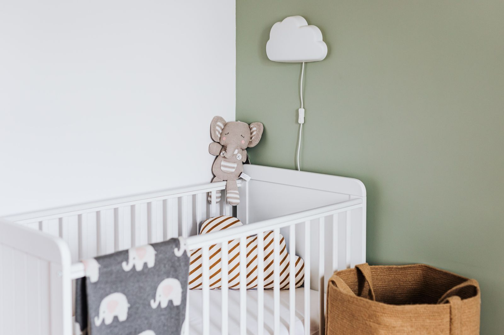
- Choosing a pediatrician
- The car seat (and the inspection)
- Cord-blood banking
- The newborn choices to pre-decide
- Leave, insurance, and paperwork
- The hospital bag and week-one list
Choosing (and maybe meeting) a pediatrician
Pick the doctor who will care for your baby before the birth, and if you can, book a short prenatal visit with them in the third trimester. Both the American Academy of Pediatrics and the American College of Obstetricians and Gynecologists recommend it AAP/ACOG 2025, and families who go tend to have better-timed shots, more breastfeeding, and fewer early ER trips good evidence. Many practices also offer a free "meet and greet," which is enough if you just want to size up the office.
Go deeper
The formal version is the "pediatric prenatal visit." The AAP clinical report The Prenatal Visit (first 2009, reaffirmed 2018 and again in March 2025) frames it as the first step in building a child's "medical home" AAP 2025. There is a small internal tension worth knowing: that report says it is for "all expectant families," while the AAP's own Bright Futures schedule scopes the prenatal visit more narrowly to first-time parents, higher-risk parents, or anyone who asks AAP Bright Futures. The honest read: it is genuinely useful for everyone and especially valuable if this is your first baby or your pregnancy is higher-risk.
It is widely offered and rarely used. Around 73 to 78 percent of pediatricians offer a prenatal visit, but only about 22 percent of expectant parents actually attend, and fewer than 5 percent of low-income urban mothers do, despite being higher-risk Mei 2024 good evidence. One common reason offices are vague about it is billing: a true counseling visit maps to preventive-counseling codes, but most insurers bundle that into a regular preventive visit and will not pay it separately, so coverage is genuinely murky. The practical move is to ask the office two questions: do you bill this visit, and is a "meet and greet" free?
A short interview checklist, drawn from AAP HealthyChildren and children's-hospital parent guides: board certification and years in practice; office hours and how far ahead well-child visits book; whether there is an after-hours nurse line or on-call clinician (or you get sent to urgent care); which hospital they admit to; how they prefer to communicate and how fast they reply; and their approach to vaccines, breastfeeding support, and preventive care. If you want a doctor who follows the routine immunization schedule, ask directly, it is a fair and normal question.
Is a formal prenatal pediatric visit worth it for a low-risk, second-time parent?
One camp (the AAP clinical report): recommend it for all expectant families, it sets up the relationship and is linked to better immunization timing, more breastfeeding, and fewer ER visits.
The other (the Bright Futures footnote, and the real-world uptake): the schedule itself scopes the visit to first-time or higher-risk parents and those who request it, only about 1 in 5 attend, and a free meet-and-greet may serve a low-risk repeat parent just as well.
Where the evidence sits (dated): this is not really a dispute about value. The visit is uncontested as high-value for first-time and higher-risk families (Mei 2024); for an experienced parent it is a reasonable, lower-yield nicety. The outcome studies are mostly observational, so the effect sizes are not airtight.
A reasonable default: first baby or anything complicated, book the visit. Second or third baby with a doctor you already like, a quick meet-and-greet (or a phone call) is plenty.
The car seat, and why it needs a checkup
Buy a rear-facing infant seat, install it, and have it checked by a certified technician before your due date, because the hospital will not let you drive home without a correctly installed one. In the largest US study, more than 46 percent of car seats were misused in a way that reduces crash protection NHTSA 2015 strong evidence. A free inspection is the single highest-yield safety thing you can do before the birth.
Go deeper
The misuse rate comes from NHTSA's National Child Restraint Use Special Study, which inspected child restraints in 4,167 vehicles NHTSA NCRUSS. Misuse was highest for forward-facing seats (61 percent) and rear-facing infant "bucket" seats (49 percent); the two most common errors were a loose installation (the seat moves more than an inch at the belt path) and a loose harness (it fails the pinch test at the collarbone). The uncomfortable part: most parents who are sure their seat is right have at least one error on inspection, which is exactly why a second set of trained eyes helps.
To find a free check, look up a certified child passenger safety technician through the national certification program or NHTSA's inspection-station locator. Safe Kids Worldwide and its roughly 400 local coalitions host more than 8,000 free car-seat events a year at fire stations, hospitals, and stores, and you can call the NHTSA hotline at 1-888-327-4236 AAP HealthyChildren good evidence. While you are at it: register the seat with the manufacturer so you get recall notices, check the expiration date on the label, and avoid a used seat unless you know its full history (a seat that has been in a crash, or is missing parts or labels, may not protect).
One habit to build now, before the baby can even move: never leave a child alone in a parked car. About 37 US children die of vehicular heatstroke a year, and 1,047 have died since 1998 noheatstroke.org strong evidence. A cabin gains roughly 19 degrees Fahrenheit in 10 minutes even on a mild day, and cracking the windows barely helps. The trick that works is to put something you cannot leave behind (your phone, your badge, your left shoe) in the back seat next to where the car seat will go. The full seat-stage ladder, recline and tether details, and the heatstroke curve are in the Safety chapter.
Cord-blood banking: donate, do not buy
If you want to do something with the cord blood, donate it to a public bank, it is free and it is what both the AAP and ACOG recommend AAP 2017 good evidence. Paying a private bank to store your own child's cord blood (about $1,000 to $2,500 up front plus $100 to $300 a year) is something neither body recommends for a healthy family, because the chance your child ever uses their own stored unit is very small. The one real exception is a family that already has a relative with a disease treatable by a cord-blood transplant.
Go deeper
The two governing documents agree. The AAP policy statement (Pediatrics 2017) says "public cord blood banking is the preferred method," and ACOG Committee Opinion 771 (March 2019, which replaced CO 648 of 2015 and is still current) endorses public over private and says routine for-profit banking "is not supported by available evidence" AAP 2017. Public donation is free to you, must be FDA-licensed, and lists qualifying units on the national registry for any patient who matches; it has to be arranged in advance (ideally before about 34 weeks) at a participating hospital.
The odds are the crux. Estimates of a child ever using their own banked unit range enormously, from roughly 1 in 400 to 1 in 200,000, depending on which diseases you count mixed, modeled. Private banks tend to cite a different number, the roughly 1 in 217 lifetime chance of needing some stem-cell transplant by age 70, but most of those transplants would not use a person's own neonatal cord blood. A few often-omitted limits make private banking weaker than the brochure: an autologous unit usually cannot treat a genetic or inherited disease in that same child (the causing mutation is in the stored cells too), and only about 25 to 40 percent of collected units even meet the cell-count and quality bar for storage, so a privately banked unit may be too small to transplant if it is ever needed AAP 2017.
Private cord-blood banking: prudent insurance, or low-yield marketing?
One camp (private banks, some parents): it is a one-time, can't-redo chance at a personal biological "insurance policy" against future cancers, blood disorders, and emerging therapies, and the lifetime chance of needing some stem-cell transplant is about 1 in 217.
The other (AAP, ACOG, most academics): for a healthy family with no known qualifying relative, the chance of ever using the child's own unit is tiny, the unit cannot fix that child's genetic disease, many stored units are too small to use, and public donation is free and helps real patients now.
Where the evidence sits (dated, 2026): the professional consensus is firmly pro-public and against routine private banking. The genuine exception is a "directed donation" (a public-bank pathway that reserves the unit for a specific family member with a qualifying condition), which is generally also free.
A reasonable default: donate to a public bank if your hospital participates, or do nothing. Pay for private banking only if a doctor tells you a family member has a condition it could treat.
The newborn choices to pre-decide
A few decisions get sprung on exhausted parents in the delivery room. Settle them now, while you can think. Most are not really close calls: you will almost certainly want delayed cord clamping, the vitamin K shot, and (in the US) the hepatitis B birth dose and eye ointment. The two genuine, values-based choices are how you intend to feed and, for a boy, whether to circumcise. Writing your preferences down means the team can follow them without waking you to ask.
Go deeper
The strongly-recommended bundle (decide to accept, or have a specific reason not to)
Delayed cord clamping. ACOG recommends waiting at least 30 to 60 seconds before clamping the cord in vigorous term and preterm babies, and at least 60 seconds for preterm babies who do not need resuscitation ACOG 2020/2025 strong evidence. It raises iron stores, and in preterm babies it lowers the risk of death and serious complications; the only real trade-off is a small bump in newborn jaundice needing light therapy at term. The direction is settled, so this is closer to a default than a decision.
The vitamin K shot. One injection at birth (1 mg for babies over 1500 g) prevents vitamin K deficiency bleeding, including catastrophic late brain bleeds. The AAP (2022) says the oral version "cannot be recommended" because it is less reliable, and the CDC reports that babies who skip the shot are about 81 times more likely to develop this bleeding CDC 2025 strong evidence. It is rare (the catastrophic late form runs under 1 in 100,000 with the shot), but when it happens without prophylaxis it is devastating, with reported death rates from roughly 14 to 33 percent across studies. Decide in advance so any refusal is at least informed.
The hepatitis B birth dose. Perinatal hepatitis B becomes a lifelong chronic infection about 90 percent of the time, which is why the US has long given a birth dose to every stable newborn CDC strong evidence. If the mother is hepatitis-B positive or her status is unknown, the baby should get vaccine plus immune globulin within 12 hours, which is about 85 to 95 percent effective at preventing chronic infection, and that part is not in dispute anywhere.
As of June 2026, this one is in legal flux, check the linked source. In December 2025 a reconstituted US advisory committee voted (8 to 3) to move the birth dose to a shared, individual decision for babies of hepatitis-B-negative mothers, but in March 2026 a federal court stayed that vote, so the universal birth dose within 24 hours is again the official CDC and AAP recommendation as of this review. CIDRAP 2026 The exposed-newborn protocol above is not in dispute. The Immunization chapter tracks the live status.
Eye (ocular) prophylaxis. In the US, antibiotic eye ointment (0.5 percent erythromycin) is recommended for every newborn to prevent gonococcal eye infection that can blind a baby, and it is mandated by law in many states, so in much of the US it is not optional USPSTF 2019 strong evidence. Know your state's rule before delivery.
The genuine choices (your values, no single right answer)
How you plan to feed. This is worth deciding now because intention is the strongest predictor of what actually happens. In a large UK cohort, only 3.4 percent of women who planned to bottle-feed started breastfeeding, versus 96.6 percent of those who planned to breastfeed Donath 2003 strong evidence. The useful move is to form an intention, line up support in advance (a lactation contact, a pump if you are returning to work), and then hold it loosely, since combination feeding and changes of plan are completely normal. The Feeding chapter covers all of this without the guilt.
Circumcision, for a boy. No professional body anywhere recommends routine infant circumcision. The US is the Anglophone outlier: the AAP's 2012 position is that the benefits are enough to "justify access" for families who choose it but "not great enough to recommend" it routinely (that statement technically expired in 2017 but was never replaced, so it remains the de facto AAP view). Canada's pediatric society (with a new statement in late 2024), Australia's college of physicians, and UK practice all decline to recommend it AAP 2012 good evidence. It is a genuine values decision (medical, cultural, religious); if you choose it, ask about pain control, since a dorsal nerve block plus sucrose is the standard of care and "no anesthesia" is not. Decide before delivery, because timing and consent move fast. The numbers and cross-country detail are in the Health and Edges chapters.
Circumcision: a parent's choice, or a non-therapeutic procedure to avoid?
One camp (AAP read, and many US families on cultural or religious grounds): the benefits (fewer urinary infections in the first year, some HIV protection in high-prevalence adult settings, less penile cancer) outweigh the low risks enough to justify access, and with good pain control the newborn period is the safest time to do it.
The other (Canada, Australia, UK practice, bioethics critics): the absolute benefits are small (the urinary-infection benefit is about a 1 percent absolute reduction; penile cancer is rare), no body recommends it routinely, and non-therapeutic surgery on a baby who cannot consent raises a bodily-autonomy concern.
Where the evidence sits (dated): both camps read the same modest-benefit, low-risk numbers and weigh them differently. Complications occur in under 1 percent of newborn procedures. This is a values split that is not closing, with the US as the outlier among English-speaking countries.
A reasonable default: there is no medical default. Decide based on your family's values, and whatever you choose, insist on real pain control.
Screens you do not choose, but should expect
Three newborn screens run in the first days and are not really opt-in in most places: the metabolic "heel prick" bloodspot, a painless pulse-oximetry check for critical heart defects, and a hearing screen. Knowing they are coming helps, and so does knowing that a "refer" result on the hearing screen is common and usually not a diagnosis (it is often just fluid in the ear). The US bloodspot panel is large (around 40 conditions); the UK screens for 10, which is a deliberate philosophy difference, not a quality gap. Details are in the Health and Well-baby chapters.
Two more prenatal to-dos that belong here
Your own "cocoon" vaccines. A Tdap shot is recommended in every pregnancy (usually 27 to 36 weeks) so you pass whooping-cough antibodies to the baby; flu, COVID, and RSV protection (maternal RSV vaccine in season, or infant nirsevimab after birth) guard the baby in the vulnerable first months strong evidence. These are decided and given before birth. See the Immunization chapter.
A short birth plan in writing. One page that records the choices above (clamping, vitamin K, hepatitis B, eye ointment, feeding, circumcision, who is in the room) lets the team honor your wishes without waking you to ask. Hold it loosely, births improvise, but having it written down is a genuine kindness to your future self.
Leave, insurance, and the boring paperwork
The bureaucracy will not chase you, so start it early. Federal job protection (FMLA) gives 12 weeks of unpaid leave, reaches only about 56 percent of workers, and wants 30 days' notice for a foreseeable birth US DOL good evidence. If your state has paid leave, you usually have to claim it on a deadline. And adding the baby to your health insurance has a short window after birth that you do not want to miss.
Go deeper
FMLA (the federal floor). It is unpaid, job-protected leave, not pay. You qualify only if all three are true: your employer has 50 or more employees within 75 miles, you have worked there 12 or more months, and you logged 1,250 or more hours in the past year. By those rules about 56 percent of US workers are eligible and 44 percent are not US DOL. For a foreseeable birth you must give at least 30 days' notice, so the action item is to tell HR roughly a month or more before your planned leave.
Two newer federal protections that are easy to miss. The Pregnant Workers Fairness Act (in effect since June 2023, for employers with 15+ employees) requires reasonable accommodations for pregnancy and related conditions, things like a water bottle at your station, extra breaks, or a stool. The PUMP Act (in effect since December 2022) requires reasonable break time and a private, non-bathroom space to express milk for up to a year after birth EEOC good evidence.
State paid leave (you must claim it). A minority of states offer partial wage replacement, but it runs through a state agency on a deadline. California is the worked example: state disability can start up to 4 weeks before the due date and run about 6 to 8 weeks after birth (longer after a cesarean), then 8 weeks of paid bonding leave, and the bonding claim has to be filed within 41 days of the leave start or you risk losing pay CA EDD good evidence. The general lesson for any state: months ahead, find out whether your state has a program (a growing patchwork of roughly 14 states plus DC), what percentage of wages and how many weeks it pays, what your employer adds on top, and the exact claim deadline. The Money chapter has the full landscape.
Insurance: add the baby fast. Birth is a "qualifying life event," so you get a special window to add the newborn, generally at least 30 days on an employer plan or 60 days on the ACA marketplace, and coverage is retroactive to the date of birth no matter when in the window you enroll HealthCare.gov good evidence. For roughly the first 30 days the baby is usually covered under the mother's policy as a bridge. Miss the window and you may have to wait for open enrollment. While you are at it, the Social Security number application is often offered at the hospital, and it is a fine time to add the baby to any life-insurance beneficiary list.
Is the lack of US national paid leave the problem, or is FMLA enough?
One camp (paid-leave advocates): FMLA is unpaid and reaches only about 56 percent of workers, most people with an unmet leave need cannot afford unpaid time, and the US is the only wealthy (OECD) country with no national paid leave.
The other (employer-flexibility view): a state patchwork plus employer benefits and short-term disability already cover many workers, and a federal mandate is costly, especially for small employers.
Where the evidence sits (dated): the factual backbone is not in dispute, FMLA is unpaid, about 56 percent coverage, and the US stands alone among OECD countries without a national program. What to do about it is genuinely partisan and unresolved.
A reasonable default for you as a reader: skip the politics and find out exactly what you are entitled to, your state program (if any), your employer's policy, and any short-term disability, then stack them and note every deadline.
The hospital bag and the honest week-one list
Pack the bag by about 36 weeks (roughly 1 in 10 babies arrive before term), and pack less than the internet tells you. A newborn needs to be warm, fed, clean, and safely transported, and almost nothing else in the first week. The two authorities here, the UK's NHS for the bag and newborn skin, and the AAP for the day-one essentials, converge on a deliberately short list NHS good evidence.
A reconciled, minimalist hospital bag (tick what you have packed):
- Your ID, insurance card, maternity notes, and a short birth plan.
- For labor: comfortable clothes, socks, slippers, lip balm, hair ties, a phone charger, snacks, and change for parking.
- For you after the birth: 2 or 3 front-opening tops (for skin-to-skin and feeding), 2 to 3 packs of super-absorbent maternity pads (there is real bleeding afterward), several pairs of cheap dark underwear, and a couple of nursing or comfortable bras.
- For the baby: a few bodysuits and sleepsuits in two sizes (newborn size is unpredictable), a hat, a cardigan or blanket for warmth, optional scratch mitts, newborn-size diapers, and cotton wool (see below).
- A going-home outfit for the baby, plus weather-appropriate layers. Keep this set near the top of the bag so a partner can find it quickly on the way out.
- An installed, correctly fitted rear-facing infant car seat in the car (required for discharge).
Go deeper
The 36-week rule. The NHS says have the bag ready by about 36 weeks (sooner for twins or a higher-risk pregnancy); the UK charity Tommy's says no later than 37 weeks and suggests two bags, one for labor and one for after Tommy's. We use the more conservative 36 weeks, because a meaningful share of babies arrive early.
The honest week-one list at home
The AAP frames the genuine day-one list as a car seat, a safe sleep space, diapers, feeding supplies, and a few outfits. Reconciled with NHS "what to buy," the real minimum is:
- Safe sleep: a firm, flat, separate sleep surface (crib, bassinet, cot, or Moses basket) with a fitted sheet and no pillows, bumpers, quilts, or loose bedding, plus a couple of swaddles or sleep sacks. Plan to room-share without bed-sharing. (The full safe-sleep rules are in the Sleep chapter.)
- Feeding: if breastfeeding, very little gear at first (maybe lanolin, breast pads, a few muslin cloths); if formula or combination feeding, sterilized bottles and teats, first-infant formula, and sterilizing equipment. A pump if you are returning to work soon.
- Diapering: newborn diapers, cotton wool and warm water or fragrance-free wipes, a changing mat, barrier cream, and diaper sacks.
- Clothing: several vests and sleepsuits (babies leak), a hat, a cardigan, an outdoor layer, scratch mitts.
- Bathing and hygiene: a baby bath or just a clean sink, soft towels, a digital thermometer, baby nail file or rounded scissors. Use plain water only for the first month (no cleansers, lotions, or oils, per NHS).
- Out and about: a stroller or carrier and a couple of blankets.
What to skip in week one (to keep it minimal and avoid "safety theater"): wipe warmers, "anti-roll" sleep positioners (a suffocation risk, do not use), most "smart" sock pulse-oximeter monitors (not shown to prevent SIDS), elaborate nursery decor, and big hauls of newborn-size clothing they will outgrow in weeks. The Safety and Gear chapters explain why.
Cotton wool and water, or gentle baby wipes, for a newborn's bottom?
One camp (NHS, Tommy's, many UK midwives): use cotton wool and plain warm water for the first 2 to 4 weeks, and avoid wipes, because newborn skin is still forming its protective "acid mantle" and plain water avoids any chance of irritation, at almost no cost.
The other (the trial evidence): a well-run randomized trial of 280 newborns found a gentle, fragrance-free wipe was just as safe as cotton wool and water on skin hydration, water loss, and pH, and the trial actually recorded more diaper-area dermatitis in the water-and-cotton-wool group, slightly favoring the wipes Lavender 2012 strong evidence.
Where the evidence sits (dated): this is low-stakes. The official UK advice is cotton wool and water, but the best trial we have did not find wipes harmful, and if anything found the gentle wipe slightly better on rash.
A reasonable default: cotton wool and water is the cheapest, safest starting point and there is no downside to it, but a fragrance-free, alcohol-free gentle wipe is a perfectly evidence-supported alternative if you prefer the convenience. Wipes are not the enemy.
The first hours and days
birth to day 3
The first two or three days are mostly a baby getting used to air, light, milk, and gravity, while a hospital quietly runs a short checklist of things that are genuinely worth doing. Almost everything that looks alarming in a new baby (blotchy skin, fast breathing that pauses, a sneeze, a tiny weight dip, a yellow tint by day three) is normal. This section walks through the standard newborn bundle, what the first days actually look like, and the small number of findings that mean call someone now.
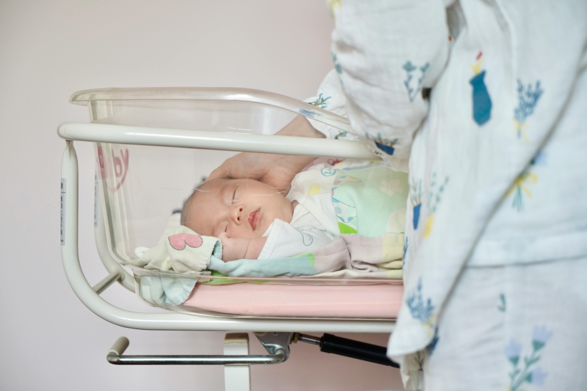
- The delivery-room bundle
- The three newborn screens
- What a brand-new baby looks like
- Early weight loss
- Early jaundice
- Is the baby getting enough? (days 1 to 3)
- The circumcision decision
- The first night
The delivery-room bundle: vitamin K, hepatitis B, eye ointment, the cord
In the first hours, a stable newborn is typically offered four standard things: a vitamin K shot, a hepatitis B vaccine, an eye ointment, and delayed clamping of the umbilical cord. Vitamin K and delayed cord clamping are not cross-country disputes, everyone agrees on them. Hepatitis B timing and the eye ointment are the two places where the US does things differently from the UK, Canada, and Australia, and those differences are about local disease rates, not safety.
Vitamin K: a one-time shot that prevents a rare, devastating bleed
Newborns are born low on vitamin K, breast milk has very little of it, and a baby's gut cannot make its own for weeks, so a small number of unprotected babies bleed, sometimes into the brain, with no warning. A single intramuscular shot in the first hours prevents nearly all of it. strong evidence The American Academy of Pediatrics has recommended the shot as standard care since 1961. AAP 2022
The honest size of the risk without the shot: late vitamin K deficiency bleeding (the dangerous kind, which can strike between about two weeks and six months) happens in roughly 35 per 100,000 births where no prophylaxis is given (about 9 per 100,000 in wealthy countries, far more in poorer ones), and 30 to 60 percent of those bleeds are inside the skull. Sankar 2016 CDC 2025 With the shot, late bleeding drops to under 1 in 100,000. strong evidence
Go deeper: the oral option, the refusal trend, and the debunked cancer scare
The dose. A single intramuscular dose within about six hours of birth: 1 mg for babies over 1500 g, and 0.3 to 0.5 mg/kg for babies at or under 1500 g. AAP 2022
Is there an oral version? Yes, and it is offered to families who decline the shot in the UK and parts of Australia, but it is not as reliable, because it takes weeks of perfect dosing and cannot protect a baby with a silent bile-duct problem the way the shot can. The AAP states plainly that oral vitamin K "cannot be recommended" as equal to the shot, and advises a late catch-up dose at 4 to 12 weeks for families who go oral. good evidence AAP 2022 The single oral schedule with a near-clean record is the Danish one (2 mg at birth, then 1 mg weekly for twelve weeks), which recorded no late bleeds across nearly eight years of national tracking. Hansen 2003
Refusal is rising, and it is the live issue. Refusal clusters by birth setting: in one Tennessee survey, parents declined vitamin K about 3.0 percent of the time at hospitals versus 31 percent at birthing centers, with home and midwife-attended births far more likely to decline. Pediatrics 2017 A 2026 national analysis found refusal climbing further, from about 2.9 to 5.2 percent across recent years (a 77 percent rise). JAMA 2026
As of June 2026, the refusal trend is actively rising and clinically watched; the medical case for the shot has not changed.
The cancer scare, named and retired. Studies in the early 1990s suggested a link between the vitamin K shot and childhood leukemia. Multiple large studies since looked for it and did not find it; the AAP and others consider it disproven. strong evidence AAP 2022
What "fatal" means. Older consumer messaging sometimes says "1 in 5 babies with late bleeding dies." The honest figure across studies is a range, roughly 14 to 33 percent mortality, with many survivors left with permanent neurological harm. The point is the same either way: this is a serious bleed, and the shot prevents it. mixed evidence
Hepatitis B: the one timing difference you will actually notice
In the US, every medically stable newborn is offered the first hepatitis B shot within 24 hours, regardless of the mother's status, as a safety net. The reason is stark: a baby who catches hepatitis B around birth has about a 90 percent chance of carrying it for life (versus about 5 percent for an infected adult), and roughly a quarter of lifelong carriers eventually die of liver disease. strong evidence CDC
Should every newborn get a hepatitis B shot on day one, or only babies of infected mothers?
Universal (US, Australia, WHO): give the birth dose to every stable newborn within 24 hours, because maternal screening sometimes misses or mislabels an infection, and the dose is a safety net plus the anchor of the series. CDC
Selective (UK, much of Canada): give the birth dose only to babies of mothers who test positive, relying on near-universal prenatal screening and a lower baseline of the disease, with the rest of the series given later in infancy. UKHSA
Where the evidence sits (dated): this is a policy difference rooted in how common the disease is and how confident a system is in its prenatal screening, not a dispute about whether the vaccine is safe or works. For a baby whose mother is positive or status-unknown, every country agrees: vaccine plus hepatitis B immune globulin within 12 hours, which is 85 to 95 percent effective. CDC 2018
A reasonable default: follow your country's program. In the US, the day-one dose is the long-standing recommendation; if your baby is healthy and the mother is negative, a short delay is a conversation to have with your pediatrician, not an emergency either way. The exposed-baby protocol (mother positive or unknown) is the part that is truly time-critical.
Go deeper: the 2025 to 2026 US shake-up
The US universal birth-dose policy entered a period of flux. In December 2025 a federal advisory committee voted to move the birth dose to shared or individual decision-making for babies of mothers who test negative (allowing a delay to 2 months or later if parents choose). The AAP dissented and continued to recommend the universal day-one dose. A subsequent court order then stayed the new committee's votes and reinstated the prior universal schedule, and the case is ongoing. in flux
As of June 2026 this is unsettled and moving; check your pediatrician's current recommendation and your jurisdiction. The underlying science (the vaccine is safe and works) is not what changed.
Eye ointment: a US default that much of the world has dropped
In the US, every newborn's eyes get a smear of 0.5 percent erythromycin ointment to prevent gonococcal eye infection, which can blind a baby; the US Preventive Services Task Force grades this an A recommendation and many states require it by law. strong evidence USPSTF 2019 The UK, Canada, and Australia have largely stopped routine eye ointment, relying instead on screening and treating mothers during pregnancy. CPS 2015
Universal eye ointment, or screen and treat the mother instead?
Universal ointment (US): give every newborn the ointment; gonococcal eye infection can blind, and untreated mother-to-baby transmission runs 30 to 50 percent, so the ointment is a cheap, broad safety net. USPSTF 2019
Screen the mother (UK, Canada, Australia): rely on prenatal testing and treatment, partly because the ointment does little against chlamydia and because erythromycin resistance is rising (a 32.6 percent treatment-failure rate against gonorrhea was reported in Canada in 2022). Cochrane 2020
Where the evidence sits (dated): the blinding risk is undisputed; the dispute is purely which tool to use. Cochrane (2020) found ointment reduces eye infection of any cause but the evidence specifically for gonococcal or chlamydial infection is low-certainty. Cochrane 2020
A reasonable default: learn your jurisdiction's rule. In many US states the ointment is mandated and parents cannot easily decline it; elsewhere it is simply not done. Either system is defensible.
The umbilical cord: wait to clamp, then keep it dry
Waiting at least 30 to 60 seconds before clamping the cord lets a useful slug of blood finish moving into the baby, which raises iron stores and lowers the chance of iron deficiency months later. This is now recommended for vigorous term babies in every major country. strong evidence ACOG 2020 WHO The one small trade-off is a modestly higher chance of needing light therapy for jaundice, which is easy to manage where light therapy is available. After birth, the stump is kept clean and dry (no alcohol swabbing) and falls off on its own in one to three weeks.
The evidence: the exact cord-clamping trade-off, preterm, and cord care abroad
The term trade-off, in numbers. In a Cochrane review of healthy term babies, delaying the clamp raised early hemoglobin by about 1.5 g/dL and cut the risk of iron deficiency at 3 to 6 months by more than half (early clamping made iron deficiency over twice as likely). The cost was a higher need for jaundice light therapy (early clamping needed less, relative risk 0.62). Cochrane's conclusion: delay is warranted "as long as access to treatment for jaundice requiring phototherapy is available." strong evidence Cochrane 2013
For preterm babies the stakes are higher. A large 2023 analysis of 48 trials found that for premature babies who do not need immediate resuscitation, deferring the clamp reduces the chance of dying before discharge (odds ratio 0.68), with the longest delays giving the biggest benefit. strong evidence Seidler 2023 ACOG now recommends at least 60 seconds for preterm babies. ACOG 2025
Cord care abroad. Dry cord care is standard in all wealthy countries. The WHO additionally recommends a 4 percent chlorhexidine application in low-resource settings where harmful traditional substances are sometimes put on the cord; that is a targeted recommendation, not a high-income one. WHO 2014
The three newborn screens: heel-prick, heart, and hearing
Around 24 to 48 hours, your baby gets three painless or near-painless screens: a few drops of blood from the heel (for rare but treatable conditions), a clip on a hand and foot to check oxygen (for serious heart defects), and a soft sound test for hearing. These look for needles in a haystack. A result that needs a follow-up test is common and is usually not bad news.
The heel-prick (blood spot)
A few drops of blood on a card are tested for a panel of rare metabolic and genetic conditions that are treatable if caught early. The number of conditions on the panel varies a lot by country and even by US state, which is a real and deliberate difference in philosophy, not a quality gap. good evidence
Usually normal
- A "no news" result (most programs only call you if something needs follow-up)
- A request to repeat the sample (often the first one was too early, too small, or smudged, especially in premature babies)
- A "borderline" that resolves on the repeat
Call your doctor about
- A result flagged as a true positive, which triggers prompt confirmatory testing
- Missing the test entirely (for example, after a very short stay or a home birth)
- Any time you are not sure whether the screen was done
What to remember: a repeat sample is routine and usually reassuring. A confirmed positive is rare and is exactly what the screen exists to catch early, while treatment still works.
Go deeper: why the US screens for 40 conditions and the UK for 10
The US recommended panel covers about 38 core conditions (40 once Duchenne muscular dystrophy and metachromatic leukodystrophy were added in December 2025), and states can screen for more or fewer. The UK screens for 10 (tyrosinemia type 1 went live in England in October 2025). good evidence NHS Neither is wrong: the US adds essentially any treatable condition that clears its evidence review, while the UK applies stricter cost-and-benefit criteria before adding one. UK NSC So a longer panel is not "better screening," and a baby in the UK is not "under-screened," they are different bets about which rare conditions are worth a wide net.
The heart screen (pulse oximetry)
A soft sensor on a hand and a foot reads the blood-oxygen level to catch critical congenital heart defects (the duct-dependent kind) that can look fine at first and then crash. A low or mismatched reading triggers an echocardiogram. It does not catch every heart problem, but it reliably catches the most time-critical ones. good evidence
The hearing screen
One of two quick tests (an ear-canal echo test, or an electrode test of the hearing nerve) checks whether the baby's hearing pathway is working. The goal is the "1-3-6" benchmark: screened by 1 month, any hearing loss diagnosed by 3 months, and help started by 6 months, because early support strongly improves a child's language. strong evidence CDC
The evidence: the two methods and why "refer" is not "deaf"
The echo test (otoacoustic emissions) is fast and cheap but refers more often (roughly 6 to 10 percent) because vernix or fluid in the ear canal causes false fails; the nerve test (automated auditory brainstem response) is slower but refers less (about 2 to 3 percent) and also catches a rarer nerve-pathway problem. Many programs use the echo test first and the nerve test for anyone who refers, to cut false alarms. good evidence Babies in the NICU more than five days get the nerve test directly. The system's real weak point is loss to follow-up: in one CDC survey, more than a third of babies who did not pass either never got the needed follow-up test or it was not documented. CDC
As of June 2026 the "where this is heading" frontier is whole-genome newborn sequencing (research pilots like GUARDIAN and BabySeq), which is promising but not standard care anywhere and raises real questions about uncertain results and anxiety.
What a brand-new baby actually looks like
New babies are lumpy, blotchy, peely, puffy, and loud, and almost all of it is normal. Their hands and feet can look blue while their lips are pink, they breathe in fast irregular bursts with short pauses, they sneeze and hiccup and grunt, and their skin sprouts rashes and spots that come and go. Knowing the common benign findings, and the few look-alikes that are not benign, takes most of the fear out of the first days.
The benign things you are likely to see
- Blue hands and feet (acrocyanosis): common and harmless in the first day or two; it is just immature circulation and can come back when the baby is cold. Cincinnati Children's
- Newborn rashes: erythema toxicum (blotchy red with pale centers, day 1 to 2), milia (tiny white bumps on the nose), and baby acne all come and go on their own. AAFP 2008
- Flat blue-grey patches (congenital dermal melanocytosis, formerly called "Mongolian spots"): completely benign, common in babies with more pigmented skin, and they fade over years. Worth having documented in the chart so a flat blue patch is never later mistaken for a bruise. PMC8752411
- Swollen breasts or a few drops of milk or blood-tinged discharge: from the mother's hormones leaving the baby's system; benign in boys and girls, and you should not squeeze or massage it. PMC4422278
- An orange or brick-red stain in the diaper in the first couple of days: usually urate crystals from concentrated early urine, normal at first (see the feeding section for when it is not).
- A red patch in the white of the eye, a cone-shaped or swollen head from delivery, peeling skin, fine body hair: all common and self-resolving.
The benign-versus-worrying look-alikes
A handful of normal newborn quirks have a dangerous twin. These three pairs are the ones worth learning, because the safe version and the emergency version look similar at a glance.
Usually normal
- Blue hands and feet only, with pink lips and tongue (acrocyanosis)
- Jittery, shaky movements that stop when you gently hold the limb, with no eye-rolling and normal breathing
- A soft spot that bulges only during a hard cry and flattens when the baby is calm and held upright
- Fast, irregular breathing with short pauses (periodic breathing)
Call your doctor or 911 about
- Blue lips, tongue, face, or whole body (central cyanosis): never normal, call now
- Rhythmic jerking that continues when you hold the limb, eye deviation, or any color or breathing change (possible seizure)
- A soft spot that stays bulging and tense when the baby is calm and upright, or a stiff neck
- A breathing pause over about 20 seconds, grunting with every breath, ribs sucking in, or more than 60 breaths a minute
The reliable home test for the shakes: jitteriness stops when you gently hold or flex the limb; a seizure does not. And remember a newborn's skin can look pink even when oxygen is low (baby hemoglobin hides it), so the hospital's oxygen screen matters more than how pink the baby looks.
Go deeper: normal newborn vital signs (and why one odd number rarely means much)
Newborn numbers run faster than adults expect. A normal heart rate in the early weeks is roughly 100 to 190 beats per minute awake (lower asleep, down to about 90; a brand-new newborn runs a touch narrower, about 120 to 170), and a normal breathing rate is about 30 to 60 breaths per minute, counted over a full minute because babies breathe in bursts. good evidence RCH 2023 The big honest caveat: the classic textbook ranges were never well-grounded, and a single out-of-range reading flags up to half of perfectly well babies, so trend, work of breathing, color, and behavior matter more than any one count. Fleming 2011
Normal temperature (rectal, the reference method in babies) is about 36.6 to 38.0 C (97.9 to 100.4 F). The line that matters in this age group is below. CPS
Early weight loss: the dip that scares everyone and is usually fine
Almost all newborns lose some weight in the first days as they shed birth fluid and milk ramps up; the dip bottoms out around day 2 or 3 and turns around within the first few days. A loss up to about 7 to 8 percent of birth weight is squarely normal, the classic "we should look harder" line is 10 percent, and most babies are back to birth weight by 10 to 14 days. strong evidence
How much is typical? The big dataset behind the chart below (over 160,000 newborns) found that exclusively breastfed babies born vaginally lose a median of about 7 percent by 48 hours, then start to climb. Cesarean babies lose a bit more and bottom out a little later (a median around 8.6 percent at 72 hours). Flaherman 2015
Go deeper: what the threshold really is, and why the chart reads weight as a trajectory
There is no single magic number, and the chart itself is descriptive (it shows where your baby sits, it does not prescribe an action). The rules a clinician actually uses: strong evidence
- 10 percent loss is the classic flag, because beyond it the risk of jaundice and of dangerous dehydration rises. Flaherman 2015
- Trajectory, not just one number: a baby crossing up through the percentiles (heading from the 75th toward the 90th or 95th line) is on a steeper-than-typical path and is exactly who benefits from lactation help, even before the 10 percent line. Flaherman 2015
- Not regained by two weeks is itself a reason for a feeding evaluation (and, if the baby is still yellow, a prompt to check a different kind of bilirubin, see jaundice below).
Why this matters beyond the scale: too little milk in the first days means fewer stools, which means less bilirubin cleared out (worse jaundice) and less fluid (dehydration). That is why the weight, the jaundice, the diaper count, and the latch all get checked together at the same follow-up visit. The deeper feeding-adequacy and supplementation picture is in Feeding.
Early jaundice: common, usually benign, and watched closely for a reason
More than two-thirds of newborns turn a little yellow, usually starting on the face around day 2 or 3 and fading over one to three weeks. The vast majority is normal and harmless. The whole hospital system exists to catch the rare baby whose level climbs high enough to need treatment, which is why your baby gets a bilirubin check (a heel-stick or a forehead meter) before discharge. strong evidence
Usually normal
- Yellow tint appearing on day 2 to 4, starting at the face, fading over 1 to 3 weeks
- A bilirubin number below the treatment line on the chart your team is using
- Mild yellowing in a baby who is feeding well and making plenty of wet and dirty diapers
- A predischarge heel-stick or forehead-meter reading (this is routine in the US)
Call your doctor about
- Jaundice in the first 24 hours of life (always treated as serious until proven otherwise)
- Yellow that is spreading fast or deepening, or reaching the belly, arms, or legs
- A sleepy baby who is hard to wake to feed, feeding poorly, or making too few diapers
- A high-pitched cry, arching of the back, or a very floppy or very stiff baby (urgent)
What turns it serious: jaundice in the first day, a fast climb, or a baby who is also feeding poorly and not making diapers. The brick-red flag of very high bilirubin (extreme sleepiness, arching, high-pitched cry) is an emergency.
Go deeper: the bilirubin check, the 2022 threshold change, and the rarer "pale stool" jaundice
Why the predischarge check. The AAP recommends a bilirubin measurement (a blood TSB or a skin TcB) for every baby at 24 to 48 hours, plotted against an hour-by-hour chart to decide whether light therapy is needed. strong evidence AAFP 2023 This is a genuine US-versus-UK difference: the US checks every baby, while the UK and NICE measure only babies who look jaundiced. Canada also recommends a predischarge measurement. CPS 2025
The 2022 change (the lines moved up). In 2022 the AAP raised the light-therapy thresholds by roughly 2 mg/dL, because newer evidence showed bilirubin does not become toxic until well above the old lines and that light therapy is not entirely free of harm. Real-world studies since have found this cut light-therapy use by more than half with no rise in the dangerous outcomes, an overdue win against overtreatment. strong evidence Pediatrics 2024 The watch-item is good follow-up after discharge, not the thresholds.
Did the 2022 AAP threshold change go too far?
The AAP and the studies that followed: raising the lines cut overtreatment by more than 50 percent with no increase in exchange transfusions or brain injury, so it was correct and overdue.
A cautious minority: higher lines plus shorter hospital stays could let a rare baby slip toward harm if follow-up is weak.
Where the evidence sits (dated): multiple 2024 to 2025 cohorts show the drop in treatment with no safety signal. Pediatrics 2024
A reasonable default: trust the higher lines, and treat the post-discharge bilirubin recheck as the real safety valve. Keep the follow-up appointment.
The rare jaundice that is an emergency: pale stools. Most jaundice is the harmless kind. But jaundice still present at two weeks, OR pale, clay, or white stools, OR dark urine, is not something to watch and wait on. It needs a specific test (a "direct" or conjugated bilirubin) promptly, because it can signal biliary atresia, a bile-duct blockage where the corrective surgery (the Kasai) works far better the earlier it is done (ideally before 30 to 45 days). strong evidence AAP 2025 The defining lab line is a conjugated bilirubin above 1.0 mg/dL. NASPGHAN 2017 Taiwan's national stool-color-card program pushed early detection sensitivity to about 97 percent, and the actionable rule for any parent, anywhere, is the same: yellow at two weeks, or pale stools, or dark urine, means call. Hsiao 2008 The deeper picture is in Health.
Is the baby getting enough in the first days?
In the first days, the two truth-tellers are the diaper count and the weight, not how fussy the baby seems. Colostrum comes in tiny amounts on purpose (a newborn's stomach is marble-sized), and milk "comes in" around day 3 to 5. The simple rule that catches almost every underfed newborn: by day 5, expect at least 6 wet diapers a day. good evidence CDC 2024
The day-by-day diaper map (first week)
| Day of life | Wet diapers (minimum) | Poops (minimum) | Stool color |
|---|---|---|---|
| Day 1 | 1 | 1 | black, tarry (meconium) |
| Day 2 | 2 | 3 | black to dark green |
| Day 3 | 5 | 3 | greenish, transitioning |
| Day 4 | 6 | 3 | greenish to yellow |
| Day 5 to 7 | 6 | 3 | yellow, seedy, loose |
CDC 2024. This chart is for the first week or so; after about six weeks, stooling slows down and the weight curve takes over as the adequacy measure.
Go deeper: the safety floor, when supplementing is medically right, and the brick-dust caveat
Human milk is worth supporting, and the first week is where underfeeding can do real harm. Both of those are true, and they are not in tension. The safety net is simple and quantified: weigh against the chart, count diapers, watch the red flags, and supplement when there is a genuine medical reason. strong evidence
When a little supplementation is the medically right call (per the Academy of Breastfeeding Medicine): documented low blood sugar that frequent feeding does not fix, weight loss of 8 to 10 percent with delayed milk, clear dehydration, very few stools by day 4 to 5, or starvation-pattern jaundice. The preferred supplement order is the mother's own expressed milk, then pasteurized donor milk, then formula, and the volumes are small by design (2 to 10 mL per feed in the first 24 hours). ABM Protocol #3 A small RCT showed that targeted early supplementation (10 mL after feeds, stopped when milk came in) did not undermine breastfeeding at one month and cut readmissions. good evidence Flaherman 2018
The takeaway the modern guidelines have converged on: support breastfeeding hard AND watch feeding adequacy hard. The 2022 AAP jaundice guideline even renamed "breastfeeding jaundice" to "suboptimal-intake hyperbilirubinemia" and the 2022 AAP breastfeeding policy says families "should never feel judged." You will not undermine breastfeeding by feeding a genuinely hungry baby.
The brick-dust caveat. Orange or brick-red urate crystals in the diaper are normal in the first 2 to 3 days, but if they persist past day 3 to 4 (or show up alongside too-few wet diapers), they point to concentrated urine and underfeeding, and warrant a feeding check. The way to tell crystals from true blood is a urine dipstick (crystals are negative for blood). Physician Guide to Breastfeeding The fuller feeding-adequacy and low-supply story is in Feeding.
The circumcision decision (for a baby boy)
If you have a boy, whether to circumcise is a values decision with modest, real benefits and low, real risks, and no major medical body recommends it routinely for all babies. The US is the outlier among English-speaking countries: even the American Academy of Pediatrics only says the benefits are enough to justify access for families who choose it, not enough to recommend it for everyone. If you do choose it, pain control is not optional. good evidence
Should a newborn boy be circumcised?
The case for access (AAP 2012): the preventive benefits (fewer urinary tract infections in the first year, lower risk of some infections and penile cancer over a lifetime) outweigh the low risks enough to justify access for families who want it, weighing medical, religious, and cultural factors. AAP 2012
The case against routine (Canada, Australia, UK): the absolute benefits are small, do not outweigh the risks at a population level, and the procedure raises a bodily-autonomy question, so none of these bodies recommend it routinely. CPS
Where the evidence sits (dated): the benefits are genuine but small in absolute terms (circumcision cuts first-year UTIs by roughly 75 percent in relative terms but only about 1 percent in absolute terms; it nearly eliminates the already-rare penile cancer). The serious-complication rate in the newborn period is under 1 percent and lower than at any later age. The adult HIV-reduction trials were in high-prevalence African settings and do not translate cleanly to newborns in low-prevalence countries. AAP 2012
A reasonable default: there is no medically "correct" choice here; it is a personal and cultural one. Whatever you decide, insist on real pain control (a nerve block plus sugar water and sucking), and have it done in the newborn period if you choose it, when complications are lowest. "Strapping the baby down without anesthesia" is not acceptable practice.
The first night
The first night home (and often the first night in the hospital) can be brutal, and that is normal. A day-old baby who slept through the calm day may wake, root, cry, and want to feed almost constantly through the night ("second night syndrome" is a real, expected thing). It is not a sign of low supply or a failing baby; it is a newborn doing what newborns do.
Two things to hold onto for the first nights: first, every sleep, day or night, goes on the back, on a firm flat surface, with nothing else in the bed, no matter how the baby protests; the safe-sleep rules apply from night one and are covered in Sleep. Second, an exhausted parent feeding alone at 3 a.m. should plan a safe arrangement in advance, because falling asleep with the baby on a sofa or armchair is the single most dangerous place a baby can end up.
That is the first 72 hours: a short, sensible checklist done to the baby, a lot of normal weirdness to get used to, a weight dip that turns around, a yellow tint that almost always fades, diapers that tell you more than the fussing does, and a couple of hard nights. What comes next, the first weeks and the way everything seems to settle around six weeks, is in The first weeks.
The first weeks and the six-week turn
week 0 to 6
The first six weeks are the hardest and the most misleading. Almost everything that frightens new parents in this window (the crying that will not stop, the dark moods, the body that does not feel like yours, the question "is this normal or am I failing") is, statistically, the normal middle of the curve. Several of those curves happen to crest and then turn around the same six-week mark: crying peaks and starts falling, the first social smile arrives, the baby blues either lift or harden into something that needs care, and the cluster of "six-week" checkups arrives to catch what is left. This section is the map of that turn, what to expect, what to ignore, and the few things that are genuinely urgent.
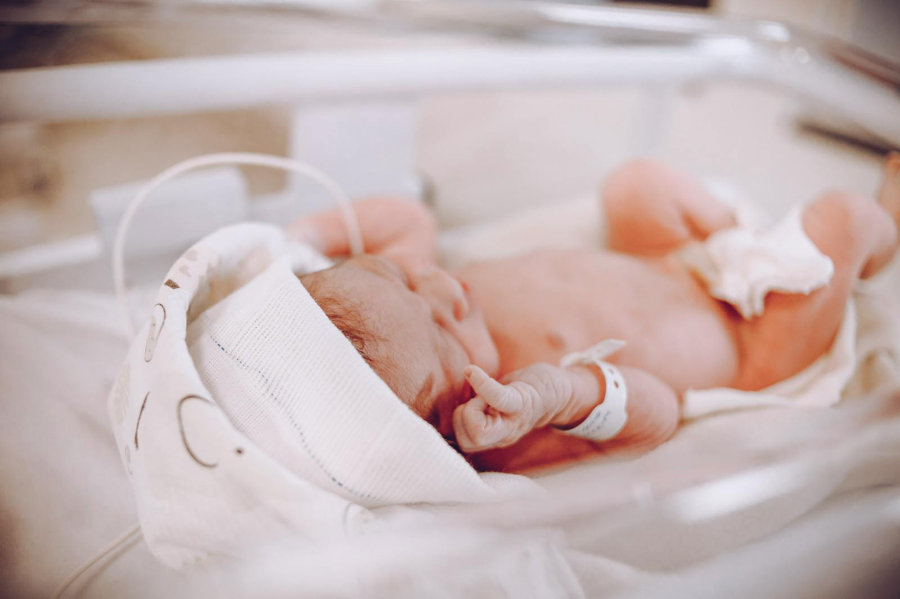
- The crying curve and the six-week convergence
- Soothing, colic, and the things sold as cures
- The one safety rule for the worst night
- Baby blues, and when they are not
- Scary thoughts, and the one emergency
- Your body, your identity, your relationship
- The six-week visits (and why care should not stop there)
The crying curve and the six-week convergence
There is a real, measurable arc to early infant crying: it climbs from birth, peaks at roughly five to six weeks, and eases by three to four months. The same few weeks also tend to bring the first true social smile (around six weeks) and the moment the baby blues should be lifting. We put the full crying-curve chart, with the spread band and a "you are here" marker, in the Soothing section, because that is where the soothing toolkit lives. Here the point is simpler: most of what peaks now is also about to turn.
Go deeper
The hero dataset is Vermillet and colleagues' 2022 meta-analysis in Child Development (57 studies, 17 countries, 7,580 infants). Pooled fussing-plus-crying peaks at about 126 minutes a day (standard deviation 61) in the five-to-six-week bin, with a smooth model placing the true peak near four weeks (95% credible interval 2.6 to 5.5 weeks) and a long fall to roughly 35 to 40 minutes a day by four to five months Vermillet 2022 strong evidence. The classic figure many grandparents remember, about 2.75 hours a day peaking at six weeks, comes from Brazelton's 1962 diary studies Brazelton 1962, via Vermillet 2022 historical, weaker method; the modern number is a little lower and a little earlier.
The single most reassuring fact in the dataset is the spread, not the average. Reconstructed from the study-level data, the middle 80 percent of babies at the peak runs roughly 45 to 205 minutes a day. So a baby crying ninety minutes and a baby crying three hours can both be ordinary. The authors put it bluntly: "durations of reported infant crying are highly variable."
Crying is also partly cultural and partly about how much a baby is carried. At the peak, reported daily crying ranged from about 32 minutes in India and 36 in Mexico to 139 in the United States, 146 in Germany, and 151 in Italy Vermillet 2022 good evidence (some country cells rest on single studies). The low-crying figures rest on smaller samples, so read them as suggestive, not definitive, but the broad point holds: there is no single "right" amount of infant crying.
Usually normal
- Crying that builds over the first weeks and peaks around five to six weeks
- Long inconsolable spells, often clustered in the late afternoon and evening (the "witching hour")
- A red, scrunched, pain-like face and crying that resists every soothing trick (both are explicitly normal features of the curve)
- Cluster feeding in the evening, several short feeds close together
- Wide day-to-day variation in how much your baby cries
Call your doctor about
- A sudden change: a baby who was settling and is now crying inconsolably and differently
- A weak, high-pitched, or moaning cry, or a baby who is unusually floppy, hard to wake, or limp
- Crying paired with fever, poor feeding, vomiting (especially green or bloody), fewer wet diapers, or blood/mucus in the stool
- Crying that you cannot console for hours and a baby who looks unwell to you
What turns it serious: not the amount of crying, but a change in the baby's tone, color, feeding, or alertness alongside it. Trust the sense that "this cry is different."
Soothing, colic, and the things sold as cures
Colic is not a disease. It is the high tail of the normal crying curve given a clinical name: a lot of crying (the old rule of thumb is more than three hours a day, more than three days a week, for more than three weeks) in an otherwise healthy, well-fed, growing baby. About one in five babies meets the definition, the cause is genuinely unknown, and it almost always resolves on its own by three to four months AAP HealthyChildren AAFP 2015 good evidence. The honest news on remedies: almost none of the ones in the store have evidence, the soothing toolkit lives in Soothing, and the highest-yield "treatment" is reassurance plus a plan for when you reach your limit.
The evidence
The one product with real evidence is narrow. The probiotic Lactobacillus reuteri DSM 17938 (five drops a day) reduced crying and fussing by about 25 minutes a day overall at three weeks in the pooled trial data (four randomized trials, 345 infants; 95% confidence interval roughly 4 to 47 fewer minutes), with a clearly larger effect in breastfed babies specifically (number needed to treat 2.6; single breastfed-only trials run to roughly 50 to 75 fewer minutes a day) and insufficient evidence in formula-fed babies Sung 2018 strong evidence. Europe's pediatric GI society (ESPGHAN, 2023) gives it only a weak recommendation with moderate certainty, for breastfed infants, as a treatment and not a preventive. So it is reasonable to try if you are breastfeeding and want to do something, but it is not a cure, and the formula-fed evidence does not support it.
The popular remedies do not beat placebo. Simethicone (the anti-gas drops sold as Mylicon or Infacol) performed no better than placebo in the Cochrane review Cochrane 2016 strong evidence it does not work. Gripe water has no trial evidence of benefit, is an unregulated supplement with a history of recalls and contamination, and "harmless" is not guaranteed AAFP 2015 weak / marketing.
The one dietary lever that works is for a specific subset. If there are signs of a cow's-milk-protein reaction (blood or mucus in the stool, eczema, a family history), a two-week trial of removing dairy and major allergens from a breastfeeding parent's diet, or switching a formula-fed baby to an extensively hydrolyzed formula, has good evidence (in one trial crying fell from 137 to 51 minutes a day) AAFP 2015 strong evidence. Acid-suppressing "reflux" medication (omeprazole and similar) does not help plain colicky crying and is widely over-prescribed AAFP 2015 good evidence.
One more: carrying genuinely reduces normal crying (about 43 percent less at six weeks in the classic trial), which is both a good thing to try and a tidy rebuttal to the "you'll spoil the baby" worry, but the same research group found extra carrying did not help babies who already met colic-level crying Hunziker & Barr 1986 Barr 1991 good evidence. Carrying is low-risk and good for bonding, not a colic cure.
Do colic remedies work, and can you "spoil" a young baby by responding too much?
One camp: the remedy-and-tradition view holds that probiotics, simethicone, and gripe water are low-risk and worth a try, and that the older behaviorist line says responding to every cry teaches a baby to cry for attention and breeds a clingy child.
The other: evidence reviews and attachment researchers hold that simethicone equals placebo and gripe water has no data, that L. reuteri helps only breastfed babies, and that you cannot spoil a young baby, because consistent, prompt response builds trust and actually produces less crying over time.
Where the evidence sits (dated): L. reuteri is the one colic product with real evidence, and only in breastfed infants (Sung 2018 pooled analysis; ESPGHAN 2023 weak recommendation); simethicone and gripe water are settled against (Cochrane 2016). On spoiling, the foundational trial found more carrying produced about 43 percent less crying (Hunziker & Barr 1986), and the no-spoiling finding is strongest in the first six months. As of 2026 both questions are essentially settled.
A reasonable default: skip the gas drops and gripe water; try L. reuteri only if you are breastfeeding and want to; respond to your young baby freely, you are not spoiling them. Lead with the soothing basics in the Soothing section, and know that the most reliable "cure" for the early weeks is time.
The one safety rule for the worst night
Inconsolable crying is the most common trigger for the rare but catastrophic injury of shaking a baby (abusive head trauma). It is rare, roughly 25 to 35 cases per 100,000 US infants a year AAP 2025 strong evidence, and it is also one of the few infant tragedies with a clear, free, fully effective prevention: never shake a baby, and step away before frustration wins. Lay the baby on their back in the crib, leave the room, and check back every five to ten minutes. The crying will not hurt your baby. The shaking can.
The evidence
Abusive head trauma afflicts an estimated 25 to 35 US infants per 100,000 per year under age one (some rigorous studies find up to 40), with a mortality of 10 to 20 percent, and the rate drops steeply after infancy to about 3.8 per 100,000 in the second year AAP 2025 strong evidence. Hospitalizations for it track the crying curve but lag it: the crying peak is five to six weeks, the injury peak is about four weeks later, near two months AAP 2025 strong evidence. A rigorous Washington State study found a second, smaller peak around eight months, so the risk is not confined to the newborn weeks Lopes 2020 good evidence.
The prevention message must reach everyone who holds the baby, not just the birthing parent. The most common perpetrators are male caregivers (a father, stepfather, or mother's boyfriend), followed by female babysitters; mothers are the perpetrator in 13 to 16 percent of cases AAP 2025 strong evidence. Make sure every person left alone with your baby knows the crying is normal and the walk-away rule.
One honest caveat about the educational programs. The Period of PURPLE Crying and similar curriculums reliably improve caregiver knowledge and increase walking away, but as of 2025 the evidence that they reduce actual injury rates is not there: a large Pennsylvania program found no reduction in hospitalizations (incidence rate ratio 0.9), the US National Institute of Justice rates PURPLE "Ineffective" for its target outcome, and the AAP concludes that programs change knowledge but "a replicable effect on AHT incidence rates is lacking" Dias 2017 NIJ CrimeSolutions AAP 2025 strong evidence. So we teach the curve because it is true and reassuring and may help an individual frustrated caregiver, while being honest that no program is a proven population-level fix. What is not in doubt is the action: put the baby down, walk away, ask for help.
Baby blues, and when they are not
The most useful self-check in the entire postpartum period is the two-week line. The baby blues are transient and self-limiting and should be fading by two weeks. Low mood, anxiety, hopelessness, or trouble functioning that persists past two weeks, or that shows up later in the first year, is no longer "blues." It is perinatal depression or anxiety, it is common, and it is treatable. And any thought of harming yourself, at any time, is a reason to reach out the same day regardless of how long it has been.
Usually normal (baby blues)
- Tearfulness, mood swings, irritability, feeling overwhelmed, starting in the first days
- Peaking around day three to five
- Lifting on their own, without treatment, by about two weeks
- You can still enjoy the baby and function between the waves
Call your doctor about (possible depression or anxiety)
- Low mood, anxiety, or hopelessness that lasts more than two weeks or starts later in the year
- Not being able to sleep even when the baby sleeps, or relentless racing worry about the baby
- Trouble bonding, feeling numb, or feeling like a failure as a parent
- Any thought of harming yourself or your baby, at any time (this is urgent, see below)
What turns it serious: duration and function. Blues that have not lifted by two weeks, or that keep you from sleeping, eating, or caring for yourself, have crossed the line into something worth treating.
The evidence
The famous prevalence numbers measure three different things, which is why the slogans differ. About 1 in 8 mothers report depressive symptoms on a brief screen (the CDC's 2018 PRAMS surveillance found 13.2 percent, ranging from 9.7 percent in Illinois to 23.5 percent in Mississippi) CDC PRAMS 2020 strong evidence. About 1 in 7 screen positive on the Edinburgh scale, and when those women are interviewed the large majority have a real diagnosis (Wisner's study of 10,000 mothers found 14 percent screened positive; only 2.8 percent of them had no diagnosis) Wisner 2013 good evidence. And in one large health system the diagnosed rate doubled from 9.4 percent in 2010 to 19.0 percent in 2021, which probably reflects better recognition as much as any true rise Khadka 2024 good evidence. Globally the burden is higher, around 20 percent or more in low- and middle-income settings, so "1 in 7" is a high-income figure.
Two things the numbers hide. First, most "postpartum" depression is genuinely perinatal: in Wisner's data only about 40 percent of cases started after birth, a third began during pregnancy, and a quarter predated it. Second, perinatal anxiety is at least as common as depression (postpartum anxiety symptoms around 15 percent) and is often the more prominent feeling, yet it was historically under-screened because the screens were built for depression Dennis 2017 strong evidence. If your dominant experience is dread and racing worry rather than sadness, that still counts, and it is still treatable.
Depression and anxiety can be prevented in higher-risk parents: structured counseling (cognitive behavioral or interpersonal therapy) cuts the risk of perinatal depression by about 39 percent, which is why the US Preventive Services Task Force recommends offering it to those at increased risk USPSTF 2019 strong evidence.
Scary thoughts, and the one emergency
There is one distinction in this whole guide that is genuinely life-or-death, and it is worth learning cold. Distressing thoughts you find horrifying and would never act on (intrusive thoughts, and their more intense cousin, postpartum OCD) are common, treatable, and not dangerous. Believed thoughts, delusions or commands that feel true or justified and come with confusion, not sleeping, or bizarre behavior (postpartum psychosis), are a rare medical emergency. The difference is whether the thought horrifies you (safe) or feels true to you (emergency).
The evidence
The axis that separates safe from emergency is ego-dystonic versus ego-syntonic, plus intact versus impaired reality testing.
- Normal intrusive thoughts (70 to 100 percent of new parents): fleeting, unwanted, distasteful, minimal distress, no compulsions, reality testing intact. No link to any increased risk of actually harming the baby Fairbrother & Woody 2008 good evidence. The response is reassurance and normalizing.
- Perinatal OCD (roughly 2 to 9 percent at a given moment, up to about 17 percent of women meeting criteria across the postpartum year): the same harm content, but now recurrent, time-consuming, intensely distressing, and ego-dystonic, with intact insight (the parent knows the thoughts are irrational and their own) and compulsions or avoidance (checking the baby breathes, avoiding baths or knives or stairs, refusing to be alone with the baby) Fairbrother 2021 good evidence. The risk of acting is very low; as the International OCD Foundation states, these obsessions "do not represent a psychotic process and it is very unlikely the thoughts will be acted upon." It is treatable with therapy (exposure and response prevention) and sometimes medication. Not dangerous.
- Postpartum psychosis (about 1 to 2 per 1,000 births): delusions or hallucinations, thoughts of harm that feel justified, commanded, or true (ego-syntonic), with impaired insight (the parent believes the delusion), often with confusion, severe mood swings, and sleeplessness without fatigue. Onset is usually sudden and within the first two weeks, and it is largely a bipolar-spectrum event. The risk of harm is genuinely elevated StatPearls good evidence. This is a psychiatric emergency: do not leave the parent alone with the baby, and get emergency evaluation now.
A worked example makes the line clear: a mother tormented by an intrusive image during diaper changes who is horrified and makes her partner do all the diapers has OCD (treatable, not dangerous); a mother who believes her baby is cursed and must be thrown out a window has psychosis (an emergency). The reason so many suffering parents stay silent is the fear that disclosure means their baby will be taken. The truth is the reverse: with treatment, postpartum psychosis recovery is usually full, and disclosing intrusive thoughts leads to help, not removal.
The reframing fact that should make this section feel urgent rather than gentle: in the United States, mental-health conditions (suicide plus overdose) are the leading underlying cause of pregnancy-related death, and essentially all of those deaths are judged preventable CDC MMRC 2017-2019 good evidence. This is a hard safety issue, not a soft one.
Should every parent be screened for depression, and is a parent who has thoughts of harming the baby a danger?
One camp: the US bodies (ACOG, the USPSTF, the AAP) recommend universal screening with a validated tool at multiple points, because the condition is common and dangerous and you cannot treat what you do not detect.
The other: the UK's NICE declines routine questionnaire screening in favor of two case-finding questions tied to a guaranteed referral pathway, arguing that screening without accessible treatment generates false positives, anxiety, and "harmful theater."
Where the evidence sits (dated): both are defensible and the right answer depends on the care system. Universal screening detects more cases, but its benefit hinges on a real referral-and-treatment pipeline; the two-question approach performs comparably for case-finding (pooled sensitivity about 0.95). Under both, up to half of postpartum depression goes undiagnosed and many who screen positive never get care. On the second question, the clinical literature is settled: ego-dystonic intrusive harm thoughts do not predict harm and are the opposite of intent; the genuinely elevated-risk picture is the believed thoughts of psychosis.
A reasonable default: a screen is a prompt, not a verdict, and it only helps if it connects to real care, so if you screen positive, push to actually reach a clinician. And learn the one distinction that matters: thoughts that horrify you are treatable and safe; thoughts that feel true, with confusion or not sleeping, are an emergency. Disclosure leads to help.
Your body, your identity, your relationship
The fourth trimester is a recovery for the parent, not just an adjustment for the baby. Bleeding (lochia) tapers over about six weeks, the body that grew and birthed a baby is a changed body and may not snap back, sex and desire run on two different clocks, and the partner who did not give birth can get postpartum depression too. Most of this is normal and slow. A short list of warning signs is not, and is covered just below.
Go deeper
Bleeding and healing. Lochia (the postpartum discharge) runs heavy and red for the first few days, fades to pinkish-brown over days four to twelve, then to a yellowish-white that can linger up to six to eight weeks Cleveland Clinic consistent clinical description. It briefly increases with activity and during breastfeeding (the same oxytocin that releases milk contracts the uterus), which is normal. The alarm lines, soaking more than one pad an hour, passing a clot bigger than an egg, or a return to bright-red heavy bleeding after it had lightened, are in the warning-sign list below.
The body, as identity not failure. Diastasis recti (abdominal separation), postpartum hair shedding that peaks around three to four months and regrows, cesarean and perineal scars, leaking, stretch marks, and a changed shape are common, expected, and largely normal. The "bounce back" pressure is medically arbitrary and amplified by social media, and body dissatisfaction tends to rise into the postpartum period. The constructive frame: recovery is measured in function (continence, core support, pain-free movement), not dress size, and "getting your body back" is the wrong goal because it changed rather than disappeared MGH Center for Women's Mental Health survey / observational. The exception worth flagging: skipping meals to lose baby weight, guilt-driven exercise, using breastfeeding mainly as a weight-loss tool, or returning eating-disorder behaviors warrant a clinician, because eating-disorder relapse risk is real and high in this window BMC 2020 good evidence.
Sex and desire, two clocks. "Medically ready" (tissues healed, no infection) and "actually wanting to" are different questions, and desire commonly lags readiness by months, which is normal. The ~6-week check is a safety floor, not a deadline in either direction. Painful sex is extremely common early (about 86 percent at first postnatal sex, falling to roughly 1 in 5 by eighteen months) and breastfeeding makes it more likely, because high prolactin suppresses estrogen into a temporary, reversible low-estrogen state that causes dryness and lower desire McDonald 2016 good evidence. The action line: persistent pain is a treatable medical problem, not your new normal, so ask specifically for vaginal estrogen and/or a pelvic-floor physical therapy referral rather than enduring it. (And you can conceive before your first postpartum period, so contraception matters even while breastfeeding.)
The other parent. Partner and paternal postpartum depression is real and common, roughly 1 in 10 overall and peaking near 1 in 4 at three to six months, and it applies to same-sex and adoptive co-parents Paulson & Bazemore 2010 strong evidence. Non-gestational and adoptive parents bond through caregiving (skin-to-skin, feeding, soothing, time), not through a hormonal cliff. Taking all available second-parent leave, ideally as a solo block, is the lever with the best evidence for durably shifting who does the work.
Two involuntary, physical experiences of breastfeeding are routinely mistaken for depression and deserve names. D-MER (dysphoric milk-ejection reflex) is a brief wave of dread, sadness, or anger that hits just before let-down and lifts within minutes; it is a physiological reflex, not a mood disorder, though if the low feeling does not lift quickly or includes self-harm thoughts, treat it as possible co-occurring depression and get help scoping review 2025 good evidence (mechanism uncertain). The breastfeeding aversion response is agitation or a skin-crawling urge to unlatch that occurs only during feeding; roughly 1 in 10 to 1 in 5 breastfeeding parents report it, and most still rate breastfeeding positively overall scoping review 2025 good evidence. Neither means you are failing or that you love your baby less.
If your own childhood is surfacing now (a cry or a sleepless night dredging up old patterns), that is common and, importantly, not destiny. A parent's history shifts the odds for the child but is far from determining them, the link runs through changeable parenting behavior, and people with hard childhoods who build a coherent, processed narrative parent about as well as those with easy ones ("earned security") Verhage 2016 strong evidence. The cycle is breakable.
The six-week visits (and why care should not stop there)
Around six weeks, a cluster of checkups arrives: your own postpartum visit and your baby's well-child visits, which in the US fall at the newborn check, three to five days, by one month, and two months. These visits screen the parent for depression, check the baby's growth and development, and give the two-month vaccines. The most important thing to know about the parent's "six-week check," though, is that it is a floor, not a finish line: the danger does not end at six weeks, and neither should the vigilance.
Go deeper
Every major body has repudiated the old single-visit-at-six-weeks model, but they land in different places. The WHO (2022) recommends at least four postnatal contacts: within 24 hours, at 48 to 72 hours, at 7 to 14 days, and during week 6 WHO 2022 strong evidence. ACOG (US) recommends an initial contact within three weeks and a comprehensive visit by twelve weeks, framing the "fourth trimester" as an ongoing process ACOG 2018 good evidence. The UK (NICE) uses an early midwife visit, a health-visitor visit at 7 to 14 days, and a GP review at 6 to 8 weeks NICE 2021 good evidence. The shared message: one visit is not enough.
Why it matters that care continues: among US pregnancy-related deaths reviewed by Maternal Mortality Review Committees (2017 to 2019, 36 states), about 84 percent were preventable, and roughly 30 percent occurred between six weeks and one year after birth, the exact window the old model ignored CDC MMRC 2017-2019 good evidence. The leading causes (mental-health conditions, hemorrhage, cardiac conditions, infection, blood clots, hypertensive disorders) are exactly what the warning-sign lists below are built to catch. Keep the warning signs in mind through the whole first year, not just to your six-week appointment.
At the baby's visits, a lot that should happen is silently skipped, so it helps to ask by name. In the US, the AAP schedule screens the mother for depression at the one-, two-, four-, and six-month infant visits (a clever workaround, since the baby is seen far more often than the parent), and adds structured developmental screening at nine, eighteen, and thirty months and autism screening at eighteen and twenty-four months Bright Futures / AAP 2025 good evidence. Yet only about half of pediatricians report doing the maternal-depression screen Policy Center for Maternal Mental Health survey data. If no one asks how you are doing, say so anyway.
Usually normal (parent recovery)
- Bleeding (lochia) that tapers from red to brown to white over about six weeks
- A brief increase in bleeding with activity or during breastfeeding
- Afterpains (cramping), perineal or incision soreness, night sweats, hair shedding, leaking
- Baby blues that lift by two weeks; emotions running high
Get care now (maternal warning signs)
- Call 911: chest pain, trouble breathing, a seizure, or thoughts of harming yourself or anyone else
- Bleeding through more than one pad an hour, or a clot bigger than an egg
- A red, swollen, warm, or painful leg (possible clot); fever of 100.4 F (38 C) or higher
- A headache that will not ease even with medicine, or a bad headache with vision changes
- An incision or tear that is not healing, or foul-smelling discharge
What turns it serious: these can develop even in someone whose pregnancy and blood pressure were completely normal, so "I was fine before" is not reassurance. Trust your instincts and keep asking until you are heard.
Go deeper
The US has two complementary canons worth knowing. AWHONN's POST-BIRTH is the triage tool: four call-911 signs (chest Pain, Obstructed breathing, Seizures, Thoughts of self-harm) and five call-your-provider signs (Bleeding soaking a pad an hour or egg-sized clots, an Incision not healing, a Red/swollen/warm leg, a Temperature of 100.4 F or higher, and a Headache that does not improve or comes with vision changes) AWHONN 2018 good evidence. The CDC's Hear Her campaign casts a wider net, 15 urgent maternal warning signs (adding dizziness or fainting, extreme swelling of the hands or face, severe nausea and vomiting, severe belly pain, a fast-beating heart, and overwhelming tiredness, among others), and adds the equity message that built it: patients, especially Black and Indigenous patients, are too often not believed, so "keep asking until you get the answers and care you need" CDC Hear Her good evidence. Both apply for a full year after birth.
Two specifics behind the list. Postpartum preeclampsia can appear new after a completely normal pregnancy, usually in the first week but up to six weeks out, which is why a severe headache, vision changes, or upper-right belly pain after birth is never to be brushed off as "just tired" AJOG 2020 good evidence. And heavy bleeding can strike late: secondary postpartum hemorrhage can occur from 24 hours up to twelve weeks after birth, often from retained tissue or infection, another reason the warning window runs to a year, not six weeks StatPearls strong evidence.
Feeding
the whole year
However you feed your baby, the goal is the same: a fed, growing baby and a parent who is not drowning. Breast milk has real, repeatable benefits in the months a baby is nursing, formula made safely is a complete and healthy food, and most babies end up on some mix of the two. This section walks the whole year, from the first latch to the first birthday cake, and tries hard to give you the short answer first and the fine print only if you want it.
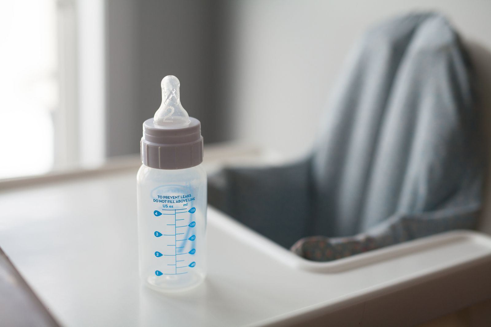
- How big are breastfeeding's benefits, really
- Breast vs fed: the safety net every newborn needs
- The 3 a.m. practical layer: latch, supply, pain
- Milk storage, alcohol, caffeine, meds, tongue-tie
- Formula: safe prep and choosing a brand
- Starting solids: when, how, and the allergen window
- Solids safety: the truly dangerous short list
- Vitamin D and iron
How big are breastfeeding's benefits, really
Breastfeeding has two tiers of benefit, and being honest about which is which relieves a lot of guilt. The short-term, infection-fighting benefits during the nursing months are real and plausibly causal: fewer ear, gut, and chest infections, roughly a third less risk of SIDS, and in preterm babies about half the risk of necrotizing enterocolitis. AAP 2022 strong evidence The big long-term claims (a meaningful IQ boost, less obesity, fewer allergies) mostly shrink toward zero once you compare siblings or follow randomized babies into their teens. So: nurse if you can and want to, but if you cannot, you are not stealing your child's future.
Are breastfeeding's benefits causal, or just confounding?
The public-health view (WHO, UNICEF, AAP 2022, the Lancet series): the totality of evidence supports broad benefit, near-universal breastfeeding would prevent large amounts of illness and death worldwide, and the precautionary principle justifies promoting it hard.
The causal skeptics (Colen and Ramey's sibling study, the PROBIT investigators' own 16-year paper, Emily Oster, a 2025 genetic-instrument study): the short-term infection and preterm benefits are real, but the long-term IQ, obesity, allergy, and chronic-disease claims are largely socioeconomic confounding, because families who breastfeed longer are also richer, more educated, and less likely to smoke.
Where the evidence sits (dated): both tiers can be true at once. The single randomized trial (PROBIT, Belarus, 17,046 pairs) found a real infancy benefit for gut infection and eczema, but the verbal-IQ effect faded about 82% by age 16 to a residual of roughly 1.4 points, and the breastfeeding-promotion arm actually had slightly more overweight at 16 (OR 1.14). PROBIT 2018 A US sibling study found 10 of 11 long-term outcomes lost significance within families. Colen 2014 Even the AAP's own cited Brazil cohort is telling: among 30-year-olds, breastfed-as-infants adults scored about 3.8 IQ points higher, and the authors found that this IQ advantage explained roughly 72% of breastfeeding's effect on their adult income, a clean illustration that the cognitive signal is small and the chain to life outcomes is long. Victora 2015
A reasonable default: treat the short-term infection and preterm benefits as real reasons to breastfeed if you can, and treat the long-term IQ and obesity claims as "associated with, but mostly disappears in the best studies." Feed your baby in the way that keeps your whole family afloat, and do it without guilt either direction.
Go deeper
The AAP's 2022 technical report is the standard US catalogue of breastfeeding outcomes, and it grades its own evidence honestly, noting in its methods that "most published reports are observational cohort studies" that "must be careful to account for confounding." AAP 2022 Here is how the numbers sort into the two tiers.
The likely-causal, short-term tier. Ear infection (otitis media) is about 33% lower with any breastfeeding (OR 0.67) and about 43% lower with six months of exclusive breastfeeding (OR 0.57, 95% CI 0.44 to 0.75). AAP 2022 strong evidence Severe diarrhea runs about 30% lower and lower-respiratory infection about 19% lower in cohorts. SIDS risk drops in a dose-response way: about 40% lower at 2 to 4 months of breastfeeding, 60% at 4 to 6 months, 64% beyond 6 months, which is part of why the AAP frames continued nursing through the high-risk SIDS window as protective. AAP 2022 strong evidence The strongest "human milk as medicine" stat is in preterm babies: feeding donor human milk instead of formula (when a mother's own milk is short) roughly halves necrotizing enterocolitis, a high-certainty Cochrane finding (RR 0.53, 95% CI 0.37 to 0.76, 12 trials, 2,296 infants). Cochrane 2024 strong evidence Honesty check: in that same review, donor milk did not change overall survival (mortality RR 1.00) and grew babies more slowly than formula, so its proven win is NEC specifically, not survival, and a mother's own milk is still first choice.
The confounded, long-term tier. Observational studies link breastfeeding to about 22% less childhood obesity, lower diabetes and asthma, and a few IQ points, but these are exactly the outcomes that collapse when you control for family background. The randomized PROBIT trial found no obesity benefit (and if anything the wrong direction at 16), no asthma or allergy benefit at 6.5 years, and an IQ effect that faded to a small verbal-only residual by adolescence. PROBIT 2018 good evidence A 2025 genetic-instrument (Mendelian randomization) study found only a tiny asthma signal survived; IQ, obesity, and allergy showed no causal effect. MR 2025 So the long-term claims are best read as "associated, weakly causal at most."
Mom's side. The maternal benefits (about 14 to 28% less breast cancer, about 30% less ovarian cancer, about 32% less type 2 diabetes, all dose-dependent) are still observational and confounded by parity, but they have a coherent mechanism and a clean dose-response, so they are the most credible of the long-term associations. AAP 2022 mixed evidence
About the giant global headlines. You will see that near-universal breastfeeding "could prevent 820,000 child deaths a year" and "$300 billion a year." Both are real modeled figures, but they are overwhelmingly low- and middle-income phenomena: about 87% of those deaths are infants under 6 months, driven by diarrhea and pneumonia where water is unsafe and formula cannot be prepared cleanly, and the dollar figure is roughly 84% a monetized IQ projection. Lancet 2016 Walters 2019 does not transfer to high-income They are true at a global scale and do not map onto a US, UK, or Canadian family with clean water, a fridge, and a pediatrician.
The cliff is mostly structural, not a failure of willpower. The US is the only high- or middle-income country with no national paid leave, and returning to work, especially full-time within three months, is a leading reason parents stop sooner than they intended. The single biggest lever on the cliff is leave and workplace pumping support, not individual effort. CDC
Breast vs fed: the safety net every newborn needs
The fiercest feeding fight online (breast is best versus fed is best) is largely settled where it matters: the physiology. A newborn can be genuinely underfed in the first week, and that can rarely cause real harm, so every baby needs the same simple safety net regardless of how you plan to feed: track weight against a chart, count diapers, watch a short list of red flags, and supplement when there is a real medical reason. Mainstream 2022 guidelines now say exactly this, and explicitly tell parents not to feel judged. AAP 2022
The clinical tool for "how much weight loss is too much" is the Newborn Weight Tool (NEWT), which plots your baby's loss hour by hour against percentiles, with separate curves for vaginal and cesarean births. NEWT strong evidence The classic worry line is losing 10% or more of birth weight; on the chart, crossing above the 90th percentile (vaginal) or 75th percentile (cesarean) is the practical "let's get eyes on this baby" signal. One early weight is reassuring if low but a poor screen on its own, so it is the trend plus the diapers and feeding that matter.
Usually normal
- Losing some weight the first few days, then regaining (most babies are back to birth weight by about 2 weeks).
- Cluster feeding, especially evenings, and frequent feeds (8 to 12 a day early on).
- Brick-dust (pinkish urate) crystals in the diaper in the first day or two.
- By day 4 to 5: about 6 or more wet diapers and several stools a day.
Call your doctor about
- Weight loss crossing the high NEWT percentiles, or not regaining birth weight by 2 weeks.
- Fewer than 4 stools on day 4, or still-black meconium stools on day 5.
- A baby getting harder to wake, or frantic and never satisfied, with a dry mouth or sunken soft spot.
- Brick-dust urates persisting past day 3 to 4 (a sign of concentrated urine).
- Deepening yellow skin (jaundice), especially with poor feeding (see the Health section).
What turns it serious: poor intake plus rising sodium (hypernatremic dehydration) or low blood sugar can injure a newborn's brain. These are rare, but they are why the diaper-and-weight checks of the first week are not optional.
Does rigid "exclusive breastfeeding" pressure harm newborns?
The Fed Is Best camp (founded by an ER physician and an IBCLC, plus some hospital-safety critics): rigid exclusive-breastfeeding messaging and some Baby-Friendly hospital practices can produce underfed newborns, with excess jaundice, dehydration, low blood sugar, and rare brain injury, and unmonitored skin-to-skin and rooming-in have contributed to newborn falls. Teach parents the warning signs and how to supplement safely.
The lactation establishment (AAP, the Academy of Breastfeeding Medicine, many IBCLCs): supplementation should be medically indicated, not routine, because early unnecessary formula can undercut a mother's supply, and the answer to underfeeding is better lactation support, not lower expectations. "Fed is best" can also be co-opted to excuse predatory formula marketing.
Where the evidence sits (dated): the physiology is settled and now baked into guidelines. The 2022 AAP jaundice guideline renamed "breastfeeding jaundice" to "suboptimal-intake hyperbilirubinemia" and recommends early supplementation when intake is poor. AAP 2022 A randomized trial of small, early, temporary formula top-ups (10 mL after feeds, for high-percentile weight loss) did not harm breastfeeding at one month and cut readmissions. Flaherman 2018 good evidence Exclusively breastfed newborns are readmitted for jaundice or dehydration at roughly twice the rate of formula-fed newborns, and pressure to breastfeed measurably worsens maternal anxiety. So both camps are pointing at real things.
A reasonable default: support breastfeeding hard AND monitor feeding adequacy hard. These are not in tension. Learn the diaper-and-weight signs, supplement only for a real reason (and with a plan to protect supply if breastfeeding), and reject anyone who makes you feel guilty in either direction.
Go deeper
When supplementation is genuinely indicated. The Academy of Breastfeeding Medicine lists specific triggers, not vibes: documented low blood sugar that does not respond to feeding, weight loss of 8 to 10% with delayed milk (around day 5) or above the 75th NEWT percentile, real dehydration, fewer than 4 stools on day 4, or significant suboptimal-intake jaundice. ABM 2017 good evidence If you do supplement, the preferred order is expressed mother's milk, then pasteurized donor milk, then formula, in small volumes matched to the baby's tiny stomach (roughly 5 to 15 mL per feed at 24 to 48 hours, 15 to 30 mL at 48 to 72 hours), feeding to satiation, not to a big bottle.
Low blood sugar (neonatal hypoglycemia). Not every baby is screened. The at-risk groups are infants of diabetic mothers, small or large for gestational age, late preterm, and any baby with symptoms; healthy full-term babies are not routinely poked, because early frequent feeding meets their needs. ABM 2021 The operational treatment thresholds (act below roughly 25 to 40 mg/dL in the first 4 hours, below 35 to 45 mg/dL from 4 to 24 hours, with IV dextrose for a symptomatic baby under 40) come from the AAP/Adamkin algorithm Adamkin 2011; the Pediatric Endocrine Society uses a stricter target above 50 mg/dL, and that gap is a genuine unresolved threshold dispute. First-line management is feed, recheck, and use buccal dextrose gel as a bridge before IV, which lets breastfeeding continue. good evidence
Donor milk and the warning about informal sharing. For preterm and NICU babies, pasteurized donor milk from an accredited milk bank is the safe second choice after a mother's own milk, and it carries that high-certainty NEC benefit. Cochrane 2024 But the FDA and AAP both warn against buying or accepting breast milk from the internet or acquaintances, because the donor is unlikely to have been screened for infections, medications, or contamination; studies have found most milk bought online was bacterially contaminated and some was cut with cow's milk. Keim 2015 good evidence The warning is about screening and pasteurization, not about human milk itself.
The 3 a.m. practical layer: latch, supply, pain
This is the part where an exhausted parent actually wants help. The most useful facts: breastfeeding should not hurt after the first 30 to 60 seconds of a feed, and when it does, a poor latch is the cause about 89% of the time, fixable by unlatching and trying again rather than gritting your teeth. AAFP 2018 good evidence And supply runs on demand: the more milk you remove, the more you make. A breast is not a tank that empties, it is a faucet that runs faster the emptier it gets.
Go deeper
What a good latch looks and feels like. Across the NHS, the US Office on Women's Health, and family-medicine guidance: a wide-open mouth (a big gape, taking in a mouthful of breast, not just the nipple), lips flanged out like a fish, chin pressed into the breast and nose clear, more areola showing above the top lip than below, a rhythm of a few quick sucks then deep slow swallows, and crucially, comfort. NHS expert consensus After unlatching, the nipple should look round, not creased or lipstick-shaped. If a feed hurts past the first few seconds, slide a clean finger into the corner of the baby's mouth to break suction and relatch. The NHS teaches the acronym CHINS: Close, Head free, In line, Nose to nipple, Sustainable. The laid-back or "biological nurturing" position (reclining with the baby on your chest) lets a newborn's instincts drive the latch and is often the easiest rescue for a baby who fights the breast.
Supply, in one fact. After the first weeks, milk production is controlled locally by removal: milk left in the breast tells it to make less, milk taken out tells it to make more. StatPearls good evidence That single idea powers everything: for low supply, remove more milk more often and more effectively; for oversupply, do not over-pump; for weaning, drop feeds gradually so production winds down without a painful clog. Perceived low supply is the leading reason parents stop earlier than they intended (about 31% in one survey, ahead of latch problems at 19% and nipple pain at 12%), yet true primary low supply is uncommon and has specific causes (insufficient glandular tissue, prior breast surgery, retained placenta, untreated thyroid disease, PCOS) that deserve a real workup rather than just "nurse more." AAFP 2018
Galactagogues (milk-boosting drugs and herbs) are thin on evidence. The non-drug lever (frequent, effective removal) is first-line. Domperidone reliably raises prolactin and adds a modest amount of milk (around 90 mL a day in studies) and is used routinely in Canada, the UK, and Australia, but it is not FDA-approved in the US over cardiac concerns. LactMed 2026 good evidence Note for US readers: the limited expanded-access route is gone, with no distribution after September 2025. Herbal options like fenugreek have weak, mixed evidence and real side effects, and the "a beer boosts supply" myth is false: alcohol actually blunts the letdown reflex.
Engorgement, clogs, and mastitis got a major rethink in 2022. The Academy of Breastfeeding Medicine now frames mastitis as an inflammatory spectrum, not a simple "milk gets stuck then infected" pipeline, and reversed the old advice. The new core: ice, not heat; do NOT deeply massage a lump (it causes swelling and tissue injury); feed to comfort, do NOT pump or feed aggressively to "empty" the breast (over-removal makes more milk and more swelling); take ibuprofen or acetaminophen; and reserve antibiotics for bacterial mastitis that does not settle in about 24 hours. ABM 2022 strong evidence If you do need antibiotics, the usual first choice is dicloxacillin, flucloxacillin, or cephalexin (500 mg four times daily for 10 to 14 days). Seek care for a high fever or a breast that is getting worse, rather than self-treating. A few add-ons in the protocol (lecithin, therapeutic ultrasound, specific probiotics) are weakly evidenced, so treat them as optional.
Milk storage, alcohol, caffeine, meds, and tongue-tie
A few high-frequency questions with clean answers: store milk by the "rule of fours and sixes," do not pump and dump after a drink (time is the only thing that clears alcohol), keep caffeine to about 300 mg a day, and assume most of your medications are compatible until you check. And be very skeptical of a tongue-tie diagnosis: it is one of the most overtreated conditions in infant care.
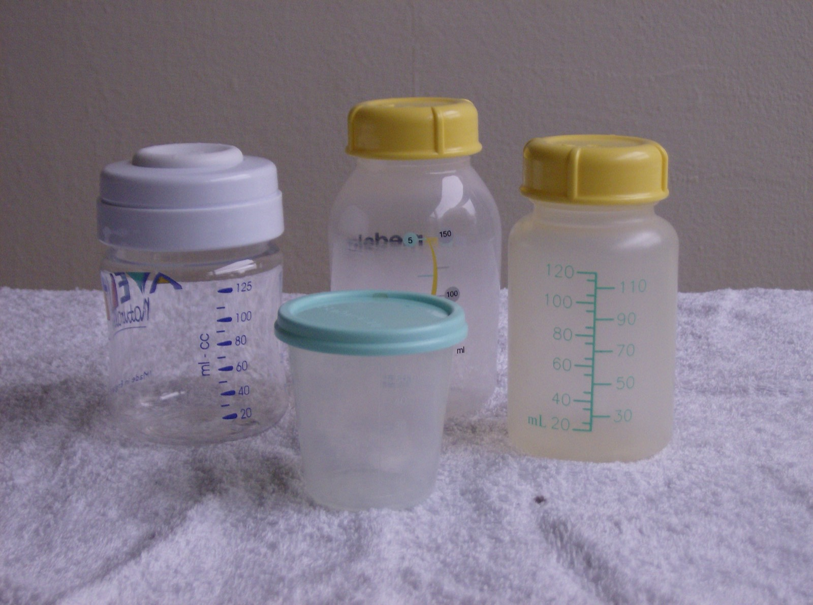
Go deeper
Milk storage, the rule of fours and sixes (CDC). Freshly expressed breast milk keeps about 4 hours on the counter (at 77 F / 25 C or cooler), about 4 days in the fridge (40 F / 4 C), and about 6 months in the freezer is best (up to 12 months is acceptable). CDC 2026 strong evidence Thawed milk lasts 24 hours in the fridge (never refreeze it), and once warmed, use within 2 hours; toss whatever the baby's mouth touched after 2 hours. Store toward the back, not the door, and never microwave (hot spots scald and destroy protective factors). Cross-country note: the NHS allows a longer fridge time, up to 8 days for very cleanly expressed milk, reflecting the same underlying data the CDC rounds down. NHS A soapy or off smell in stored milk is usually a harmless lipase quirk, not spoilage.
Alcohol. Alcohol leaves your milk as it leaves your blood, so the rule is to time feeds, not to "clean" the milk. A standard drink (14 g of alcohol, about 12 oz of beer, 5 oz of wine, or 1.5 oz of spirits) is detectable in milk for roughly 2 to 3 hours; two drinks, 4 to 5 hours; three drinks, 6 to 8 hours. CDC 2026 strong evidence Up to one standard drink a day is not known to harm the infant, and the safest practice is to wait about 2 hours per drink before nursing. The myth-buster: pumping and discarding does not remove alcohol any faster. Roughly, if you are sober enough to drive, the milk is fine. (Pumping for comfort or schedule is fine, it just does not "clean" the milk.)
Caffeine. Up to about 300 mg a day is widely considered safe while breastfeeding (about three 8-oz cups of coffee), and an exclusively breastfed baby gets only about 7 to 10% of your weight-adjusted dose. LactMed good evidence The catch is newborns: they clear caffeine very slowly, reaching adult levels only by about 3 to 5 months, so a very young or preterm baby accumulates more. High intake (the classic case reports involve 10+ cups a day) can make a baby jittery and wakeful.
Cannabis is the one recreational substance bodies say to avoid, because it lingers. Unlike alcohol, THC is fat-soluble and stored, so there is no "safe waiting window": it stays detectable in milk for days to weeks, with an elimination half-life around 17 days in one study. LactMed 2026 strong evidence (it persists) The infant dose is small but chronic, the developmental evidence is limited and conflicting, and street and CBD products can carry contaminants. AAP, ACOG, and CDC all advise avoiding it while nursing.
Medications: the default answer is "probably fine, check the drug." The vast majority of maternal medications are compatible with breastfeeding. AAFP 2022 strong evidence The free, authoritative tool is LactMed (the NIH drugs-and-lactation database). The key metric is the relative infant dose; under 10% is generally considered compatible, and most common drugs are well under that, including ibuprofen, acetaminophen, most antibiotics, sertraline (a preferred antidepressant), most blood-pressure meds, insulin, metformin, levothyroxine, most inhalers, and most vaccines. The genuinely incompatible list is short: high-dose chemotherapy, radioactive agents like iodine-131, ergot drugs, certain drugs of abuse (though stable methadone or buprenorphine maintenance is compatible and encouraged), and cannabis. A practical safer-option rule: prefer sertraline over fluoxetine, ibuprofen over codeine or tramadol (avoid those two outright), and progestin-only or non-hormonal contraception over combined estrogen pills (which can suppress supply). When in doubt, the answer is to look it up, not to stop nursing.
Tongue-tie: one of the clearest overtreatment stories in infant care. Diagnoses of tongue-tie rose roughly tenfold between 1997 and 2012 and doubled again by 2016, far faster than any plausible real increase, and the AAP in 2024 named this overdiagnosis directly. AAP 2024 strong evidence Most breastfeeding pain is not tongue-tie. A clear anterior tie with real feeding trouble is a genuine entity, and releasing it (frenotomy) gives a short-term reduction in nipple pain, but trials have not shown a longer-term breastfeeding benefit, and the best recent trial was inconclusive. The AAP rejects "posterior tongue-tie" as a useful diagnosis and finds no support for releasing "lip ties." The right order is to get skilled lactation help first, rule out latch and positioning, and reserve a release for a clear anterior tie with documented feeding impairment. Be wary of clinics that diagnose posterior or lip ties or push laser procedures. One safety note: the AAP says routine post-frenotomy stretching exercises (reopening the wound) are not recommended and may cause oral aversion, though a 2025 cohort found they reduce reattachment, so this specific point is unsettled; reattachment after the procedure is common and often harmless. The independent figures (about a third reattach) come from that cohort, not the AAP. 2025 cohort
Formula: safe prep and choosing a brand
Formula is a complete, tightly regulated food, and the cheapest standard iron-fortified formula is a perfectly good choice. The thing that actually matters for safety is preparation, not brand: powdered formula is not sterile, so for the youngest and most vulnerable babies it should be mixed with hot water (around 70 C / 158 F) and used within a couple of hours. The premium add-ins are mostly optional, "toddler milks" are unnecessary, and store brands meet the same federal nutrient rules as name brands.
The one safety rule that is not negotiable: water temperature for the youngest babies. Powdered formula can carry Cronobacter, a rare but devastating cause of newborn meningitis (it strikes only a few infants a year in the US, but about 1 in 5 of those die). CDC 2025 good evidence, safety-critical Water at 70 C / 158 F kills it in the powder; lukewarm water (around 50 C) is actually the worst case. The WHO and NHS say to use 70 C water for every powdered feed regardless of age; the CDC agrees but flags it as most important for the highest-risk babies, defined as under 2 months old, born before 37 weeks, or immunocompromised, for whom ready-to-feed liquid formula (which is sterile) is the safest option when you can manage it. CDC 2026
Is premium, hydrolyzed, imported, or EU-style formula better than cheap standard formula?
Manufacturers and pro-EU parents: add-ins (HMO, MFGM, DHA/ARA, probiotics) bring formula closer to breast milk, "gentle" hydrolyzed formula reduces eczema, and European formula uses lactose instead of corn-syrup solids, mandates DHA, and caps iron lower.
The skeptics, now largely the consensus (AAP, BMJ reviews, the FDA): most add-in claims rest on weak, industry-funded trials, the AAP says there is "no strong evidence" for probiotics, a 37-trial meta-analysis found hydrolyzed formula does NOT prevent allergy, and informally imported European formula is not FDA-reviewed and may have different scoop ratios and lower iron.
Where the evidence sits (dated): a calm tier list. Of the premium add-ins, HMO and MFGM have the most genuine (but still limited, mostly industry-funded) support; one MFGM meta-analysis of 8 trials found a small cognitive bump (about +3.3 points). Thongseiratch 2024 one set of studies DHA/ARA, probiotics, and prebiotics show no clear benefit in healthy term babies. AAP Hydrolyzed "gentle" formula does not prevent allergy (it is a valid treatment for diagnosed cow-milk allergy, a separate thing). Boyle 2016 strong evidence against prevention European formula is no longer one category: Kabrita and Kendamil now hold permanent FDA authorization, while Holle and HiPP do not and are informal imports.
A reasonable default: the cheapest standard iron-fortified formula is fine. The premium is mostly optional. Safe preparation matters more than the brand on the can. If your baby has diagnosed cow-milk protein allergy, that is a medical pathway with specific (extensively hydrolyzed or amino-acid) formulas, prescribed by a clinician, not a self-serve aisle choice.
Go deeper
How to prepare and store formula (CDC/NHS). Boil water, then for the 70 C step the CDC says wait about 5 minutes (US tap boils near 100 C) while the NHS says cool no more than 30 minutes (a UK kettle holds heat longer); both land the mixing water at or above 70 C. NHS Add the exact amount of powder on the label (more or less can make a baby sick), then cool fast under cold running water. Use prepared formula within 2 hours at room temperature (1 hour once feeding starts), or refrigerate immediately and use within 24 hours; throw out leftovers the baby drank from. Never microwave. The US (CDC) only requires daily bottle-sanitizing for the under-2-months/preterm/immunocompromised tier (careful cleaning is enough for older healthy babies), while Australia and much of the UK still advise sterilizing everything to 12 months; both are defensible. strong evidence, safety-critical
Well water and the boiling trap. If you use private well water, test it for nitrate first. Nitrate over the EPA limit (10 mg/L as nitrogen) can cause "blue baby syndrome" (methemoglobinemia) in young infants, and boiling does NOT fix it, boiling concentrates it. EPA strong evidence, safety-critical If nitrate is high, use bottled or another safe source.
Feeding amounts. A useful rule that two countries independently land on: about 2.5 oz per pound of body weight per day (AAP), which equals about 150 to 165 mL per kg per day (Australia/RCH), capped around 32 oz (960 mL) a day. AAP 2022 strong evidence Practically: 1 to 2 oz per feed the first week, building to 6 to 8 oz at 4 to 5 feeds a day by 6 months. The NHS deliberately gives no fixed numbers and stresses responsive feeding ("be guided by your baby"); both approaches are fine, the numbers are averages, not targets. Bottle-fed babies are more prone to overfeeding, so watch for fullness cues and do not push the baby to drain the bottle. Paced bottle feeding (slow-flow nipple, bottle held nearly horizontal, frequent pauses) is sensible and low-risk, though its hard-outcome evidence is still preliminary. Ignore "slow flow" labels on nipples, by the way: measured flow rates vary more than 50-fold and the labels are unregulated and unreliable. Pados 2016
The 2022 US shortage, briefly. An Abbott plant closure plus extreme market concentration (four firms make about 90% of US formula, and WIC, which buys over half of all US formula, uses one supplier per state) cascaded into out-of-stock rates peaking near 74% in late May 2022. GAO 2025 One honest nuance: whole-genome sequencing did not actually link the recalled formula to the infant deaths that triggered the recall, though a separate case did confirm a home-prepared powdered-formula infection, proving home prep and pump hygiene are real vectors. The episode is why Cronobacter became a nationally notifiable disease in 2024.
Toddler milks are the clearest marketing overreach. Healthy children over 12 months do not need "toddler" or "growing-up" milks. AAP strong evidence They are not FDA-regulated as infant formula, often carry around 20 to 23% added sugar (a recommended amount of zero for this age), and the "Stage 3" numbering is designed to look like the next step after infant formula when it is really customer retention. About 60% of caregivers wrongly believe they offer unique nutrition. PHAI 2025 After 12 months, use whole cow's milk (or fortified plant milk), water, and food.
Heavy metals in formula. Both can be true at once: the measured levels are generally low, and a watchdog group can still flag about half of products as exceeding a stricter cumulative-hazard threshold, because the threshold differs, not the measurements. Consumer Reports 2025 The FDA's own large sweep of 300-plus samples found contaminants "undetectable or very low," below drinking-water limits. good evidence The highest arsenic readings cluster in specialty (hypoallergenic, soy, rice-based) formulas. The practical takeaway: standard cow-milk formula is low-risk, and you should never dilute or quit formula over a heavy-metal headline. Recalls do happen (ByHeart recalled all batches in November 2025 over infant botulism, with 48 cases across 17 states and no deaths), which is itself a reminder that "clean-label" and domestic do not equal immunity, and that safe preparation is the constant.
Starting solids: when, how, and the allergen window
Start solids when your baby is developmentally ready, usually around 6 months and never before 4 months. Once you start, do not wait to introduce common allergens (peanut, egg, and the rest): introducing them early, in baby-safe forms, and keeping them in the diet dramatically lowers the risk of food allergy. Either spoon-fed purees or baby-led weaning (letting the baby self-feed soft finger foods) is fine, as long as the food is shaped safely. Solids before one are not "just for fun": they exist mainly to deliver iron once milk and birth stores run low.
Readiness is about three or four signs, not an age: good head and neck control, sitting up with little or no support, the tongue-thrust reflex faded enough to swallow rather than push food out, and real interest (watching, reaching, opening the mouth). AAP 2025 expert consensus The NHS helpfully names three false signs that fool a lot of parents: chewing fists, waking more at night, and wanting extra milk feeds are all normal baby behaviors, not proof of readiness.
WHO "6 months exclusive" or the 4-to-6-month window?
The WHO public-health line: exclusive breastfeeding to about 6 months, then start solids, held firmly on a global basis, because in low-income settings early solids mean exposure to unsafe water and lost infection protection.
The allergy and pediatric bodies (ESPGHAN and eleven societies, the AAP, Health Canada, Australia): a developmental-readiness window of 4 to 6 months, with about 6 months a desirable goal, and a strong insistence that allergens not wait past about 6 months, because the prevention window may close around then. They object that WHO's guideline is silent on allergen timing.
Where the evidence sits (dated): the convergence is bigger than the fight. Every body lands on "around 6 months, when ready, never before 4 months." WHO 2023 ESPGHAN 2024 The live disagreement is narrow: a firm 6-month line versus a flexible window, and WHO's silence on allergens. The allergen-timing case is RCT-backed (the effective window to introduce peanut for allergy prevention is roughly 4 to 6 months), and WHO itself concedes "some infants may benefit from earlier introduction." good evidence
A reasonable default: start around 6 months when your baby shows readiness signs, not before 4 months, and once you start, do not wait past about 6 months to begin the common allergens. The two trustworthy bodies differ because they are writing for different populations, not because one is wrong.
Go deeper
Why iron is the real reason for the timing. A term baby is born with iron stores that, plus the small amount in milk (breast milk has only about 0.3 mg/L), run down around 4 to 6 months. AAP 2010 good evidence That is why the headline first foods across every body are iron-rich: iron-fortified infant cereal (oatmeal is now preferred over rice, see the arsenic note below), soft or pureed red meat, poultry, fish, beans and lentils, tofu, and egg. "Food before one is just for fun" is a myth; solids exist largely to deliver iron and zinc.
Baby-led weaning vs purees: both are fine. The two old fears about baby-led weaning (more choking, less iron) have been largely defused by trials. In the BLISS randomized trial, about 35% of babies gagged or choked at least once between 6 and 8 months, with no difference between baby-led and traditional feeding. Fangupo 2016 good evidence A companion iron trial found no iron deficit when families were coached to offer an iron-rich food at each meal. Daniels 2018 Two systematic reviews agree the combative framing is outdated. Marquez-Diaz 2026 strong evidence The two real safety levers are independent of method: shape food safely, and deliberately include iron at each meal. Most families end up doing a mix, which is also fine.
The gagging-versus-choking distinction (memorize this). Gagging is a normal, protective reflex that pushes food forward; it is loud, with coughing, sputtering, and a red or even purple face, and the baby recovers on their own. Choking is an airway blockage and an emergency; it is silent or high-pitched, with weak or no coughing, no effective breathing, and possibly blue lips. The mnemonic: "Loud and red, let them go ahead. Silent and blue, they need help from you." When a baby gags, give them a moment, do not finger-sweep (you can push food deeper). Reserve back blows, chest thrusts, and 911 for true choking (see the Safety section). good evidence
Do not stall on smooth purees. There appears to be a sensitive window for learning to handle lumps and texture; babies introduced to lumpy textures after about 10 months tend to be fussier eaters with a narrower diet years later. Coulthard 2009 cohort evidence Advance textures and soft finger foods from around 6 months and ideally by 9 months. Expect gagging during the transition; it is part of learning.
Responsive feeding is the operating system. The caregiver decides what, when, and where; the baby decides whether and how much. WHO 2023 Watch for fullness cues and stop when the baby turns away (do not push the last spoonful or insist on finishing the jar), do not use food as a reward, punishment, or pacifier, and offer rather than force new foods (acceptance often takes 8 to 15 tries). Infant appetite swings a lot day to day; your job is to offer, not to hit a target amount.
Early allergen introduction (the big reversal)
For about 15 years, parents were told to delay allergens for years. That advice was reversed, and very likely had been causing harm: introducing peanut early and keeping it in the diet cut peanut allergy by about 80% in the landmark LEAP trial. The current advice across the US, UK, Canada, and Australia is to introduce the common allergens (peanut, egg, dairy, and the rest) in baby-safe forms soon after starting solids, for every baby, and to keep offering them regularly.
Do you need to test a high-risk baby before peanut, and how exact must the dose be?
The test-first / trial-faithful camp (the original US 2017 guideline text): for a baby with severe eczema and/or egg allergy, strongly consider a peanut blood or skin test before introducing peanut, and follow the trial maintenance doses.
The introduce-without-testing camp (many allergists, the AAP, Canadian and Australian bodies): routine pre-testing causes false positives, needless delays, and avoidance; just introduce, and aim for regular consumption rather than weighing exact grams.
Where the evidence sits (dated): the field is moving strongly toward "introduce without testing." Peanut skin and blood tests have poor positive predictive value, so routine screening creates more false alarms than it prevents, and pre-introduction testing is now described as optional rather than required. NIAID 2017 Fleischer 2021 good evidence On dose, the trials used specific amounts (LEAP used about 6 g of peanut protein a week), but the population payoff depends on regularity: in Australia, introduction tripled yet allergy prevalence stayed flat because only about 30% of babies ate peanut twice a week, and occasional exposure may even sensitize. exact grams still open
A reasonable default: introduce common allergens early for every baby. Only for severe eczema or a known egg allergy, ask your doctor first, and even then testing is optional. Be strict about the behavior (a few times a week, at least weekly, do not introduce once and then drop it) and relaxed about exact grams.
The evidence
The anchor trial. LEAP randomized 640 high-risk infants (severe eczema and/or egg allergy), age 4 to 11 months, to eat or avoid peanut until age 5. Peanut allergy at age 5 was 17.2% in the avoid group versus 3.2% in the eat group, an overall reduction of about 80 to 81%. LEAP 2015 strong evidence In the skin-test-negative babies specifically it was 13.7% versus 1.9% (an 86% reduction; this is an intention-to-treat figure, not "per-protocol"). The protection lasted: even after a year off peanut it held (LEAP-On, 556 children), and it persisted into adolescence at about a 71% reduction with kids eating peanut as they wished. LEAP-On 2016
A second trial (EAT) tried six allergens in general-population breastfed babies starting at 3 months. It missed its main target because adherence was brutal (only about 42% of families kept it up), but where families managed it, peanut allergy was 0% versus 2.5% and egg 1.4% versus 5.5%. The lesson: the biology generalizes, but the protocol has to be one families can actually sustain. EAT 2016
How to actually do it. Introduce allergens in baby-safe forms, never whole nuts or a thick glob of nut butter (both choking hazards): smooth peanut butter thinned with water or puree, peanut puffs that dissolve, or peanut flour stirred into food; well-cooked egg; dairy as yogurt or cheese in food. Once introduced and tolerated, keep each allergen in the diet on a regular schedule, a few times a week, at minimum once a week. ASCIA 2026 strong evidence A practical target: roughly 2 teaspoons of peanut butter and a small egg spread across the week. One reassurance worth knowing: a mild red rash right around the mouth during or just after eating, with no other symptoms, is often just contact irritation, not an allergic reaction, and you should try the food again rather than abandon it. The US added sesame as the 9th labeled major allergen in 2023, so include it (tahini thinned into food) and read labels, because some manufacturers responded to the law by deliberately adding sesame to previously sesame-free products.
Has it moved the needle in the real world? The honest answer is "appearing to, with caveats." US electronic-health-record data show peanut allergy fell from about 0.79% to 0.53% (and any food allergy from about 1.46% to 1.02%) comparing pre- and post-guideline birth cohorts, on the order of a 27 to 38% drop, with an estimated 60,000-plus peanut-allergy cases prevented over the last decade. Gabryszewski 2025 good evidence, observational This is observational data (diagnosis codes, not challenge-confirmed, and the COVID era confounds it), and the benefit depends on families keeping allergens in the diet, which is exactly the part that lags.
The eczema link, and one thing that does NOT work. Eczema is the single strongest infant risk factor for food allergy (a baby with eczema is about 6 times more likely to have a challenge-proven food allergy), because food protein sensitizes through inflamed, leaky skin while oral exposure builds tolerance. Martin 2015 So treat eczema actively and introduce allergens early by mouth. But do not assume that slathering a healthy newborn in moisturizer prevents allergy: two large trials found prophylactic emollients did not prevent eczema or food allergy, and one even saw a possible increase in food allergy. BEEP 2020 strong evidence (Treating established eczema is different from prophylactic moisturizing, and the eczema-prevention question itself is now contested by newer trials; see the Daily Care section.)
Solids safety: the truly dangerous short list
Most food-safety worry can be filed under "vary the diet." But there is a genuinely dangerous short list with non-negotiable rules: no honey before 12 months (botulism), no cow's milk as the main drink before 12 months, no added sugar under 2, and a handful of choking-shape rules (quarter grapes lengthwise, cut hot dogs lengthwise then small, no whole nuts or popcorn under 4). Heavy metals in baby food are real but mostly a "limit rice and juice, rotate brands" problem, not a reason to panic.
Usually normal
- Gagging while learning to eat (loud, red-faced, self-recovers).
- New, strange-colored, or seedy stools after starting solids.
- A baby refusing a new food many times before accepting it.
- Whole-milk yogurt and cheese in food from about 6 months (the 12-month rule is about cow's milk as the main drink).
Call your doctor (or 911) about
- Silent or high-pitched "choking" with no effective breathing or blue lips: this is 911 and infant choking first aid (see Safety).
- Hives, swelling, vomiting, or trouble breathing after a food: a possible allergic reaction.
- Any honey exposure under 12 months followed by constipation, weak suck, or floppiness (infant botulism).
- Blood in stool, persistent vomiting, or poor growth after introducing cow's milk.
Go deeper
The genuinely dangerous short list.
- No honey before 12 months, in any form, including baked goods or on a pacifier. Honey can carry Clostridium botulinum spores that produce toxin in an immature gut; infant botulism is the most common form of botulism in the US (162 cases in 2018, median age 4 months). CDC strong evidence
- No cow's (or goat's) milk as the main drink before 12 months. It is low in iron, causes microscopic intestinal blood loss in about 40% of infants, and carries a high renal solute load. Ziegler 2011 strong evidence The nuance parents miss: small amounts of cow's milk in food (yogurt, cheese, milk in cooking) are fine from about 6 months. After 12 months, use whole milk to about age 2.
- No added sugar under 2 (the 2025-2030 Dietary Guidelines now extend this further, to birth through age 10) and minimal added salt (infant kidneys handle sodium poorly). DGA 2025 strong evidence No fruit juice under 12 months; after that, 4 oz a day at most.
Choking-prevention prep rules. Quarter grapes (and cherry tomatoes, large blueberries) lengthwise for kids under about 4, because round discs still seal the airway. Cut hot dogs and sausages lengthwise first, then into small pieces, never round coins. No whole or chopped nuts, popcorn, hard raw vegetables, or hard candy under 4. For allergen peanut, use thinned smooth nut butter, dissolvable puffs, or peanut flour, never a glob. CDC good evidence Keep the baby seated and supervised; no eating in the car or stroller. For under-1s, give non-food objects (button batteries especially, plus coins and small parts) equal billing as choking hazards: an emerging analysis suggests objects cause more choking deaths than food in the first year, with food-choking deaths peaking at age 1. emerging
Heavy metals, in proportion. Arsenic, lead, cadmium, and mercury are in soil and water, so they appear at low levels in essentially all foods, including homemade. A 2019 testing report (and a 2021 Congressional follow-up) found measurable lead in about 95% of baby foods sampled, but its scariest numbers were worst-case ingredient levels, not finished products. HBBF 2019 advocacy report The FDA has finalized a lead action level for baby food (10 to 20 ppb depending on category, estimated to cut dietary lead 19 to 29%) but it excludes formula, and arsenic and cadmium limits are still in draft. FDA Concrete actions: vary the grains (oatmeal, quinoa, barley, not just rice), limit rice cereal and rice products and juice, and rotate brands. Rice concentrates arsenic, which is why the AAP now recommends oatmeal over rice cereal, including for thickening reflux. The infant rice-cereal arsenic action level (100 ppb) was finalized in 2020. good evidence
Breast milk and formula have different rules; the formula numbers are shorter because powder is not sterile. Always discard what a baby has fed from, and never microwave either one.
One myth to correct. "Homemade is always safer than store-bought" is not necessarily true. Homemade purees of high-nitrate vegetables (spinach, beets, carrots) for very young infants, plus unsafe storage, carry their own risk, while commercial infant vegetables are regulated and often nitrate-screened. It is a trade-off, not a slam dunk. Food pouches are fine occasionally but are best squeezed onto a spoon rather than sucked from the spout (which bathes teeth in sugar and skips chewing); the anti-pouch position is expert opinion, not trial-proven. expert opinion
Vitamin D and iron
Two supplements matter in the first year, and the US is more aggressive on both than most countries. Breastfed (and partly breastfed) babies need a vitamin D supplement, 400 IU a day, from the first days, because breast milk is low in it. The AAP also recommends 1 mg/kg/day of iron for breastfed babies from 4 months, which is the one piece of US advice many other countries do not share, preferring iron-rich first foods instead.
Go deeper
Vitamin D. Breast milk contains very little vitamin D, so an exclusively breastfed baby needs another source from early on. The AAP recommends 400 IU (10 mcg) a day for breastfed and partly breastfed infants from the first days of life. AAP strong evidence A formula-fed baby generally does not need a separate vitamin D supplement once taking about 32 oz a day of fortified formula (AAP states this threshold as both "32 oz" and "more than 27 oz" across its materials; about a quart is the working number). For families who would rather not dose the baby directly, a maternal high-dose alternative exists: a mother taking 6,400 IU a day herself supplies enough through her milk, an AAP-acknowledged option, though not the default. Hollis 2015 Cross-country: the UK gives 8.5 to 10 mcg a day to breastfed babies (and a combined A, C, D supplement to all children 6 months to 5 years), Canada gives 400 IU (800 in the far north year-round), and Australia is the outlier, supplementing only at-risk babies because it relies on ambient sun.
Universal iron drops for all breastfed babies, or only those at risk?
The US (AAP): give all breastfed and partly breastfed term infants 1 mg/kg/day of iron from 4 months until iron-rich solids are established, because milk is low in iron and stores run down.
Most other bodies (UK, Canada, Australia, WHO; and the US USPSTF on screening): skip routine iron drops for healthy term breastfed babies and rely on iron-rich first foods from about 6 months; the USPSTF found insufficient evidence for routine iron supplementation or screening in asymptomatic 6-to-24-month-olds.
Where the evidence sits (dated): the US is the clear outlier here. AAP 2010 Critics argue routine drops for all breastfed infants lack strong outcome evidence and flag a possible downside of excess iron in iron-replete babies; the universal-iron question is genuinely contested between the US and the rest. contested (Vitamin D, by contrast, is near-universal consensus, with Australia the sun-driven exception.)
A reasonable default: follow your own country's guidance and your pediatrician. In the US that means a vitamin D supplement for breastfed babies plus iron drops from 4 months (or confirmed iron-rich solids); elsewhere it often means vitamin D plus a real focus on iron-rich first foods. Either way, iron is why iron-rich foods are the headline first foods, and the AAP recommends a routine anemia check around 12 months.
As of June 2026, formula brand authorizations, recalls, the US formula nutrient review (Operation Stork Speed), and heavy-metal action levels are all actively changing. Check the linked source before relying on a specific brand status or limit.
Sleep
the whole year
Two things are true at once. A newborn's sleep is fragmented by design, not by defect, and the normal range is enormous, so most of what worries you here is normal. And a small number of safe-sleep rules genuinely lower the risk of dying in the night, so those rules are worth getting right. This section keeps the two separate: the reassurance first, then the rules, then the real disagreements (bed-sharing and sleep training) shown honestly.
- The ABCs of safe sleep
- What newborn sleep actually is
- How much sleep is normal
- Night waking and "sleeping through"
- Bed-sharing, the honest version
- Swaddling, pacifiers, temperature
- The 4-month change and naps
- Sleep training: does it work, does it harm
- Monitors, smart bassinets, weighted sleepwear
The ABCs of safe sleep (start here)
For every sleep, every time, by every caregiver: put your baby Alone (on their own surface, no other people, pillows, blankets, bumpers, or toys), on their Back, in a bare Crib or bassinet with a firm, flat mattress. Share your room (not your bed) for at least the first 6 months. That short list is the core of what the evidence supports. strong evidence AAP 2022
Go deeper
The AAP's 2022 policy has 19 numbered recommendations, 16 of them at its highest evidence grade. The load-bearing ones, with the numbers behind them:
- Back, not side or stomach. Stomach (prone) sleep carries an odds ratio of roughly 2.3 to 13.1 for SIDS across studies, and side sleeping is not safe either because babies roll from side to stomach (a baby placed on the side and found prone has an OR near 8.7). Back sleeping does not raise the risk of choking, even with reflux. strong evidence AAP 2022 A baby who can roll both ways on their own may be left in the position they choose.
- Firm, flat, level surface. Inclines over 10 degrees are unsafe, which is why inclined sleepers (the Rock 'n Play and its kind) and crib bumpers are now federally banned in the US after dozens of deaths. strong evidence CPSC 2022 Car seats, swings, and bouncers are fine awake but are not for routine sleep; move a sleeping baby to a flat surface.
- Nothing soft in the space. Soft bedding raises SIDS risk about fivefold on its own, and about 21-fold when combined with stomach sleeping. The most common way accidental suffocation happens is soft bedding blocking the airway. strong evidence AAP 2022
- Room-share for at least 6 months. Sleeping in the parents' room on a separate surface roughly halves SIDS risk. Most sleep-related deaths happen in the first 6 months. strong evidence AAP 2022 (The AAP also says "ideally" 12 months, but its own technical report concedes there is no death-risk evidence past 6 months, and one trial found longer room-sharing was tied to less sleep and more unsafe bedding. Six months is the firm floor; 12 is an ideal you can weigh.) good evidence Paul 2017
- The things that travel with risk: smoking (in pregnancy or the home), alcohol and sedating drugs, prematurity, and overheating. Two protective things: breastfeeding (any amount helps, more is more protective) and offering a pacifier at sleep. strong evidence AAP 2022
Why is the death not your fault? The leading scientific model (the "triple-risk" model) is that these deaths need three things to line up at once: an underlying vulnerability in the baby (research has found differences in the brainstem serotonin system that controls waking and breathing in a subset of cases), a critical age window (the first months), and an outside stressor (stomach sleeping, overheating, a blocked airway). The rules work by removing the stressor a vulnerable baby cannot rescue itself from. As of 2026 there is still no test that can identify the vulnerability in a living baby. mechanism, one camp Kinney 2019
One honest caveat on the data: the headline "SIDS fell almost 75% since the 1990s" overstates recent progress. The big drop in the 1990s was real (combined sudden-death rates fell about 45%). But after the diagnostic coding changed in 1999, much of the further "SIDS" decline is just relabeling into "accidental suffocation" and "unknown" rather than fewer deaths, so the honest number to watch is the combined total, which has been roughly flat to slightly rising since 2000. strong evidence Shapiro-Mendoza 2018
What newborn sleep actually is
Newborns sleep in short cycles of about 50 to 60 minutes (versus 90 in adults), they fall straight into light, dreaming sleep, and they spend about half their sleep in that light "active" stage. That is exactly why they twitch, grunt, grimace, and seem to half-wake constantly. None of it is a sign of a sleep problem. There is also no real day-night clock at birth; babies have to build one over the first few months.
Go deeper
Newborn sleep is scored as three states: active sleep (the precursor of REM, with eye movements, irregular breathing, and the famous twitches), quiet sleep (the precursor of deep NREM), and a transitional state. Active sleep is about 50% of total sleep at birth, more than double the adult share, and the prevailing view is that it fuels the explosive brain development of the first months. Babies enter sleep through this light stage and only shift to falling asleep through deep sleep at around 3 to 6 months. strong evidence StatPearls 2024
The body clock comes online on a stagger over the first few months: a cortisol rhythm by around 8 weeks, melatonin and sleep efficiency around 9 weeks, body-temperature rhythm around 11 weeks, with a real day-night pattern usually not settled until about 12 to 16 weeks. The lever you actually have is light: bright days, dark nights. Until those rhythms mature, "day-night confusion" is the default, not a problem to fix. good evidence JCSM 2018
The longest single stretch a young baby can manage is short by design: about 2.5 to 4 hours in the newborn period, lengthening to roughly 6 hours by 6 months. A 6-month-old whose longest stretch is six hours is doing exactly what their biology allows. good evidence StatPearls 2024
How much sleep is normal
The honest answer is "a very wide range." US guidance (the AAP, via the American Academy of Sleep Medicine) recommends about 12 to 16 hours per 24 hours including naps for babies 4 to 12 months old, and deliberately gives no number under 4 months because the spread is too wide to set one. For newborns, descriptive ranges run roughly 14 to 17 hours, but the real normal band is much wider than any single target.
The evidence
The reference curves come from a classic Zurich cohort (Iglowstein 2003) that tracked sleep from infancy to adolescence. At 6 months the mean was 14.2 hours but the normal band ran 10.4 to 18.1; the variation shrinks as children get older. Two things matter for reading your own baby against it: it measured "time in bed" by parent report (so it reads a little high), and a low-sleeping baby who is growing, feeding, alert, and content is almost always just on the low side of normal, not sick. good evidence Iglowstein 2003 A large systematic review (Galland 2012) found the same wide spread: a healthy 6-month-old's normal total sleep ranges from 8.8 to 17.0 hours. strong evidence Galland 2012
The US clinical target (12 to 16 hours, 4 to 12 months) is the AAP-endorsed AASM consensus; the National Sleep Foundation runs a parallel set (14 to 17 hours for newborns, 12 to 15 for 4 to 11 months). They differ slightly because they are different panels with different age bands, not because anyone is wrong. strong evidence AASM 2016
About "wake windows," the age-based awake-time charts all over the apps: they are a loose heuristic, not a medical concept. A pediatric sleep physician who searched the literature found zero references for the specific numbers. They gesture at something real (sleep pressure builds the longer a baby is awake) but ignore the body clock, and there is little evidence the systems built on them work. Useful as a starting guess; not a rule your baby is "failing." expert opinion Canapari 2023
Night waking and "sleeping through the night"
Everyone, baby and adult, surfaces briefly between sleep cycles all night. The developmental task is not to stop waking. It is to learn to resettle without calling for help. Some babies do that silently (the parent never knows); others signal. Both are normal, and which one you have is largely temperament and timing.
Usually normal
- Waking 2 to 4 times a night through the first year
- A longest stretch of only a few hours in the early months, lengthening to about 6 hours by 6 months
- Still needing help to resettle at 12 months (about half of babies do)
- Grunting, twitching, brief fussing, and going back to sleep on their own
- A "regression" around 4 months that does not fully reverse
Call your doctor about
- Loud snoring, gasping, pauses in breathing, or working hard to breathe during sleep
- Sleep that suddenly worsens alongside poor feeding, fewer wet diapers, or a baby who is hard to wake
- A baby who is not gaining weight, plus very short total sleep
- Persistent, inconsolable night crying that feels different from the usual pattern
What turns it serious: breathing trouble during sleep, or sleep changes paired with illness signs (poor feeding, dehydration, lethargy, fever in a young infant). The waking itself is rarely the emergency; the company it keeps can be.
The evidence
Objective video studies catch wakings parents never hear. In one classic study most infants woke nightly at 3, 6, 9, and 12 months, and about half of 12-month-olds still typically needed a parent to return to sleep. The shift over the year is from "signaling" toward "self-soothing," with wide individual variation. good evidence Goodlin-Jones 2001
"Sleeping through" is a slippery, low-bar definition. The five-hour midnight-to-5am criterion was, as later authors put it, chosen by earlier researchers "for no particular reason." Using it, only about 8% of babies sleep through at 2 months, 40% at 3 months, and around 70% at 6 months. By the stricter (and more family-relevant) 8-hour standard, far fewer do. good evidence Henderson 2010
The most reassuring single study: at 6 months, 38% of babies were not yet sleeping 6 hours straight and 57% not yet 8 hours; at 12 months, 28% and 43%. There was no association between not sleeping through and the baby's mental or motor development, and no association with the mother's mood. Not sleeping through is common and, on the measures studied, harmless. good evidence Pennestri 2018
Bed-sharing, the honest version
This is the biggest live disagreement in infant sleep, and you deserve the real picture, not a slogan. The safest place for a baby to sleep is their own surface in your room. Both sides of the debate agree that certain situations make sharing a bed clearly dangerous. They disagree about whether a careful, hazard-free version carries meaningful residual risk. Below are the universal hard rules first, then the genuine fork.
Both camps agree bed-sharing is clearly dangerous if: anyone in the bed has used alcohol, cannabis, or sedating drugs or medication; anyone smokes or the baby was exposed to smoke in pregnancy; the baby was premature or low birth weight; the baby is younger than about 4 months; or there is a sofa, waterbed, pillow, or soft bedding involved. In any of those, put the baby on a separate surface. strong evidence Lullaby Trust 2026
Is a careful, hazard-free bed-share safe?
The US line (AAP): "unable to recommend bed-sharing under any circumstances." Its reading of the pooled data is that even a clean bed-share (breastfed, sober, non-smoking, firm surface) leaves real residual risk in the youngest babies (an odds ratio around 5 under 3 months), and that no parent can guarantee a hazard-free night every night, so the clean-message default is room-share, never bed-share. AAP 2022
The UK and harm-reduction line (Lullaby Trust, NICE, breastfeeding medicine, McKenna's "breastsleeping"): never say "never." Teach the hazards and how to share a bed more safely, because blanket bans push exhausted feeding parents onto sofas, the most lethal surface of all. Their keystone study found no significant risk from bed-sharing once the real hazards are removed, and a protective effect after 3 months. ABM 2019
Where the evidence sits (dated 2026): both sides agree hazards multiply risk steeply (sofa OR ~18, alcohol OR ~18, both parents smoking OR ~22). The fight is over "clean" bed-sharing, and it turns on a data-quality difference. The US-favored study (Carpenter 2013) had to statistically guess the missing alcohol and sofa data for most of its cases; the UK-favored study (Blair 2014) actually measured those hazards and, with them removed, found no significant excess (OR 1.6, not significant, under 3 months; protective after). The absolute numbers are small either way: for a low-risk family, roughly 0.08 deaths per 1,000 babies room-sharing rising to 0.23 per 1,000 bed-sharing (about 1 in 12,500 versus 1 in 4,300). There will be no randomized trial to settle it. contested, two strong studies disagree
A reasonable default: the separate-surface room-share is the safest choice and the one to plan for. But if you breastfeed at night and know you may fall asleep, the realistic safety move is to make the bed safe in advance (firm mattress, no pillows or duvet near the baby, no gap to trap the baby, no other children or pets) and to absolutely avoid the sofa, rather than to rely on willpower not to doze. Bed-sharing is never safe with alcohol, smoking, drugs, prematurity, or soft bedding. Decide with your eyes open, not from a slogan.
Swaddling, pacifiers, and keeping cool
Swaddling can soothe a young baby, but it has its own rules: swaddle only on the back, keep it snug at the chest and loose at the hips, and stop the moment your baby shows signs of rolling (usually around 3 to 4 months). A pacifier at sleep is actively protective against SIDS. And a baby is safer slightly cool than too warm.
Go deeper
Swaddling. A swaddled baby who ends up on their stomach is at very high risk (odds ratio about 13 for stomach, about 3 for side, about 2 even on the back), and the risk rises with age. So swaddle supine only and retire it at the first sign of rolling. The AAP takes no position on arms-in versus arms-out. good evidence Pease 2016 Keep it snug at the chest but loose enough at the hips and knees that the legs can bend up and out; tight, straight-legged swaddling raises the risk of hip dysplasia. good evidence IHDI Never use a weighted swaddle, sack, or blanket (see the gadgets box below).
Pacifiers. Offering a pacifier at nap and bedtime is associated with a substantial reduction in SIDS, on the order of a 50 to 90% lower risk in pooled studies, although the evidence is observational (there is no randomized trial, and it would be unethical to run one). You do not need to put it back in once the baby is asleep, and a baby who refuses it should not be forced. For breastfed babies, wait until breastfeeding is well established. strong association Cochrane 2017
Temperature. Overheating is a real, measured risk factor. Heavy over-bundling (more than about 2 extra "TOG" of insulation above what is needed) roughly raised SIDS risk in the season-adjusted analysis (OR 1.70), though the fully-adjusted estimate attenuates and crosses the line of no effect (OR 1.35, not statistically significant), so treat overheating as a real risk to avoid rather than a precisely quantified one; the clearest danger is overheating combined with stomach sleeping (OR about 6). Keep the head uncovered (no indoor hats for sleep). good evidence Williams 1996
Practically: the UK (Lullaby Trust and NHS) sets the sleep room at 16 to 20 degrees Celsius (about 61 to 68 F); the US (AAP) does not give a number and instead says dress the baby in no more than one extra layer than you would wear to be comfortable. Check by feeling the chest or the back of the neck, not the hands and feet (which run cool normally); if it is hot or sweaty, take a layer off. good evidence Lullaby Trust 2026 "TOG" sleep-bag ratings are an industry textile measure, not a clinical standard, and the temperature-to-TOG charts vary brand to brand, so use them as a rough convenience, not a rule. marketing heuristic
The 4-month change, and naps
The "4-month sleep regression" is real but misnamed: it is a permanent step forward (a progression), not a phase that reverses. Around 3 to 4 months a baby's sleep reorganizes into a more adult-like pattern with a brief arousal at the end of each cycle, and a baby who has not yet learned to re-link cycles wakes up fully at those joins. It does not "go back," which is also why this is the natural earliest window when many families consider sleep training.
Go deeper
Three maturations collide at once: the sleep architecture differentiates into adult-like stages, the cycle lengthens (with a protective end-of-cycle arousal adults have too), and the body clock and melatonin system switch on. Because the brain does not un-mature, the change is permanent. Later "regressions" around 8 to 10 months cluster loosely around developmental leaps (crawling, separation awareness) and are variable, not a fixed calendar. mechanism, well established Sleep Foundation 2026
Naps drop in steps, with wide individual spread. Roughly: about 3 naps a day early on, dropping toward 2 naps around 6 to 9 months, then to 1 nap around 13 to 18 months, with naps usually gone between about 2.5 and 4 years. The normative data carry the same wide ranges as night sleep. strong evidence (the trend) Galland 2012 Naps are genuinely harder to "train" than nights, because daytime sleep pressure is lower and the body clock does not reinforce a daytime sleep the way it reinforces night sleep.
Sleep training: does it work, does it harm
From about 4 to 6 months and older, behavioral sleep methods (such as graduated check-ins, "the Ferber method," or gentler fading approaches) reliably improve sleep, and the best evidence finds no sign of harm to a baby's attachment, behavior, or stress hormones. It is genuinely optional: a values and temperament choice, not a medical requirement, and not something to attempt before about 4 to 6 months. Whether you train, and which method, is up to your family.
Does letting a baby cry harm them?
The harm-concern camp: crying alone is physiologically stressful, and one study suggested babies who stopped crying still had elevated stress hormones ("a quiet baby is not a calm baby"), which could erode trust. Middlemiss 2012
The evidence camp: randomized and long-term studies measuring the same things find no harm. Sleep improves, stress hormones go down rather than up, and there is no difference in attachment or behavior at 12 months or even at age 5. Gradisar 2016
Where the evidence sits (dated 2026): the much-cited harm study had only 25 infants, no control group, an unusual 5-day hospital setting, and (read carefully) its own data show the babies' cortisol did not rise significantly; one of its authors helped found the company that made the hormone test. Against it stand a controlled trial (cortisol fell), a 5-year follow-up (no harm on any measure), and an 18-month attachment cohort (no link between letting a baby cry and insecure attachment). The fair caveat, from the no-harm researchers themselves, is that these studies are finite and cannot rule out small effects, and no one has tested high-need, very sensitive babies specifically. strong: no average harm found Bilgin 2020
A reasonable default: after about 4 to 6 months, sleep training is safe and optional. Rule out medical causes first (reflux, ear pain, hunger), then choose the method you can actually carry through, gentle or not. The counterintuitive fact: the "gentlest" methods have the weakest formal evidence and full extinction the strongest, so this is a fit-and-values call, not an evidence ranking. Do not attempt extinction before about 4 to 6 months.
Go deeper: methods and the age floor
Think of methods as a dial, not a binary, set by how much crying they tolerate and how much you stay in the room:
- Graduated extinction (Ferber, "progressive waiting"): put the baby down drowsy but awake, then check at lengthening intervals with brief reassurance but no picking up. Often works in 3 to 7 nights. Sleep Foundation 2026
- Full (unmodified) extinction: bedtime routine, then leave until morning except for genuine needs. Hardest first night, fastest results, and the strongest formal evidence.
- Bedtime fading: temporarily move bedtime later to match when the baby actually falls asleep, then walk it earlier. Low-cry; the method tested in the main RCT.
- Chair method, pick-up/put-down, no-cry fading (Pantley): high presence, gentle, slower, and with the least formal trial evidence.
The single most important caveat: the evidence before about 6 months is weak to absent. A systematic review found behavioral sleep methods under 6 months did not improve sleep or crying or prevent later problems, and may carry harms including earlier breastfeeding cessation. Under about 4 to 6 months the job is soothing, feeding on cue, and day-night light cues, not extinction. strong evidence for the age floor Douglas 2013 National bodies diverge: the US and Australia are permissive from about 4 to 6 months, Canada says wait until at least 4 months, and the UK NHS is cautious and does not endorse leaving a baby to cry alone. guidance varies by country RCH 2026
On whether it helps the parent: a well-run program can reduce a mother's depressive symptoms in the short term, but pooled across trials that effect is not robust and fades by a few years out. The more reliable payoff is better parental sleep and a sense of control. A 2025 umbrella review of the whole field reaffirmed only behavioral methods are supported, with no evidence of harm. Do not expect sleep training to cure or prevent postpartum depression. strong evidence Park 2022
Monitors, smart bassinets, and weighted sleepwear
No consumer device has been shown to prevent SIDS, and a few marketed as safety aids are best skipped. The two genuinely load-bearing safe-sleep "purchases" are free or cheap: a flat, firm surface and putting the baby on their back. Treat the rest as comfort or convenience, not protection.
What experts argue about
- Weighted swaddles, sacks, and blankets: the AAP recommends against them, and in 2024 the US CPSC warned they are unsafe and major retailers (Target, Walmart, Amazon) pulled the products; the concern is measured drops in babies' oxygen and restricted chest movement, with several reported infant deaths in weighted garments. Skip these. good evidence CPSC 2024
- Wearable monitors (the Owlet pulse-ox category): the AAP says do not use home cardiorespiratory or pulse-ox monitors to reduce SIDS risk; there is no evidence they do, false alarms cause distress, and they can breed complacency. The AAP notes there is "no contraindication" to using one for peace of mind, so the honest message is "not a safety device," not "forbidden." A prescription monitor for a medically fragile baby is a different thing. strong evidence AAP 2022
- The SNOO smart bassinet: a useful soothing and positioning device, but its FDA clearance is narrow and honest about its limits. The FDA cleared it to do one thing, keep a not-yet-rolling baby on its back, and explicitly states it "has not directly demonstrated a reduction in the incidence of SIDS/SUID," with that warning required on the label. The supine benefit is real, but a free flat crib on the back achieves the same cleared benefit; the roughly $1,700 device is a comfort buy, not a proven SIDS-prevention machine, and it is sold by its own inventor. narrow clearance, no SIDS claim FDA 2023
As of June 2026, the weighted-product story is actively changing (warnings and retailer pullbacks, but no full federal ban yet), so check the linked source.
Soothing, crying and temperament
peaks at 6 weeks
Crying climbs for the first six weeks, then falls. A healthy baby at the peak fusses and cries for roughly two hours a day on average, but the normal range is enormous: some babies cry under an hour, some cry well over three, and the same baby varies night to night. None of it means you are doing something wrong, and you cannot spoil a young baby by answering them.
This section is about the loudest, most exhausting part of early infancy and the things people sell you to fix it. The honest summary is short. The crying curve is real and self-limiting. One probiotic has modest evidence for colic in breastfed babies and almost everything else on the colic shelf is no better than a sugar pill. The single most important fact in the whole section is also the simplest: when a crying baby has pushed you to the edge, it is always safe to put the baby down somewhere safe and walk away.
- The normal crying curve
- When crying is the dangerous part (for you)
- Colic, and what actually helps
- The soothing toolkit (the 5 S's)
- You cannot spoil a young baby
- Temperament: the baby you got
The normal crying curve
Infant crying follows a predictable arc. It rises from birth, peaks somewhere around four to six weeks, and tapers off by three to four months. The pooled average at the peak is about 126 minutes a day of fussing and crying combined, and a daily evening cluster (the "witching hour") is part of the normal pattern, not a sign that anything is wrong. Vermillet 2022 strong evidence
Go deeper
The modern numbers come from a 2022 systematic review and meta-analysis (Vermillet and colleagues) that re-estimated the "cry curve" from 57 studies, 17 countries, and 7,580 infants. Vermillet 2022 The pooled peak is 126 minutes a day (standard deviation 61) at five to six weeks, falling to about 34 minutes a day by 18 to 22 weeks. A smooth model actually put the peak slightly earlier, near four weeks (95% credible interval 2.6 to 5.5 weeks), which is why this guide says "four to six weeks" rather than the older "six weeks." The heterogeneity is the headline: I-squared (a measure of how much studies disagree) reached 97.5% in the youngest babies. Translation: there is no single normal number, only a wide normal band.
The classic curve most grandparents grew up with came from T. Berry Brazelton's 1962 diary study, which put the peak at six weeks and about 2 hours 45 minutes a day (~165 minutes). Brazelton 1962 The modern re-estimate is a bit lower and a bit earlier, but the shape (rise, peak, fall) is identical. The decline is real and reliable: this is one of the few hard parts of infancy with a guaranteed expiration date.
Crying is partly cultural. At the six-week peak, average daily crying ranged from about 32 minutes a day (India) and 36 (Mexico) up to 146 (Germany), 150 (Netherlands), and 151 (Italy); the United States sat near 139 and Canada near 132. Vermillet 2022 Some of that gap is how much babies are carried and how quickly they are responded to. The very lowest-crying countries each rest on a single study, so read the cross-country picture as suggestive, not settled.
The witching hour
The evening fussiness peak is the "E" in the Period of PURPLE Crying (Evening). It usually runs one to three hours, starts around two to three weeks, peaks around six to eight weeks, and fades by three to four months, tracking the overall curve. NCSBS mixed evidence There is no single proven cause. The leading guesses are an immature body clock (newborns make very little of their own melatonin for the first months), accumulated overstimulation by the end of the day, and normal evening cluster feeding. The one lever with any data behind it is front-loading carrying and contact into the late afternoon, which cut evening crying by about half in the carrying trial below.
When the crying is the dangerous part (and the danger is to you)
The most dangerous thing about infant crying is not the crying. It is what an exhausted, overwhelmed caregiver can do in a moment of lost control. The crying peak and the peak of abusive head trauma (shaken baby) line up, with the injury peak running about a month behind the crying peak. The safety rule is one sentence: if you feel yourself losing control, put the baby down somewhere safe, walk away, and check back in a few minutes.
Normal and safe to ride out
- Long crying spells, even ones that resist every soothing trick
- A "pain-like" face during normal crying
- An evening fussy stretch (the witching hour)
- Putting the baby down on their back in the crib and stepping away to breathe
- Crying that has been checked: fed, dry, not too hot or cold, not hurt
Call your doctor about
- A sudden change: crying that is much higher-pitched, weak, or moaning, unlike the usual
- Crying paired with fever, vomiting, poor feeding, or unusual sleepiness
- Inconsolable crying that starts abruptly and will not stop at all
- You feel you might lose control, or you have already shaken or hurt the baby (this is an emergency, not a confession to fear)
What turns it serious: crying that breaks its own pattern (a new pitch, a new suddenness) or comes bundled with illness signs is the kind to get checked. Plain "a lot of crying" in a baby who feeds, wets diapers, and gains weight is the curve, not a disease.
The evidence
The American Academy of Pediatrics' 2025 technical report estimates abusive head trauma at 25 to 35 children per 100,000 under age one per year (up to 40 with the most rigorous methods), with a mortality of 10 to 20%. AAP 2025 strong evidence The report quotes the original finding directly: the crying curve "is paralleled by the incidence in AHT," with crying peaking at five to six weeks and the peak of AHT hospitalizations "occurring approximately 4 weeks later." A rigorous Washington State study added a nuance: a second, smaller peak around eight months. Lopes 2020 So the curves run parallel, but the injury peak lags the crying peak rather than sitting exactly on it.
The prevention message has to reach everyone, not just mom. The most common perpetrators are male caregivers (fathers, stepfathers, mothers' boyfriends), followed by female babysitters; mothers are the perpetrator in only 13 to 16% of cases. AAP 2025 Make sure every person who will be alone with your baby (partner, grandparent, sitter) knows the curve is normal and knows the walk-away rule.
The Period of PURPLE Crying program teaches exactly this. The acronym frames the scary-but-normal features so parents stop reading them as alarms: Peak of crying, Unexpected, Resists soothing, Pain-like face, Long-lasting, Evening. NCSBS Its core action message is endorsed by the CDC and AAP: place the baby in a safe spot, walk away to calm down, check back every 5 to 10 minutes, and ask for help. CDC
Do shaken-baby prevention programs actually reduce abuse?
One camp: The programs work and are evidence-based. A randomized trial of the PURPLE materials raised caregivers' crying knowledge and increased the "walk away during inconsolable crying" response (rate ratio 1.7). Barr 2009 The National Center on Shaken Baby Syndrome markets the program as evidence-based on that basis.
The other: Knowledge improved, but actual abuse did not measurably fall. A statewide Pennsylvania program covering 1.6 million births did not cut AHT hospitalizations (incidence rate ratio 0.9). Dias 2017 The US National Institute of Justice rates the program "Ineffective" for AHT outcomes. NIJ
Where the evidence sits (dated): The 2025 AAP report's verdict is that prevention programs reliably "affect caregiver knowledge and behavior" but a "replicable effect on AHT incidence rates is lacking." AAP 2025 Both Barr 2009 and the original trials were not designed or powered to test whether they cut shaking itself.
A reasonable default: Learn the curve, because it is true and it is genuinely reassuring, and it may help you in your own hardest moment. Do not treat any class or pamphlet as a guarantee. Lead with the one thing every body agrees on, which is the only part that needs no caveat: it is always okay to put the baby down.
Colic, and what actually helps
Colic is a name for the high end of the crying curve, not a disease. The classic definition is crying more than three hours a day, more than three days a week, for more than three weeks, in a baby who is otherwise healthy and feeding well. It affects somewhere between 10% and 40% of babies, the cause is genuinely unknown, and (this is the relief) it resolves on its own by three to four months. AAFP 2015 strong evidence
The hard truth about the colic shelf at the pharmacy is that most of it does not beat a placebo. Below is what the evidence actually supports, and what it does not.
The evidence
The probiotic with real evidence: L. reuteri DSM 17938. A meta-analysis combining four blinded trials (345 infants) found that this specific probiotic cut crying and fussing by about 25 minutes a day overall at three weeks (95% confidence interval -47 to -4 minutes). Sung 2018 strong evidence The effect was much larger in breastfed babies specifically (number needed to treat 2.6, with single-trial breastfed estimates running to roughly 50 to 74 minutes a day), but there was insufficient evidence to draw conclusions in formula-fed babies. So the two numbers you may see, "about 25 minutes" and "about 61 minutes," are not in conflict: the smaller one is all babies pooled, the larger one is breastfed only. The newest position paper (ESPGHAN 2023) recommends it only for breastfed infants, only as treatment (not prevention), and only as a weak recommendation with moderate certainty. ESPGHAN 2023 The dose is 5 drops a day (1 x 10^8 colony-forming units).
The one dietary change that genuinely works. If colic comes with hints of cow's-milk-protein allergy (blood or mucus in the stool, eczema, a strong family history), a two-week trial of cutting dairy and other major allergens from the breastfeeding parent's diet, or switching a formula-fed baby to an extensively hydrolyzed formula, has solid evidence. In one trial a maternal low-allergen diet brought crying from 137 down to 51 minutes a day. AAFP 2015 strong evidence This only helps the allergy subset, so try it as a time-limited experiment, not a permanent restriction.
What does not work. Simethicone (Mylicon, Infacol) is no better than placebo in the Cochrane review. Cochrane 2016 strong evidence Gripe water has no trials showing it works, is sold as an unregulated supplement, and has a history of contamination and recalls, so "harmless" is not guaranteed. AAFP 2015 weak/marketing Acid-suppressing medicines (PPIs) prescribed for "reflux crying" also do not help plain colic and are heavily over-prescribed. These are the classic marketing-as-science trap: they let you feel proactive without changing anything.
The soothing toolkit (the 5 S's)
The most useful packaging of soothing moves is Harvey Karp's "5 S's": Swaddle, Side or stomach hold (in your arms, never for sleep), Shush (white noise), Swing (small jiggly motion), and Suck (a pacifier or finger). The individual moves are evidence-based; the "calming reflex" theory behind them is Karp's framing, not established neuroscience. The same five moves are also the AAP's own plain-language advice, so you do not need to buy anything to use them. AAP good evidence
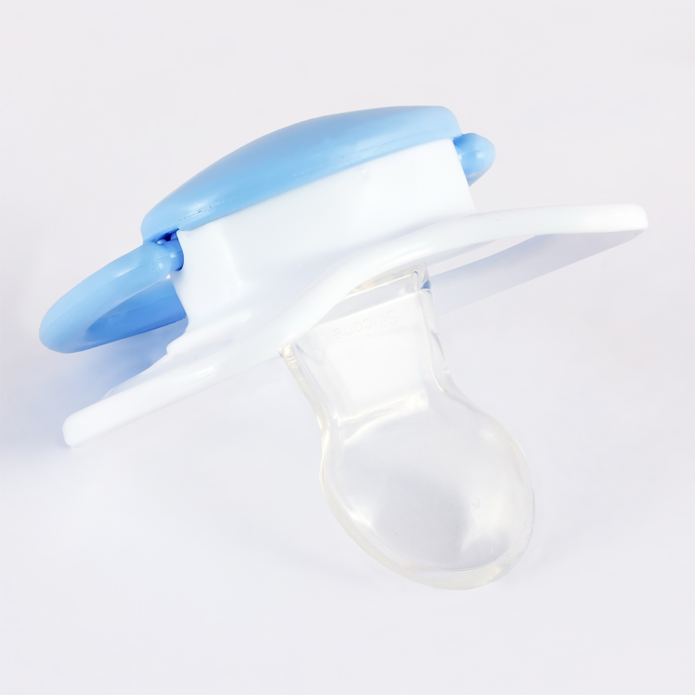
Two of the soothing tools carry safety rules worth more than the soothing itself: swaddling and white noise. Get those right and the rest is low-stakes trial and error.
Swaddling: effective, with two hard rules
Swaddling calms babies by dampening the startle (Moro) reflex, and it is one of the better single sleep-onset tools. But it sits at the intersection of the two highest-stakes infant risks, so the rules matter more than the technique.
Rule 1: back only, and stop at the first sign of rolling. A swaddled baby on the back carries only a modest association with SIDS, but swaddling sharply multiplies the danger of the wrong position. In the pooled meta-analysis, a swaddled baby placed on the stomach had an odds ratio of about 13, and on the side about 3. Pease 2016 strong evidence Because a swaddled baby who rolls cannot push up or turn their face free, the hard stop is the first sign of trying to roll (for some babies as early as two months). AAP 2022
Rule 2: hips loose, legs free to bend up and out. Wrapping the legs straight and tight can cause hip dysplasia or dislocation. Keep the hips and knees free to flex into the natural "froggy" position. IHDI 2019 good evidence And do not let a swaddled baby overheat. Done this way (back only, hips loose, not too hot, stopped at rolling) swaddling is safe; it is neither "always safe" nor "always dangerous."
Pacifiers: a soother that is also a safe-sleep tool
The pacifier is unusual: it both calms a baby and lowers SIDS risk. Offered at sleep onset, it is associated with roughly a halving of SIDS risk (adjusted odds ratio 0.39). Hauck 2005 strong evidence You do not need to put it back in once the baby is asleep, and never attach it to a cord around the neck.
The costs are modest and accrue mainly with prolonged use. Pacifiers raise the risk of ear infections a little, mostly with continuous use past the first year (relative risk roughly 1.2 to 1.6). AAFP 2009 Dental effects (malocclusion) climb only with use past about two years: among children who used a pacifier or finger past 48 months about 71% had malocclusion, versus about 14% in those who stopped before 24 months. AAFP 2009 Most early bite changes self-correct if the habit stops by age two to three; the exception is posterior crossbite, which rarely corrects on its own. SR 2023 The dental academy advises stopping non-nutritive sucking by 36 months. The sweet spot: the benefit is front-loaded in the first six months, the costs accrue past 12 then 24 months, so a natural wean in the 6-to-12-month window captures the upside and avoids most of the downside.
On breastfeeding, the old "nipple confusion" worry is weaker than its reputation: a Cochrane review of motivated breastfeeding mothers found pacifier use did not significantly affect breastfeeding at four months (relative risk 1.01). Cochrane 2016 Waiting until breastfeeding is established (commonly cited as 3 to 4 weeks) is reasonable, low-cost caution, not a hard harm finding.
White noise and carrying: dose and the honest caveat
White noise helps onset; keep it modest and across the room. A small classic study found 80% of newborns fell asleep within five minutes with white noise versus 25% without. Spencer 1990 The real concern is loudness, not "addiction." When 14 infant sleep machines were tested at maximum volume, all 14 exceeded the safe 50 dBA limit at 30 cm (crib-rail distance), and the loudest reached about 93 dBA; none exceeded 85 dBA at 200 cm (across the room). Hugh 2014 good evidence The AAP's 2023 noise policy confirms the roughly 50 dBA ceiling for infants. AAP 2023 So the safe-use rule is: place the machine across the room (about 7 feet), keep the volume modest, and use it for sleep onset rather than blasting it all night. "Dependence" is just a sleep association you can fade out by lowering the volume over a week or two; the womb was loud, so modest white noise is normal, not harmful.
Carrying reduces normal crying, but it is not a colic cure. The classic randomized trial of extra daily carrying (about 3 hours more, including when the baby was calm) found the carried babies cried and fussed 43% less at six weeks and 51% less in the evening. Hunziker 1986 good evidence The crucial caveat from the same research group: in babies who already met colic-level crying, a later trial of extra carrying found no benefit. Barr 1991 So carrying is a low-risk, bonding-positive thing to try for everyday fussiness, and it is the strongest evidence behind "you cannot spoil a baby," but it is not a treatment for diagnosed colic.
Are smart bassinets like the SNOO proven to prevent SIDS?
One camp: The SNOO is FDA-authorized and keeps babies safely on their backs. In 2023 it received an FDA De Novo authorization as an "infant supine sleep system," and back-sleeping is the single most effective SIDS-risk reducer. FDA 2023
The other: The authorization is for back-positioning, not SIDS prevention. The special control requires only that the device not increase SIDS, which is a do-no-harm bar, not proof it prevents anything. The AAP's flat rule still governs every soother: a product that soothes a baby to sleep is not, by that fact alone, safe for sleep. AAP
Where the evidence sits (dated): The SNOO is consistent with safe sleep (it straps the baby supine), and a roughly 1,000-infant postmarket study reported no deaths or serious injuries through September 2025. FDA 2023 But there is no evidence it prevents SIDS beyond the back-position effect, it costs about $1,700 (with a subscription added in 2024), and critics note the families at highest risk can least afford it. STAT 2024
A reasonable default: Do not feel you must buy your way to safe sleep. A cheap swaddle, the free 5 S's, and a flat firm bassinet meet the exact same safety bar. A smart bassinet is a comfort purchase, not a safety requirement.
You cannot spoil a young baby
Picking up, holding, and answering a young baby does not spoil them. It is the mainstream pediatric and attachment-science position: in the first months crying is pure need-signaling, and consistent, prompt response builds trust and produces less crying overall, not more. The "you'll spoil them" warning traces to 1920s behaviorism and is now thoroughly repudiated. AAP good evidence
The evidence, and the honest age caveat
The AAP states it plainly: "You cannot spoil a young baby with attention, and if you answer their calls for help, they'll cry less overall." AAP The historical foil is John B. Watson's 1928 behaviorism, which advised parents to "never hug and kiss them, never let them sit ON your lap." Watson 1928 historical foil That advice is the source of the spoiling myth, and it is wrong.
The honest scope. The "no spoiling" consensus is strongest for young infants, roughly the first six months, when crying is pure need-signaling. As babies become older infants and toddlers (cause-and-effect understanding emerges around six to eight months), "responding to needs" and "giving in to every demand" start to diverge, and toddler limit-setting becomes a real, separate, later conversation. This is not a hedge that undercuts the myth-busting; it is the accurate scope: you cannot spoil a young baby by meeting their needs.
Two related bits of folklore go in the same bin. "Letting a young baby cry it out builds strong lungs or character" has no evidence in early infancy. And "attachment parenting" (the branded program of co-sleeping, extended babywearing, and constant contact) is not what secure attachment requires: the science needs sensitive, responsive care, not any particular product or sleeping arrangement. The brand is not the science.
Temperament: the baby you got
Babies arrive with their own behavioral style, and it is not your fault or your achievement. The classic research sorted infants into roughly 40% "easy," 15% "slow to warm up," 10% "difficult," and a full 35% who fit no single label. The most useful idea to come out of it is "goodness of fit": how a child turns out depends less on their temperament than on the match between their temperament and their environment. Thomas and Chess 1970 mixed evidence
Go deeper
The source is the New York Longitudinal Study (Thomas, Chess, and Birch), which followed 141 children from 1956 and described temperament along nine dimensions: activity level, rhythmicity, approach or withdrawal to new things, adaptability, sensory threshold, intensity of reaction, mood, distractibility, and attention span. Thomas and Chess 1970 About 65% of children fit one of three constellations (easy, slow-to-warm-up, difficult) and 35% did not. The percentages come from a single, affluent, non-representative cohort and rest on parent reports, so treat the exact numbers as illustrative (grade C), and the "goodness of fit" idea as the durable, clinically useful part.
The clinical payoff, also from the original study: about 70% of the "difficult" children later developed behavior problems that needed attention, versus 18% of the "easy" children. Thomas and Chess 1970 But temperament alone did not determine the outcome; many difficult children did fine and some easy ones did not. What mattered was the fit between the child and the demands placed on them. The reframe is from "what is wrong with my baby" to "how do I adjust the fit." A modern, dimensional alternative to the easy/difficult labels is Rothbart's Infant Behavior Questionnaire, which maps temperament onto three broad factors (positive/outgoing, prone to distress, and self-regulating) rather than putting a baby in a box. Gartstein and Rothbart 2003 good evidence
Attachment, without the hype
Secure attachment is the single most common pattern, but it is not a comfortable supermajority, and insecure is common and usually fine. The largest and most current meta-analysis (285 studies, 20,720 parent-infant pairs) puts the global split at about 52% secure, 23% disorganized, 15% avoidant, and 10% resistant. Madigan 2023 strong evidence That is lower than the textbook "two-thirds secure," mostly because newer work carved out the disorganized category and included more high-risk samples. The honest statement: about half of children are securely attached, nearly half are not, and most of the not are perfectly okay.
The one pattern that actually predicts later problems (disorganized) does so with only a small-to-moderate effect: a standardized difference of about 0.34 for later behavior problems. Fearon 2010 strong evidence Attachment is a relationship pattern, somewhat changeable, not a fixed verdict on your child. And it is built by ordinary sensitive, responsive care, which is exactly the "answer your baby" advice above, not by any product or sleep arrangement.
As of June 2026, the US vaccine and some safety guidance is in flux; the crying, colic, and soothing evidence here is stable. Check the linked source for the latest on any device authorization.
Sources
- Vermillet A-Q, et al. Crying in the first 12 months of life. Child Development 2022;93(4):1201. PMC9541248
- American Academy of Pediatrics. Abusive Head Trauma in Infants and Children (technical report). Pediatrics 2025;155(3):e2024070457. link
- National Center on Shaken Baby Syndrome. Period of PURPLE Crying. dontshake.org; CDC, About Abusive Head Trauma. cdc.gov
- Barr RG, et al. PURPLE educational materials RCT. Pediatrics 2009;123(3):972. PMC2659818; Dias MS, et al. JAMA Pediatrics 2017. PMC5863059; NIJ CrimeSolutions rating. link
- American Academy of Family Physicians. Infantile Colic. AFP 2015. link
- Sung V, et al. Lactobacillus reuteri to Treat Infant Colic (meta-analysis). Pediatrics 2018;141(1):e20171811. link; ESPGHAN probiotics position paper. JPGN 2023. PMID 36705703
- Biagioli E, et al. Pain-relieving agents for infantile colic. Cochrane 2016. CD009999
- Pease AS, et al. Swaddling and the Risk of SIDS (meta-analysis). Pediatrics 2016;137(6). PMID 27244847; AAP, Swaddling: Is it Safe. link; International Hip Dysplasia Institute. statement
- Hauck FR, et al. Do Pacifiers Reduce the Risk of SIDS (meta-analysis). Pediatrics 2005;116(5). PMID 16216900; Sexton S, Natale R. Risks and Benefits of Pacifiers. AFP 2009. link; Jaafar SH, et al. Pacifier use and breastfeeding. Cochrane 2016. link
- Hugh SC, et al. Infant Sleep Machines and Hazardous Sound Levels. Pediatrics 2014;133(4):677. PMID 24590753; AAP, Preventing Excessive Noise Exposure. Pediatrics 2023;152(5):e2023063752. link; Spencer JAD, et al. White noise and sleep induction. Arch Dis Child 1990. PMC1792397
- Hunziker UA, Barr RG. Increased Carrying Reduces Infant Crying (RCT). Pediatrics 1986;77(5):641. PMID 3517799; Barr RG, et al. Carrying as colic therapy (RCT). Pediatrics 1991;87(5):623. PMID 2020506
- FDA. SNOO De Novo authorization DEN210039 (2023). link; STAT News, SNOO premium features and SUID (2024). link
- AAP HealthyChildren. Responding to Your Baby's Cries; Calming a Fussy Baby. link; Watson JB. Psychological Care of Infant and Child (1928). scan
- Thomas A, Chess S, Birch HG. The Origin of Personality. Scientific American 1970. link; Gartstein MA, Rothbart MK. IBQ-R. 2003. PMC4909571
- Madigan S, et al. The first 20,000 strange situation procedures. Psychological Bulletin 2023. summary; Fearon RP, et al. Child Development 2010;81(2):435. link; Keller H. PNAS 2018. PMC6233114
Health, illness and fever
the whole year
Babies get sick a lot, and almost all of it is mild, viral, and self-resolving. The job of this section is not to make you a diagnostician. It is to give you two things: the handful of signs that mean "be seen now," and the much longer list of frightening-looking things that are actually normal, so you can tell them apart at 3 a.m. The single rule that overrides everything else is at the top, because it is the one time a thermometer number alone forces action.
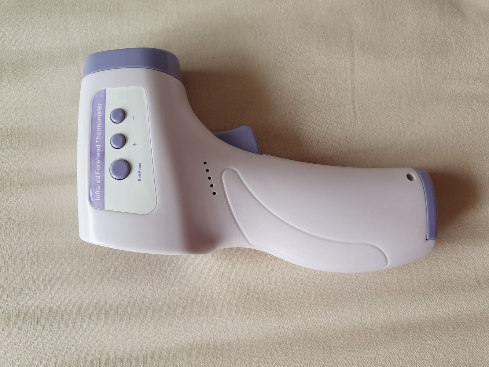
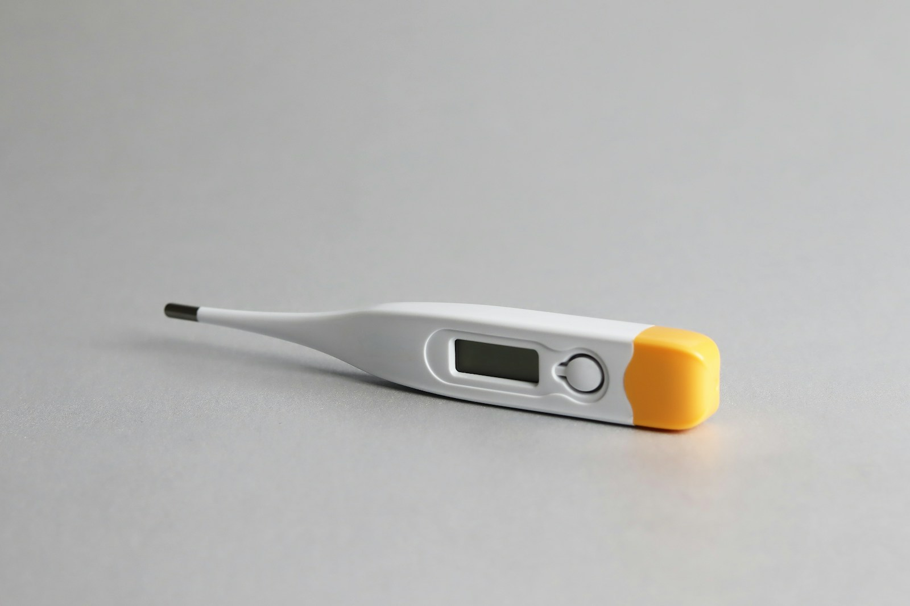
- The one non-negotiable: fever under 3 months
- The red-flag triage card
- Fever: what it is, and what it is not
- Fever medicine: the dosing widget and the rules
- Febrile seizures
- Breathing, RSV and bronchiolitis
- Spit-up, reflux and the milk-allergy question
- Stools, vomiting and dehydration
- The common illnesses, briefly
- Jaundice and the two-week rule
- The three you must not miss
- Normal vital signs, for reference
The one non-negotiable: fever under 3 months
Any rectal temperature of 38.0 C (100.4 F) or higher in a baby younger than 3 months is a medical emergency, no matter how well the baby looks. Call your doctor or go in now. Do not give a fever medicine and watch at home, and do not wait to see if it climbs. Under 28 days this is essentially absolute. A low temperature (under about 36.0 C / 96.8 F) in a newborn is just as worrying as a high one AAP 2021 NICE NG143 strong, multi-body consensus.
Go deeper
The reason the whole medical system treats a young baby's fever so differently comes down to three facts. First, newborns localize infection poorly, so a serious bacterial infection (a urinary tract infection, a bloodstream infection, or meningitis) can show up as fever alone in a baby who otherwise looks fine. Second, they can deteriorate fast. Third, the base rates are not trivial: across roughly 200,000 febrile infants 60 days and younger seen in US emergency departments each year, about 7 to 10 percent have a urinary tract infection, 2 to 3 percent have a bloodstream infection (bacteremia), and 0.5 to 1 percent have bacterial meningitis EB Medicine strong evidence.
What the workup looks like depends on exact age, and the 2021 AAP guideline made it less invasive than it used to be. A baby 8 to 21 days old gets the full evaluation: urine, blood, and a spinal tap (lumbar puncture), plus antibiotics and admission, every time. From 22 to 28 days, if blood markers are reassuring, the spinal tap becomes a shared decision with you, and some babies can go home. From 29 to 60 days, a well-looking baby with normal urine and normal blood markers can often go home with no antibiotics and a next-day recheck. The big change over the last decade is that the mandatory spinal-tap-and-admit line moved up from 60 days to 28 days AAP 2021 strong evidence.
One practical note that confuses parents: the hospital may mention checking a marker called procalcitonin, and not every hospital can run it quickly. If yours cannot, doctors safely substitute other blood markers (C-reactive protein and the neutrophil count) with slightly stricter cutoffs Burstein 2025 single strong cohort. A hospital without procalcitonin is not giving lesser care. And do not confuse two different temperature numbers: 38.0 C is the fever line that triggers this rule, while 38.5 C is just one of several lab and vital-sign cutoffs doctors use to decide how much testing a 22-to-60-day-old needs. They are not the same thing.
The red-flag triage card
Most worried-parent moments fall somewhere between "obviously fine" and "obviously an emergency." The card below sorts symptoms into four tiers, from call-911-now down to safe-to-watch-at-home, merged from the US, UK, WHO, Canadian, and Australian frameworks (where they differ, the more cautious threshold wins). Pick the highest tier any symptom matches. It does not replace your pediatrician's advice line, and it does not replace your gut: a parent's sense that something is seriously wrong is itself an evidence-supported warning sign NICE NG143 strong, multi-body consensus.
The four tiers, in words
Tier 1, call 911 or go straight to the ER: stops breathing or has long pauses (apnea), or is working so hard to breathe they cannot cry or feed; grunting with each breath; turns blue, grey, very pale, mottled, or ashen; a non-blanching rash (spots or bruise-like marks that do not fade when pressed under a clear glass); a seizure, a seizure over 5 minutes, or a first-ever seizure; will not wake, is floppy or limp, or does not respond to you; a bulging soft spot when calm and upright, or a stiff neck; or a baby who looks "seriously wrong" to you NICE NG143 NHS strong.
Tier 2, same-day urgent: any fever 38.0 C (100.4 F) or higher under 3 months (this often belongs in Tier 1 for the under-28-day group); fast breathing, nasal flaring, or new wheeze with effort; signs of dehydration (no wet diaper for 8 or more hours, no tears, sunken eyes or soft spot, very dry mouth); refusing all feeds, repeated forceful vomiting, or green or bile-stained vomit; a fever of 39 to 40 C (102.2 to 104 F) in a 3-to-6-month-old, or any high fever with a baby who looks unwell; fever lasting 5 days or more; or a red, hot, swollen joint or a limb the baby will not use NICE NG143 strong.
Tier 3, call within a day or two: fever in a well-looking baby over 3 months that lasts beyond 2 to 3 days, or a cold not improving after about 10 days; a suspected ear infection in an otherwise-well baby over 6 months; a goopy eye with a cold; thrush; a mild rash without other features; or vomiting or diarrhea that is tolerable while the baby still makes wet diapers and takes fluids AAP HealthyChildren good evidence.
Tier 4, safe to watch at home with safety-netting: a happy, drinking, playing baby over 3 months with a fever and an obvious mild cold. Watch for any Tier 1 or Tier 2 sign, recheck overnight, and trust the sense that something has changed. "Safety-netting" is the official name for this last step: knowing exactly what to watch for and where to go if it appears.
Fever: what it is, and what it is not
Fever is a rectal temperature of 38.0 C (100.4 F) or higher, the same line in every country NHS RCH strong consensus. Past the under-3-months rule, the modern message from every major body is the same: treat for the child's comfort, not to chase a number down. A happy, drinking, playing febrile baby may need no medicine at all, and you should not wake a comfortable sleeping baby to give one. Fever medicines do not shorten the illness and do not prevent febrile seizures AAP/AAFP 2012 strong evidence.
Usually normal (with a fever, over 3 months)
- A baby who is fussy or clingy while the fever is up but perks up when it comes down
- Warm, flushed skin; sleeping more; eating a little less
- Fever that comes and goes over 2 to 3 days with an obvious cold
- A high number (say 39.5 C / 103 F) in a baby who is otherwise alert, drinking, and consolable
- Cold hands and feet at the start of a fever as it rises
Call your doctor about
- ANY fever 38.0 C (100.4 F) or higher under 3 months (this is the override, see above)
- Fever with a baby who looks unwell, is hard to rouse, or is unusually floppy or irritable
- Fever of 39 C (102.2 F) or higher in a 3-to-6-month-old
- Fever lasting 5 days or more, at any age
- Fever with fast or labored breathing, a non-fading rash, a stiff neck, or repeated vomiting
- A baby too sick to drink, or showing dehydration signs
What turns it serious: the baby, not the thermometer. A miserable, listless baby with a fever of 38.5 C needs attention more than a playful one at 39.5 C. The exception is the very young, where any fever is the trigger regardless of height.
The evidence, and how to take a temperature
Fever phobia is real and measured. The pediatrician Barton Schmitt coined the term in 1980 after finding that 52 percent of parents believed a fever of 104 F or less could cause serious harm like brain damage, and 45 percent named brain damage specifically Schmitt 1980 good evidence. Twenty years later the brain-damage belief had dropped to 21 percent but had not gone away Crocetti 2001 good evidence, and it persists into the 2020s. Naming the fear is part of defusing it: the height of the fever is not the enemy.
Skip the folk measures. Tepid sponging and cold baths cause shivering and distress without benefit; alcohol rubs are toxic and absorbed through the skin; over-bundling or trying to "sweat it out" traps heat. None of these are recommended AAP/AAFP 2012 strong evidence. And aspirin is off-limits for fever or viral illness in anyone under 19 (it can trigger the rare, dangerous Reye syndrome).
How to measure (US-leaning, age-tiered). Under 3 months, use a rectal digital thermometer; it is the number doctors will trust, and any reading at or above 38.0 C / 100.4 F means call now. From 3 to about 6 months, rectal or forehead (temporal-artery); armpit (axillary) as a screen. Over about 6 months, ear (tympanic), forehead, armpit, or rectal are all reasonable. The one universal rule: never "add or subtract a degree" for the method. Report the actual reading and how you took it, and let the clinician interpret it AAP 2021 strong evidence.
Rectal or armpit? The US and UK genuinely disagree.
One camp (US, AAP): rectal is the gold standard and the route to use under 3 months, because it is the most accurate and this is the highest-stakes decision a parent makes.
The other (UK, NICE): do not use the rectal or oral route in children under 5 at all; use an electronic thermometer in the armpit (under 4 weeks) or armpit or ear (4 weeks to 5 years). Forehead chemical strips are called unreliable NICE NG143.
Where the evidence sits (dated): this is a values trade-off, not a factual fight about accuracy. Rectal is the most accurate, which is why the US keeps it for the under-3-months call; the UK weighs the small accuracy gain against invasiveness and discomfort and removed the route entirely. Both systems then apply the identical 38.0 C line. Stable, long-standing.
A reasonable default: for the under-3-months decision, a rectal reading is the one doctors trust, so it is worth owning a rectal thermometer for the early months. UK families: armpit is your official method, but a rectal-confirmed fever is still the trigger to act.
Fever medicine: the dosing widget and the rules
Two medicines are used for infant fever and pain: acetaminophen (paracetamol, Tylenol) and ibuprofen (Advil, Motrin). Dosing is by weight, not age, which is why the widget asks for your baby's weight and which exact product you have in hand. Acetaminophen comes in one liquid strength now (160 mg / 5 mL). Ibuprofen comes in two (infant drops 50 mg / 1.25 mL and children's liquid 100 mg / 5 mL), and mixing them up is the single most common dosing error, so you must pick the concentration AAP/AAFP 2012 strong evidence.
The rules behind the widget
Acetaminophen: 10 to 15 mg/kg per dose, every 4 to 6 hours, no more than 5 doses in 24 hours (a daily ceiling around 75 mg/kg). It can be used from birth, but do not give it to a baby under 3 months without a doctor's direction, because a fever in that age group needs evaluation, not just treatment. Onset is about 30 to 60 minutes AAP/AAFP 2012 strong evidence.
Ibuprofen: 10 mg/kg per dose, every 6 to 8 hours, no more than 4 doses in 24 hours. In the US the firm rule is no ibuprofen before 6 months of age. The reason is kidney safety: ibuprofen blocks prostaglandins that protect kidney blood flow, and in a young, possibly dehydrated infant with immature kidneys that can cause harm. Even after 6 months, skip ibuprofen in a dehydrated or persistently vomiting baby, and in chickenpox NHS strong evidence.
One old product to throw away: before 2011, infant acetaminophen came in a concentrated 80 mg / 0.8 mL dropper strength that caused dangerous overdoses when crossed with the children's liquid. Manufacturers moved to a single 160 mg / 5 mL concentration in 2011 FDA strong evidence. If you find an old 80 mg/0.8 mL bottle in a cabinet, discard it.
Should you alternate or combine the two medicines?
One camp (AAP, US): do not routinely alternate or combine. Combining lowers the temperature slightly more after a few hours, but lowering the number is not the goal, and juggling two medicines on different schedules is the recipe for a dosing error AAP 2012.
The other (NICE, UK): do not give both at once, but you may consider the second agent if distress persists or returns before the next dose is due NICE NG143.
Where the evidence sits (dated): a 2024 network meta-analysis of 31 trials and 5,009 children confirmed that combining or alternating does lower temperature more than one drug alone Cruz 2024 strong evidence. But the safety and comfort benefit of combination has never been established, and lower temperature was never the point. A soft, stable disagreement of tone.
A reasonable default: stick to one medicine dosed correctly. Reserve a doctor-guided, written alternating schedule for a genuinely miserable child, never as a routine round-the-clock plan, and remember the aim is comfort, not a normal number.
Febrile seizures
A simple febrile seizure is a brief (under 15 minutes), whole-body seizure that happens once in 24 hours during a fever, in an otherwise healthy child 6 months to 5 years old. The action is the same as any seizure: keep the child safe, time it, and call 911 if it lasts more than 5 minutes or is the first one. About a third of children who have one will have another, more often if the first happened under 12 months AAFP 2019 strong evidence.
What to do, step by step
When a child has a febrile seizure:
- Stay calm and note the time it starts. Most are over within a couple of minutes.
- Lay the child on the floor on their side (recovery position) so saliva or vomit drains out. Not on a bed or table. Do not hold them down or try to stop the movements.
- Clear hard or sharp objects away and loosen anything tight around the neck.
- Do not put anything in the mouth, no fingers, no spoon, no medicine. They cannot swallow their tongue.
- Call 911 (UK 999) if the seizure lasts more than 5 minutes, it is the first one, there is trouble breathing or a color change, the child does not wake or recover normally afterward, or another seizure follows right away.
- Afterward the child is usually sleepy and groggy for a while (this is normal); let them rest on their side and call the doctor to be checked, especially the first time.
Sources: AAFP 2019; KidsHealth; British Red Cross. strong, concordant guidance
Doctors do not routinely give daily anti-seizure medicine to prevent recurrences, because the drug side effects outweigh the benefit for these harmless events, and fever medicine has been shown not to prevent them AAFP 2019 strong evidence.
Breathing, RSV and bronchiolitis
The breathing that means "be seen" is fast, labored breathing: a baby sucking in below the ribs or between them (retractions), flaring nostrils, grunting with each breath, or a belly heaving to keep up. Count breaths over a full 60 seconds when the baby is calm. Fast is roughly 60 or more per minute under 2 months, 50 or more from 2 to 11 months, and 40 or more from 12 months WHO IMCI strong evidence. Any breathing pause, blue color, or a baby too breathless to feed is a 911 situation.
Usually normal
- Snuffly, congested, or rattly breathing with a cold (clears with saline drops and suction)
- Periodic breathing: short fast runs and brief pauses (under about 10 seconds) with no color change, mostly in sleep
- Occasional sneezing, hiccups, and noisy sighs
- Faster breathing when crying, feeding, or warm
Call now / 911 about
- A breathing pause (apnea), blue or grey lips or face: 911
- Grunting with each breath, severe sucking-in below or between the ribs: 911
- Sustained fast breathing (see the per-age numbers), nasal flaring, or new wheeze with effort: same day
- Too breathless to feed, or a baby who looks unwell: same day to 911
- A whistling wheeze plus poor feeding in a baby under 6 months in RSV season
What turns it serious: work of breathing and feeding. A congested but feeding, pink, settled baby is fine; a baby fighting to breathe or unable to feed because of it is not.
The big infant respiratory illness is RSV (respiratory syncytial virus), which causes bronchiolitis (inflammation of the smallest airways) and is the leading cause of infant hospitalization in the US. Most babies recover at home in 1 to 2 weeks with nothing but saline, suction, fluids, and patience. There is no useful medicine for it: the AAP says do not routinely use inhalers, steroids, antibiotics, or chest physiotherapy CDC strong evidence. The real news of the last few years is that RSV is now largely preventable.
RSV prevention: the antibody shot and the maternal vaccine
There are now two ways to protect a baby, and most babies need only one, not both CDC strong evidence:
- A maternal RSV vaccine (Abrysvo) given in pregnancy at 32 to 36 weeks, which passes protective antibody to the baby before birth. In its trial it cut severe RSV illness in infants by about 82 percent in the first 90 days and 69 percent by 180 days (the more-severe-disease endpoint) MATISSE / review single strong RCT.
- A long-acting antibody shot for the baby, given once before or during their first RSV season. Two exist: nirsevimab (Beyfortus), dosed by weight (50 mg under 5 kg, 100 mg at 5 kg or more), and the newer clesrovimab (Enflonsia, approved June 2025), a flat 105 mg dose for all weights CDC MMWR 2025 strong evidence. Neither is preferred over the other.
These are not vaccines in the antibody case; they give the baby ready-made antibody directly. The efficacy clusters in the 60 to 85 percent range depending on the exact outcome. Against medically attended RSV lower-respiratory illness, nirsevimab runs about 75 percent (pooled trials about 79.5 percent) and clesrovimab about 60 percent; against RSV hospitalization both run higher, around 84 percent nirsevimab pooled CDC MMWR 2025 strong (nirsevimab); B (clesrovimab, single trial). And the real world matched the trials: in the first season of wide availability (2024 to 2025), nirsevimab was about 80 percent effective against RSV intensive-care admission, and RSV hospitalizations in the youngest infants fell by roughly half as coverage climbed CDC MMWR 2025 strong surveillance.
A safety note to share plainly, not to alarm: the maternal vaccine showed a small, statistically uncertain imbalance in preterm births in its trial (5.7 vs 4.7 percent), which is exactly why it is given only from 32 weeks on, as a precaution review good evidence.
As of June 2026, the US vaccine-advisory process is in legal flux (a federal court ruling in March 2026 affected which recommendations are in force), which mostly affects insurance coverage for clesrovimab, not the clinical evidence. Both products were available and supplied for the 2025 to 2026 season. Confirm current coverage with your pediatrician or insurer rather than a static statement CRS 2026 in flux.
Spit-up, reflux and the milk-allergy question
Doctors split this into two things. GER (gastroesophageal reflux) is plain spit-up: normal, common, harmless. GERD (reflux disease) is when reflux causes real trouble: poor weight gain, feeding refusal, or genuine pain. The whole over-treatment problem comes from giving a GERD medicine to a baby who just has GER. The guideline is blunt: "If excessive irritability and pain is the single manifestation it is unlikely to be related to GERD" NASPGHAN/ESPGHAN 2018 strong evidence.
Usually normal (GER, the happy spitter)
- Effortless spit-up, even large or frequent, in a baby who is gaining weight and content
- Spit-up that peaks around 4 months and is fading by the first birthday
- An occasional bigger "wet burp" or posset after a feed
- A baby who arches or fusses sometimes but feeds well and settles
Call your doctor about
- Poor weight gain, or weight loss, alongside the spitting
- Refusing to feed, or crying with pain that consistently disrupts feeds
- Green or bile-stained vomit, or forceful, projectile vomiting (especially in the first 2 months)
- Blood in the spit-up or stool
- Vomiting that starts after 6 months or keeps going past 12 to 18 months
- Spitting plus fever, lethargy, a bulging soft spot, or a swollen belly
What turns it serious: it stops being plain spit-up. Forceful or green vomit, blood, poor growth, or pain that wrecks feeding all point away from harmless reflux toward something that needs a look.
What actually helps, and the case against reflux medicine
The non-drug ladder works and costs nothing: reassurance first, then smaller and more frequent feeds (avoid overfeeding), burping, and holding the baby upright for about 20 to 30 minutes after feeds while awake. For visible spit-up you can thicken feeds, and the AAP now prefers oatmeal cereal over rice cereal because rice carries more inorganic arsenic AAFP 2015 good evidence. Breast milk cannot be thickened with cereal (an enzyme in it digests the starch); use a commercial thickener or anti-reflux formula instead.
Acid-suppressing medicine usually does not help the symptom it is prescribed for. In the pivotal trial, the proton-pump inhibitor lansoprazole produced the exact same response rate as placebo (54 percent in both arms) for feeding-related crying, while causing significantly more serious side effects (10 versus 2) NASPGHAN/ESPGHAN 2018 single strong RCT. The 2023 Cochrane review of 36 trials found only very-low-certainty evidence and no clear symptom benefit for these drugs in infants Cochrane 2023 strong evidence. They also carry real risks (more pneumonia and gut infections, possible fracture risk), and they are heavily over-prescribed: in one US cohort of 270,437 infants, 7 percent got an acid blocker and 2 percent got one with no documented reason at all Pediatrics 2023 good evidence. The AAP's Choosing Wisely line is simply: "Do not use medication in the so-called happy-spitter."
What is explicitly NOT recommended: positioners and wedges, infant massage, and probiotic or herbal "anti-reflux" drops, all for lack of evidence NASPGHAN/ESPGHAN 2018 strong evidence.
The milk-allergy question (and the overdiagnosis story)
Cow's-milk protein allergy (CMPA) is real, but it is suspected far more often than it is present. Symptoms suggesting it show up in 5 to 15 percent of infants, but challenge-confirmed CMPA is roughly 0.5 to 3 percent (often about 0.5 percent on the strict test, and only about 0.4 to 0.5 percent in exclusively breastfed babies) epidemiology review CPS 2024 strong evidence. Most of the gap is normal infant behavior, plain spit-up, and ordinary fussiness being recoded as allergy. It is also not lactose intolerance, which is essentially nonexistent in young infants.
The honest reason to be careful: a UK investigation found prescriptions of specialist hypoallergenic formula rose about 500 percent (and NHS spending on it about 700 percent) from 2006 to 2016 with no matching rise in true allergy, and documented extensive formula-industry funding of the very guidelines and education that lowered the threshold to diagnose. The BMJ stopped running formula ads in response van Tulleken 2018 good evidence; admin data strong. This is a critique of company conduct, not of any parent who was told their baby had an allergy.
The rule every body agrees on is confirm-before-you-treat. Because no blood test is reliable for the common (non-IgE) form, you do a short 2-to-4-week elimination (dairy and often soy out of a breastfeeding parent's diet, or a switch to an extensively hydrolyzed formula), and then you must reintroduce milk to prove the symptoms come back. If they do not return, the baby does not have CMPA and milk goes back in CPS 2024 strong evidence. The only time you skip the reintroduction is after anaphylaxis or a markedly high allergy blood test. Extensively hydrolyzed formula is first-line; only under 10 percent of allergic babies need the pricier amino-acid formula. And if a breastfed baby has CMPA, the answer is the parent dropping dairy, not weaning to formula.
Note: avoid IgG "food sensitivity" panels; they are not evidence-based and drive overdiagnosis (CPS 2024). strong evidence
Tongue-tie, lip-tie and the frenotomy boom
Tongue-tie diagnoses and the snip that treats them (frenotomy) rose roughly tenfold from 1997 to 2012 and doubled again by 2016, far faster than any real change in babies, and concentrated in higher-income areas AAP 2024 strong evidence. The 2024 AAP report is unusually direct: most tongue-tie is asymptomatic and needs nothing; "posterior tongue tie" is anatomically incorrect nomenclature and should not be a reason to operate; and lip ties and buccal ties are normal structures that do not require surgery. Sucking blisters are normal, not a sign of a tie AAP 2024 strong evidence.
For a genuinely symptomatic anterior tongue-tie that is hurting feeding after a full lactation assessment, a simple scissor frenotomy is reasonable and may ease nipple pain; there is no evidence that laser beats scissors, and post-procedure stretching exercises are not recommended AAP 2024 strong evidence. The deeper feeding guidance lives in the Feeding section; the message here is the same as for reflux and milk allergy: support before you cut, and beware self-diagnosis from social media or a clinic that profits from the procedure.
Stools, vomiting and dehydration
The thing to actually track is not the poop, it is hydration, because dehydration is the final common path that turns a stomach bug, RSV, mouth sores, or a high fever dangerous. The bedside signs are concrete: fewer wet diapers than usual (fewer than one in 8 hours is concerning), no tears when crying, a dry or sticky mouth, sunken eyes or a sunken soft spot, and a baby who is unusually sleepy or hard to rouse Goldman 2008 good evidence. For vomiting and diarrhea, the treatment is oral rehydration solution (ORS) in small, frequent sips, and continued breastfeeding throughout.
Usually normal
- Breastfed stools that are loose, seedy, yellow, and frequent, or infrequent (even every few days) if soft when they come
- Straining, grunting, and going red before passing a soft stool (infant dyschezia)
- Green stools, or a one-off mucousy stool, in a thriving baby
- Pink or orange "brick-dust" urate crystals in the first day or two of life
- A few episodes of vomiting or loose stool while the baby still drinks and makes wet diapers
Call now / 911 about
- Signs of dehydration: no wet diaper in 8+ hours, no tears, sunken eyes or soft spot, very dry mouth: same day
- A baby too lethargic to drink, or vomiting everything: same day to 911
- Green or bile-stained vomit, or forceful projectile vomiting: same day to 911 (possible obstruction)
- Blood in the stool (red streaks or black, tarry stool), or blood in the vomit
- White, pale, clay, or chalky stools at any age (see jaundice, below): call promptly
- Brick-dust urate crystals that persist past the first 2 days (a feeding red flag)
What turns it serious: dehydration, blood, bile-green vomit, or pale stools. Frequency and color alone, in a well, drinking, weeing baby, almost never are.
The colors that matter, and the rehydration numbers
The normal newborn color sequence (per the live CDC chart): days 1 to 2, black or dark green (meconium); day 3, transitioning to yellow; day 4 and on, yellow CDC good evidence. Three colors are the ones to flag at any age: white/pale/clay (possible liver or bile-duct problem, see jaundice), red (blood), and black after the meconium days (possible digested blood). Green, brown, yellow, and the occasional mucous streak in a thriving baby are not emergencies.
Oral rehydration, the numbers. Use a low-osmolarity ORS (the standard rehydration drinks), not water, juice, or sports drinks. For mild illness, give about 50 to 100 mL after each loose stool for a baby under 2. For moderate dehydration the rule of thumb is about 75 mL per kg of body weight over 4 hours in small frequent sips WHO IMCI strong evidence. Give it by spoon or syringe; if the baby vomits, wait 10 minutes and resume more slowly. The widget above does this math for you.
What not to do: do not dilute formula, do not use the old "BRAT diet," and do not give anti-diarrhea or anti-vomiting drugs to an infant without a doctor's say-so CDC strong evidence. Resume the normal age-appropriate diet early. The rotavirus vaccine (oral, at 2 and 4 months, sometimes 6) has dramatically cut severe gastroenteritis: lab test-positivity for rotavirus fell from about 25.6 percent before the vaccine to 6.1 percent after, and hospitalizations dropped roughly 80 percent CDC / MMWR strong evidence.
The common illnesses, briefly
Most infant illness is a short list of viruses on repeat. Babies average about 8 to 10 colds in their first two years, and that is a sign of a normal immune system meeting the world, not a weak one AAP HealthyChildren good evidence. The quick reference below covers what each one is, how long it lasts, and the specific line that means "be seen." All of them inherit the under-3-months fever rule and the Tier 1 red flags above.
The fact cards
Common cold. Mostly rhinovirus; symptoms ease after about 7 to 10 days, with cough and snot lingering up to 2 weeks. Treat with comfort only: saline drops and suction, humid air, fluids, upright holding, and honey only after 12 months. No over-the-counter cough or cold medicines under age 4. Call if temperature over 38.9 C (102 F), fast or labored breathing, cough over 10 days, or ear pain AAP good evidence.
Croup. A barky, seal-like cough with a hoarse voice, worse at night, ages 6 months to 3 years. Usually 3 to 7 days. A single dose of oral steroid (dexamethasone) is standard even for mild cases. Cool night air can help. Go in for stridor (a harsh sound) at rest, drooling or trouble swallowing, blue color, or marked sucking-in CPS strong evidence.
Ear infection. Common 6 to 24 months; pain and fever usually improve in 48 to 72 hours. Ear-pulling alone is a poor sign (common with teething). Under 6 months, or severe pain, or fever 39 C (102.2 F) or higher gets prompt antibiotics; otherwise older babies may be candidates for watchful waiting (see the fork below). Swelling or redness behind the ear is a Tier 1 sign AAP 2013 strong evidence.
Gastroenteritis. Vomiting and diarrhea, usually viral, lasting 3 to 8 days. The danger is dehydration, not the bug; see the stools section for ORS amounts. Keep breastfeeding. Go in for dehydration, green or bloody vomit, blood in stool, or a baby too lethargic to drink CDC strong evidence.
Roseola. 3 to 5 days of high fever (up to 40 C / 104 F) in a baby who looks relatively well, then the fever breaks and a rose-pink rash appears on the trunk. The rash phase is reassuring and needs no treatment. It is a leading cause of a first febrile seizure, and a great example of "high fever plus a well-looking child is usually fine" AAFP good evidence.
Hand, foot and mouth. Fever, then painful mouth sores and a rash on the hands, feet, and often the diaper area. Recovers in 7 to 10 days. The risk is dehydration from painful swallowing; offer cold, soft foods. Nails may shed weeks later (harmless) CDC strong evidence.
Thrush. White patches like cottage cheese on the tongue and inner cheeks that do not wipe away (that is how it differs from milk residue). Treated with nystatin drops; treat a breastfeeding parent's nipples at the same time. Nursing continues AAP-aligned good evidence.
Pink eye and the blocked tear duct. A chronically watery, sticky eye in a young baby is usually a benign blocked tear duct (affects 6 to 20 percent of infants, resolves by 12 months in 90 to 95 percent) treated with gentle massage. But any significant eye discharge or red eye in a newborn under 28 days needs same-day evaluation, because newborn eye infections can be serious StatPearls good evidence.
Urinary tract infection, the hidden one. In a young baby a UTI often shows up as fever alone, with no other sign, which is exactly why doctors test the urine of a febrile young infant. It is the most common serious bacterial infection in this age group. Any unexplained fever, foul-smelling urine, or poor feeding warrants a same-day call AAFP good evidence.
Ear infection: antibiotics now, or watch and wait?
One camp (immediate treatment): antibiotics speed resolution and reduce short-term failure, and for a baby in pain that certainty is worth it. Real-world practice leans this way: watchful waiting is used in only about 15 to 16 percent of eligible visits.
The other (stewardship): for non-severe ear infections in older babies, most resolve on their own and most children sent home to watch never need the antibiotic; reserving antibiotics curbs side effects and resistance AAP 2013.
Where the evidence sits (dated): both are right for different babies. In the anchoring trials, antibiotics cut treatment failure (for example 16 versus 51 percent by day 10 to 12) but caused more diarrhea and rash, and a large share of placebo babies recovered fine Hoberman 2011 strong evidence. Both camps agree babies under 6 months and severe cases are not candidates for waiting.
A reasonable default: under 6 months, severe pain, or high fever: treat. Otherwise, for a mildly affected older baby, a "wait 48 to 72 hours with a backup prescription" plan is a sound, doctor-guided option. This is one decision to make with your pediatrician.
Jaundice and the two-week rule
Two parent-facing rules cover almost everything. First, jaundice in the first day of life, or jaundice that looks deep or is spreading down past the chest, should be checked, the same as any baby whose pre-discharge screen was close to the line. Second, and this is the one to memorize: jaundice still present at 2 weeks, OR pale/clay/white stools, OR dark urine, is not something to watch and wait on. It needs a specific blood test (a conjugated or "direct" bilirubin) promptly NASPGHAN/ESPGHAN 2017 strong evidence.
Why the two-week rule matters so much: biliary atresia
The reason jaundice-at-two-weeks is a hard rule is a rare but devastating condition called biliary atresia, in which the bile ducts are blocked. It shows up as persistent jaundice, pale (acholic) stools, and dark urine in a baby who often otherwise looks healthy, and it is the single most common reason an infant needs a liver transplant AAP/HealthyChildren 2025 good evidence. The surgical repair (the Kasai procedure) works far better the earlier it is done: outcomes are best before 30 days and worsen significantly after about 60 days Merck Manual strong evidence. The window is measured in weeks, which is the whole reason the AAP now recommends a well-baby visit at 2 weeks and tells doctors to ask three questions: is there jaundice, are the stools pale, and was an early direct-bilirubin level high AAP 2025 good evidence.
Normal weight loss, and when it is not. Newborns lose weight before they gain, which panics parents needlessly. The median dip is about 7 percent for vaginally delivered babies (bottoming out around day 2 to 3) and a bit more, around 8 to 9 percent, for cesarean babies (bottoming out around day 3), and weight gain typically starts within the first few days, with a return to birth weight by about 10 to 14 days Flaherman 2015 / NEWT strong evidence. The classic flag for a feeding check is a loss of 10 percent or more, or not back to birth weight by 2 weeks. Underfeeding is also the usual driver of early jaundice (fewer stools means less bilirubin cleared), which is why your baby's weight, feeding, output, and jaundice all get checked together at the same follow-up visit.
The 2022 threshold change. The AAP raised the bilirubin levels at which phototherapy starts (by roughly 2 mg/dL), because the old thresholds caused a lot of over-treatment and phototherapy is not entirely harmless. Real-world studies since show this cut phototherapy use by more than half with no rise in the dangerous outcomes AAFP 2023 strong evidence. The safety valve for the higher lines is good post-discharge follow-up, which is why the early check matters.
Should every newborn be screened for jaundice before discharge?
One camp (US, AAP / Canada, CPS): yes, measure a bilirubin (a heel-stick blood level or a forehead meter) on every newborn before discharge, because visual judgment misses cases and a number catches the rare baby heading for trouble.
The other (UK, NICE): measure bilirubin only in babies who actually look jaundiced, arguing there is not strong evidence that universal screening prevents the rare bad outcome, and that it raises phototherapy use AAFP 2023.
Where the evidence sits (dated): universal screening reduces emergency visits for jaundice (good evidence), but its effect on preventing the very rare kernicterus is unproven at the population level (weaker evidence). A genuine, stable US/UK divergence.
A reasonable default: follow your country's practice without alarm. In the US your baby will get a routine bilirubin check before going home; the UK does it selectively. Either way, the actionable rule is the same everywhere: jaundice at 2 weeks, pale stools, or dark urine means call promptly.
The three you must not miss
Three serious conditions hide among ordinary symptoms: meningococcal sepsis/meningitis (the non-fading rash, but it is a late sign), Kawasaki disease (the reason "fever 5 days or more" is its own red flag), and serious bacterial infection in a young febrile baby (the whole reason for the under-3-months rule). Each is below with its single trigger.
Meningococcal sepsis: the glass test (and why not to wait for it)
The glass test: press the side of a clear glass firmly against a rash. A rash that does not fade under the pressure (red or purple spots, pinpricks, or bruise-like marks) is a medical emergency: call 999/911 NHS Meningitis Now strong evidence. Two critical caveats: the rash is a late sign, so do not wait for it; earlier signs include fever (or in babies sometimes a low or unstable temperature), cold hands and feet, a high-pitched or moaning cry, being floppy or unusually irritable and not wanting to be held, fast breathing or grunting, a bulging soft spot, and dislike of bright light. And on darker skin the rash is harder to see, so check paler areas: palms, soles, inside the eyelids, and the roof of the mouth. Symptoms can appear in any order and not all of them appear. If your baby is ill and getting worse, get help immediately, rash or no rash NHS strong evidence.
Kawasaki disease: why "fever 5 days or more" is a red flag
Kawasaki disease is the leading cause of acquired heart disease in children, and the trigger to remember is fever lasting 5 days or more. The classic picture is that long fever plus red eyes, red cracked lips or a strawberry tongue, a rash, swollen red hands and feet (with later peeling), and a swollen neck gland AHA 2017 strong evidence. The trap for babies: infants under 6 months are the most likely to have prolonged fever without the other features (incomplete Kawasaki) and are at the highest risk of heart complications, so any baby under 1 year with unexplained fever for 7 days or more should be examined even if they look otherwise well. The stakes justify the vigilance: untreated, coronary artery aneurysms develop in about 25 percent of cases; with timely treatment (IVIG within 10 days of fever onset) that drops to roughly 4 percent AHA 2017 strong evidence. You do not diagnose this; the 5-day fever is simply your cue to have your baby looked at.
Serious bacterial infection in a young baby
This is the one the under-3-months rule exists for, covered in full at the top of this section. The short version: in a febrile baby under about 2 months, a urinary infection, a bloodstream infection, or meningitis can be present with fever as the only sign, so the medical response is to test rather than guess AAP 2021 strong evidence. Your single action is the rule itself: any fever of 38.0 C (100.4 F) or higher under 3 months means call now.
Normal vital signs, for reference
Numbers reassure some parents and alarm others. Here they are, with the firm caveat that a single out-of-range reading matters far less than how your baby looks, their color, their effort to breathe, their alertness, and the trend over time. The original textbook ranges were never strongly evidence-based and often cross the true median Fleming 2011 strong evidence, so use these as a guide, not a tripwire.
The reference ranges (first year)
- Temperature: normal rectal 36.6 to 38.0 C (97.9 to 100.4 F); fever is rectal 38.0 C / 100.4 F or higher CPS good evidence.
- Heart rate: roughly 100 to 190 beats per minute awake (lower asleep, down toward 90), running about 120 to 170 in the newborn and easing toward 105 to 150 by age 1 Fleming 2011 good evidence.
- Breathing rate: about 30 to 60 breaths per minute in the first months, easing toward 20 to 45 by a year (count over a full 60 seconds). The "fast breathing" cut-offs that matter clinically: 60 or more under 2 months, 50 or more from 2 to 11 months, 40 or more from 12 months WHO IMCI strong evidence.
If you ever measure something far outside these, the right response is not to panic over the digit but to look at the baby and, if they seem unwell or the number is paired with poor color, effort, or alertness, to call. The numbers serve the picture, not the other way around.
Growth and development
the whole year
Almost everything in this chapter is reassurance, because almost everything here is normal. Healthy babies grow and learn across an enormous range, so the single most useful idea is that normal is a band, not a line. A percentile is a rank among 100 peers, not a grade or a target. A milestone age is "by here, mention it if not," not a deadline. We lead with that wide range, then give you the small number of genuinely actionable signals (most of all, losing a skill the baby already had), and we tell you plainly where the marketing is selling worry.
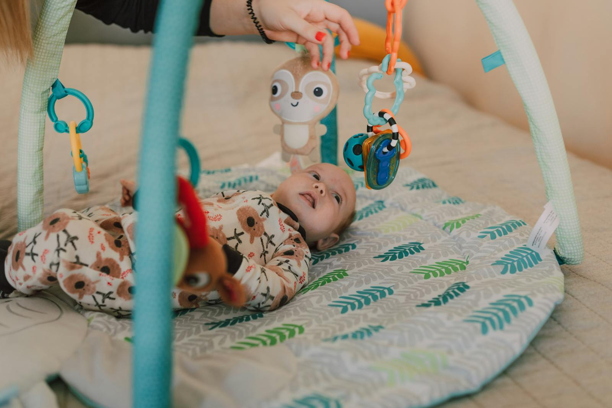
- Reading a growth chart without panic
- WHO vs CDC, and the breastfed dip
- When weight is actually a worry
- Catch-up, catch-down, and rapid gain
- If your baby was born early: corrected age
- Milestones are a band, not a line
- The 2022 milestone change (and crawling)
- Tummy time, walkers, and how movement builds the brain
- Feet, legs, and the shoe and walker myths
- What your baby can see, month by month
- The growing brain (and the enrichment myth)
- Talking, reading, and serve-and-return
- Screens in the first two years
- The short list that overrides the reassurance
- Developmental screening and early help
Reading a growth chart without panic
A percentile is a rank: the 30th percentile means about 30 of 100 same-age, same-sex babies weigh (or measure) less, and 70 weigh more. AAP What matters is the trajectory (is your baby following their own line) and the whole picture (feeding, energy, development), not where the line sits. One odd point, especially a length reading, is usually a measurement quirk, not a change in your baby.
Growth percentile plotter. Enter your baby's age, sex, and a weight, length, or head measurement to see the WHO percentile and z-score (this interactive tool needs JavaScript). For reference, on the WHO standard a 6-month-old boy at the median weighs about 7.9 kg and a 12-month-old about 9.6 kg; a 6-month-old girl about 7.3 kg and a 12-month-old about 8.9 kg. The math is the published WHO standard, so any plotter that uses it (or your pediatrician's chart) will agree. WHO via CDC
Go deeper
Every modern growth chart, WHO or CDC, is just three numbers per age (an L, M, and S) from which any percentile or z-score is computed, so the math is fully open and a plotter can be checked against the official tables (it matches to better than 0.002 kg). strong evidence WHO 2006 Clinicians increasingly speak in z-scores (standard deviations from the median) instead of percentiles, because z-scores have no floor or ceiling and can track tiny changes below the 5th percentile where percentiles bunch together. The translations worth knowing: z = 0 is the 50th percentile, z = -1 is the 16th, z = -1.65 is the 5th, z = -2 is the 2.3rd (the WHO "low" line), z = +2 is the 97.7th. One printed percentile channel is about 0.67 z near the median (the gaps between outer lines are smaller). AAP
On measurement noise: in a primary-care reliability study, length in babies under 2 had by far the highest error (about 0.73 cm between observers, because positioning a squirming infant on a board is hard), while weight was the most trustworthy single number (about 0.06 kg) and head circumference the most reproducible of all. good evidence Carsley 2019 So a length that looks like it dropped 1.5 cm is well within ordinary spread between two honest measurers: re-measure and look at the trend, do not act on one dot. This is also why daily home weigh-ins mislead: day-to-day noise and scale drift swamp the real weekly signal. RCH
One quirk to expect: under age 2, proportionality is judged by weight-for-length, not BMI. At the 2-year visit your clinic switches from the WHO chart to the CDC chart, from lying-down length to standing height (a child measures about 0.7 to 0.8 cm shorter standing), and from weight-for-length to BMI all at once, so the percentile can jump without anything changing in your child. CDC's own example: a 24-month-old can plot between the 25th and 50th on weight-for-length but just above the 10th on BMI. CDC Weight-for-length and BMI predict later health about equally in infancy, so this is a bookkeeping artifact, not a real change. good evidence Aris 2018
WHO vs CDC, and the breastfed dip
The chart your pediatrician uses under age 2 (the WHO standard) is built from healthy, mostly breastfed babies, which makes it the fair yardstick. Many online charts use the older CDC reference, built largely from formula-fed babies. The same baby plots differently on each: at 6 months the two nearly agree, but by 12 months the CDC reference runs about 6 to 7 percent heavier, so a breastfed baby can look like they "fell off" a CDC chart while tracking the WHO chart perfectly.
Go deeper
A growth standard (WHO) says how healthy children should grow under good conditions; a growth reference (CDC) just describes how a sampled population did grow. Since 2010 the CDC and AAP recommend the WHO charts for every US child under 24 months and the CDC charts from 2 to 19 years; the UK, Canada, and Australia use WHO under 2 as well. strong evidence CDC 2010 The WHO standard was built from 8,440 children across six countries (Brazil, Ghana, India, Norway, Oman, and the USA), with the under-2 curves drawn from 882 babies whose mothers met strict breastfeeding and no-smoking criteria. good evidence WHO
The single most illuminating fact for a worried parent: a 12-month-old boy weighing 9.0 kg plots around the 26th percentile on the WHO chart but only the 8th on the CDC chart. Same baby, same scale; the chart's population, not the baby, moved the number about 18 points. strong evidence computed from WHO and CDC files Note also that the two systems flag with different lines: WHO uses the 2.3rd and 97.7th percentiles (printed as 2nd and 98th), while CDC traditionally uses the 5th and 95th. So a baby at the 3rd percentile is inside the WHO normal band but below the CDC 5th. Ask which chart a number came from. CDC 2010
Why the dip happens: breastfed babies gain a little faster in the first 2 to 3 months, then slower from about 3 to 12 months, while formula-fed babies tend to gain faster after about 3 months. good evidence CDC Before the 2010 switch, breastfed babies plotted on the formula-heavy CDC chart looked like they were dropping after 3 months, and many parents were wrongly told to supplement. The WHO chart fixed that. The flip side, worth naming: against the leaner breastfed standard, a formula-fed baby can look like they are gaining "too fast," which is the seed of the over-diagnosis-of-overweight worry rather than a real problem.
One global growth chart, or charts tuned to your baby's population?
One standard: WHO and the second international standard (INTERGROWTH-21st) hold that under good conditions, babies of every background grow similarly, so one chart is fair and a local chart can hide real risk.
Population-specific: some researchers argue growth distributions differ by population and a single standard can misclassify, especially at the edges.
Where the evidence sits (dated): at term birth the two international standards nearly coincide (about 10 to 80 grams apart at 38 weeks), so for a healthy term baby the choice does not change the percentile enough to change care. 2025 The real divergence is for preterm babies, and a 2026 scenario-based guidance (GIGS) operationally settles it: use INTERGROWTH-21st at birth and for preterm follow-up, and WHO for term babies and later. Ohuma 2026
A reasonable default: for a healthy term baby, the chart choice barely matters and your clinic's WHO chart is the right one. Ethnicity-specific worry is mostly unwarranted for a well term infant. The science is still active, mainly for preterm babies.
When weight is actually a worry
A single low or low-ish weight is not faltering growth. What clinicians watch for is a sustained downward crossing of two or more bands, a very low absolute weight, or a drop paired with feeding or exam concerns. In 2026 the AAP and NASPGHAN retired the harsh old name "failure to thrive" (the lead author called it "pejorative ... it makes parents feel like they are to blame") in favor of "faltering weight," and defined it in z-scores. The first-line treatment is more calories and feeding support, not a lab work-up.
Usually normal
- Steadily tracking a low percentile (5th, even 2nd) while feeding, alert, and developing well
- Crossing a band or two in the first 6 months as the baby settles toward their genetic size
- A breastfed baby drifting down a band after 3 months
- One odd low reading, especially length, that the trend does not confirm
Call your doctor about
- A sustained drop across two or more major percentile lines over time
- Weight (or weight-for-length) falling below about the 2nd percentile
- Poor weight gain plus few wet diapers, low energy, vomiting, or poor feeding
- Any loss of weight that does not recover
What turns it serious: not the percentile itself, but a falling trajectory combined with signs the baby is not getting or keeping enough to eat.
The evidence
The 2026 guideline diagnoses faltering weight by any one of three z-score criteria: weight-for-length or BMI-for-age below -1.65 z (about the 5th percentile); in babies under 2, weight-gain velocity below -2 z; or a decline of 1 z or more. single guideline body AAP/NASPGHAN 2026 Honesty note: the panel itself split on the third criterion (the 1 z decline passed at only 78.5%, below their 80% bar; dissenters wanted a more sensitive 0.7 z), and all of the recommendations rest on low-certainty evidence, so this is a careful framework, not a precise law. The thresholds are z-scores, but the right way to hear it as a parent is the plain-language version your clinician should translate: "-1.65 z is the 5th percentile, about 5 of 100 same-age babies weigh less; what matters is whether your baby is holding their own line."
The management is deliberately low-intervention: increase calories rather than not (a strong recommendation), and against routine diagnostic testing and against initial endoscopy in the routine work-up. AAP/NASPGHAN 2026 Practical catch-up feeding aims for roughly 120 to 150 kcal/kg/day, and a multivitamin with iron is part of every refeeding plan. expert practice AAP Hospitalization is reserved for severe acute malnutrition, swelling (edema), danger signs, or starting tube feeding, not for ordinary slow gain. The guideline also recommends against using poverty itself as a diagnostic risk factor (a deliberate de-stigmatizing move), while still treating food insecurity as something to ask about and help with. Healio 2026
Catch-up, catch-down, and rapid gain
In the first 6 months especially, babies shift up or down toward the size their genes set: a small baby often climbs (catch-up) and a large baby often eases down (catch-down), and most of this is normal regression toward their own channel. About 85 to 90% of babies born small for their gestational age catch up by age 2, mostly in the first 6 months. The one caution is the opposite direction: very rapid weight gain in infancy is linked to higher odds of later overweight, so the goal of any feeding help is steady catch-up along a band, not a sprint across several.
The evidence
"Clinically significant" catch-up or catch-down is conventionally a change in weight z-score of more than 0.67 (one full percentile band). strong evidence 2024 cohort Among babies born small for gestational age, about 85 to 90% catch up by 2 years; the 10 to 15% who do not are usually small for life and are the ones a clinician follows. good evidence SGA review Catch-down is just as common for large babies (seen in roughly 29 to 81% across studies). The timing point is the reassuring one: in a large 2024 cohort, both catch-up and catch-down happened mostly before 6 months and then leveled off, which is exactly why early band-crossing is rarely a worry. 2024 cohort
The trade-off to hold: catch-up toward a child's own channel is healthy and wanted in a genuinely small baby, but rapid infant weight gain (crossing upward by more than 0.67 z) is one of the most reproducible early predictors of later overweight, with a pooled odds ratio of about 3.66 for childhood overweight or obesity in a meta-analysis of 17 studies. strong evidence Zheng 2017 The practical reading: we want a faltering baby to catch up, but along a band, watching weight-for-length rather than weight alone, and "fatter faster" is not a goal. There is no agreed numeric line separating healthy catch-up from too-rapid gain in an individual baby, so this is about direction, not a threshold.
If your baby was born early: corrected age
Corrected (adjusted) age is the baby's age counted from the due date: chronological age minus the weeks born early. Use it for both growth and milestones. Born at 32 weeks (8 weeks early), at 4 months old your baby's corrected age is 2 months, so you expect a 2-month-old's skills. Correct milestones until about age 2, and growth until about 2 to 3 years for the most premature.
Go deeper
The method, in numbers: weeks early = 40 minus the gestational age at birth, then corrected age = chronological age minus weeks early. A baby born at 28 weeks (12 weeks early) who is 10 months old has a corrected age of 7 months, and is judged against the 7-month range (sitting without support is normal anywhere from about 3.8 to 9.2 months, so she is squarely on time). strong evidence AAP Correct developmental milestones to 24 months (the AAP and the UK's NICE NG72 agree), and stop after that. NICE NG72
For growth, correct all three measures (weight, length, head circumference) to at least 24 months, and to about 36 months for babies born very preterm (under 32 weeks), because misclassification can persist past age 2. good evidence J Perinatol 2025 An older folk rule (correct head circumference to 18 months, weight to 24, length to 40) is not supported by current evidence; use the same correction for all measures. While in and just after the NICU, a preemie is plotted on a preterm-specific chart that hands off to WHO around the due date plus a few months; practice is split on which preterm chart (the widely used Fenton reference, now in a 2025 third-generation edition, hands off around 50 weeks, while the INTERGROWTH-21st preterm standard carries to about 64 weeks). Fenton 2025 The chart choice mainly changes how aggressively early "growth failure" is flagged, not the long-term path.
Milestones are a band, not a line
Two numbers describe each skill, and they answer different questions. The range (where healthy babies actually land, often a window 5 to 10 months wide) is the truth and the reassurance. The CDC checklist "by here" age is the age by which most babies (about 75%) can do it, so if your baby cannot yet, it is worth mentioning at the next visit, not a diagnosis. The chart below shows the range as a bar and the average as a dot; the CDC prompt is the right-hand part of the band, not a deadline.
Go deeper
Those bars come from the WHO Motor Development Study (816 healthy babies in Ghana, India, Norway, Oman, and the USA), which deliberately drew the windows from the 1st to the 99th percentile with no internal marks "to emphasize that variations within these windows ... are to be taken as normal variation." strong evidence WHO 2006 Two facts from it debunk common worries: about 4.3% of healthy babies never hands-and-knees crawl, and motor differences between boys and girls are so small that WHO uses a single chart for both sexes (so "boys just walk later" is not really a thing). WHO 2006
Fine-motor and language ranges are not measured as precisely (there is no WHO-quality dataset for them), but the open MacArthur-Bates vocabulary data (Wordbank) give a clear shape. The two takeaways: comprehension runs far ahead of speech (most toddlers understand most words on the form by 18 months while still saying only a handful), and the spread in spoken vocabulary is enormous. At 24 months the median is about 308 words but the normal range runs from a handful to nearly the whole 680-word checklist (the typical child's distance from the median is about as large as the median itself). strong evidence Wordbank So a quiet toddler who clearly understands and gestures is usually fine, and a single month-by-month word count is the wrong thing to anchor on.
The one genuinely safety-relevant language anchor (the "late talker" line) is fewer than 50 words and no two-word combinations by 24 months. About 50 to 70% of late talkers catch up on their own, but you cannot tell at the outset which ones will, and the rate of lasting language difficulty is about 1 in 5 versus 1 in 9 in other children, so the honest message is "most catch up, but check rather than wait." good evidence ASHA Always rule out hearing first: a hearing loss can masquerade as a language delay.
The 2022 milestone change (and crawling)
In 2022 the CDC changed its milestone checklists in two ways that confused some parents. It moved milestones from roughly the average age to the age by which 75% of children can do them (so "first words" moved to 15 months and "about 50 words" to 30 months), and it dropped crawling entirely. The first is a values choice meant to nudge families away from "wait and see"; the second is well grounded, because not all healthy babies crawl. Neither change lowered the bar on real development.
What experts argue about
The 2022 revision (the first major update since 2004) cut the list from 216 to 159 milestones, added checklists at 15 and 30 months to match well-visits, and set each milestone at the age "75% or more" of children reach it, because lists pinned at the average "might encourage a wait-and-see approach." single guideline body Zubler 2022 Crawling was removed for "dearth of normative data, inconsistency in definitions ..., variability in timing ..., and lack of evidence that all typically developing children crawl," which fits the WHO finding that 4.3% of healthy babies skip it. PT review 2022 (A small housekeeping note: the 2026 web refresh of these pages changed no milestone items.)
Was moving milestones to the 75th percentile a good idea?
The CDC and AAP: setting each milestone at the age 75% of children reach it makes one missing milestone actionable and cuts the reflex to "just wait." Average US autism diagnosis is still around 4 years even though we can screen at 18 to 24 months, so under-identification is the real-world problem.
Therapy bodies (physical therapists, speech-language pathologists): later "by here" ages and dropping crawling could delay catching real delays, so more children might "fall through the cracks."
Where the evidence sits (dated): dropping crawling is evidence-based (4.3% of healthy children never hands-and-knees crawl). The 75th-vs-50th choice is a values and operational call with no outcome study either way; it could catch more delays (a clearer "act now" signal) or fewer (later ages), depending entirely on whether the list is used as a conversation-starter or misused as a pass/fail test. 2022
A reasonable default: treat the CDC age as a prompt to mention, not a verdict, and lead with the wide normal range. Skipping the specific hands-and-knees crawl is fine as long as your baby is getting mobile some way and other skills are coming. And the one rule that overrides all of this: losing a skill your baby already had, at any age, always warrants a prompt call.
Tummy time, walkers, and how movement builds the brain
Floor time is not just for muscles; moving themselves through space is one of the real engines of a baby's thinking and social development. Tummy time is the recommended counter to the (small, temporary) motor lag that back-sleeping introduced, and it does not trade away any safe-sleep benefit because it is awake and supervised. Build up gradually: a couple of short sessions a day at first, working toward about 15 to 30 minutes a day by around 7 weeks, more as your baby enjoys it.
Go deeper
The dose numbers are sensible expert goals, not precise thresholds. The AAP ramp is 2 to 3 short sessions a day building to at least 15 to 30 minutes a day by 7 weeks, starting the day you get home. single guideline body AAP The WHO sets a floor of "at least 30 minutes" of prone time a day for babies not yet mobile, spread through the day, while awake. WHO 2019 (The popular "60 minutes by 6 months" target is from the nonprofit Pathways.org, not an AAP or WHO figure.) Honest caveat: a systematic review found tummy time is positively linked to gross-motor development and to preventing one kind of flat-head, but its effect on the headline milestones (sitting, standing, walking) and on flat-head specifically is "indeterminate," and there is no high-quality trial in term babies showing that more minutes buy earlier milestones. systematic review Hewitt 2020 So: do it enthusiastically for strength and head shape, but the exact minutes are goals, not a test your baby can fail.
The deeper science is about self-produced movement. In the cleanest experiments, giving pre-crawling babies locomotor experience (and holding their age constant) produced cognitive and emotional changes that age alone did not: among same-age 8.5-month-olds, 76% of experienced crawlers succeeded on a hidden-object search task versus only 13% of not-yet-crawling babies. good evidence Anderson 2013 Moving themselves reorganizes spatial understanding, wariness of heights, pointing and gaze-following, and emotion regulation. The practical message: safe floor space and freedom to move are doing real developmental work. And for the anxious parent of a new walker, falling is how walking is learned: toddlers average about 2,368 steps and 17 falls per hour of free play, and they do not retreat after the trivial spills. Adolph 2012
About flat-head (positional plagiocephaly): it is common and mostly benign. Nearly half of young babies have some flattening at 7 to 12 weeks (78% of it mild), and point prevalence falls from about 22% at 7 weeks toward roughly 3% by age 2 as the skull rounds out with growth. good evidence Mawji 2013 First-line is repositioning plus tummy time plus less time in containers. On helmets, the best randomized trial found no meaningful benefit over the natural course for moderate flattening (full recovery 26% with a helmet vs 23% without) with side effects in 100% of helmeted babies, so helmets are reserved for severe or non-improving cases, ideally assessed by a specialist. good evidence van Wijk 2014 The nonrandomized surgical guidance allows helmets for severe deformity treated early, on Level II evidence. CNS 2016 Have a pediatrician look at any unusual or worsening head shape to rule out premature suture fusion (craniosynostosis), which is different and needs surgical evaluation.
What experts argue about: the Wonder Weeks "leaps"
Do all babies have fussy "leaps" on a fixed weekly calendar?
The Wonder Weeks book and app: every baby passes through 10 predictable mental "leaps" at set weeks counted from the due date, each preceded by a stormy, clingy period.
Critics: the original claim rests on a 1992 study of 15 hand-picked Dutch families; independent replications are mixed (one small study confirmed the fussy-regression pattern, another failed to find it), and teething, illness, and daycare easily produce the same fussiness, so the precise universal calendar is not validated.
Where the evidence sits (dated): the phenomenon (babies often get fussy and seem to backslide right before or during a burst of new skill) is real and long-described (Brazelton's "Touchpoints"). The fixed 10-leaps-at-set-weeks schedule is not scientifically established. replication 2002
A reasonable default: use the comforting, true idea that fussiness around new skills is normal, and treat the app as reassurance, not a timetable. Do not use a missed or off-schedule "leap" to either reassure or alarm yourself.
Feet, legs, and the shoe and walker myths
Shoes do not teach a baby to walk. Bare feet (or socks indoors, soft flexible shoes outdoors for protection) are what every major body recommends, because feet develop best unconfined. Save your money on stiff "supportive" or "corrective" shoes for normal feet. And skip the baby walker entirely: it is the one piece of baby gear that combines a real injury risk, a small milestone delay, and zero benefit.
Usually normal (resolves on its own)
- Flat feet (about 97% of babies under 18 months; the arch forms from about age 2 to 6)
- Bow legs at birth, straightening by about 18 months to 2 years
- Knock knees from about age 2 to 5, peaking around 3 to 4, settling by about age 7
- In-toeing (pigeon toes) from the forefoot, shin, or thigh, each resolving over the first year to school age and beyond
Call your doctor about
- Asymmetry: the bowing, in-toeing, or flat foot is on one side only
- Pain, swelling, or a limp (in-toeing itself does not hurt)
- A foot that cannot be gently straightened (rigid)
- A variant that worsens, or fails to resolve on schedule (bowing past age 2, knock knees worsening after 7)
- Persistent, fixed toe-walking, or a strong consistent hand preference before 12 months
The evidence
On shoes: the AAP says "babies' feet develop best if they're not confined in shoes," and shoes when walking outdoors are for protection, with no arch support or "corrective" features needed. single guideline body AAP The often-quoted "shoes may hinder the arch" finding is a survey of 2,300 children where flat foot was more common in shod (8.6%) than unshod (2.8%) children, but flat feet are normal in babies regardless. Rao 1992 On the rotational variants, the orthopedic bodies are blunt that "special shoes, braces, and exercises do not help" in-toeing, which resolves on its own clock: forefoot in-toeing (metatarsus adductus) over the first year, most by age 2; shin rotation by about age 4; thigh rotation, most obvious around 5 to 6, resolving toward 8 to 11. good evidence AAOS / StatPearls The red flags above (asymmetry, pain, rigidity, worsening) are what move it from "normal variant" to "get it checked," for example to distinguish true clubfoot from benign metatarsus adductus.
On walkers: babies who use wheeled walkers reach crawling, standing, and walking about 3 to 4 weeks later, with a dose-response (more walker time, more delay), though the delay reverses once the walker is gone. cohort Garrett 2002 More importantly, walkers caused about 230,676 US emergency-room injuries between 1990 and 2014 (most head or neck, most from falling down stairs), which is why the AAP recommends banning them and Canada actually banned their sale in 2004. good evidence Sims 2018 The stationary cousins (jumpers, doorway bouncers, exersaucers) are not dangerous the way a wheeled walker near stairs is, but no body or trial shows they help a baby learn to move, and the AAP groups them with car seats, swings, and bouncy seats as confining equipment whose overuse is "associated with delayed motor skill development." AAP Pediatric therapists also note that holding a not-yet-ready baby upright loads the toes and can encourage a tiptoe pattern. There is no official time cap, but the common-sense version is brief sessions with the floor as the default; the WHO advises not restraining a baby (in any seat, carrier, or device) for more than 1 hour at a time. WHO 2019
What your baby can see, month by month
Vision is the sense that changes the most, the fastest, in the first year, and the timeline maps neatly onto what is worth putting in front of your baby. A newborn focuses best at about 8 to 12 inches (roughly the distance to your face while feeding), sees high contrast far better than fine detail or color, and cannot yet aim both eyes together. Color fills in around 4 to 5 months and depth perception switches on around then too.
Go deeper
The arc, with the matching toys: for the first months, faces and bold black-and-white patterns up close are what register, because newborns are about 30 times less sensitive to contrast than adults and see only coarse detail (sharpness climbs from roughly 20/400 at birth toward about 20/100 by a year, reaching adult levels somewhere around ages 3 to 5). good evidence TAC II 2025 Following a moving object reliably comes in around 3 months, reaching and batting around 3 to 4 months. AOA Color vision is functional by about 4 to 5 months, and binocular depth perception (stereopsis) appears rather abruptly around 4 months. Held and Birch From there, mobiles to bat at, an unbreakable mirror, and rolling balls match what the eyes can now do. The high-contrast baby cards are well matched to newborn vision, but they are engagement, not an accelerant (there is no evidence they speed development). One clinical flag belongs here: after about 4 months a constant inward or outward eye turn is not the benign newborn wander and is worth a visit. AAP
A small honesty note on the popular "this is how your baby sees you" simulator images: they are built from real contrast and acuity data run through a blurring model, but the model itself is new and not validated against what a baby actually perceives, so treat the pictures as illustrative of the rough character of immature vision, not a literal photograph. illustrative 2015
The growing brain (and the enrichment myth)
A newborn's brain is about a quarter of its adult size and grows faster in the first three months than at any other time in life, roughly doubling toward half of adult volume by 3 months. But bigger does not mean "more connections is better." The brain deliberately overproduces synapses and then prunes the unused ones for years, shaped by ordinary experience, which is exactly why no "brain-building" product is needed to wire it.
Go deeper
By volume, the brain is about 33.5% of adult size at birth and 54.9% by 90 days, growing about 1% a day at first; by weight the classic milestones are about 25% of adult at birth, about 77 to 80% by age 2, and about 90 to 95% by age 6. good evidence Holland 2014 The early growth is neurons maturing, glia, myelination (the insulation that speeds signaling), and a transient overproduction of synapses, not endless addition: visual-cortex synapse density peaks at about 140 to 150% of adult levels between 4 and 12 months, then declines as pruning keeps the connections that get used. good evidence Huttenlocher The brain reaches near-adult size by about age 6 yet keeps maturing in function for two more decades.
The honest takeaway: the first months are a real window of fast growth, which is a good reason to talk, read, respond, and let your baby explore. But "more stimulation builds more synapses, so buy the enrichment product" misreads the biology, which overproduces and then prunes based on experience that ordinary responsive caregiving already supplies. No product is shown to raise synapse counts or long-term outcomes. marketing claim developmental science
Talking, reading, and serve-and-return
The active ingredient in early language is not how many words your baby hears, it is how many back-and-forth exchanges you have, what researchers call "serve and return." So you do not have to hit a word quota or narrate every second. Notice what your baby is "saying" (a babble, a point, a look), respond, name it, and take turns. Reading together is the single highest-yield activity, because a book is a turn-taking engine.
The evidence
The reframe that settles a long fight over the "30 million word gap": once you measure both, conversational turns predict a child's later language (and even brain function), while raw adult word count largely drops out after accounting for turns and family background. good evidence Romeo 2018 The famous "30 million" figure itself is an unreliable extrapolation from 42 families (more careful all-day recordings put the education-group gap nearer 4 million, and counting overheard speech shrinks it further), so we drop the scary number and keep the supported behavior: take turns, pause and wait, respond to what your baby is "saying." Gilkerson 2017 That infants are built to need this contingent response is shown most cleanly by the "still-face" experiment, replicated in 80-plus studies: when a parent goes blank, the baby works hard to re-engage and then withdraws. strong evidence Mesman 2009 Reassurance for an exhausted parent: the harm signal is about severe neglect, not ordinary imperfect, tired parenting; your normal responsiveness is almost certainly enough.
Reading: the AAP recommends daily shared reading from birth (the policy was updated in 2024). AAP 2024 "Dialogic" reading (asking open questions, following the baby's interest, expanding their answers) turns a book into conversation; a meta-analysis of 19 trials found small-to-moderate gains in children's language (expressive d about 0.41, receptive about 0.26) and a large change in how parents read, across ages and education levels. strong evidence Dowdall 2020 The content of the board book matters less than the back-and-forth it sparks, so read the same one on repeat, point and name, ask "where's the dog?", and let your baby turn the pages.
Two more research-backed nudges. "Parentese" (the higher-pitched, slower, sing-song register with real words, not gibberish) helps babies, and coaching parents to use it and to take more turns measurably increases infant vocabulary in randomized trials. good evidence Ferjan Ramirez 2020 And pointing and joint attention (sharing a focus, following your gaze, showing you things) around 9 to 15 months are among the strongest early-language signals there are; the more meaningful worry is the absence of pointing and gesture by about 15 to 18 months, not a late first word. Salo 2018 As for music, sing to your baby for joy, bonding, and turn-taking; the "Mozart effect makes babies smarter" claim is a myth (the original study was 36 college students and a brief spatial-task blip, and trials in children found no cognitive transfer), though participatory music classes do show real social and communicative benefit. myth Mehr 2013
Screens in the first two years
The shared message across the AAP, WHO, Canada, the UK, and Australia is essentially no solo screen media before about 18 to 24 months, with live video chat as the blessed exception. The AAP's 2026 policy deliberately shifts away from a stopwatch toward quality, co-viewing, and reducing parent shame. The single best-evidenced lever, and the least discussed, is turning off the background TV.
Go deeper
The evidence is strong on mechanism, weaker on exact thresholds. It is well shown (a meta-analysis of 122 effect sizes) that babies learn far worse from video than from a live person, the "video deficit," an average gap of about half a standard deviation that shrinks with age. strong evidence Strouse 2021 Video chat partly escapes this because it restores the live back-and-forth: in a randomized experiment, toddlers learned new words and patterns and recognized a partner they had only met over live FaceTime, but not from pre-recorded video. good evidence Myers 2017 (The conceptual case is McClure and colleagues' aptly titled "FaceTime doesn't count.") 2015 It is also well shown, in controlled experiments, that background TV cuts the quantity and quality of parent-child interaction and shortens a baby's focused play, even when the baby is not watching. strong evidence Kirkorian 2009 And there is a lot of it: infants are exposed to roughly 4.6 to 5.5 hours a day of background TV, the bulk of their screen exposure. Lapierre 2012 So the loudest practical point is to turn off the TV nobody is watching, which matters more than policing the baby's own screen.
What is NOT well shown for infants: that a little co-viewed, high-quality content causes measurable harm, or that early screens cause later attention problems (that link is observational and confounded, since harder-to-soothe babies get more screens). "Virtual autism" is a myth; screens do not cause autism. contested or weak WHO 2019 The most-cited "baby DVDs hurt language" study (Zimmerman 2007) is itself contested: a reanalysis of the same data found the effect negligible, and the researchers later deleted the raw data and settled a records lawsuit; the broader "babies do not learn language from videos" conclusion survives on the independent experimental evidence, not that one survey. Disney dropped the "educational" claim on Baby Einstein and refunded buyers in 2009, a clean reminder that "educational" is a marketing word, not a regulated one. Ferguson 2014
A hard "no screens" number, or "quality over the clock"?
WHO and Australia: a flat line, "screen time is not recommended" under 2 and no more than 1 hour at age 2, inside a 24-hour movement-and-sleep budget aimed at obesity prevention. They do not name a video-chat exception.
AAP, Canada, and the UK: still "essentially no solo screens in infancy," but they emphasize quality, co-viewing, and context over a strict cap, explicitly bless video chat, and (AAP 2026) try to take the shame out of it.
Where the evidence sits (dated): this is a framing difference, not a real fight. All five mean essentially no solo screens before about 18 to 24 months, and nobody thinks video chat with grandma is harmful. The UK sets "1 hour a day, less if possible" for ages 2 to 5 and no number under 2; the AAP and Canada use about 1 hour of high-quality, co-viewed content for ages 2 to 5. AAP 2016
A reasonable default: aim for no solo screens before about 18 months and video chat freely; from about 18 to 24 months, a little high-quality content watched with you is fine. If you want one number, the WHO and Australian line is "not under 2, then max 1 hour." Spend your energy on turning off background TV and protecting sleep, talk, and play, not on counting minutes.
The short list that overrides the reassurance
The over-arching rule that every body agrees on: losing a skill your baby already had (babble, words, gestures, or motor skills), at any age, always warrants a prompt call. Otherwise, the items below are the conservative, act-early signals reconciled from the US, UK, Canada, and Australia. A strong, persistent parental gut feeling is itself a valid reason to check.
Usually just a wide range
- Walking anytime up to about 18 months; first words by 12 to 15 months
- Skipping hands-and-knees crawling (about 4.3% of healthy babies do)
- A quiet toddler who clearly understands and uses gestures
- Sitting, standing, or talking later than the average but within the band
Call your doctor about (by rough age)
- Any age: loss of any skill; very stiff or very floppy tone; a strong, consistent hand preference before 12 months
- ~2 months: no response to loud sounds; not watching things move; no social smile
- ~4 months: not cooing back; head not steady; eyes not tracking across the midline
- ~6 months: not reaching for things; no laughing or squealing; not rolling either way; seems very stiff or floppy
- ~9 months: no babbling (mama, baba); no back-and-forth games; not responding to own name; not sitting with help
- ~12 months: not getting around any way; no single words; no gestures like waving; not pointing
- ~15 to 18 months: no words by 16 months; not walking by 15 to 18 months; not pointing to show things
- ~24 months: no two-word phrases; not following simple instructions; not copying actions and words
What turns it serious: a cluster of these, a loss of skills, or your own persistent concern. Always rule out hearing and vision first, because a sensory problem can look like a developmental delay.
Go deeper
This single list is reconciled from the concordant red-flag guides of the AAP and CDC, the UK's NHS, Canada's CPS, and Australian primary care, biased toward acting early. multi-body concordant Oberklaid 2011 The always-refer situations that sit alongside it: developmental regression, a clearly abnormal neurological exam, significant hearing or vision problems, and any suspicion of autism. The reason the loss-of-a-skill rule is the keystone is that it is the one signal that is abnormal at every age, while almost everything else is just a wide range. And the upstream reminder bears repeating: a hearing loss can masquerade as a language delay, so hearing is checked first.
Developmental screening and early help
In the US your pediatrician does a general developmental screen at the 9, 18, and 30 month visits and an autism-specific screen at 18 and 24 months. A positive screen means "let's look more closely," and a negative one (especially at 18 months) is not a guarantee, so keep watching and re-raise concerns. If anything ever worries you, you do not have to wait: in the US you can call your state's early-intervention program directly, with no diagnosis and no referral needed.
What experts argue about
How screens actually perform: the common autism screen (M-CHAT-R/F) is tuned to catch as many true cases as possible, so many positives are not the diagnosis. In its large validation, after the two-stage process about 47.5% of positives had autism and 94.6% had some developmental delay worth evaluating, and children were detected about 2 years younger than the US average. good evidence Robins 2014 Pooled across studies, sensitivity sits in the low-to-mid 80s percent; it is less accurate at 18 than 24 months, which is exactly why the AAP screens again at 24 months. JAMA Pediatr 2023 The general screen (ASQ-3) is similar: good but not perfect, a conversation-starter and not a verdict.
Should every toddler be screened for autism?
The AAP: screen every child at 18 and 24 months, because signs are detectable after 12 months, screening reliably lowers the age of diagnosis, and earlier help matters.
The USPSTF (the US evidence body): a 2016 "insufficient evidence" statement (a final one, now being updated) for screening toddlers with no raised concern, because no trial has randomized screen versus no-screen on long-term outcomes. Crucially, "insufficient" is not "do not screen."
Where the evidence sits (dated): the contradiction is reconcilable, because the two bodies have different jobs (clinical lower-threshold-to-act vs pure evidence demanding trial proof). Screening does lower the diagnosis age, which even the USPSTF concedes; the missing piece is a long-term outcome trial. Most of the world (UK, Canada, Australia) does not universally screen but acts on concern. The lived problem is under-identification: autism is now about 1 in 31 children, yet the average age of diagnosis is still about 47 months despite screening at 18 to 24 months, and in one site only about 54.5% had a comprehensive evaluation by age 3. CDC ADDM 2025
A reasonable default: in the US, expect a screen at 18 and 24 months and take it as reasonable; elsewhere, raise concerns early because concern is the trigger everywhere. The one thing all bodies agree on: a parent's or clinician's concern always warrants follow-up.
Why acting early is worth it (told honestly): early intervention helps most in infancy and preschool. For preterm babies, a Cochrane review found a small-to-moderate cognitive benefit at preschool age (the strongest, highest-certainty result). strong evidence Orton 2024 For autism, the best-known single trial (the Early Start Denver Model) found a striking 17.6 vs 7.0 IQ-point gain over 2 years, and the broader evidence shows real gains in language and adaptive skills, though of lower certainty, so it is honest to call it "promising and worth doing early," not a cure. single RCT Dawson 2010 About 1 in 6 US children have a developmental disability of some kind (a broad umbrella, not all delay and not autism), which is the sober reason to act early rather than scaremongering. Zablotsky 2019
What experts argue about: "retained reflex" therapy
Pediatricians genuinely do check newborn reflexes (Moro, grasp, and others), which normally integrate by about 4 to 6 months; their marked persistence or asymmetry can flag real neurological conditions, so that exam is legitimate. good evidence StatPearls A separate commercial industry sells "retained primitive reflex integration" programs that claim normal children keep reflexes that cause dyslexia, ADHD, or autism, and that proprietary exercises fix them. That claim is not evidence-based: one state health review found a leading program "untested ... not supported by any experimental studies," and genuine reflex persistence in an older child signals brain injury, not a cause of common learning struggles. marketing Science-Based Medicine 2018 Keep the legitimate clinical check; skip the therapy.
Daily care and hygiene
the whole year
The day-to-day of keeping a baby clean is mostly low-stakes and low-tech, and a surprising amount of it is "do less than you think." Change diapers often and wipe front to back. Bathe a few times a week, not daily, and keep products mild and fragrance-free. Skip the things sold to fix teething, because the science says the ordinary tricks are the safe ones. Start brushing the very first tooth with a tiny smear of fluoride toothpaste. That is the whole job, and most of the rest of this section is reassurance and the handful of places where it matters to call a doctor.
Two themes run through everything below. The first is that the baby-care aisle sells a lot of solutions to problems you do not have, and a few of those products are genuinely dangerous. The second is a single distinction that trips up almost everyone: caring for healthy skin and treating skin that already has eczema point in opposite directions, and confusing the two is the most common mistake in skin advice. We will keep those firewalled.
- Diapering and diaper rash
- Wipes, water, and the cloth-vs-disposable question
- Healthy skin: less is more
- Eczema-prone skin: moisturize generously
- Cradle cap
- Teething: what it really does
- Three teething products to skip
- The first tooth and early oral care
Diapering and diaper rash
Changing a diaper is settled, low-controversy territory. Change often (newborns go through roughly 10 to 12 a day at first, easing to 6 to 8), clean the whole area front to back, and use a thick barrier cream to head off rash. NHS 2024 About half of babies get diaper rash at some point, it peaks around 9 to 12 months, and the common kind clears with barrier paste, frequent changes, and a little diaper-free air time. StatPearls 2023 good evidence
Go deeper: the mechanics, and telling the rashes apart
The change itself. Wash your hands and set everything out first, then clean the whole area front to back, surface only. NHS 2024 For girls, do not clean inside the labia; for boys, do not pull back (retract) the foreskin, because forced retraction causes pain, bleeding, and scarring. expert consensus While the cord stump is still attached (about 1 to 3 weeks), fold the front waistband down below it so it stays dry. In the early weeks, the tally of wet and dirty diapers also doubles as a feeding gauge (see Feeding).
The common (irritant) rash. This comes from overhydration plus prolonged contact with urine and stool, friction, and a rising skin pH that lets fecal enzymes damage the barrier. StatPearls 2023 The tell is location: it sits on the convex surfaces that touch the diaper (buttocks, thighs, genitals) and characteristically spares the skin-fold creases. AAP HealthyChildren good evidence The treatment is a thick barrier ointment, applied (in the AAP's words) "like icing on a cupcake," with "no such thing as too much diaper paste." Zinc oxide and plain petrolatum both work, fragrance-free is best, and for a raw bottom a squirt bottle of water beats rubbing with a wipe. The shorthand is ABCDE: Air, Barrier, gentle Cleansing, Diaper changes (more-absorbent diapers keep skin drier and are tied to less rash), Education.
The yeast (candidal) rash looks different: beefy, bright red, and it involves the creases, with small "satellite" spots at the edges. StatPearls 2023 It often follows antibiotics (in the baby or a nursing parent) or shows up once an ordinary rash has lingered past about 72 hours. good evidence It needs a topical antifungal at each change (nystatin first, switching to an azole such as clotrimazole or miconazole if it has not improved in a day or three), twice daily for 7 to 10 days. Barrier cream alone will not clear it.
The steroid question. A short course of low-potency hydrocortisone (0.5%, twice daily for up to about a week) can calm a stubbornly inflamed irritant rash. StatPearls 2023 But never use mid- or high-potency steroids under a diaper, which is an occlusive dressing that sharply increases absorption. expert consensus If a rash "won't clear," the smarter move is to rethink the diagnosis (yeast, bacteria, rarely zinc deficiency) rather than reach for a stronger steroid.
Usually normal
- Pink-to-red skin on the parts that touch the diaper, sparing the creases
- A rash that improves within a couple of days of barrier cream and frequent changes
- Brief flares during a growth spurt, a new food, teething-era loose stools, or a course of antibiotics
- A little redness that comes and goes over the first year
Call your doctor about
- A rash not improving, or getting worse, after 2 to 3 days of treatment AAP
- Pimples, blisters, peeling skin, or pus-filled, oozing, or crusty sores (think infection)
- A beefy-red rash that involves the creases with satellite spots (likely yeast, needs an antifungal)
- Honey-colored crusting, or bright sharply edged redness right around the anus
- Any fever, or a rash that looks very painful
What turns it serious: rashes that blister, ooze, crust, or come with fever are no longer "just diaper rash" and need a look. So does any rash that simply will not respond, since the diagnosis is probably wrong.
Wipes, water, and the cloth-vs-disposable question
For cleaning the diaper area, modern fragrance-free, alcohol-free wipes and plain cotton wool and water are essentially equivalent on a newborn's skin: a randomized trial of 280 newborns found no meaningful difference in skin hydration, pH, water loss, redness, or germs. Lavender 2012 good evidence The thing that matters is the formulation (avoid fragrance, alcohol, and harsh preservatives), not water versus wipe. Use whichever you prefer.
Go deeper: the water-only tradition, and cloth vs disposable cost and carbon
Water-only is a fading rule, and "water wipes are purer" is mostly marketing. The UK tradition of plain water for the first weeks traces to a 2006 NICE guideline; the current NICE postnatal guidance (NG194, 2021) sets no product rule at all, and the consumer NHS pages have already moved to "water or a gentle cleanser/wipe." NICE 2021 The randomized evidence is the reason: gentle modern wipes performed the same as cotton wool and water, and water alone is actually a mediocre cleanser (it removes only about two-thirds of skin oil and dirt and nudges skin pH up). good evidence Worth disclosing: the wipes trial was funded by Johnson & Johnson, the maker of the tested wipe, though the authors describe it as investigator-led; its equivalence result lines up with the broader cleanser literature. The "purer than cotton wool and water" branding on premium water-wipes is largely a marketing claim. weak / marketing
The scale of it. A baby goes through roughly 6,000 to 7,500 disposable diapers and 15,000 to 20,000 wipes from birth to potty training, with a wide range driven mostly by when potty training happens. mixed evidence That is the backdrop to the cost and environment questions below.
Cost: cloth usually wins, especially across more than one child. In the US, disposables run on the order of 2,000 to 3,000 USD for one child birth to potty, while a cloth stash plus laundry runs roughly 700 to 900 USD, a saving of about 1,300 to 1,900 USD that widens with each additional child (the stash is mostly a one-time buy). mixed evidence The honest caveats: the up-front cost, the laundering effort, water and electricity, and a diaper service (which erases much of the savings) are all real, and buying boutique new all-in-ones is the most expensive way to do cloth. Buying used and reusing across kids are the biggest cost levers. These are consumer and financial-site estimates, so treat them as ranges.
Environment: it genuinely depends on how you launder, and the official verdict has moved. Two UK government lifecycle assessments reach different headlines, and that disagreement is the most honest thing here.
Are reusable (cloth) diapers better for the planet than disposables?
The newest UK assessment (reusables greener): Defra's 2023 study found reusables about 25 percent lower in carbon over 2.5 years (about 345 vs 457 kg CO2-equivalent per child), use roughly 97.5 percent less raw material, and have far lower disposal impact. Defra 2023
The older assessment, and the "it depends" reading: the Environment Agency's 2008 study found the two broadly comparable (cloth even slightly worse at the population baseline, 569 vs 550 kg), because washing and drying dominate cloth's footprint. Environment Agency 2008 Even the pro-reusable 2023 study found cloth worse in 11 of 18 impact categories (it produces far more marine pollution and uses more electricity), so it is a trade between landfill plastic and water-and-energy pollution, not a clean sweep.
Where the evidence sits (dated): both can be true, because the answer is laundry-dependent and grid-dependent. The verdict flipped between 2008 and 2023 mainly because the UK electricity grid got much cleaner, the 2023 study assumed a lighter laundering burden, and the cloth itself was redesigned to use less material. Defra 2023 The single clearest finding is the sensitivity table: washing full loads, line-drying, and reusing for a second child can make cloth roughly 40 percent better than disposables, while hot washes and tumble-drying everything can make it about 75 percent worse. Environment Agency 2008 good evidence
A reasonable default: if the environment is your reason for choosing cloth, the way you launder decides whether you actually come out ahead, so wash full loads, line-dry when you can, and plan to reuse the stash. If you use disposables, do not feel you must buy "eco" or "biodegradable" ones; little biodegrades in a sealed landfill, so that claim is mostly weak. Either choice is a defensible one.
Healthy skin: less is more
A healthy newborn's skin needs very little. Bathe about three times a week in the first year, not daily, because over-bathing dries the skin. Use plain water, or a small amount of a mild, fragrance-free cleanser, and skip lotions, oils, and powders unless there is a reason. AAP HealthyChildren good evidence Until the cord stump falls off (about 1 to 2 weeks), give sponge baths rather than putting the baby in water.
Go deeper: why "less" works, water temperature, and the olive-oil reversal
The physiology behind "less is more." A newborn's skin barrier is genuinely under construction. The skin surface starts close to neutral (about pH 6.6 to 7.5 at birth), then acidifies over the first days and reaches an adult-like, mildly acidic range (about pH 4 to 6) by roughly a month. Skin barrier review 2022 That "acid mantle" matters, because a mildly acidic surface holds back unfriendly bacteria and switches on the enzymes that build the barrier. The outer skin layer is also about 30 percent thinner than an adult's, so more of anything you put on it gets absorbed, and the whole barrier only finishes maturing around age 2. mechanistic Aggressive washing with alkaline soaps raises the pH and strips lipids, which sets that maturation back. So the case for gentleness is biological, not just cautious.
Water temperature and safety. Aim for warm, not hot, water (about 38 C / 100 F), tested on the inside of your wrist or elbow, and set your home water heater no higher than 49 C / 120 F. AAP HealthyChildren The heater setting is a burn-prevention number with teeth: at 120 F a serious scald takes about 5 minutes, but at 140 F it takes only about 5 seconds for an adult, and a baby burns faster, and a baby's thinner skin burns faster than that. strong evidence The deeper scald and bath-drowning safety picture is in Safety.
Products: formulation over ritual. For healthy skin, plain water is fine early, then a small amount of a mild, fragrance-free, pH-appropriate cleanser, with shampoo a couple of times a week. The live cross-country difference is small: UK guidance has historically leaned water-only for roughly the first month, while US guidance permits a mild fragrance-free cleanser from the start, and the trial evidence says the load-bearing variable is the formulation, not water-versus-product. good evidence Skip talc and even cornstarch powders near the diaper area; the AAP advises against baby powder because of the inhalation and aspiration risk. AAP
The olive-oil reversal (a real one). Rubbing a baby with olive oil, a popular "natural" move, is now discouraged, because olive oil is high in oleic acid and actually damages the skin barrier. A controlled study found olive oil reduced skin-barrier integrity and caused mild redness, while sunflower oil (high in barrier-supporting linoleic acid) preserved it. Danby 2013 mixed evidence The NHS now states plainly: do not use olive oil on a baby's skin, and do not use peanut oil (allergy risk). NHS For routine healthy skin you need no oil at all; if you want one (for massage, say), sunflower or plain mineral oil is more barrier-neutral than olive. For genuinely dry or eczema-prone skin, a proper fragrance-free emollient beats any food oil.
Eczema-prone skin: moisturize generously
Here the advice flips. If your baby already has eczema (atopic dermatitis), generous daily moisturizer is bedrock treatment, not optional, and the goal is the opposite of "less." Apply a thick, fragrance-free cream liberally at least once a day, especially right after a bath ("soak and seal"), and use a doctor-directed topical anti-inflammatory on the active patches. AAP 2025 strong evidence Eczema is common (it shows up in roughly 1 in 5 children at some point, most often in the first year), and treating it well is its own reward and may lower the chance of food allergy developing through inflamed skin.
Go deeper: the treatment routine, eczema in darker skin, and the big prevention reversal
The routine that works. Three current guideline sets (AAD 2026, AAP 2025, and the AAAAI/ACAAI joint task force) broadly agree on the same bedrock: short lukewarm baths followed immediately by a thick fragrance-free moisturizer over the whole skin, with a topical anti-inflammatory on the inflamed patches. AAP 2025 strong evidence Choose thick, low-water-content creams (or a plain ointment like petrolatum if creams sting), and apply liberally. On bath frequency the guidelines diverge slightly (the AAP leans toward a daily-to-every-other-day bath then seal, while the AAD says the evidence is not strong enough to fix a frequency), but they agree the moisturizer-right-after step is what matters most. For flares, topical corticosteroids are first-line, with topical calcineurin inhibitors (pimecrolimus, tacrolimus) and crisaborole as steroid-sparing options. One practical note: do not mix a topical medication into your moisturizer unless told to, because it dilutes the medicine. For eczema that keeps getting infected, a clinician-guided dilute bleach bath is a recognized add-on, but it is an exact-dilution, doctor-directed thing, not a DIY one.
The prevention reversal, and why treatment is different from prevention. For a while, daily all-over moisturizer on a healthy newborn was promoted as a way to prevent eczema. Large trials then knocked that down. Two big randomized trials (BEEP and PreventADALL) and a 2022 Cochrane review found that prophylactic emollients in healthy babies probably do not prevent eczema (pooled risk ratio about 1.03), and the Cochrane review even flagged a possible small increase in food allergy and in skin infections. Cochrane 2022 strong evidence
Does moisturizing a healthy newborn every day prevent eczema?
The negative-trial camp: the two largest randomized trials and the 2022 Cochrane review found no prevention benefit in healthy babies, with hints of more food allergy and more skin infection, and concluded routine prophylactic emollient should not be relied on. Cochrane 2022
The "maybe, with the right product and dose" camp: two newer high-risk trials suggest a specific approach can help. A short course of a specialized emollient in high-risk infants cut eczema at 12 months in STOP-AD (about 33 vs 46 percent), and a 2025 trial (CASCADE, about 1,247 unselected infants, daily full-body emollient from under 9 weeks) reduced eczema at 24 months (risk ratio 0.84, number-needed-to-treat about 15) with no food-allergy or skin-infection harm. Simpson 2025
Where the evidence sits (dated): genuinely contested again as of 2025. The earlier "prevention is dead" verdict rested on simple emollients; the newer positive trials used particular products, doses, and timing, and the harm signals from the older trials were low-certainty (the food-allergy signal leaned on a single trial). mixed evidence No body recommends routine whole-body moisturizing of every healthy newborn as proven prevention.
A reasonable default: do not count on daily moisturizer to prevent eczema in a healthy baby, and do not feel you have to do it. But moisturizing is harmless for most babies, so if your baby's skin is dry, or there is a strong family history of eczema, a fragrance-free emollient is a reasonable thing to use; just know the prevention evidence is unsettled. The one strategy that is proven to lower food allergy is introducing allergenic foods early by mouth (see Feeding), not slathering on cream.
The clean way to hold all of this: treating eczema that exists is settled, strong, and you should do it generously. Preventing eczema with moisturizer in a healthy baby is unproven and contested. Treating real eczema also plausibly helps with allergy, because less inflamed skin means less chance of allergens sensitizing the baby through broken skin, which is the real reason the two get tangled together.
Cradle cap
Cradle cap is the greasy, yellow-white, flaky scale on a baby's scalp (and sometimes eyebrows, behind the ears, or in skin folds). It is very common, peaking around 70 percent of babies at about 3 months, and it is harmless: not itchy, not an infection, and not caused by poor hygiene. DermNet strong evidence It usually clears on its own by 6 to 12 months, and gentle regular washing is all most cases need.
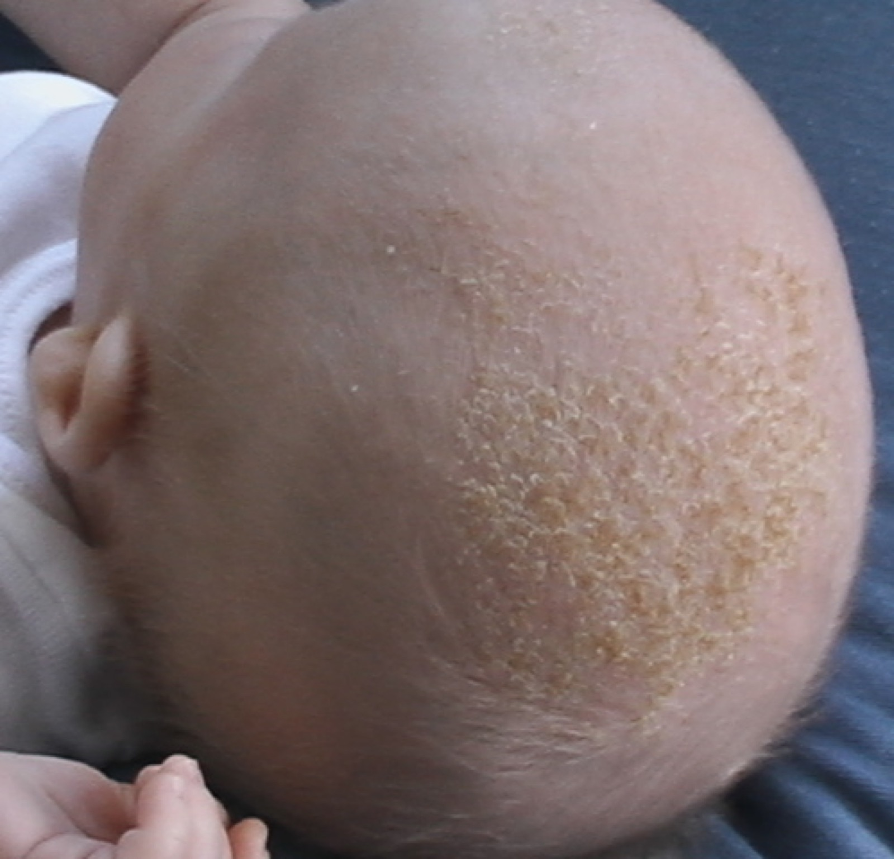
Go deeper: how to treat it, and when it is something else
Wash the scalp regularly with a mild baby shampoo. For stubborn scale, soften it first with a barrier-neutral oil or an emollient, then gently loosen it with a soft brush; do not pick the crusts, which can cause infection. NHS The NHS specifically says not to use olive oil or peanut oil for this; coconut, sunflower, or plain mineral oil are the gentler choices if you use an oil at all. For stubborn or inflamed cases a doctor might suggest an antifungal (ketoconazole) shampoo or a short course of mild hydrocortisone. good evidence
When it is not just cradle cap: scale that is very widespread, very inflamed, weeping, or persistent may actually be eczema or a fungal scalp infection, and that is worth a clinician's look rather than more brushing.
Teething: what it really does
Teething is real but modest. The evidence says it reliably causes sore, irritated gums, fussiness, drooling, and a wish to chew, plus possibly a slightly raised temperature and some disrupted sleep. It does not cause a true fever, significant diarrhea, vomiting, cough, congestion, or a rash. Massignan 2016 strong evidence The first tooth usually arrives around 6 months (anywhere from about 4 to 12+ months is normal), and the safe soothers are the simple ones.
Go deeper: the numbers, the temperature myth, and what actually soothes
What the evidence shows. The most-cited synthesis pooled 16 studies and 3,506 children: signs and symptoms occurred during eruption in roughly 70 to 80 percent of children, with gum irritation, irritability, and drooling the most common, and crucially, eruption was tied to a slight rise in temperature that was not a true fever. Massignan 2016 A newer 2025 meta-analysis of 25 studies put the global prevalence of any teething sign at about 80 percent, with increased biting the top local symptom (about 66 percent) and irritability the top general one (about 61 percent). Jhunjhunwala 2025 strong evidence The big limitation in this whole literature is that a 6-to-24-month-old is teething almost constantly and is in the peak window for first infections, so it is easy to misattribute a cold to the teeth.
Usually just teething
- Sore, swollen, irritated gums
- More drooling than usual
- Fussiness and wanting to chew or bite on things
- A slightly warmer temperature (below 38 C / 100.4 F)
- Somewhat disrupted sleep
Not teething, get it checked
- A true fever: 38 C (100.4 F) or higher Massignan 2016
- Significant or persistent diarrhea, or vomiting
- Cough, congestion, or a runny nose that seems like a cold
- A rash (other than mild drool rash on the chin)
- A baby who seems genuinely unwell, lethargic, or off their feeds
What turns it serious: treat any real fever or clear illness sign as illness on its own merits, never as a teething side effect. In a baby under about a month, a rectal temperature of 38 C (100.4 F) is an emergency regardless (see When to get help now).
What actually helps (and is safe). A clean, cool (refrigerated, not frozen-solid) teething ring; a cold, clean, damp washcloth to chew; or gentle gum massage with a clean finger. expert consensus If a baby is genuinely uncomfortable, weight-based infant acetaminophen (or ibuprofen over 6 months) is reasonable; dosing lives in Health. Avoid frozen-solid objects (they can damage gums) and never rub whiskey, brandy, or any alcohol on the gums, which is toxic to a baby.
Teething is real, but it is modest, and it is not a fever.
Three teething products to skip
Three categories of teething remedy carry real, documented harm and have all drawn FDA safety actions: benzocaine numbing gels, homeopathic teething tablets with belladonna, and amber (or other) teething necklaces. Skip all three. The safe tools (a chilled teething ring, a cold washcloth, a clean finger) work without the risk. FDA strong evidence
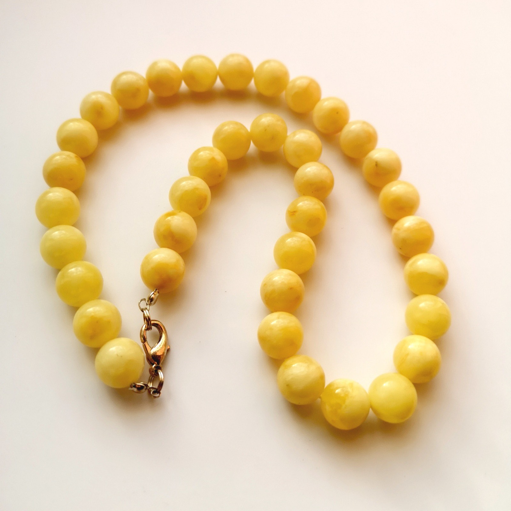
Go deeper: what the FDA found, product by product
Benzocaine gels (Orajel-type numbing gels): do not use under 2. In 2018 the FDA acted against over-the-counter benzocaine teething products for infants and young children, saying they "provide little to no benefit" for teething and can cause methemoglobinemia, a blood disorder in which the blood cannot carry oxygen, which can be life-threatening. FDA 2018 The agency tallied 119 cases of benzocaine-linked methemoglobinemia from 2009 to 2017, including 11 in children under 2 and four deaths (one an infant). strong evidence Infant benzocaine teething products were discontinued in 2018 (Orajel reformulated to be benzocaine-free). The same caution applies to viscous lidocaine, which the FDA warned against for infant teething in 2014.
Homeopathic teething tablets and gels (belladonna): do not use. Starting in 2016 the FDA warned consumers to stop using homeopathic teething tablets and gels after reports of seizures and other serious events, and lab testing in 2017 found inconsistent and sometimes dangerously high amounts of belladonna (deadly nightshade) in some products, leading to a recall. FDA 2016 The FDA's position is blunt: there is "no known safe dose" of belladonna in young children. strong evidence "Natural" and "homeopathic" labeling does not mean tested or safe.
Amber (and wood, marble, or silicone) teething necklaces and jewelry: do not use. In 2018 the FDA warned against teething jewelry worn by a child, citing risks of strangulation and choking, plus mouth injury and infection. FDA 2018 The communication cited real deaths, including an 18-month-old strangled by an amber necklace during a nap. strong evidence The claimed mechanism (body heat releasing pain-relieving "succinic acid" from amber) has no scientific support, and crucially, supervision does not remove the strangulation risk, because the danger is a cord around the neck during sleep. The Canadian Paediatric Society also discourages these products.
The first tooth and early oral care
As soon as the first tooth comes in, start brushing twice a day with a soft brush and a rice-grain-sized smear of fluoride toothpaste, moving up to a pea-sized amount at age 3. AAP HealthyChildren strong evidence No bottle in bed (or fill it with water only if you must), and plan a first dental visit by the first birthday or within 6 months of the first tooth. That is the whole early-oral-care routine.
Go deeper: the fluoride reversal, preventing cavities, and fluoride varnish
The rice-grain rule is the modern (2014) advice. The old guidance was no fluoride toothpaste until age 2 to 3; the AAP, ADA, and AAPD changed to a rice-grain fluoride smear from the first tooth because fluoride is the key cavity-preventer and a smear gives protection with minimal fluorosis risk. strong evidence Use a regular fluoride toothpaste (the international standard is at least 1,000 ppm fluoride, which most family toothpastes meet) rather than a non-fluoride "training" paste, which does little. Brush after breakfast and before bed, and supervise brushing until your child can do it well, usually around age 10. Wiping the gums with a clean damp cloth before any teeth come in is optional and traditional; it is harmless but not proven to prevent anything.
Preventing cavities (early childhood caries). The big lever is what pools around the teeth overnight: no bottle in bed at naptime or bedtime, and if a bottle is used to settle, fill it with water only. AAP Wean from the bottle around 12 months, and limit juice and sugary drinks. Try not to share spoons or "clean" a pacifier in your own mouth, which can pass cavity-causing bacteria to the baby. good evidence
The dentist and fluoride varnish. Plan the first dental visit by age 1 or within 6 months of the first tooth (AAP, AAPD, ADA agree). strong evidence A fluoride varnish painted on the teeth every 6 months from the time teeth appear is recommended for all young children, and it can be done in the pediatrician's office, not only at the dentist. The US Preventive Services Task Force gives this a Grade B recommendation (apply varnish to the primary teeth of all children from the age teeth erupt), reflecting moderate-certainty, moderate benefit. USPSTF 2021 If your tap water is low in fluoride, ask your doctor or dentist about a fluoride supplement; note the FDA in late 2025 narrowed prescription fluoride drops to children age 3 and up at high cavity risk, so the supplement question is best handled individually with your clinician. The community-water-fluoridation debate is a separate, larger topic (touched on under supplements and well-baby care).
Keeping the baby safe
the whole year
Here is the calming truth first: the things that hurt babies are few, knowable, and mostly prevented by a handful of cheap, boring, one-time actions, not by anxiety or by anything you buy. The whole safety economy will try to sell you expensive, recurring "peace of mind." The evidence says spend your attention instead on a short list, a correctly installed car seat, a flat firm sleep space, locking up a few specific objects, anchoring furniture, and never walking away from a baby on a high surface or near water. This section gives you that list, with the real numbers, and is honest about the two or three places where the experts genuinely disagree.
- What actually hurts babies, by age
- Car seats
- Hot cars (the no-crash killer)
- Choking and infant CPR (2025 update)
- Drowning
- Button batteries and magnets
- Furniture anchoring and home hazards
- Firearms in the home
- Babywearing safely (TICKS)
- Safety theater: what to skip
What actually hurts babies, by age (the injury cliff)
The single most useful idea in this whole section: the danger moves with your baby's stage. For a baby who cannot move yet, almost all injury death is suffocation in an unsafe sleep space. The week they learn to crawl and climb, the map redraws, and falls, drowning, poisoning, and furniture tip-over arrive. Aim your effort at your baby's actual stage, not at a generic fear.
Go deeper
In 2022, for babies under 1, the leading causes of death were congenital conditions (3,970), short gestation and low birth weight (2,884), SIDS (1,529), and then unintentional injury (1,354). Injury is fourth, and within that injury category suffocation is the overwhelming mechanism, about 85% (991 deaths), and most of those are in bed (sleep-related). That is the whole reason safe sleep is the first safety topic in this guide and not buried here. strong evidence CDC WISQARS 2022
Then the cliff. By ages 1 to 4, unintentional injury vaults from fourth to first (1,288 deaths, ahead of congenital conditions and cancer), and the mechanism inside "injury" flips as the child gets mobile. At age 1, transport (car crashes) is the leading injury mechanism at 33.7%, with drowning right behind at 31.9%. Drowning takes the top spot only at age 2 (39.0%), and transport leads again at ages 3 to 4. good evidence Borse 2017 (You will see the popular line that "drowning is the number one killer at ages 1 and 2." That is true for age 2; at age 1, transport is narrowly first. The practical lesson is the same: car seats and water both matter from the first birthday.)
So the safety plan changes shape over the year. For the first months: the car seat on every ride, and a flat firm bare sleep space (covered in the Sleep section). From the moment of mobility: water (bathtub, then pools), small swallowable objects, furniture that can tip, and falls. The rest of this section follows that order.
Only two baby buys are genuinely load-bearing for safety: a current car seat, and a flat, firm place to sleep. Almost everything else is optional.
Car seats: rear-facing as long as the seat allows
A correctly used car seat is one of only two pieces of baby gear that independent reviewers call genuinely load-bearing for safety (the other is a flat, firm sleep surface). Keep your baby rear-facing as long as the seat physically allows by height and weight, not to a fixed age. Position the chest clip at armpit level, pull the harness snug enough that you cannot pinch a fold of webbing, and never put a rear-facing seat in front of an active passenger airbag. Then get the install checked, because roughly 46% of seats are misused.
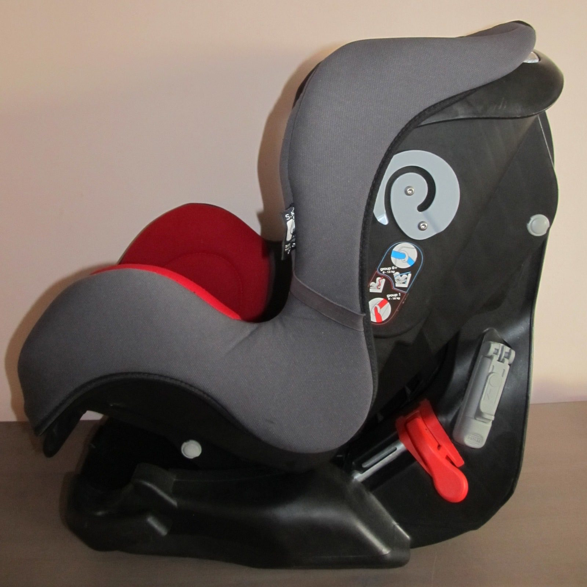
The stages, and the install details
The US bodies (AAP and NHTSA) agree on a four-stage, outgrow-then-advance ladder, where every transition is a small loss of protection you should delay as long as possible. good evidence AAP 2024
- Stage 1, rear-facing (from the first ride home). Rear-facing-only infant seats top out around 22 to 35 lb; a convertible buys extra rear-facing years (to about 40 to 50 lb). Harness slots at or below the shoulders, chest clip at the armpits, harness so snug you cannot pinch slack, recline set so the head does not flop forward.
- Stage 2, forward-facing with a 5-point harness and top tether (after outgrowing the convertible's rear-facing limit, at least to age 4). Harness slots now at or just above the shoulders. Always use the top tether: it limits how far the head flies forward in a crash, and it is widely skipped.
- Stage 3, belt-positioning booster (after the harness limit, used with the vehicle's lap-and-shoulder belt, never a lap belt alone), typically until about 4 feet 9 inches and age 8 to 12.
- Stage 4, the seat belt alone, then the front seat. The belt fits when the shoulder belt crosses the chest (not the neck), the lap belt sits low on the thighs (not the belly), the child sits all the way back, knees bend at the seat edge, and they can hold it the whole trip. All children under 13 ride in the back seat. strong evidence
The airbag rule is the one not to skip: never place a rear-facing seat in front of an active front passenger airbag, because a deploying airbag strikes the back of the rear-facing shell at the baby's head. strong evidence NHTSA
The most-missed install detail after the tether: the LATCH lower-anchor weight limit. Stop using the lower anchors once the combined weight of the child plus the seat reaches 65 lb, and switch to installing with the vehicle seat belt (keep using the top tether, which has no such limit). A belt install is just as safe as LATCH when done correctly; LATCH is not inherently safer. good evidence NHTSA
A few more that earn their place: take a puffy winter coat off before buckling (it compresses in a crash and leaves the harness loose), then lay the coat or a blanket over the buckled child. Most seats expire 6 to 10 years from the date of manufacture (molded into the shell). Avoid secondhand seats unless you know the full history. And use only the inserts and accessories that came in the box, because aftermarket strap covers, head positioners, and chest-clip "guards" are not crash-tested with the seat. mechanistic
How much safer is rear-facing, and should you follow the law or best practice?
One camp (the original AAP line): rear-facing is dramatically safer, often quoted as "about 5 times safer" for ages 1 to 2, which the AAP used to add a "rear-facing to age 2" line and many US states wrote into law.
The other (the statistical critique): that exact "5x" magnitude is unreliable. The 2007 study it came from was retracted in 2017 after a survey-weighting error inflated its significance, and the corrected reanalysis concluded US crash data alone cannot pin down how big the toddler-age benefit is. One adversarial reanalysis even pointed the other way for that age band.
Where the evidence sits (dated): the direction is not in dispute (the physics is sound: a young child's spinal column can stretch about 2 inches in a frontal crash but the spinal cord inside only about a quarter inch, and rear-facing cradles the head and neck). The corrected 2017 paper says plainly "there is no evidence that current recommendations are harmful," and recommendations did not change. The strongest real-world data are Swedish: where extended rear-facing is the norm, field studies show roughly a 90% injury reduction, and a 2025 review of every fatal Swedish child crash found 12 of 20 (about 60%) forward-facing under-4 deaths were potentially survivable rear-facing. strong evidence on the retraction Injury Prevention 2017 Henary 2007 (retracted)
A reasonable default: keep your child rear-facing as long as the seat allows, because the direction is settled and the physics is sound. Just stop quoting the retracted "5x to age 2" number. And treat the law as a floor, not a goal: best practice exceeds the legal minimum almost everywhere.
How other countries do it
The legal minimum lags best practice nearly everywhere, and the US is actually less prescriptive on rear-facing than Europe. The US has no national rear-facing age in its guidance (states vary, some still allow forward-facing at age 1). Europe's R129 ("i-Size") hard-codes a 15-month legal floor before forward-facing, stricter than several US states but looser than US best practice. Australia is the outlier with an explicit 6-month minimum rear-facing law. Canada provinces commonly require rear-facing to about age 1, while the Canadian Paediatric Society recommends to at least age 2. Sweden has no uniquely stricter law than the EU, but culture and infrastructure push rear-facing to about age 4 (roughly 84% of under-4s ride rear-facing, versus about 22% of UK 2-to-3-year-olds). Booster end-points are baked into law more firmly in Canada and Australia (145 cm) and the UK (135 cm or age 12). statute gov.uk CPS
Hot cars: the killer with no crash
This is the deadliest car-related risk that involves no collision at all, and the rear-facing seat (baby out of the driver's sightline, facing backward) is part of the mechanism. A parked car gains about 19 F in 10 minutes and about 40 F in an hour even on a mild 72 F day, and cracking the windows does essentially nothing. Never leave a child in a parked car, not even "for a minute," and never assume it could not be you.
The numbers and what actually prevents it
The canonical heating study (a dark sedan in full sun) found the cabin rose about 3.2 F every 5 minutes, with 80% of the total rise happening in the first 30 minutes, an average 40 F gain (range 28 to 49 F) across starting temperatures of 72 to 96 F, and an interior reaching 117 F even at a 72 F start. Cracking the windows 1.5 inches did not change the rate or the peak. Children overheat faster than adults (immature thermoregulation, more surface area per pound), and heat stroke is core temperature above 104 F. good evidence McLaren 2005
The national death series (a media-based count, the best available) records 1,047 US child vehicular-heatstroke deaths since 1998, averaging about 37 to 38 a year (the 2018 peak was 53). About 54% are children under 2. The circumstances split: forgotten by a caregiver 52.9%, the child got into the car on their own 23.8%, knowingly left 21.9%. strong evidence noheatstroke.org 2026
What works is "Look Before You Lock," built around the forgetting mechanism: put something you cannot leave without (phone, bag, left shoe, work badge) in the back seat next to the baby, so you must open the rear door. Keep a stuffed animal in the empty seat and move it to the front when the baby is in back, as a visual cue. Lock the car and keep keys away from children so they cannot climb in (about 1 in 4 deaths). Arrange for childcare to call you if the baby does not arrive. mechanistic
On technology, be clear-eyed: as of 2026 there is no child-detection mandate in effect. A federal rule for rear seat-belt reminders is phasing in (front by Sept 2026, rear by Sept 2027), but a seat-belt reminder is not a child-presence detector and a harnessed baby would not trigger it. The HOT CARS Act child-reminder rule that parents imagine is overdue and not yet issued. Do not rely on a car to catch this for you. good evidence NHTSA 2025
Choking and infant CPR (the 2025 update)
For a choking baby under 1, the sequence is 5 back blows then 5 chest thrusts, repeated, never abdominal thrusts (the Heimlich) on an infant. First, learn the difference between gagging (noisy, normal, leave it alone) and choking (silent or a weak cough, cannot breathe, maybe turning blue), because intervening on a gagging baby can turn it into a real problem. The October 2025 AHA/AAP guideline changed two things worth re-learning if you trained earlier.
Usually just gagging (do not intervene)
- The baby is coughing, sputtering, or retching, sometimes going briefly red, especially while learning to eat solids
- They are making noise, which means air is moving
- A forceful cough is the most effective thing there is; let them work the food forward
True choking (start the 5-and-5)
- Silence, or a weak and ineffective cough
- Cannot cry, cough, or breathe; may turn blue
- This is when 5 back blows alternating with 5 chest thrusts begins, until the object comes out or the baby goes limp
The exact steps, and what changed in 2025
For a choking infant under 1, the verbatim recommendation is "repeated cycles of 5 back blows alternating with 5 chest thrusts ... Abdominal thrusts are not recommended in infants." strong evidence AHA/AAP 2025 Step by step:
- Hold the baby face-down along your forearm, head lower than the chest, supporting the jaw, forearm braced on your thigh.
- Give 5 back blows between the shoulder blades with the heel of your hand.
- Turn the baby face-up (head still lower than the chest). Give 5 chest thrusts on the lower half of the breastbone, just below the nipple line, about 1.5 inches deep.
- Repeat the cycles until the object comes out or the baby becomes unresponsive (then begin CPR).
Two things changed in October 2025, worth re-learning if your class predates it:
- Infant CPR hand placement. The old "two fingers" technique for a single rescuer was eliminated "due to ineffectiveness in achieving proper depth." Use the heel of one hand (single rescuer) or the two-thumb encircling-hands technique (two rescuers). This is the single most important unlearn. strong evidence
- Older children and adults. For a choking child 1 or older (and adults), the guideline now adds 5 back blows before the abdominal thrusts, alternating 5 and 5. If you were taught "just do the Heimlich," that is now incomplete. (Infants still never get abdominal thrusts.) strong evidence
The rest of the infant-CPR mechanics carried over unchanged: compress about 1.5 inches deep (at least one-third the chest depth), at 100 to 120 per minute, with a ratio of 30 compressions to 2 breaths for a single rescuer (15:2 with two rescuers). Cover the baby's mouth and nose with your mouth, breaths just big enough to make the chest rise, head in a neutral "sniffing" position (do not over-extend an infant's neck). The strongest version of this is a hands-on infant-CPR class; reading is not a substitute. strong evidence AHA 2025
Drowning
Drowning is silent and fast, and a baby can drown in as little as 1 to 2 inches of water. The hazard moves with the stage: for a baby under 1 the bathtub is overwhelmingly the place of risk (about 75% of infant drownings), and pools become the dominant danger only once the child is mobile. The non-negotiable rule for a baby in water is touch supervision, an adult within arm's reach, with no phone and no stepping away, not even for a second.
Where babies drown, and the layers that work
By age: under 1, bathtubs are 75% of drownings (buckets and other containers next); at ages 1 to 4, swimming pools are 59%; teenagers drown mostly in natural water. strong evidence CDC 2018 to 2019 A CPSC study of in-home drownings under 5 found 82% of victims were under age 2 and 81% involved bathtubs or bath products; in many cases a caregiver had stepped away to answer the door or phone, or left the baby with an older child. good evidence
The 5-gallon bucket is a specific deadly trap: a top-heavy baby falls in head-first, the straight-sided bucket is too stable to tip, and the baby cannot push back out. The same "inch or two of water" fact covers buckets, toilets (use lid locks), mop buckets, coolers of melted ice, and wading pools (empty and store after each use). mechanistic
Because there is no fence for a bathtub, supervision is the intervention for the infant stage. A bath seat or bath ring is a bathing aid, not a safety device, and is actually implicated in drownings precisely because it tempts a caregiver to step away (the CPSC linked at least 45 infant deaths to bath seats, more than 90% left unattended). Never leave a baby in a bath seat alone. good evidence CPSC 2012
For pools, the AAP frames prevention as multiple layers, "because it is unlikely that any single strategy will prevent drowning," in this order of leverage: (1) four-sided isolation fencing that separates the pool from the house on all four sides, at least 4 feet high, with a self-closing, self-latching gate, the single best-evidenced intervention; (2) constant touch supervision (rotate a designated "water watcher" every 15 to 20 minutes); (3) CPR training; (4) swim lessons once the child is developmentally ready; (5) covers and alarms as weak supplements. The fencing evidence is the strongest in the whole drowning literature, though honestly dated: a Cochrane review found fenced-versus-unfenced pools cut drowning about 73% (odds ratio 0.27), and four-sided isolation fencing beat three-sided "perimeter" fencing by about 83% more (odds ratio 0.17), all from three small, old case-control studies, so the direction is robust but the exact magnitude is soft. strong direction Cochrane 2006
On floats: the AAP and CDC are blunt that air-filled or foam toys, water wings, and floaties "are not safety devices" and "do not prevent drowning," and they create false security. For boats and natural water, use only a US-Coast-Guard-approved life jacket, sized by the child's weight, worn snug with all straps fastened; an infant jacket should have a head-support collar and a crotch strap. The fit check: lift the child by the shoulders of the jacket, and if it slides up past the chin or ears, it is too big. strong evidence AAP 2022
On swim lessons: the AAP says formal lessons can begin after the first birthday depending on readiness and may reduce drowning risk in 1-to-4-year-olds, but no lesson is "drown-proofing," and lessons for babies under 1 (the "self-rescue"/ISR float-and-roll style marketed from about 6 months) are not recommended, with concerns about stress and water-ingestion hyponatremia. Lessons are one layer, never a substitute for supervision and barriers. good evidence AAP 2026
Button batteries and high-powered magnets
These are the two "remove from the house now" objects. A swallowed lithium coin-cell battery is not a choking object, it is a chemical burn: it can begin destroying the esophagus in as little as 2 hours, often with only vague symptoms. High-powered magnets, if two or more are swallowed, snap together across loops of bowel and bore a hole through. Both are medical emergencies, and both are largely preventable by keeping the objects out of reach.
The first-aid script and where these hide
Button batteries. A lodged 20 mm lithium coin cell (the CR2032 type in remotes, key fobs, scales, thermometers, flameless candles, light-up cards, and toys) generates hydroxide at the negative pole and drives local tissue pH to roughly 12 to 13, an alkaline burn. Serious injury can start in about 2 hours, and the symptoms (poor appetite, drooling, cough, vomiting, fever) mimic a common cold, and the swallow is often unwitnessed, which is what makes it so dangerous. More than 70,000 US cases were reported to poison centers from 2000 to 2020, with serious injuries up more than fivefold. strong evidence ACEP 2025
The first-aid script, while racing to the ER: do not induce vomiting, and give nothing by mouth except honey per the protocol. Give honey only if all three are true: the child is 12 months or older, a coin cell may have been swallowed, and it was within the last 12 hours. Dose: 10 mL (2 teaspoons) every 10 minutes, up to 6 doses. Honey coats the cell and locally slows the burn; it is not a substitute for removal. Do not give honey to a baby under 12 months, because of the infant-botulism risk that keeps honey out of the infant diet generally; for an under-1, skip the honey and do everything else (the hospital can use sucralfate instead, which has no age limit). strong on the cutoff protocol NCPC
Is the honey advice solid, or thin?
For it (the poison-control bodies): give honey en route for a child 12 months or older within 12 hours; it measurably neutralizes the local pH change and buys time against the burn, with minimal downside.
The caution (held by the same bodies): it only buys time, must never delay imaging and removal, is contraindicated under 12 months, and the evidence base is small (animal models plus one human series of 8 patients).
Where the evidence sits (dated): a 2023 systematic review found just four supporting studies, but in a piglet model honey and sucralfate both reduced ulcer depth and prevented perforation while saline perforated half the time. The 12-hour window is grounded in perforation timing (only about 2% of perforations happen within 24 hours). underlying evidence Frontiers 2023
A reasonable default: the disagreement is only about evidence strength and the infant cutoff, never about whether to remove the battery. Give honey for a child 12 months or older, give no honey under 12 months, and in every case the ER and removal are the actual treatment.
High-powered magnets. If a child swallows two or more rare-earth (neodymium) magnets, or one magnet plus another metal object, they attract across the walls of the gut, pinching the bowel between them and causing pressure necrosis, perforation, and sepsis. A single magnet usually passes; the danger is multiples (magnet sets, desk-toy balls and cubes). The CPSC estimates about 2,400 magnet ingestions are treated in US ERs each year. The regulatory history is itself the argument: a 2020 study found ER visits fell while a CPSC restriction was in force (2013 to 2016) and rose after a court vacated it, with under-5s at the highest rate. A new 2022 standard exists, but non-compliant magnet sets keep reappearing on online marketplaces. strong evidence JAMA 2020 Bottom line: high-powered magnet sets do not belong in any home with young children (or with older siblings whose toys reach the baby).
Reese's Law (2022) now requires child-resistant battery compartments and warnings on products using coin cells, but the practical rule is yours: tape over any unsecured compartment, keep loose and spent batteries locked away (a "dead" battery can still burn), and recycle promptly. statutory Poison Control
Furniture anchoring and the boring high-leverage home list
Most home hazards are killed or neutered by a handful of cheap, one-time actions. The headline one: anchor every dresser, bookcase, and TV to the wall, because a toddler who climbs a stack of open, loaded drawers can pull a dresser down on themselves. About 55% of furniture tip-over deaths are children ages 1 to 3, so the danger arrives the week your baby starts climbing, not at birth.
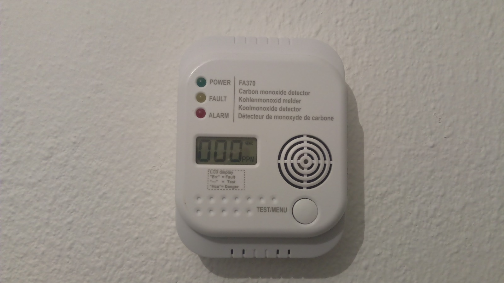
The one-time actions worth doing
- Anchor furniture and TVs to a wall stud. Use an anti-tip kit; the wall screw must go into a stud (drywall alone fails the load), and the furniture screw must bite solid wood, not particle board. Mount flat TVs or put them on a low anchored base, never on a dresser. Keep tempting climbables (toys, remotes) off the tops. Note the standard a "compliant" dresser meets only partly models a child climbing loaded open drawers, so do not trust the label, anchor it. good evidence on the toll CPSC 2024
- Set the water heater to 120 F (49 C). At 140 F a child can suffer a deep scald in about 2 seconds; at 120 F there is a margin of about 5 minutes, and children burn faster than adults at any temperature. Hand-test bath water (aim about 100 F), and never hold a baby and a hot drink at once. consensus CPSC
- Go cordless on window blinds in any room the baby sleeps or plays, because looped cords strangle (about 9 young children a year). Modern stock blinds are largely cordless; older homes, grandparents' houses, and rentals are where corded blinds hide. Keep cribs away from windows and cords. good evidence CPSC
- Window stops or guards, with a fire-egress release. Insect screens do not stop falls. A fall-prevention device limits the opening to under 4 inches but must have a quick-release the adults know how to operate on any bedroom egress window. good evidence CPSC
- Hardware-mount the gate at the top of stairs (screwed into studs or the banister); a pressure-mounted gate is only safe at the bottom or in a doorway, because it can pop out under a child's lean and send them down the stairs. Never use an old V-shaped accordion gate (a head-entrapment hazard, off the market since 1985, but still turning up secondhand). standard location rule CPSC 2019
- Never step away from a baby on a changing table, even with the strap on and even before they can roll. Keep one hand on the baby and all supplies within reach. The zero-risk option, worth offering without apology, is to change the baby on a pad on the floor; a baby cannot fall off the floor. mechanistic AAP/Pathways
- A carbon monoxide alarm on every level, outside each sleeping area (height does not matter for CO, it mixes with air), replaced at its 10-year end-of-life. CO is colorless and odorless and a baby cannot report the early symptoms. Never run a generator indoors or in a garage, even with doors and windows open (it can kill in minutes); run it outside only, at least 20 feet from the house. good evidence CPSC 2022
- Interconnected, sealed 10-year smoke alarms inside every bedroom, outside each sleeping area, and on every level, with a rehearsed escape plan that assigns a specific adult to wake and carry the baby (a baby cannot self-rescue). Three-quarters of fatal-fire alarm failures are battery problems a sealed unit eliminates. good evidence USFA
- Screen for lead if you live in or visit a pre-1978 home: control paint dust, run tap cold for formula water, and ask for a lead risk assessment at the 1-year and 2-year visits (Medicaid covers a blood test at 12 and 24 months). There is no safe blood lead level, and the brain effects are not reversible, so prevention beats treatment. no safe level CDC 2021
Firearms in the home
This belongs in a baby guide because firearm injury in the very youngest children is almost entirely a storage story, and the storage decisions are made by the adults who bring a baby home. If there is a gun in the home, store it locked and unloaded, with the ammunition locked separately. That is one of the most uniform recommendations in all of pediatric safety, and it is neutral safety counseling, not a political position.
The evidence and the storage rule
The under-5 picture is a stored-gun picture. Of unintentional firearm deaths in children 0 to 5, the gun was most often retrieved from a nightstand or bed (34%), the shooting was most often self-inflicted (58%) with the shooter's own parent's gun (60%), and the circumstance was usually a child playing with the gun (67%) or mistaking it for a toy (28%). So the dangerous object is not "a gun," it is a loaded gun within a toddler's reach, most often on a nightstand. good evidence NVDRS review 2025
The storage evidence: the landmark case-control study found each of four practices independently protective (gun locked, gun unloaded, ammunition locked, ammunition stored separately), and combining them matters most. Households that locked both the gun and the ammunition (versus neither) had about an 85% lower risk of unintentional firearm injury and about 78% lower risk of self-inflicted injury in youth. Use that combined phrasing; do not attribute 85% to a single lock. good evidence Grossman 2005 A quick-access lock box reconciles fast self-defense access with not being toddler-accessible.
It is also an other-homes problem: more than a third of unintentional child shootings happen at the home of a friend, neighbor, or relative, which makes grandparents worth naming, since older gun owners more often keep a loaded handgun accessible and may not have childproofed since their own kids grew up. The "ASK" campaign normalizes one question before a playdate or a sleepover, "Is there an unlocked gun in your house?", framed like asking about a pool or a peanut allergy. Most parents, including gun owners, report being comfortable being asked. survey-derived AAP
Babywearing safely (the TICKS rule)
A carrier is wonderful and, used right, is safe. The one thing that has actually killed babies in carriers is suffocation, silent and within minutes, so the whole safety logic is about keeping the airway open. Memorize TICKS: Tight, In view at all times, Close enough to kiss, Keep chin off the chest, Supported back. Treat a sleeping baby in a sling as a face you must keep watching, not a place to let a newborn nap unmonitored.
The two suffocation mechanisms, and the high-risk babies
There are two silent, fall-free ways a carrier can suffocate a baby, both well described by the CPSC and AAP. First, direct airway covering: carried low and deep with the face turned in, the fabric or the wearer's body presses against the nose and mouth. Second, positional asphyxia: a sling that curls the baby into a tight C forces the chin onto the chest and kinks the soft, narrow infant airway. In the first months, a baby's neck is too weak to lift a flopped head off a closed airway, and the baby cannot cry or signal. strong, mechanistic AAP 2025
The TICKS points operationalize exactly that: Tight (slack lets the baby slump and the airway close), In view (you should see the face by glancing down, without opening the fabric, and in a cradle position the face is up, not turned into your body), Close enough to kiss (head near your chin), Keep chin off the chest (always a finger-width of space under the chin), Supported back (held close so the back keeps its natural curve and does not slump). good evidence UK Sling Consortium 2010
The high-risk babies who need extra caution, per the CPSC: infants under 4 months, premature or low-birth-weight babies, and any baby with a cold or respiratory problem (talk to your pediatrician about carrier use for these). And a carrier is not a sleep surface and does not exempt you from any other rule: if the baby falls asleep, re-check the airway position continuously, and do not cook over a hot stove, drink hot liquids, or bend sharply with a baby worn loose. The deaths happened while the wearer was awake but distracted. strong evidence CPSC 2010
One non-airway bonus: for healthy hips, carry the baby in the "M" or spread-squat position (thighs supported, hips and knees bent, knees roughly level with the bottom) rather than legs dangling straight down for long stretches, and prefer inward-facing for the first six months. Brief forward-facing or a narrow carrier is not a hip emergency; it is sustained positioning over the early months that matters. good evidence IHDI
Safety theater: what to skip (evidence-graded)
A whole industry sells expensive products as safety devices that the evidence does not support, and some are actively hazardous. Independent reviewers find only two baby buys are genuinely load-bearing for safety: a current-standard car seat and a flat, firm sleep surface. A tired parent never has to buy their way to a safe baby. Here is what to skip, with a grade for each.
The graded skip list
- Consumer pulse-ox / heart-rate sock monitors (Owlet-type) for a healthy baby. No device is FDA-authorized to prevent SIDS, and the AAP says do not use home cardiorespiratory monitors to reduce SIDS risk. Consumer accuracy has been poor in testing (one popular sock missed low oxygen entirely; another missed slow heart rate entirely), and false alarms drive anxiety, unnecessary ER visits, and a false reassurance that erodes the actually-protective safe-sleep habits. strong evidence against the SIDS claim FDA (A prescription monitor for a medically fragile baby under a doctor's direction is a different, legitimate thing.)
- Sleep positioners, wedges, and "anti-roll" nests. Not just useless but a hazard: FDA and CPSC classify them as "never-use" products after infant deaths, and they violate the firm, flat, bare sleep surface rule. No wedge for reflux, either. strong evidence (hazard)
- Crib bumpers, padded or "breathable" mesh. Padded bumpers are federally banned in the US; the AAP recommends a bare crib with no bumpers of any kind. strong evidence
- Inclined sleepers (the Rock 'n Play and its kind). Federally banned after dozens of deaths; an inclined sleep surface is contraindicated. Watch for these on resale sites under disguised names. strong evidence
- Weighted swaddles, sacks, and blankets. The AAP advises against them (reductions in oxygen saturation), and major retailers pulled them in 2024. good evidence
- Bath seats and bath rings sold as safety. A bathing aid that tempts you to step away, implicated in drownings; never a substitute for hands-on supervision. good evidence
- Baby knee pads for crawling. No safety need; at most a comfort item on rough floors. no safety evidence
- Corner and edge guards. More nuanced: no outcome trial, but the mechanism (cushioning a genuinely sharp glass or stone edge at toddler-head height) is sound and the cost is low. Use selectively on truly sharp edges; do not over-invest, and rank it far below anchoring, water temperature, and gates. mechanistic, no trial
The contrast worth keeping in mind: the boring, mostly cheap, mostly one-time actions in the anchoring list above (anchor furniture, 120 F water, cordless blinds, window stops, hardware-mounted stair gate, CO and smoke alarms, button-battery and magnet removal, lead control) are where the real safety lives. And one recall habit: register the juvenile products you buy (cribs, car seats, strollers) so a recall reaches you, subscribe to CPSC alerts, and never accept a hand-me-down crib made before June 2011, any inclined sleeper, or any crib bumper, because recalled and non-compliant items persist on resale sites. good evidence CPSC
Immunization
the whole year
Childhood vaccines are the single best-studied thing you will ever do to your baby, and they are one of the few interventions in this whole guide with a benefit measured in the millions of lives. The shots prevent diseases that used to kill or disable children routinely, the schedule is built around when a baby's immune system can respond and when each disease is most dangerous, and the rare side effects are small, mostly minor, and were found by the very safety systems that watch for them. This section walks through what is on the schedule and why, the handful of real risks named honestly, the settled science that MMR does not cause autism, how to make the shots hurt less, and how to read the unusual moment US vaccine policy is in right now.
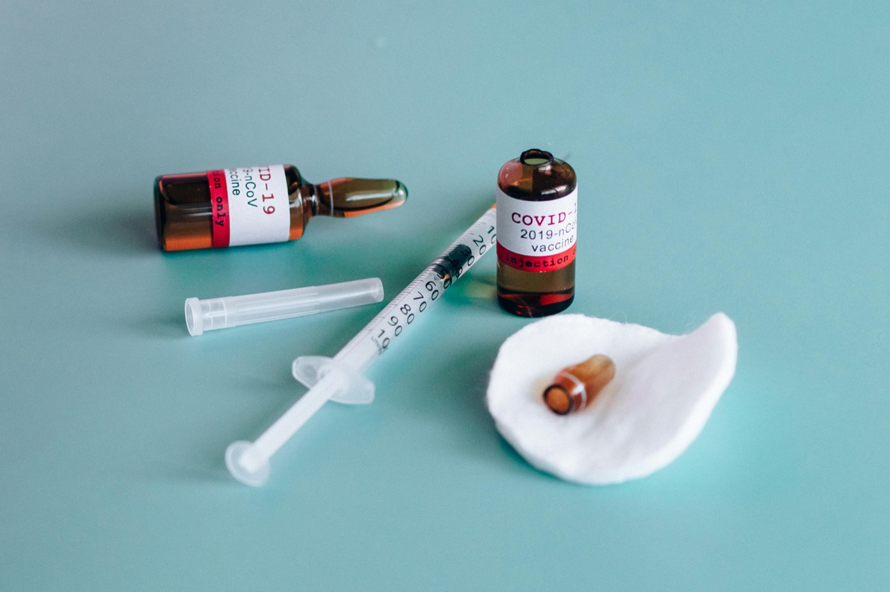
- Why vaccines, and the one number that frames everything
- The schedule and what each shot prevents
- Your baby's schedule (a tool)
- The real risks, named honestly
- MMR and autism: the settled science
- "Too many too soon" and combination shots
- What to expect after a shot, and what to call about
- Making the shots hurt less
- RSV protection: the confusing new one
- Cost, records, and special situations
- The 2025 to 2026 US shake-up, in plain terms
Why vaccines, and the one number that frames everything
Over the 50 years of the global immunization program (1974 to 2024), vaccines are estimated to have prevented about 154 million deaths, 101 million of them in babies under one year old, with the measles vaccine alone accounting for roughly 94 million. Vaccination is credited with about 40 percent of the entire global decline in infant mortality. strong evidence WHO 2024 Lancet 2024
The clearest way to see what vaccines did is to compare the worst pre-vaccine years against recent ones, in the United States. These are not modeled estimates, they are counted cases. strong evidence CDC MMWR 1999
The evidence: what each disease used to do
| Disease | Pre-vaccine baseline (US cases/year) | 1998 | Drop |
|---|---|---|---|
| Measles | 503,282 | 89 | ~100% |
| Diphtheria | 175,885 | 1 | ~100% |
| Whooping cough (pertussis) | 147,271 | 6,279 | 95.7% |
| Mumps | 152,209 | 606 | 99.6% |
| Rubella | 47,745 | 345 | 99.3% |
| Congenital rubella syndrome | 823 | 5 | 99.4% |
| Paralytic polio | 16,316 | 0 | 100% |
| Haemophilus influenzae b (under 5) | 20,000 | 54 | 99.7% |
| Tetanus | 1,314 | 34 | 97.4% |
| Smallpox | 48,164 | 0 | 100% |
A few of these deserve a sentence of their own, because the abstraction "503,282 cases" hides the human cost.
Measles infected an estimated 3 to 4 million Americans a year before the vaccine (only about 500,000 were reported), killing 400 to 500, hospitalizing 48,000, and causing about 1,000 cases of brain inflammation annually. It is the most contagious disease on the list and the first to return when coverage falls (more on that below). CDC
Hib (Haemophilus influenzae type b) was the leading cause of bacterial meningitis in young children, striking about 1 in 200 children before age 5; the vaccine cut invasive disease by more than 99 percent. CDC / PMC8482018
Rotavirus hospitalized 55,000 to 70,000 US children under 5 every year (nearly every child caught it by age 5); the vaccine has cut severe rotavirus hospitalizations dramatically. CDC
Pneumococcal disease (meningitis, blood infection, pneumonia, ear infections): the conjugate vaccines cut invasive disease in children 91 percent (from 15,707 cases in 1997 to 1,382 in 2019) and prevented an estimated 2,780 deaths and tens of millions of ear-infection visits over 20 years. EID 2021
Chickenpox (varicella) caused about 4 million US cases, 10,500 to 13,500 hospitalizations, and 100 to 150 deaths a year before the vaccine; since then cases have fallen more than 97 percent, hospitalizations about 90 percent, and deaths about 89 percent. CDC
Hepatitis B is the reason for the day-one shot: a baby who catches it around birth has about a 90 percent chance of becoming a lifelong carrier (versus under 5 percent for an infected adult), and about a quarter of lifelong carriers die of liver disease. The full vaccine series is over 95 percent protective. CDC
The schedule and what each shot prevents
In the US, the bulk of infant vaccines arrive at the 2-, 4-, and 6-month visits, with a hepatitis B shot at birth and the live vaccines (measles-mumps-rubella and chickenpox) held until 12 to 15 months, when they work best. The same core diseases are covered everywhere in the wealthy world; what differs between countries is the exact timing, the brand of combination shot, and a few policy choices, none of which is a disagreement about whether the vaccines work. strong evidence CDC 2025 AAP 2026
The cross-country grid: same diseases, different timing
This is the routine infant schedule in five reference programs, read from the official 2025 to 2026 sources. The US "front-loads" the series; the UK runs a tidy 3-visit primary course; Canada has no single national schedule (each province sets its own), so two provincial examples are shown. None of these is more or less "complete" in what it protects against; they are local answers to local disease patterns and logistics. CDC 2025 GOV.UK 2026 WHO Australia NIP 2026
| Protects against | US (CDC/AAP) | UK (from 2026) | Canada (varies by province) | Australia | WHO reference |
|---|---|---|---|---|---|
| Hepatitis B | Birth, 1 to 2 mo, 6 to 18 mo | In 6-in-1 at 8, 12, 16 wk (birth dose only if at risk) | Birth or infancy (BC); grade 7 in Ontario | Birth, 2, 4, 6 mo | Birth dose, then 2 to 3 more |
| Diphtheria, tetanus, pertussis (DTaP) | 2, 4, 6 mo; 15 to 18 mo | 8, 12, 16 wk (+18 mo) | 2, 4, 6, 18 mo | 2, 4, 6, 18 mo | From 6 wk x3 + boosters |
| Polio (IPV) | 2, 4 mo; 6 to 18 mo | 8, 12, 16 wk (+18 mo) | 2, 4, 6, 18 mo | 2, 4, 6 mo | From 8 wk |
| Hib (meningitis) | 2, 4 mo; 12 to 15 mo | 8, 12, 16 wk (+18 mo) | 2, 4, 6, 18 mo | 2, 4, 6 mo; 18 mo | From 6 wk x3 |
| Pneumococcal (PCV) | 2, 4, 6 mo; 12 to 15 mo | 16 wk; 12 mo | 2, 4, 12 mo | 6 wk, 4 mo, 12 mo | From 6 wk |
| Rotavirus (oral) | 2, 4 mo (or 2, 4, 6 mo) | 8, 12 wk | 2, 4 mo (or +6 mo) | 2, 4 mo | From 6 wk |
| Meningococcal B | Not routine in infancy | 8, 12 wk; 12 mo | High-risk only | 2, 4, 12 mo | High-risk only |
| Measles, mumps, rubella (MMR) | 12 to 15 mo; 4 to 6 y | 12 mo, 18 mo (as MMRV) | 12 mo; 4 to 6 y | 12 mo; 18 mo (as MMRV) | 9 or 12 mo, 2 doses |
| Chickenpox (varicella) | 12 to 15 mo; 4 to 6 y | With MMR as MMRV | 12 to 15 mo; 4 to 6 y | 18 mo (as MMRV) | 12 to 18 mo |
| Hepatitis A | 12 to 23 mo | Not routine | Not routine (some Indigenous programs) | Indigenous children in some areas | Endemicity-dependent |
| Influenza | 6 mo+, yearly | From 2 to 3 y (earlier if high-risk) | 6 mo+, yearly | 6 mo+, yearly | 6 mo+, yearly |
A few reading notes. The combination shots collapse what used to be up to 12 separate injections (across six diseases) into 4 doses, which is why the "6-in-1" exists. Trade names differ (the US uses Vaxelis, Pediarix, or Pentacel; the UK uses Infanrix hexa or Vaxelis), but they protect against the same things. The pneumococcal vaccine comes in different "valencies" (the US uses PCV15 or PCV20, the UK PCV13, Australia PCV20); a higher number covers a few more strains, but all are protective. CDC 2025
As of June 2026, the live CDC schedule is the version restored by a March 2026 court order (see the last subsection). The UK, WHO, Canada, and Australia schedules are stable as described; the UK figures reflect its January 2026 changes. Re-check the linked sources for your country at the time you read this.
Your baby's schedule (a tool)
Enter your baby's birth date and country below to see roughly when each routine dose is due. This is a planning aid, not medical advice; your clinic's schedule is the one to follow, especially right now in the US.
The real risks, named honestly
Vaccines are not risk-free, and you deserve the real numbers rather than either "perfectly safe" or scary anecdotes. The honest version is that serious reactions are rare, almost always recoverable, and (this is the important part) they were FOUND by the safety systems that exist to catch them. There are three risks worth naming with actual figures: a small intussusception risk from rotavirus vaccine, slightly more febrile seizures from one combination shot, and very rare allergic reactions. strong evidence
The evidence: how each risk was found, and how big it is
How the watching works. Before any vaccine is licensed it goes through randomized trials (the current rotavirus vaccines were each tested in about 60,000 to 70,000 infants). After licensing, three kinds of system keep watching. VAERS lets anyone (a parent, a doctor) file a report; a report does not mean the vaccine caused the event, it just raises a flag, an early smoke detector. The Vaccine Safety Datalink then checks those flags against millions of real records WITH a comparison group, so it can actually measure whether a risk is real. The UK runs the equivalent Yellow Card scheme. Every named risk below was caught and confirmed by exactly this process, which is the strongest evidence the system works. CDC
Rotavirus and intussusception (the model trust story). An earlier rotavirus vaccine, RotaShield, was licensed in 1998. Within about a year, VAERS reports of a bowel blockage called intussusception (about 1 case per 5,000 to 10,000 babies, clustered after the first dose) triggered its suspension, and it was withdrawn in 1999. The current vaccines (RotaTeq and Rotarix) were therefore tested in tens of thousands of infants first, and post-licensure surveillance found a much SMALLER residual risk that was kept on purpose because the benefit dwarfs it: roughly 1 to 6 extra cases per 100,000 vaccinated babies, mostly in the week after the first dose, against tens of thousands of hospitalizations prevented (a global benefit-to-harm ratio around 165 to 1). For context, intussusception happens to about 1 to 4 per 1,000 babies anyway, with no vaccine involved. strong evidence WHO GACVS PMC5716463 This is also why there are hard age cut-offs on rotavirus doses (the risk concentrates with older first doses), so a late start is not allowed.
MMRV and febrile seizures. The 4-in-1 shot that combines measles, mumps, rubella, and chickenpox (MMRV) causes about one extra febrile seizure for every 2,300 to 2,800 first doses in 12-to-23-month-olds, compared with giving MMR and chickenpox as two separate shots at the same visit. The seizures happen 7 to 10 days later, when the measles part causes a fever. This was found in the Vaccine Safety Datalink (about 4.3 extra seizures per 10,000 doses) and replicated independently in Canada. strong evidence Klein 2010 (VSD) CMAJ 2014 The crucial context, stated plainly by CDC: febrile seizures "have not been associated with any long-term effects." They are common in early childhood from any fever and are frightening but benign. This single number is why the US and UK make opposite choices (see the controversy below).
Anaphylaxis (severe allergic reaction). Across all vaccines and all ages, anaphylaxis occurs about 1.31 times per million doses (in children, about 1.45 per million). In the largest study (33 cases among more than 25 million doses) there were zero deaths and only one hospitalization; everyone recovered. About a quarter of reactions began within 30 minutes and about half within two hours, which is exactly why the clinic asks you to wait about 15 minutes after a shot and stocks epinephrine. strong evidence McNeil 2016 (VSD)
MMR and autism: the settled science
The measles-mumps-rubella vaccine does not cause autism. This is one of the most thoroughly investigated questions in medicine, with more than 1.2 million children studied across multiple countries, and no link appears in any of them. The original claim came from a 1998 paper that was not merely wrong but found to be deliberately falsified, was fully retracted by the journal, and cost its lead author his medical license. strong evidence Hviid 2019 Taylor 2014
The evidence: the fraud, the retraction, and the replication wall
The chronology. In 1998, Andrew Wakefield and co-authors published a 12-child case series in the Lancet suggesting a link between MMR, bowel inflammation, and autism. It had no control group and was never a causal study. By 2004, 10 of his 12 co-authors had retracted the interpretation. In 2010 the UK General Medical Council found Wakefield guilty of dishonesty and unethical conduct and struck him off the medical register, and the Lancet fully retracted the paper, with its editor calling it "utterly false." In 2011 a BMJ investigation documented that the data had been deliberately falsified (diagnoses and dates altered to manufacture the link) and that Wakefield had undisclosed financial conflicts, including payments through legal-aid funds and a stake in a rival single-measles vaccine. strong evidence Deer / BMJ 2011
The replication wall. After the claim, the question was tested in enormous populations, and the link does not appear in any of them.
| Study | Population | Size | Result |
|---|---|---|---|
| Madsen 2002 | Danish national cohort | 537,303 | No increased risk (relative risk ~0.92) |
| Taylor 2014 (meta-analysis) | Pooled cohort + case-control | 1,256,407 | No association (MMR-autism odds ratio 0.84, 95% CI 0.70 to 1.01) |
| Jain 2015 | US children with an older autistic sibling (highest-risk group) | ~95,000 | No increased risk, even in the high-risk subgroup |
| Hviid 2019 | Danish national cohort | 657,461 | Hazard ratio 0.93 (95% CI 0.85 to 1.02); no risk in any subgroup; no clustering after vaccination |
The fact that defuses the follow-up question. MMR never contained thimerosal (the mercury-based preservative). Live vaccines like MMR, chickenpox, and oral polio are not formulated with it and never were. So the autism fear misses on both counts: the MMR studies are null, AND MMR never had the mercury compound that a separate worry targets. The Institute of Medicine and Cochrane reviews reached the same conclusion. strong evidence CDC immunize.org
"Too many too soon" and combination shots
The worry that the schedule overloads a baby's immune system, or that combining shots is harder on the baby, is understandable but not supported. A baby meets thousands of new germs every day, and today's entire schedule contains far fewer immune-stimulating ingredients than the schedule of the 1980s did, even though it protects against more diseases. Spreading shots out does not reduce a baby's distress (more visits can mean more needle fear) and it lengthens the window when the baby is unprotected. strong evidence AAP
Should the first measles dose be the combined MMRV shot, or two separate shots?
Separate shots first (US default): for the FIRST dose under age 4, the US keeps a soft preference for MMR and chickenpox as two separate injections, because the combined MMRV shot carries that small extra febrile-seizure risk (about 1 in 2,300 to 2,800). MMRV is fine if a family prefers fewer needles, and it is the preferred choice for the second dose. CDC
Combined MMRV (UK from 2026): the UK adopted the combined MMRV shot as its routine product, judging that one fewer injection and a simpler, earlier schedule (which improves on-time completion) outweighs the small seizure risk. UKHSA 2025
Where the evidence sits (dated): the febrile-seizure number is the same in both countries (about 4.3 extra seizures per 10,000 first doses, days 7 to 10, with no lasting harm), confirmed by the US Vaccine Safety Datalink and replicated in Canada. Klein 2010 This is a clean example of two good systems weighing the SAME small, benign number differently, not one being right and one wrong.
A reasonable default: follow your country's program. In the US, ask for separate MMR and chickenpox for the first dose if you want to minimize the tiny seizure risk, or accept the combined shot if you would rather your baby have one fewer needle. Either is a sound choice, and the second dose is given as MMRV in both cases.
What to expect after a shot, and what to call about
Most reactions are mild and are signs the immune system is doing its job: a sore or red leg, a low fever, fussiness, sleepiness, a smaller appetite, for a day or two. Two things are worth knowing about timing: the MMR and chickenpox vaccines react LATE (a mild fever or faint rash in the second week, not the first day), and a fever-triggered seizure, while alarming, is usually harmless. strong evidence CDC
Usually normal
- A sore, red, or slightly swollen leg or arm, starting within hours and gone in a day or two
- A low-grade fever, fussiness, sleepiness, or less appetite for a day or two after most shots
- With MMR or chickenpox: a mild fever or a faint measles-like rash about 6 to 12 days later (this is the LATE pattern, and it is expected)
- Mild, brief diarrhea or vomiting after the oral rotavirus drops
- A small, hard lump at the injection site that takes a few weeks to fade
Call your doctor about
- A fever of 105 F (40.5 C) or higher, or any fever in a baby under 3 months (100.4 F / 38 C and up), regardless of vaccines
- A fever that lasts more than about 3 days, or a baby who is hard to rouse or unusually limp
- In the week or two after rotavirus drops: sudden inconsolable crying with the legs pulled up in waves, repeated vomiting, or blood or mucus ("currant jelly") in the stool, which can signal intussusception and needs urgent care
- A seizure: keep the baby safe on their side, time it, and seek medical advice (febrile seizures are usually benign but should be reported)
What turns it serious: signs of a severe allergic reaction (trouble breathing, swelling of the face or lips, widespread hives, sudden floppiness) within minutes to a couple of hours. This is why clinics observe for about 15 minutes. Call 911.
Go deeper: fever medicine before shots, and what does not help
Treating discomfort vs preventing it. If your baby is uncomfortable after a shot, acetaminophen (paracetamol) at the right weight-based dose can treat the fever or soreness. But giving fever medicine ROUTINELY before shots, to head off a fever that has not happened, is generally not advised, because it may slightly blunt the antibody response. Treat for comfort if needed, do not pre-medicate by default. good evidence The dosing widget in the health section covers the exact amounts.
A note on the fever itself. A post-vaccine fever is the immune system responding, not the vaccine making your baby sick. The goal is a comfortable baby, not a particular number on the thermometer.
Making the shots hurt less
You can genuinely reduce how much shots hurt, and the most effective tool is one you may already have: breastfeeding during the injection. Holding your baby (not laying them flat), a little sugar water if you are not nursing, and a calm, honest manner all help. There is a clinical guideline behind all of this, and the effects are measurable. strong evidence Taddio 2015 (CMAJ)
The evidence: the ranked toolkit and what to say
- Breastfeed during the injection (for babies up to 2 years). The strongest single tool: cry time drops by about 38 seconds and measured pain falls substantially. strong evidence Cochrane 2016
- Sugar water (sucrose), if not breastfeeding. A small amount (about half a teaspoon to two teaspoons of a sweet solution) on the tongue or a pacifier 1 to 2 minutes before the shot measurably reduces pain. It is the sweetness, not the calories. strong evidence
- Hold your baby against you rather than laying them flat on the table; skin-to-skin for newborns. strong evidence
- Numbing cream (a lidocaine-containing cream) applied about an hour before works, and importantly does NOT reduce the vaccine's effectiveness. The downsides are the wait and the cost. strong evidence
- Order matters: when two shots are given, the more painful one (often the pneumococcal vaccine) should go last. good evidence Ipp 2009
- What to say: be honest that there will be a quick poke, then a neutral signal like "three, two, one." Do NOT say "it won't hurt" and do not over-reassure ("it's okay, it's okay"), because false reassurance can actually increase distress. strong evidence
What does not clearly help: rubbing the spot before the needle has weak evidence, and gadgets that combine cold and vibration have mixed results, fine as add-ons but not the main event. The WHO recommends breastfeeding, comfortable holding, rapid injection, and the "most painful last" rule everywhere, but leaves sugar water and numbing cream to individual choice rather than mandating them program-wide (a cost-and-feasibility call, not a disagreement that they work). WHO 2017
RSV protection: the confusing new one
RSV is the leading cause of hospitalization in US infants, and a baby is now protected against it in ONE of two ways, almost never both: either the mother gets an RSV vaccine in pregnancy (and passes the protection across the placenta), OR the baby gets a long-acting antibody shot. Most hospitalized infants were previously healthy and born at term, which is why protection is offered to ALL babies, not just the fragile ones. strong evidence CDC
The evidence: the two tools, how well they work, and country differences
The two tools. The maternal vaccine is Abrysvo, one dose in pregnancy. The infant option is a long-acting antibody given to the baby directly: nirsevimab (Beyfortus), or the newer clesrovimab (Enflonsia), which was FDA-licensed in June 2025 as a co-equal alternative (a single 105 mg shot for babies under 8 months). These antibodies are not vaccines; they hand the baby ready-made protection rather than teaching the baby to make its own. CDC 2025
How well they work. The infant antibody nirsevimab is about 79 percent effective against medically-attended RSV lower-respiratory illness (95% CI 68.5 to 86.1) and about 80.6 percent effective against RSV hospitalization (95% CI 62.3 to 90.1). strong evidence MMWR 2023 The UK reports the maternal vaccine to be about 72 to 84 percent effective against infant RSV hospital admission. GOV.UK 2025
The US path. If the mother got Abrysvo at 32 to 36 weeks at least 14 days before delivery, the baby usually needs nothing more. If she was not vaccinated, her status is unknown, or she was vaccinated under 14 days before birth, the baby gets an antibody. Timing of the maternal dose is what matters most. CDC 2025
Country differences that surprise parents. The UK gives the maternal vaccine from 28 weeks (earlier than the US window) and offers the infant antibody only to preterm and high-risk babies. Australia funds the maternal vaccine plus broadly funds the infant antibody. Canada strongly recommends universal infant protection but funding varies sharply by province ("check your province"). NACI 2026
As of June 2026, RSV recommendations are recent (rolled out 2023 to 2025) and were caught up in the US schedule turmoil; the AAP keeps RSV protection as routine. Confirm the current season's guidance and your insurer's coverage with your clinic.
Cost, records, and special situations
In the UK, Canada, and Australia, the routine infant schedule is free for everyone at the point of care. In the US, vaccines are free under private insurance (with no copay) or, for children who could not otherwise pay, free through the federal Vaccines for Children program. No family should have to skip a recommended infant vaccine over cost. strong evidence CDC VFC
Go deeper: paying for shots, getting the records, and immunocompromised babies
Vaccines for Children (US). This federal program, running since 1994, provides vaccines against 18 diseases at no cost for children who are Medicaid-eligible, uninsured, American Indian or Alaska Native, or underinsured. Providers enroll; a parent just asks their pediatrician, a community health center, or a local health department whether they offer it. For the 1994 to 2023 birth cohorts, routine childhood vaccination is estimated to have prevented about 508 million illnesses, 32 million hospitalizations, and more than 1.1 million deaths. strong evidence CDC Vital Signs 2024
Getting the records. The US has no single national registry; records live with your pediatrician (the primary record) and with state systems, only about a third of which let parents view records online, so the practical move is to ask your clinic for a copy. The UK gives every newborn the "Red Book" (and a digital eRedbook app). Australia has a national register (the AIR) you can print instantly through a Medicare account. Canada keeps records province by province. CDC IIS
Immunocompromised babies. The LIVE vaccines (rotavirus, MMR, chickenpox, MMRV) are generally not given to babies with significant immune problems, because the weakened vaccine germ could replicate; inactivated vaccines are safe. The most safety-critical point: severe combined immunodeficiency (SCID) is an absolute reason NOT to give rotavirus vaccine, which is part of why newborn screening checks for SCID. The protective move for everyone around a fragile baby is "cocooning": household contacts should be up to date on their own vaccines and the yearly flu shot. strong evidence CDC
The hepatitis-B-exposed newborn (time-critical). If a mother is hepatitis B positive or her status is unknown, the baby needs the vaccine PLUS hepatitis B immune globulin within 12 hours of birth, which is 85 to 95 percent effective at preventing transmission. This 12-hour action is universal across all countries, even the ones that do not give a routine birth dose to every baby. strong evidence CDC
The 2025 to 2026 US shake-up, in plain terms
If you are in the US, you may have heard that vaccine policy is in turmoil. It is, but it is important to be precise about what changed: one country's advisory PROCESS was disrupted, not the safety or effectiveness of the vaccines. No new study reversed any of the numbers in this section. The schedules in the UK, Canada, Australia, and at the WHO did not change in the same way. strong evidence STAT 2026
How should a parent read the destabilized US vaccine-advisory process and the competing schedules?
The position behind the cuts: the prior advisory committee was conflicted, and trimming the schedule and moving some recommendations to "shared clinical decision-making" restores trust and parental choice and brings the US closer to peer nations. HHS 2025
The mainstream medical position (AAP, the major societies, former CDC officials): the reconstituted committee abandoned the transparent evidence process, several appointees have a record of vaccine misinformation, and the cuts were not evidence-based; the AAP published its own full 2026 schedule keeping the routine set. AAP 2026
Where the evidence sits (dated): no new study reversed any safety or effectiveness data. A federal court enjoined the new committee, its votes, and the revised schedule on 2026-03-16 and reinstated the hepatitis B birth dose; the government appealed in late April 2026 and the injunction remains in effect pending appeal, and the advisory committee's charter was revised in May 2026. A 2026 fact-check found the trimmed schedule (about 11 diseases) would make the US a low outlier, since peer nations average about 14. CIDRAP 2026 STAT 2026
A reasonable default: follow your pediatrician or the AAP schedule; outside the US, follow your national schedule. A couple of genuinely nuanced cross-country differences (the hepatitis B birth dose, and whether HEALTHY infants should be routinely COVID-vaccinated) predate 2025 and are defensible differences, not signs the schedule is broken.
The cost of the disruption: measles came back
The clearest measure of what falling coverage does is measles, the most contagious of these diseases and the first to return when protection slips. In 2025 the US recorded 2,288 confirmed measles cases, the most since 1991, across 49 outbreaks, with 3 deaths (all in unvaccinated people) and about 93 percent of cases in unvaccinated or unknown-status people. strong evidence CDC 2026 The mechanism is arithmetic: because measles is so contagious (each case can infect 12 to 18 others), about 95 percent of a community must be immune to stop it, and US kindergarten two-dose MMR coverage has slipped from 95.2 percent (2019 to 2020) to 92.5 percent (2024 to 2025), leaving roughly 286,000 kindergartners unprotected and pushing many states below the line. CDC SchoolVaxView
This is global, not just a US story. Measles surged on multiple continents (an estimated 10.3 million cases worldwide in 2023; the WHO European Region saw its most cases in over 25 years in 2024). The cause is the same everywhere (coverage gaps), and the science of the vaccine is unchanged. The good news is that it is reversible: getting back above the coverage line stops the outbreaks. WHO 2024
One honest note for balance: not every 2025 US committee action contradicted the evidence. The vote to prefer separate MMR and chickenpox shots over the combined MMRV for the first dose under 4 actually moved in the same direction as the long-standing febrile-seizure data. Saying so is the difference between reporting and cheerleading.
As of June 2026, the US legal and policy situation is actively changing. Re-check the linked CDC and AAP sources, and ask your pediatrician what they currently recommend, before acting on anything in this subsection.
Well-baby care
the whole year
Well-baby visits are the routine, scheduled checkups when your baby is healthy, the appointments that catch the quiet problems before they become loud ones. In the first year a US baby has roughly seven of them (newborn, 3 to 5 days, by 1 month, 2, 4, 6, and 9 months), and each one is built around three jobs: measure growth, watch development, and protect against the diseases of the next stretch. This section lays out exactly what happens at each visit, the few screening tests that are universal versus the ones that are risk-based, the genuine expert disagreements (autism screening, iron, fluoride), and how to pick a clinician you trust. The single most useful thing on this page may be the realization that a large share of these checks get silently skipped, so a parent who knows what should happen, and asks for it by name, is the best safeguard a baby has.
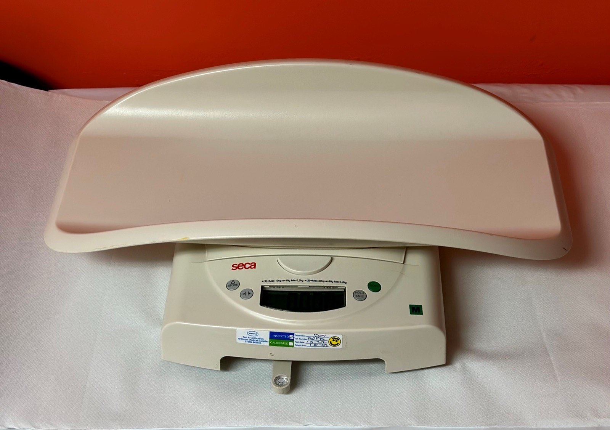
- The US schedule and what each visit checks
- Compare your country (a tool)
- Developmental surveillance vs structured screening
- Autism screening: AAP vs USPSTF
- Vision and hearing surveillance
- Iron and the 12-month hemoglobin
- Lead screening: the decision rule
- Fluoride varnish (and the water debate)
- The mood check that is for you
- The gap between recommended and delivered
- Choosing (and switching) a provider
- Nurse lines and telehealth
The US schedule and what each visit checks
The US calendar comes from one document, the Bright Futures / AAP "Recommendations for Preventive Pediatric Health Care," updated roughly every year. It places eleven scheduled visits between birth and 30 months: newborn, 3 to 5 days, by 1 month, then 2, 4, 6, 9, 12, 15, 18, 24, and 30 months. That is about eight or nine by 18 months, more than any peer country. good evidence Bright Futures/AAP 2025
Six things happen at every visit from newborn through the toddler years: a history (how things are going since last time), length and weight (plus head circumference through 24 months), a head-to-toe physical exam, a behavioral and emotional check, anticipatory guidance (the "here is what is coming next" talk), and any vaccines that are due. Everything else, the blood tests and structured questionnaires, is layered on at specific ages. good evidence Bright Futures/AAP 2025
The schedule has a reputation as a gauntlet of needles. It is not. Setting vaccines aside, the only routine universal blood test in the entire first 18 months is a single hemoglobin at 12 months (plus a lead blood test at 12 and 24 months for children on Medicaid or in high-lead areas). Blood pressure does not start until age 3. A vision chart does not start until age 3. good evidence Bright Futures/AAP 2025
Go deeper: what gets added at each age
The grid uses three marks: a solid dot ("do this"), a star ("assess the risk, and act if there is a concern"), and a range bar ("any time in this window"). Read this way, the first-year visits add up to a clear rhythm.
| Visit | Notable additions |
|---|---|
| Newborn | Newborn blood screen (heel stick), bilirubin check, hearing screen, pulse-oximetry for heart defects, hepatitis B risk |
| 3 to 5 days | Verify the newborn blood screen and hearing result, weight and jaundice recheck |
| By 1 month | First maternal-depression screen (of the parent) |
| 2 months | Maternal-depression screen; first big vaccine round |
| 4 months | Maternal-depression screen; anemia and lead risk assessment (questions, not blood) |
| 6 months | Maternal-depression screen; oral-health risk assessment begins; fluoride supplement considered if water is low; lead risk assessment |
| 9 months | First structured developmental screen (a validated questionnaire); oral-health and lead risk assessment |
| 12 months | Universal hemoglobin (the one routine blood count); lead blood test or risk assessment; fluoride varnish once teeth are in |
The maternal-depression screen, worth saying twice because it surprises people, is a check of the parent, done at the baby's visit, at exactly four ages: by 1 month, 2, 4, and 6 months Bright Futures/AAP 2025. More on that below.
What is not done in infancy, despite the "they test for everything" myth: cholesterol (first risk look at 24 months, universal screen not until 9 to 11 years), routine blood pressure (starts at 3 years), and an eye chart (starts at 3 years). The infant schedule is mostly looking, measuring, and asking, not drawing blood Bright Futures/AAP 2025.
Compare your country
The deep lesson of looking across countries is that the checks are remarkably consistent (growth, exam, development, vision and hearing, vaccines, parent support) but the system is a national choice: how many visits, and who delivers them. The US routes nearly everything through a physician's office and is visit-dense. The UK and Nordics lean on nurses. The honest caveat: no country's schedule has been proven "right" by outcomes. Visit cadence is a workforce and policy decision, not a clinical truth. mixed/synthesis UK HCP AAP 2025
Go deeper: who actually does the visit, country by country
| Country / system | Visits to ~2 yr | Primary deliverer | Source |
|---|---|---|---|
| US (Bright Futures) | ~11 (8 to 9 by 18 mo) | Pediatrician or family physician | AAP 2025 |
| UK (Healthy Child Programme) | 5 mandated reviews (4 postnatal) | Health visitor (nurse); GP does the 6 to 8 week exam | UK HCP |
| Canada (Rourke Baby Record) | ~11 by 24 mo | Family physician or pediatrician | Rourke 2024 |
| Australia (Victoria MCH) | ~9 by 24 mo | Maternal and child health nurse (free, first visit at home) | VIC MCH |
| Germany (U1 to U7) | 7 by ~24 mo | Pediatrician (Kinderarzt) | Kindergesundheit |
| Finland (neuvola) | part of ~20 contacts to age 6 | Public-health nurse, doctor at key visits | thisisFINLAND |
Two surprises break the lazy "everywhere else has fewer visits" story. Germany is physician-led like the US but leaner (seven exams to age 2, with a notable gap between the ~1-year and ~2-year visits). And the Nordic systems are not lean at all: Finland's neuvola adds up to about twenty contacts across early childhood and Sweden's centre sees families nearly weekly in the first weeks. The difference is who you see, a nurse rather than a doctor, not how often Kindergesundheit thisisFINLAND.
Most peer countries also do two things the US system does not reliably do: they send a clinician into the home in the first days to weeks (the German midwife, the Dutch kraamzorg nurse, the Irish public-health nurse), and they hand the family a single portable record they keep and carry (Germany's yellow booklet, France's carnet de sante, Japan's boshi techo). The US has no universal home-visit entitlement and no single national parent-held record; your baby's history lives in the practice's chart and the state immunization registry Gelbes Heft good evidence.
Developmental surveillance vs structured screening
There are two different ways a clinician watches your baby's development, and the distinction matters because one is much easier to skip. Surveillance is the informal, ongoing watching at most visits, asking how things are going and noting what the baby does. Structured screening is a validated questionnaire you fill out (often the ASQ-3, PEDS, or SWYC), scored against norms, and the AAP places it at exactly three infant and toddler ages: 9, 18, and 30 months. At those ages, the structured tool replaces casual surveillance. strong evidence AAP 2020
Why this matters in practice: a structured screen detects more delays than a clinician's gut alone, and earlier detection opens the door to early intervention during the window when it helps most. So the questionnaire at 9 months is not busywork. If your 9-month visit did not include one (a paper or tablet questionnaire you filled out), it is reasonable to ask for it by name AAP 2020 strong evidence.
Autism screening: AAP vs USPSTF
On top of general developmental screening, the US schedule adds a dedicated autism screen at 18 and 24 months, in practice a short parent questionnaire called the M-CHAT-R/F. This is one of the genuine expert disagreements in well-baby care, and it is worth understanding because the two bodies are not actually contradicting the same question. good evidence AAP 2020
Should every toddler be screened for autism, even with no concerns?
One camp (AAP, CDC): yes. Screen all children at 18 and 24 months with a validated tool, because signs are detectable early, screening reliably lowers the age at diagnosis, and earlier diagnosis means earlier intervention CDC.
The other (USPSTF): there is "insufficient evidence" to recommend universal screening of toddlers in whom no concerns have been raised, because no trial has directly compared screening against ordinary clinical detection on the children's long-term outcomes USPSTF.
Where the evidence sits (dated): the two bodies have different jobs. The USPSTF demands trial-grade proof that an action changes outcomes; the AAP sets a lower threshold to act when a screen is cheap, low-harm, and the alternative is late diagnosis. Crucially, "insufficient evidence" is not "evidence against." The USPSTF position is from a 2016 statement; its update has been on a finalized research plan since 2021 but, amid the panel's disruption, has not been released as of 2026 USPSTF.
A reasonable default: in the US, expect (and accept) an autism screen at 18 and 24 months. It is brief and harmless, and given that the average US autism diagnosis still lands around age 4 to 5, under-identification, not over-screening, is the real-world problem. Anywhere in the world, a specific concern from you or the clinician always warrants follow-up regardless of any screen.
As of June 2026 the USPSTF is in disruption (meetings canceled, leadership dismissed, seats unfilled), which freezes its pending autism update but changes none of the clinical evidence on screening. in flux AJMC 2026
Vision and hearing surveillance
Through the first year, both senses are watched but not formally tested with a chart or audiometer. Vision is checked by the newborn red-reflex exam (to rule out cataract and retinoblastoma) and by watching eye alignment and tracking at each visit; a true acuity chart waits until age 3. Hearing gets a real test once, the universal newborn screen, then is reassessed by risk at every infant visit, because some hearing loss starts later. strong evidence AAP vision JCIH
Usually normal
- Eyes that occasionally cross or drift in the first few months, when the baby is tired
- A newborn who does not "track" perfectly at first; smooth following develops over the early months
- A "refer" on the newborn hearing screen, which is common and usually just means a repeat screen is needed, not a diagnosis
- A baby who startles to loud sound and quiets to your voice
Call your doctor about
- Eyes that stay crossed or misaligned beyond about 4 months, or one eye that always turns
- A white pupil in photos, persistent tearing or light sensitivity, or no eye contact
- A baby who does not startle to sound, does not turn toward voices by a few months, or whose babble fades
- A newborn hearing "refer" that never got its follow-up appointment
What turns it serious: time. Amblyopia ("lazy eye") and hearing loss are both silent and time-sensitive, so the failure mode is not catching them, it is letting a borderline result slide without follow-up.
Go deeper: photoscreening, amblyopia, and the hearing follow-up gap
Vision. Instrument-based "photoscreening" (a camera-style device that detects amblyopia risk factors) may be used from 12 months and is the recommended method for ages 1 to 5, before a child can do a letter chart. It flags risk factors for amblyopia rather than amblyopia itself, with high sensitivity but a notable false-positive rate (referrals reported as high as 34%) amblyopia review 2025. Amblyopia affects roughly 2 to 4% of children and is the leading cause of decreased vision in one eye in childhood, and it is treated most effectively before about age 6 to 8, which is exactly why surveillance starts in infancy rather than waiting for a school chart StatPearls strong evidence. If a vision check is borderline or gets skipped, you can ask for photoscreening or a referral.
Hearing. The framework is "1-3-6": screen by 1 month, diagnose by 3 months, begin intervention by 6 months if loss is confirmed. The US largely meets the first step (about 98% of babies are screened, 95.5% by one month) but the funnel leaks badly after a "refer" result: of babies referred for diagnostic testing, only about 42.7% are diagnosed before 3 months, and roughly one in three (32.4%) falls out of the documented pathway entirely CDC EHDI 2021 strong evidence. Permanent hearing loss is found in about 1.7 of every 1,000 babies screened CDC 2022. The single biggest failure is the family that never returns for the re-screen, so if your newborn got a "refer," the one thing that matters is keeping the follow-up appointment.
Iron and the 12-month hemoglobin
Iron is the one nutrition thread that runs through well-baby care, because babies are born with about four months of iron stores and breast milk is iron-poor after that. The AAP advises iron drops (1 mg/kg/day) for breastfed and mostly-breastfed babies starting at 4 months, until iron-rich solids are well established; formula-fed babies already get enough from standard iron-fortified formula. The schedule then puts one universal hemoglobin (blood count) at 12 months, the rationale being that iron deficiency is genuinely common in toddlers (about 13.5% of 1-to-2-year-olds). good evidence AAP/HealthyChildren NHANES
Should every breastfed baby get iron drops, and should every toddler be screened?
One camp (AAP, the US position): supplement breastfed babies from 4 months and screen at 12 months. It is a low-cost, low-harm, prevention-first call reasoning from physiology (babies' stores run down) and from how common toddler iron deficiency is AAP.
The other (USPSTF, and most bodies outside the US): there is "insufficient evidence" that routinely screening symptom-free 6-to-24-month-olds changes outcomes, and meta-analyses show that supplementing already-iron-replete breastfed babies raises blood counts only briefly with no measured boost to development, and possibly a tiny cost to growth USPSTF 2015 meta-analysis 2025 strong evidence.
Where the evidence sits (dated): these are not head-to-head contradictions, they answer different questions with different risk tolerances. Where iron clearly matters is in preventing and correcting true deficiency, because observational data link chronic infant iron deficiency to lasting cognitive gaps (on the order of 6 to 9 points) that late treatment may not fully reverse Lozoff cohort mixed/observational. The single biggest preventable cause of toddler deficiency is excessive cow's milk after age 1.
A reasonable default: discuss the drops with your clinician (a low-stakes choice either way for a thriving exclusively breastfed baby), offer iron-rich first foods (fortified cereal, pureed meat, legumes) from about 6 months, and after the first birthday cap cow's milk near 16 ounces a day. The 12-month hemoglobin is cheap and standard; take it.
Lead screening: the decision rule
Lead is screened in two ways: a risk-assessment questionnaire at most infant visits, and an actual blood test at 12 and 24 months for some children. The firm rule: every child on Medicaid (and in high-prevalence areas) must get a blood lead test at 12 and 24 months, a federal requirement. For other children, a "yes" to any risk question should trigger a blood test too. strong evidence Medicaid/EPSDT AAP 2016
The number to know is the CDC Blood Lead Reference Value: 3.5 micrograms per deciliter (lowered from 5.0 in 2021). It is a population benchmark for "this child is among the more exposed, follow up," not a toxicity threshold, because, as the CDC states plainly, "no safe level of lead in children's blood has been identified." A result at or above 3.5 triggers follow-up (repeat testing, finding the source, optimizing iron and nutrition, developmental monitoring), not chelation, which is reserved for far higher levels. strong evidence CDC BLRV
Go deeper: the questions you will be asked, and the universal-vs-targeted debate
The risk-assessment questions cluster around old housing and unusual exposures. A "yes" to any of these should prompt a blood test even off Medicaid: a home built before 1978 (especially with peeling paint or recent renovation); a sibling or playmate with elevated lead; imported pottery, cosmetics, spices, or traditional remedies in use; a parent's job or hobby that involves lead; or recent immigration or refugee status AAP 2016 good evidence.
Test every child, or only those flagged by risk questions?
Targeted (the CDC default): focus blood testing on children with risk factors and pre-1978 housing, and let localities build plans from local data, to avoid low-yield universal blood draws CDC.
Universal: questionnaires miss too many exposed children, so universal testing is safer; Medicaid already mandates it at 12 and 24 months, and the CDC itself says universal testing is appropriate where no local plan exists.
Where the evidence sits (dated): risk questionnaires have real sensitivity gaps, which is the strongest argument for universal testing; there is no national universal mandate outside Medicaid as of 2026. Standing dispute.
A reasonable default: if you have any old-housing or exposure risk, ask for the blood test rather than relying on the questionnaire alone.
A delivery gap worth knowing: a federal review found that more than one-third of Medicaid-enrolled children in five studied states did not get the blood lead test the law requires, so even the firm rule is widely unmet, another reason to ask HHS OIG good evidence.
Fluoride varnish (and the water debate)
The single most useful thing to know about fluoride is to separate two different things: the fluoride your baby's teeth get in the clinic and at home (well supported, low harm), and the politically charged fight about fluoride in tap water (a different question entirely). For the first: once teeth come in, a clinician paints on fluoride varnish, recommended every 3 to 6 months by cavity risk, and at home a rice-grain smear of fluoride toothpaste from the first tooth. Tooth decay is the most common chronic disease of childhood and is largely preventable, and baby teeth matter for eating, speech, and spacing. strong evidence USPSTF 2021 AAP 2020
Oral-health risk assessment begins at the 6-month visit, the first dental visit is recommended by age 1 ("first tooth or first birthday"), and if your tap water is low in fluoride, a supplement may be prescribed from 6 months. Varnish in the pediatric office is genuinely settled care, not a controversy AAP 2020 strong evidence.
Is fluoride safe? (The two debates, kept apart.)
In-office varnish and toothpaste: not seriously contested. The USPSTF gives varnish from first-tooth eruption a Grade B recommendation, and topical fluoride to prevent cavities is multi-body consensus. Keep doing it USPSTF 2021.
Fluoride in drinking water: politically hot in 2025 to 2026. Critics cite a neurodevelopment concern; defenders (ADA, AAP, CDC) call community water fluoridation a major public-health achievement and note the cited harms sit at exposures well above US levels JAMA Pediatrics 2025.
Where the evidence sits (dated): the meta-analysis at the center of the fight pooled 74 studies, none in the US, and found a clear IQ association only at higher exposures (roughly above 1.5 mg/L). Restricted to drinking water below 1.5 mg/L the association was null. US community water is fluoridated at 0.7 mg/L, so the honest framing is "high-exposure harm is real, the effect at US levels is uncertain and likely small if present." Removing fluoridation has a known downside, more cavities, especially for low-income children. Two states (Utah, Florida) banned community fluoridation in 2025; this thread is fast-moving JAMA Pediatrics 2025 mixed/contested.
A reasonable default: let your baby get varnish and use a rice-grain of fluoride toothpaste; that protection happens regardless of your tap. If you are uneasy about water, find your home's fluoride number (a test or your utility's report) rather than skipping the varnish.
As of June 2026 the no-copay status of many of these screens (fluoride varnish, depression screening, others) rides on US Preventive Services Task Force grades and the ACA, and that panel is in active disruption. A 2025 Supreme Court decision (Kennedy v. Braidwood) preserved the no-cost-sharing mandate, but the same ruling affirmed broad political control over the panel, so what stays covered could shift. The clinical content of the visits is unaffected. in flux KFF 2025
The mood check that is for you
At four of the baby's visits (by 1 month, 2, 4, and 6 months), the schedule asks the clinician to screen the parent for depression, usually with a short questionnaire (the Edinburgh Postnatal Depression Scale, or a PHQ). The logic is simple and a little sad: the baby's visit is often the only health appointment a new parent has in those months, so it is the best chance to catch a struggling parent. good evidence AAP 2019
How well it is done in practice is mixed: only about 54% of pediatricians reported doing formal maternal-depression screening as of 2019, up from a much lower base a decade earlier. So if no one has asked how you are doing, it is entirely fair to raise it yourself Policy Center 2019 mixed/survey.
The gap between recommended and delivered
This is the section that turns the schedule from a wish list into a parent's checklist: a large share of what should happen at these visits quietly does not. None of this is your fault, and the fix is not anxiety, it is knowing the few things to ask for by name. strong evidence Hirai 2018
What a thorough visit includes
- Growth measured and plotted, a full physical exam, and the next visit booked
- A structured developmental questionnaire at 9, 18, and 30 months
- An autism screen at 18 and 24 months
- A hemoglobin at 12 months; a lead blood test at 12 and 24 months if on Medicaid or at risk
- Fluoride varnish once teeth are in; a vision and hearing check
- A check on how the parent is doing, at the early visits
Things often skipped, fair to ask for
- The structured developmental screen (only ~35% of toddlers get one)
- The parent mood check (done by about half of pediatricians)
- The Medicaid-required lead blood test (over a third are missed in some states)
- Fluoride varnish in the medical office (uptake is low, worse for Medicaid)
- The newborn hearing-screen follow-up after a "refer" result
What turns a missed item serious: it is silent. A skipped developmental screen or hearing follow-up costs nothing today and shows up only later, which is exactly why an informed parent asking is the most reliable safeguard.
One structural factor genuinely helps: having a consistent "medical home" (a regular primary-care practice that knows your child) is associated with markedly more developmental screening, an 8-to-9 percentage-point higher rate. So finding one practice and sticking with it is not just convenient, it measurably improves the care your baby gets Hirai 2018 good evidence.
Choosing (and switching) a provider
You can see a pediatrician (a doctor trained only in children), a family physician (trained across all ages, can care for the whole family), or a pediatric nurse practitioner or PA (often part of a practice's team). All three are fine; the choice is about fit. The AAP suggests meeting a prospective pediatrician in the third trimester to start the relationship early. And here is the practical truth: most families who switch do so not over the doctor's competence but over how the office runs (access, wait times, callbacks), so weigh the logistics heavily. good evidence AAP
Go deeper: the prenatal interview checklist, red flags, and moving records
A board-certified pediatrician carries "FAAP" after the name (Fellow of the American Academy of Pediatrics); you can verify certification online. A family physician is board-certified by the American Board of Family Medicine. Either is a good choice ABP.
Questions worth asking before the baby comes: Will I see you or rotate among partners, and who covers nights and weekends? Are there same-day sick visits and an after-hours nurse line? Do you offer telehealth? Can you see my newborn in the birth hospital, and which hospital do you admit to? What is your vaccine policy, and do you keep families who decline or delay? Are you in-network for my insurance KidsHealth?
Red flags that justify switching: a clinician who is dismissive of your concerns or rushes you, who will not follow the standard schedule (skips screens, or conversely pushes unnecessary tests or supplements), who has no after-hours access, or a real communication breakdown. Solvable friction, one bad visit, a scheduling hiccup, a single staff conflict, is usually not a reason to leave HealthPartners expert consensus.
Moving records is your right and is simple. You can switch any time; sign a release at the new (or old) practice and records transfer directly, often electronically. The provider must comply within 30 calendar days, cannot charge a fee merely to retrieve records (a reasonable copy fee for paper is allowed), and you do not need to settle a balance first. Ask the new office what they need, and bring the immunization record in particular HHS HIPAA good evidence.
Nurse lines and telehealth
A nurse advice line or video visit is an excellent triage tool for low-stakes questions and a real lifeline for rural and isolated families, but it is an adjunct to the in-person schedule, not a substitute. Most US after-hours pediatric phone lines use a standard protocol (the Schmitt-Thompson system, about 144 decision guides), and the rules for the youngest babies are deliberately the most conservative. strong evidence AAP/Schmitt-Thompson
Go deeper: what is safe to triage remotely, and the nurse line for your country
Reasonable for a nurse line or video visit in an older, well-appearing baby: diaper and skin rashes, mild spit-up, feeding and weaning questions, mild cold symptoms without distress, medication dosing, post-visit follow-up, and the basic question of whether and where to be seen in person. Never remote-only: any fever under about 3 months, breathing trouble, lethargy, poor feeding or dehydration signs, a bulging fontanelle, a non-blanching rash, persistent bilious vomiting, a high-pitched or inconsolable cry, or bluish color. Telehealth cannot replace the hands-on exam (listening to the heart, feeling the hips, the red reflex, a calibrated weight) Schmitt-Thompson good evidence.
| Country | Who to call | Source |
|---|---|---|
| US | Your practice's after-hours nurse line; Poison Control 1-800-222-1222; 911 for emergencies | AAP |
| UK | NHS 111 (urgent but not emergency, 24/7); 999 for emergencies; health-visitor team for routine support | NHS |
| Canada | 8-1-1 provincial Health Link, 24/7 registered-nurse advice | AHS |
| Australia | healthdirect 1800 022 222 (24/7 nurse); Pregnancy, Birth and Baby 1800 882 436 | healthdirect |
The UK's rule mirrors the US bright line: call your GP or 111 if a baby under 3 months has a temperature of 38 C NHS strong evidence.
The caregiver
the whole year
Every other section of this guide is about the baby. This one is about you, and it is here on purpose, near the end, because the single most under-told fact of the first year is that the parent needs care too. Birth is a major physical event that takes months, not weeks, to recover from. The mind takes its own toll: perinatal mental illness is the most common complication of childbirth, and in the United States mental-health conditions are the leading underlying cause of pregnancy-related death. Almost all of it is survivable and treatable. The danger is silence, the belief that struggling means failing, and a care model that historically checked on you once at six weeks and then stopped. This section is the map of the recovery, the warning signs that are genuinely urgent, the mental-health spectrum stated honestly, and the practical scaffolding (a partner who owns real work, a village, a plan for going back) that keeps the adults afloat.
- Physical recovery, and the maternal warning signs
- Pelvic floor, leaking, sex, and contraception
- The mind: the full mental-health spectrum
- Scary thoughts: the one distinction that is life-or-death
- Treatment, and antidepressants while breastfeeding
- The other parent, and the partner playbook
- Going back to work
- The village, and the grandparents
- Your body, your identity, the slower changes
Physical recovery, and the maternal warning signs
Recovery from birth is measured in weeks to months, not at a single six-week visit. Vaginal bleeding (lochia) tapers over about six weeks, a perineal tear or a cesarean incision heals over weeks, and tiredness, cramping, and night sweats are normal along the way. Sitting on top of all that is a short list of warning signs that are genuinely urgent, and they apply for a full year, not just until your checkup. The most useful thing to do is learn that list, and trust the sense that something is wrong even when you cannot name it.
Go deeper
Bleeding (lochia). The postpartum discharge runs heavy and dark or bright red for the first three to four days, fades to pinkish-brown over days four to twelve, then to a yellowish-white that can linger up to six to eight weeks Cleveland Clinic consistent clinical description. It briefly increases with activity (walking, stairs) and during breastfeeding, because the same oxytocin that releases milk contracts the uterus. That transient increase is normal. The alarm lines are below.
A vaginal birth. Most tears are minor. The serious ones, third- and fourth-degree tears involving the anal sphincter (called OASIS), happen in roughly 6 in 100 first vaginal births and fewer than 2 in 100 later ones, and most people who have one heal completely RCOG good evidence. Routine episiotomy is no longer done (the US rate fell from about 61 percent in 1979 to under 5 percent now) because cutting routinely does not protect against worse tearing Leapfrog strong evidence. The everyday toolkit is a peri bottle, cold packs in the first day or two, witch-hazel pads, sitz baths for comfort, and stool softeners to avoid straining. One honest cross-country note: for the higher-grade sphincter tears, UK guidance advises washing daily with plain water and avoiding sitz baths and products on the wound, where US materials commonly recommend sitz baths, so treat sitz baths as an optional comfort measure rather than a rule RCOG comfort measures, low-level evidence.
A cesarean. This is major abdominal surgery, and roughly one in five births worldwide is now a cesarean, so a large share of readers are recovering from an operation, not a quicker path WHO 2021 strong evidence. Surgical-site infection occurs in about 4 percent of cesareans in North America (higher elsewhere), so watch the incision for spreading redness, warmth, increasing pain, pus or foul drainage, the wound opening, or a fever Mojtahedi 2023 strong evidence. Numbness or itching around the scar and the "shelf" above it are common and usually benign. A cesarean also carries a higher blood-clot risk, which is part of why the leg-clot warning sign below matters.
Why heavy bleeding and high blood pressure can strike late. Postpartum hemorrhage is not only a delivery-room event: secondary (delayed) hemorrhage can occur from 24 hours up to twelve weeks after birth, usually from retained tissue or infection StatPearls strong evidence. Postpartum preeclampsia can appear new, most often in the first week but up to six weeks out, even in someone whose blood pressure was completely normal throughout pregnancy, which is exactly why "I was fine before" is false reassurance and a severe headache or vision change after birth is never just tiredness AJOG 2020 good evidence.
The evidence: why care should not stop at six weeks
Every major body has repudiated the old single-visit-at-six-weeks model, though they land in different places. The WHO (2022) recommends at least four postnatal contacts for the mother: within 24 hours, at 48 to 72 hours, at 7 to 14 days, and during week 6 WHO 2022 strong evidence. ACOG (US) recommends an initial contact within three weeks and a comprehensive visit by twelve weeks, and is where the clinical term "fourth trimester" comes from, framing recovery as an ongoing process, not a single encounter ACOG 2018 good evidence. The UK (NICE) uses an early midwife visit, a health-visitor visit at 7 to 14 days, and a GP review at 6 to 8 weeks NICE 2021 good evidence. The shared message is simply that one visit is not enough; the open problem is implementation, with only about half of US providers actually contacting patients by three weeks.
Why it matters that vigilance continues all year: among US pregnancy-related deaths reviewed by Maternal Mortality Review Committees (2017 to 2019, 36 states, 1,018 deaths), about 84 percent were preventable, roughly two-thirds occurred postpartum, and about 30 percent fell between six weeks and one year, the exact window the old model ignored CDC MMRC 2017-2019 good evidence. The leading causes (mental-health conditions, hemorrhage, cardiac and coronary conditions, infection, blood clots, hypertensive disorders) are precisely what the warning-sign list is built to catch.
There is also a stark and unambiguous equity story in the numbers: US Black women die of pregnancy-related causes at roughly three times the rate of White women, persistently (in 2024, 44.8 versus 14.2 per 100,000), and American Indian and Alaska Native women have at times had the highest rate of all NCHS 2024 strong evidence. This is about access, bias, and being listened to, not individual behavior, and it is the reason the CDC's warning-sign campaign pairs its list with the message to keep asking until you are heard.
Usually normal (recovery)
- Bleeding (lochia) that fades from red to brown to white over about six weeks
- A brief increase in bleeding with activity or during breastfeeding
- Afterpains (cramping), perineal or incision soreness, night sweats, hair shedding, occasional leaking
- Numbness or itching around a cesarean scar; emotions running high in the first two weeks
Get care now (maternal warning signs)
- Call 911: chest pain, trouble breathing or shortness of breath, a seizure, or thoughts of harming yourself or anyone else
- Bleeding through more than one pad an hour, or passing a clot bigger than an egg
- A red, swollen, warm, or painful leg (possible clot)
- A fever of 100.4 F (38 C) or higher, or foul-smelling discharge
- A headache that will not ease even with medicine, or a bad headache with vision changes; an incision or tear that is not healing
What turns it serious: these can develop even after a completely normal pregnancy and normal blood pressure, so "I was fine before" is not reassurance. Trust your instincts and keep asking until you are heard.
Go deeper: the two US warning-sign canons
The US has two complementary tools worth knowing. AWHONN's POST-BIRTH is the triage mnemonic, splitting nine signs into two tiers. Four are call-911: chest Pain, Obstructed breathing, Seizures, and Thoughts of self-harm. Five are call-your-provider: Bleeding soaking a pad an hour or egg-sized clots, an Incision not healing, a Red or swollen leg that is warm or painful, a Temperature of 100.4 F or higher, and a Headache that does not improve with medicine or comes with vision changes AWHONN 2018 good evidence. The handout even gives the script: "I gave birth on [date] and I am having [specific signs]."
The CDC's Hear Her campaign casts a wider net, with fifteen urgent maternal warning signs that add dizziness or fainting, extreme swelling of the hands or face, severe nausea and vomiting, severe belly pain that does not go away, a fast-beating heart, and overwhelming tiredness, among others CDC Hear Her good evidence. It does not split into tiers; its instruction is uniform (seek care now) and its added contribution is the self-advocacy message aimed at the documented failure to listen to Black and Indigenous patients. The two are not in conflict: learn POST-BIRTH for the action tiers and Hear Her for the fuller net. Both apply for a full year after birth.
A rare-but-serious footnote for anyone who bled heavily at birth: Sheehan syndrome is damage to the pituitary gland after severe blood loss, now uncommon in high-income countries (about 5 per 100,000) StatPearls mechanistic and case literature. The practical flag is narrow: if you bled heavily, then could not produce milk and feel persistently unwell, mention it to your provider. It is not a routine worry.
Pelvic floor, leaking, sex, and contraception
The pelvic floor takes a beating from pregnancy and birth, and the after-effects are common, treatable, and rarely discussed. Roughly one in three people are still leaking urine at a year, painful sex is very common in the early months, and the right response to either is treatment, not endurance. Two practical facts matter most: pelvic-floor muscle training genuinely works for leaking, and contraception matters from early on because you can get pregnant before your first postpartum period.
Go deeper
Leaking and prolapse. In a strong recent cohort, stress urinary incontinence (leaking with a cough, sneeze, laugh, or run) affected about 32 percent of women at both 3 and 12 months postpartum, so roughly one in three is still leaking at a year PTJ cohort 2024 good evidence (single cohort). The good news is that pelvic-floor muscle training, done correctly, is a real, evidence-backed treatment: it reduces the odds of incontinence by about 37 percent meta-analysis 2024 strong evidence. The effect on prolapse and the diastasis-recti separation is weaker and rests on thinner evidence, and a leaking-with-effort problem that does not improve is worth a referral to a pelvic-health physiotherapist rather than waiting it out.
Painful sex (dyspareunia). It is very common early and usually improves. In the best primary cohort, pain at first postnatal vaginal sex was reported by about 86 percent, falling to about 45 percent at 3 months and about 23 percent at 18 months, with a meaningful minority describing the pain as distressing rather than a twinge McDonald 2016 good evidence. Breastfeeding makes it more likely: high prolactin suppresses estrogen into a temporary, reversible low-estrogen state (like a brief, reversible menopause) that causes vaginal dryness and lower desire for as long as nursing continues. The action line is firm: persistent painful sex is a treatable medical problem, not your new normal. Ask specifically for non-hormonal lubricant or vaginal moisturizer first, then low-dose vaginal estrogen for the dryness (it is generally considered compatible with breastfeeding) and a pelvic-floor physical-therapy referral for muscular pain or scar tissue.
Two clocks: ready, and wanting to. "Medically ready" (tissues healed, no infection, bleeding stopped) and "actually wanting to" are different questions. The roughly six-week check is a safety floor, not a deadline in either direction, and desire commonly lags readiness by months. Mismatched desire between partners is one of the most common and most normal postpartum strains, and framing it as a problem of sleep, touch overload, hormones, and healing, rather than a verdict on the relationship, is protective.
Go deeper: contraception, by the calendar
You can ovulate (and conceive) before your first postpartum period, so "breastfeeding is birth control" is unreliable unless you strictly meet all three lactational-amenorrhea criteria at once: under 6 months, exclusively or near-exclusively breastfeeding, and no return of periods, which together are more than 98 percent effective only while all three hold CDC US-MEC strong evidence.
The one timing rule worth memorizing is about estrogen, because of blood-clot risk, which is highest in the first three weeks and near baseline by 42 days. Combined (estrogen-containing) pills, patches, and rings are an unacceptable risk before 21 days for everyone (breastfeeding or not), a "generally avoid, depends on your other clot risks" gray zone from 21 to 42 days, and generally fine after 42 days (6 weeks) CDC US-MEC 2024 strong evidence. Progestin-only methods avoid this: progestin-only pills, the implant (generally fine from about 30 days), the injection, and IUDs (placed at 4 weeks or later) carry no estrogen clot concern and are compatible with breastfeeding CDC US-MEC 2024 strong evidence. On spacing, the WHO suggests waiting at least 24 months after a live birth before the next pregnancy and ACOG advises avoiding intervals under 6 months, though newer research that better controls for confounding has softened how strongly the short-interval risk can be blamed on the interval itself ACOG 2019 good evidence.
Go deeper: sleep, thyroid, hair, and the do-not-drive rule
Sleep, and the danger that gets underrated. The harm of new-parent sleep is fragmentation more than catastrophic total loss, and it is worst in the first three months. The hard safety fact: a parent who has slept less than about four hours in the prior 24 has roughly 11 times the crash risk of one who slept seven or more, comparable to driving over the legal alcohol limit AAA Foundation 2016 good evidence. Treat that as a rule, not a suggestion: on a bad-sleep day, delegate the drive, delay the errand, or stay home, especially with the baby in the car. The real intervention is not "sleep when the baby sleeps" (it does not repair fragmentation) but a household plan that protects one consolidated four-to-five-hour block for the higher-risk parent.
Postpartum thyroiditis. Inflammation of the thyroid in the first year affects about 5 to 10 percent of postpartum people, and it is frequently misread as "just tired" or as postpartum depression. It often runs an overactive phase, then a sluggish, low phase, and most recover within a year, but about 1 in 5 stay permanently underactive. A simple TSH blood test sorts it out, so if exhaustion, anxiety, then sluggishness and weight changes do not fit "just new-parent life," ask for the test ATA good evidence.
Hair loss. Shedding that begins one to five months postpartum, peaks around three to four months, and resolves by about a year is a telogen effluvium, the leading explanation being that pregnancy's high estrogen held extra hair in the growth phase and the postpartum drop releases it. It is temporary and the hairline recovers; it is not a disease or a deficiency. (One review even argues the tidy mechanism is repeated more confidently than the evidence supports, but no one disputes that the shedding is temporary.) StatPearls mechanistic, widely repeated
The mind: the full mental-health spectrum
"Postpartum depression" is a catch-all for several different conditions. The transient baby blues affect most new mothers and lift on their own. Perinatal depression and anxiety are common, can begin in pregnancy or anytime in the first year, and respond well to treatment. Perinatal OCD (intrusive thoughts) is the most misunderstood and the most reassuring once understood. Postpartum psychosis is rare and is a true emergency. The single most useful self-check is the two-week line: the blues should be fading by then, and low mood or anxiety that persists past two weeks, or shows up later, is something to treat. And any thought of harming yourself, at any time, is a reason to reach out the same day.
Go deeper: the conditions, one by one
Baby blues affect up to roughly 80 percent of new mothers: tearfulness, mood swings, irritability, and feeling overwhelmed, driven by the steep drop in pregnancy hormones plus no sleep. They peak around day three to five and lift on their own by about two weeks review 2023 consistent across reviews. Crying at a commercial in week one is the most common postpartum experience there is, not a warning sign. The tripwire is duration: blues that have not lifted by two weeks, or that include hopelessness or any thought of self-harm, are no longer blues.
Perinatal depression (the "1 in 7" condition) is a major depressive episode beginning in pregnancy or after birth: persistent low mood, loss of pleasure, guilt, sleep and appetite changes beyond what the baby explains, difficulty bonding, and in severe cases thoughts of self-harm. Most of it is genuinely perinatal rather than strictly postpartum: in a large screening study only about 40 percent of cases started after birth, a third began during pregnancy, and a quarter predated it, and it is counted up to 12 months Wisner 2013 good evidence.
Perinatal anxiety is at least as common as depression (postpartum anxiety symptoms around 15 percent) and is often the more prominent feeling: excessive, hard-to-control worry (usually about the baby), racing thoughts, and sleeplessness even when the baby sleeps. It was historically under-screened because the screens were built for depression Dennis 2017 strong evidence. If your dominant experience is dread and racing worry rather than sadness, that still counts and is still treatable.
Postpartum rage deserves its own name: in one study intense anger was actually more common than probable depression (about 31 versus 26 percent), and about half of the very angry mothers were not depressed at all Ou 2022 good evidence. Standard depression screens miss it, so a parent flooded with anger but not sadness can still be unwell and deserves to be taken seriously.
The numbers, reconciled. Three famous figures measure three different things. About 1 in 8 mothers report depressive symptoms on a brief screen (CDC PRAMS, 13.2 percent in 2018, ranging from 9.7 percent in Illinois to 23.5 percent in Mississippi) CDC PRAMS 2020 strong evidence. About 1 in 7 screen positive on the Edinburgh scale, and when those women are interviewed only about 2 percent have no diagnosis Wisner 2013 good evidence. And in one large health system the diagnosed rate doubled from 9.4 percent in 2010 to 19.0 percent in 2021, which likely reflects better recognition as much as any real rise Khadka 2024 good evidence. Globally the burden is higher, closer to 1 in 4 in low- and middle-income countries, so "1 in 7" is a high-income figure Roddy Mitchell 2023 strong evidence.
Go deeper: screening, and the EPDS
The most-used perinatal screen is the Edinburgh Postnatal Depression Scale (EPDS), ten questions about the last seven days, scored 0 to 30. A score of 10 or more suggests possible depression and warrants further evaluation; 13 or more indicates probable depression. Crucially, item 10 asks about thoughts of self-harm, and any endorsement above "never" is acted on the same day regardless of the total score Cox 1987 strong evidence. A screen is a prompt, not a verdict, and it only helps if it connects to real care. (The general-purpose PHQ-9 is also used, but its sleep, appetite, and energy items overlap with normal newborn life and can inflate the score, which is why the EPDS, built to exclude those, is often preferred perinatally.)
In the US, the AAP has pediatricians screen the mother for depression at the one-, two-, four-, and six-month infant visits, a clever workaround since the baby is seen far more often than the parent AAP 2019 good evidence. Yet only about half of pediatricians report actually doing it, so if no one asks how you are, say so anyway.
Should every parent be screened for depression, or only case-found?
One camp: the US bodies (ACOG, the USPSTF, the AAP) recommend universal screening with a validated tool at multiple points, because the condition is common and dangerous and you cannot treat what you do not detect.
The other: the UK's NICE declines routine questionnaire screening in favor of two case-finding questions (the Whooley questions) tied to a guaranteed referral pathway, arguing that screening without accessible treatment generates false positives, anxiety, and "harmful theater."
Where the evidence sits (dated): both are defensible and the right answer depends on the care system. Universal screening detects more cases, but its benefit hinges on a real referral-and-treatment pipeline; the two-question approach performs comparably for case-finding (pooled sensitivity about 0.95). Under both, up to half of postpartum depression goes undiagnosed and many who screen positive never get care, which is the UK's core objection.
A reasonable default: treat a screen as a prompt to start a conversation, and if you screen positive, push to actually reach a clinician, because the screen alone does nothing. Know that the EPDS exists so it is not a mystery, and that a positive result is the beginning of getting help, not a mark against you.
Scary thoughts: the one distinction that is life-or-death
This is the one distinction in the whole guide that is genuinely life-or-death, and it is worth learning cold. Distressing thoughts you find horrifying and would never act on (intrusive thoughts, and their more intense form, postpartum OCD) are common, treatable, and not dangerous. Believed thoughts (delusions or commands that feel true or justified, with confusion, not sleeping, or bizarre behavior, which is postpartum psychosis) are a rare medical emergency. The deciding question is whether the thought horrifies you (safe) or feels true to you (emergency).
The evidence: the matrix
The axis that separates safe from emergency is ego-dystonic versus ego-syntonic (does the thought feel against your values, or true to them), plus intact versus impaired reality testing.
- Normal intrusive thoughts (about 96 percent accidental-harm, 54 percent intentional-harm): fleeting, unwanted, distasteful, minimal distress, no compulsions, reality testing intact, usually resolving by about six months. There is no evidence they predict any increased risk of actually harming the baby Collardeau 2024 good evidence. The response is reassurance and normalizing.
- Perinatal OCD (roughly 2 to 9 percent at a given moment, up to about 17 percent of women meeting criteria across the postpartum year): the same harm content, but now recurrent, time-consuming, intensely distressing, and ego-dystonic, with intact insight (the parent knows the thoughts are irrational and their own) and compulsions or avoidance (checking the baby breathes, avoiding baths, knives, or stairs, refusing to be alone with the baby, making a partner do diaper changes) Fairbrother 2021 good evidence. The risk of acting is very low. As the International OCD Foundation states, these obsessions "do not represent a psychotic process and it is very unlikely the thoughts will be acted upon." It is treatable with therapy (exposure and response prevention) and sometimes medication. Not dangerous.
- Postpartum psychosis (about 1 to 2 per 1,000 births): delusions or hallucinations, thoughts of harm that feel justified, commanded, or true (ego-syntonic), with impaired insight (the parent believes the delusion), often with confusion, severe mood swings, and sleeplessness without fatigue. Onset is usually sudden and within the first two weeks, and it is largely a bipolar-spectrum event. The risk of harm is genuinely elevated StatPearls good evidence. This is a psychiatric emergency: do not leave the parent alone with the baby, and get emergency evaluation now.
| Feature | Normal intrusive thoughts | Perinatal OCD | Postpartum psychosis |
|---|---|---|---|
| How common | nearly all new parents | ~2 to 9% at a time | ~1 to 2 per 1,000 |
| The thought feels | against your values (horrifying) | against your values (intensely horrifying) | true, justified, or commanded |
| Reality testing | intact | intact | impaired (believes it) |
| Distress | minimal | severe | may be absent |
| Risk of acting | very low | very low | elevated |
| What to do | reassure, normalize | treatable: therapy, sometimes medication | emergency: 911 now |
A worked example makes the line clear: a mother tormented by an intrusive image during diaper changes who is horrified and insists her partner do all the diapers has OCD (treatable, not dangerous); a mother who believes her baby is cursed and must be thrown out a window has psychosis (an emergency). The reason so many suffering parents stay silent is the fear that disclosure means their baby will be taken. The truth is the reverse: disclosing intrusive thoughts leads to help, not removal, and with prompt treatment most women with postpartum psychosis recover fully. Untreated, psychosis carries a real and elevated risk of suicide and of infant harm (infanticide reported in roughly 1 to 4.5 percent of cases, highest when there is severe depression), which is exactly why immediate evaluation is non-negotiable Brockington 2017 good evidence.
One structural note for the US: specialist mother-and-baby psychiatric units that admit the parent together with the baby are the recognized best practice (the UK has about 22), but the US has only a small, growing handful of inpatient perinatal-psychiatry programs, and almost none co-admit the infant, so a US parent in crisis is usually separated from the baby StatPearls expert review.
Is a parent who has thoughts of harming the baby a danger?
The harmful misconception: that a parent who has any thought of harming the baby is dangerous and the baby should be protected from them. This belief is why parents stay silent.
The evidence: ego-dystonic intrusive thoughts (and OCD) are the opposite of intent; the parent is horrified by them, there is no evidence they predict harm, and conflating them with psychosis or criminal intent is a major, harmful error.
Where the evidence sits (dated): the clinical literature is settled. Distressing thoughts that horrify you are treatable and not dangerous; the genuinely elevated-risk picture is the believed, reality-distorting thoughts of psychosis. This is not a real two-sided debate, it is a myth versus the facts.
A reasonable default: if a thought horrifies you, tell someone, because disclosure leads to help. Learn the one line that matters: thoughts that horrify you are safe and treatable; thoughts that feel true, with confusion or not sleeping, are an emergency.
Treatment, and antidepressants while breastfeeding
Perinatal depression and anxiety are among the most treatable conditions in medicine, and the worst myth in this area is that you have to choose between treatment and breastfeeding. You do not. Therapy works, the well-studied antidepressants are compatible with nursing, and there is now an oral medication made specifically for postpartum depression. The framing that matters: the real comparison is treated illness versus untreated illness, and untreated illness has its own serious risks.
The evidence: what works
Therapy is first-line for mild-to-moderate depression. Cognitive behavioral therapy and interpersonal therapy both reliably reduce perinatal depressive symptoms (pooled effect size around a medium-to-large benefit), and ACOG recommends psychotherapy as a first-line treatment for mild-to-moderate perinatal depression ACOG CPG No. 5, 2023 strong evidence. For prevention in higher-risk parents, structured counseling cuts the risk of perinatal depression by about 39 percent, which is why the USPSTF recommends offering it to those at increased risk; the two best-evidenced programs are Mothers and Babies and ROSE (Reach Out, Stand Strong, Essentials for new mothers) USPSTF 2019 strong evidence.
SSRIs are first-line medication. ACOG recommends SSRIs as first-line for both perinatal depression and anxiety, with sertraline or escitalopram reasonable choices for someone starting fresh, and recommends against stopping a medication just because of pregnancy or breastfeeding ACOG CPG No. 5, 2023 good evidence. Honest caveat: the PPD-specific trial evidence for SSRIs is thinner than people assume (the dedicated trials are small), so the strong case rests on safety, tolerability, and the large evidence base for antidepressants in adult depression generally. They work in practice; the bottom line (treat the depression, sertraline first) is unchanged.
The neurosteroid pill. Zuranolone (Zurzuvae) is the first oral drug approved specifically for postpartum depression (FDA, August 2023): a 14-day course, with significant improvement by about day 3 sustained to day 45 in trials of severe PPD FDA 2023 strong evidence. It is a genuine advance, with real limits: it is studied only in severe PPD and only to about day 45, it is a controlled substance with a boxed warning not to drive for 12 hours after each dose and dose-related drowsiness, and it is expensive (launch list price about $15,900 for the course, with later disclosures higher). On breastfeeding, the early "you must pump and dump, safety unknown" advice is out of date: the amount in milk is very low (relative infant dose under 1 percent) and the NIH's LactMed database concludes it is not a reason to stop breastfeeding, with monitoring, though infant-blood data do not yet exist LactMed 2025 good evidence. ACOG now has a practice advisory and an update supporting its use for severe PPD. (Its older intravenous cousin, brexanolone, was withdrawn from the US market in 2025 and is no longer available; zuranolone was built to replace it.) FDA 2025
Go deeper: SSRIs in breast milk, by the numbers
The yardstick is the relative infant dose (RID), the weight-adjusted dose the baby gets through milk as a percentage of the mother's dose; under 10 percent is generally considered compatible with breastfeeding, and every SSRI below is well under that LactMed strong evidence.
- Sertraline (Zoloft) is the single best-studied agent and the one most consistently named "preferred" in breastfeeding: RID around 0.5 to 1.2 percent, the drug usually undetectable in the baby's blood, and no developmental signal followed out to five years LactMed strong evidence. This is the usual default.
- Paroxetine (Paxil) is also "preferred" in lactation specifically (RID about 1.2 to 2 percent, undetectable in most infants), though it carries a small cardiac signal if started in someone who might become pregnant LactMed strong evidence.
- Escitalopram (Lexapro) and citalopram (Celexa) are reasonable (RID roughly 3 to 5 percent; citalopram can run higher and is detectable in some infants' blood), rated "acceptable" rather than "preferred"; ACOG names escitalopram alongside sertraline as a first-line choice LactMed good evidence.
- Fluoxetine (Prozac) is the SSRI of most concern while nursing a newborn, because its long-acting metabolite accumulates in young infants; prior success with it does not rule it out, but for a newborn or preterm baby a lower-excretion agent is preferred LactMed strong evidence.
- Venlafaxine (Effexor, an SNRI) is reasonable when someone has responded to it before, with monitoring; experts are more split on it than on the preferred SSRIs LactMed good evidence.
The governing principle: do not switch a working medication just to breastfeed, and weigh every decision as treated-versus-untreated illness, with simple infant monitoring (sleepiness, feeding, weight). Untreated perinatal depression carries real risks to mother and baby; if a bipolar history is in the picture, that needs to be flagged before starting an antidepressant, because antidepressants alone can destabilize bipolar illness ACOG CPG No. 5, 2023 good evidence.
The other parent, and the partner playbook
Two truths about the second parent. First, partner and paternal postpartum depression is real and common, roughly 1 in 10 overall and peaking near 1 in 4 at three to six months, and it applies to same-sex and adoptive co-parents. Second, the relationship reliably strains after a baby, and the most fixable lever is the division of labor, which is genuinely unequal. The partner's highest-value moves are concrete: own real domains of work rather than "helping," protect one consolidated block of sleep for the higher-risk parent, and take all available leave as a solo block.
Go deeper: partner depression, and bonding
Paternal perinatal depression runs about 8 to 10 percent overall (Cameron 2016: 8.4 percent; Paulson and Bazemore 2010: 10.4 percent), peaking near 1 in 4 at three to six months, and the single strongest predictor of a father's depression is the mother's depression Paulson & Bazemore 2010 strong evidence. It often looks different from the textbook picture: more anger, irritability, withdrawal, overwork, substance use, and physical complaints than visible sadness, which is a major reason it goes undetected. There is a gentler hormonal substrate in fathers too (testosterone falls, oxytocin and prolactin rise with caregiving), but it is not the steep estrogen-and-progesterone cliff the birthing parent goes through. The EPDS works for fathers but should use a cutoff a couple of points lower; the AAP suggests screening the partner with the EPDS at the six-month visit PSI expert guidance. The non-gestational parent bonds through caregiving (skin-to-skin, feeding, soothing, time), not through a hormonal cliff, and children of two-father, same-sex, and adoptive parents fare just as well.
The strain on the relationship is real, with an honesty caveat. A meta-analysis found a small decline in relationship satisfaction across the transition to parenthood for both partners, but childless couples declined nearly as much over the same window, so part of it is ordinary drift rather than the baby Mitnick 2009 strong evidence. An eight-year study adds the other half: a first birth does add its own distinct, sudden, lasting step-down on top of that drift, felt by mothers and fathers alike Doss 2009 good evidence. So both are true: some of the dip is normal, and the baby does add a real strain, and the fixable part is how the work is shared.
Go deeper: the mental load, and what actually helps
The inequality lives less in the visible chores than in the cognitive labor: anticipating needs, identifying options, deciding, and monitoring. Even among egalitarian couples, women disproportionately carry the always-on parts (anticipating and monitoring), the part that is invisible even to the person doing it Daminger 2019 good evidence. Time-diary data show the size of it: after a first birth, women's total work rose by about 21 hours a week while men's rose by about 5, and tellingly, survey self-reports hid the gap entirely (both partners reported similar increases), which is why couples genuinely disagree about who does more Yavorsky 2015 good evidence. A heavier maternal cognitive load is linked to worse maternal mental health.
The practical fix is to own domains, not "help with" tasks. A partner who "helps" still leaves the manager holding all the noticing and deciding. Assigning whole domains end to end (the conception, the planning, and the doing) is the idea behind the popular Fair Play system, and the translation for new parents is concrete: "the night wakings on these nights are entirely mine," "all bottle washing and parts are mine," "the pediatrician appointments, the vaccine schedule, and the daycare paperwork are mine." The owner also owns remembering it. (Fair Play is a sensible framework, not a tested treatment, but the cognitive-load problem it targets is real.)
The single highest-leverage, evidence-backed move is the protected sleep block: have one adult take one or two night feeds (with expressed milk or formula) so the higher-risk parent gets one unbroken four-to-five-hour stretch, typically starting around week three to four once feeding is established. Consolidation, not just total hours, is the mood-protective ingredient, so a "you take the whole first half, I take the second" split beats both adults waking for every cry Leistikow & Smith 2024 good evidence. One counterintuitive caveat: if a parent cannot sleep even when given the chance, the fix is treating insomnia, not just buying night coverage.
Going back to work
Going back to work is a real transition, and the feelings around it (anxiety, guilt, the logistics whiplash) are common, measurable, and time-limited. The stress peaks right at re-entry and eases over about six months, and it is densely tied to the same anxiety and depression covered above, so treat a hard return as a signal worth attention, not a weakness. A phased return, knowing your pumping rights, and a realistic plan blunt most of it.
Go deeper
The feelings are real and they fade. Return-to-work stress is highest right at re-entry and declines over the following six months, and it correlates strongly with anxiety (around 0.7) and depression (around 0.6); the part that lingers is time-pressure and logistics rather than worry about the baby Okorn 2025 good evidence. (The widely repeated "68 percent of mothers are anxious returning to work" stat has no solid primary source; the trajectory above is the defensible version.) Practical moves: start mid-week so the first stretch is two or three days, negotiate a ramp if you can, and do a daycare dry run (a short separation before day one) so the first full day is not also the first separation.
Your pumping rights (US). The PUMP Act guarantees reasonable break time to express milk, as often as needed, for up to one year after birth, plus a private space that is shielded from view, free from intrusion, and not a bathroom DOL strong evidence (statute). The gaps to know: the break time can be unpaid (though you must be paid if you are not fully relieved of duties), employers under 50 people can claim an undue-hardship exemption, and airline flight crews are excluded. Get the request in writing and loop in HR before your leave ends, not after. In much of Europe, by contrast, nursing breaks are a paid statutory right and longer paid leave means many parents are not pumping at work at twelve weeks at all.
A workable pump plan. The principle is to match the feeds the baby would have taken: pump roughly every three hours (about two to three sessions in a standard workday), aiming to keep total daily milk removals near the baby's feed count. Protect the first-morning nursing and weekend on-demand feeds, because that is where supply is rebuilt. Practice bottles before day one (ideally offered by someone other than you, when you are out of the house), ask the daycare to pace-feed and to avoid a big feed right before pickup so the baby is hungry to nurse at reunion, and expect some reverse-cycling (more night nursing to make up for daytime separation), which is normal. CDC milk storage in one line: about 4 hours at room temperature, 4 days in the fridge, around 6 months in the freezer; once thawed use within 24 hours, once warmed within 2 hours, and never refreeze CDC strong evidence.
The village, and the grandparents
Isolation is common in the first year, modifiable, and worth treating as a real lever rather than a personal failing, especially for first-time and younger parents. Two things help most: asking for help in a way people can actually act on, and handling the inevitable advice clashes with grandparents by leading with empathy. A few specific resources and scripts do a lot of work here.
Go deeper: building support, and PSI
Loneliness is common. About a third of new mothers report often or always feeling lonely, well above the general public, and it is bidirectionally linked with depression and anxiety, so it is a clinical lever (peer support, groups), not a character flaw Adlington 2023 strong evidence (association).
The specific ask beats the open offer. "Let me know if you need anything" quietly hands the exhausted person the cognitive work of identifying and delegating a task, so nothing gets asked for. The fix on both sides: helpers make concrete, time-bound, opt-out offers ("I am dropping off dinner Tuesday at 6, I will leave it on the porch"; "I will come fold laundry and hold the baby for an hour Thursday"), and parents keep a standing list of real tasks on the fridge so the answer to "what can I do" is "yes, the dishwasher." For meal trains, the non-obvious move is to schedule meals deliberately into weeks three to six, after the early helpers have gone home and fatigue compounds, in single-serving portions, labeled with contents and reheating instructions.
Memorize one resource. Postpartum Support International runs the PSI HelpLine, 1-800-944-4773 (call or text, English and Spanish, with interpreting in many languages), plus more than 50 free facilitated online support groups including condition- and population-specific ones (NICU parents, loss, Black moms, queer and trans parents, dads and partners, and single parents). It is information and support, not a crisis line, so for emergencies use 988 or 911 PSI good evidence. A postpartum doula (commonly about $25 to $50 an hour) can provide in-home newborn help and let parents sleep; the rigorous trial evidence is strongest for birth doulas, while the postpartum-doula benefit is plausible and well-loved but less quantified.
Go deeper: grandparents, advice, and boundaries
Grandparents are usually not being difficult on purpose; they raised babies under a different, then-official set of rules, and several headline recommendations literally reversed. Stomach-sleeping was advised in the 1970s and 80s before the "Back to Sleep" campaign reversed it and US SIDS rates fell by roughly half; rice cereal in the bottle, crib bumpers, and inclined sleepers were once standard and are now contraindicated (crib bumpers and inclined sleepers are in fact federally banned from US sale under the Safe Sleep for Babies Act). The most disarming thing you can say is the true one: "the rules changed." It lets the grandparent be right about the past and you be right about the present.
For a safe-sleep disagreement, lead with the shared goal, name the rule, externalize the authority, and offer a role: "We love that you want to put her down. The guidance changed since we were babies, so for us it is always on her back, in the bassinet, nothing else in there. Our pediatrician is firm about it, but it would be a huge help if you did tummy time with her while she is awake." Handing over the NICHD "Safe Sleep for Your Grandbaby" booklet lets a third party deliver the message and defuses the "you did it wrong" sting.
For vaccines, separate two different conversations. Asking visitors to be up to date on Tdap (whooping cough) and flu before holding the baby is a reasonable request grounded in real risk, since young infants catch pertussis from adults (this "cocooning" is an adjunct to the most effective protection, which is the mother's Tdap during pregnancy). A grandparent who is hesitant about the baby's own shots, by contrast, simply does not get a vote: acknowledge the worry, restate that you are following the schedule with your pediatrician, and decline to relitigate it.
Your body, your identity, the slower changes
Becoming a parent is an identity transition, not just an adjustment, and the body that grew and birthed and feeds a child is a changed body that may not "snap back." The documented changes are normal and largely permanent or slow-resolving, and the healthier frame measures recovery in function (continence, core support, pain-free movement) rather than dress size. A few specific experiences (the involuntary lactation dysphorias, feeding-choice guilt, your own childhood surfacing) deserve names, because naming them is most of the relief.
Go deeper: the body, and the anti-snapback frame
The changes worth normalizing: diastasis recti (abdominal separation, very common in the first year and mostly self-resolving), the hair shedding that peaks around three to four months and regrows, cesarean and perineal scars, leaking, stretch marks, a softer abdomen, and a body that often does not return to its exact pre-pregnancy shape. "Bounce back" and "snapback" culture is a medically arbitrary standard amplified by curated celebrity and influencer content, and body dissatisfaction tends to rise into the postpartum period MGH Center for Women's Mental Health survey and observational. The constructive frame: the body did something extraordinary, recovery is measured in function, and "getting your body back" is the wrong goal because it changed rather than disappeared.
There is a clinical tripwire here. Eating-disorder relapse risk is real and high in this window, so skipping meals to lose baby weight, guilt-driven compensatory exercise, using breastfeeding mainly as a weight-loss tool, or returning eating-disorder behaviors warrant a clinician, because disordered eating and depression co-travel BMC 2020 good evidence.
Go deeper: D-MER, nursing aversion, and feeling touched-out
Three involuntary experiences of breastfeeding get lumped together and are routinely mistaken for depression. D-MER (the dysphoric milk-ejection reflex) is a brief wave of dread, sadness, or anger that hits just before and during let-down and lifts within seconds to minutes; it is a physiological reflex (the leading explanation is a brief dopamine dip at let-down), not a mood disorder, and it commonly eases by about three months scoping review 2025 good evidence (mechanism uncertain). The safety line: if the low feeling does not lift within minutes, or includes thoughts of self-harm, that is no longer classic D-MER and needs a clinician now, because depression can co-occur with it. The breastfeeding aversion response is agitation or a skin-crawling urge to unlatch that occurs only during feeding; roughly 1 in 10 to 1 in 5 breastfeeding parents report it, and most still rate breastfeeding positively overall, so aversion does not mean you are failing or that you love your baby less scoping review 2025 good evidence. And feeling touched-out (craving zero touch, including from a partner, after a human has been attached to your body all day) is a normal nervous-system response to an extraordinary touch load, distinct from low desire or a relationship problem; the fix is scheduled touch-free time and naming it, not pathologizing it.
Go deeper: feeding guilt, weaning, and your own childhood
Feeding-choice guilt is a mental-health topic, not a character flaw. Guilt and shame about feeding are associated with seeing oneself as a "bad mother" and with poorer maternal mental health, and shame in particular is linked to avoiding help Jackson 2021 good evidence. Pressure to breastfeed measurably raises anxiety, depression, and stress, and the guilt formula-feeding parents feel most often comes from clinicians, while breastfeeding parents' guilt comes more from family and other parents Frontiers 2024 good evidence. A fed, growing baby in a calm relationship is the goal; the grief of a feeding plan that did not happen is real and separate from the method being a verdict on you.
Weaning can bring a mood dip (the hypothesized cause is the drop in the calming hormones prolactin and oxytocin, plus the identity meaning of ending nursing). Gradual weaning is sensible and may soften it, though honestly the evidence for that is mechanistic rather than proven. The line to watch is the same two-week, loss-of-function, any-self-harm-thought rule: a brief situational dip is one thing, a persistent depressive episode is postpartum depression and needs care regardless of the trigger Healthcare 2025 honest uncertainty.
When your own childhood surfaces. Becoming a parent commonly reactivates your own early experiences (a cry or a sleepless night dredging up old patterns), and this is one of the most hopeful facts in the whole section: the cycle is breakable, and it is not destiny. Adverse childhood experiences are common (more than half of adults report at least one; about 1 in 16 report four or more) and shift the odds, but a parent's history is far from determining the child's outcome, the link runs through changeable parenting behavior, and people with hard childhoods who build a coherent, processed narrative ("earned security") parent about as well as those with easy ones Verhage 2016 strong evidence. The levers are noticing and naming your reactions, getting curious rather than reactive, processing your own history (therapy helps), and treating your own depression. The receipts for hope are real.
If a birth still intrudes, that is worth naming too: childbirth-related PTSD affects roughly 1 in 20 in the general population and far more after a complicated or traumatic birth Heyne 2022 strong evidence. A birth you avoid thinking or talking about, or that triggers panic months later, is not something to get over alone; ask your provider for a notes review and a referral to trauma-focused therapy, which is the evidence-based treatment.
If your situation is different
as needed
The rest of this guide describes a common path: one healthy baby, born at term, going home with the parent who carried them. Plenty of families do not start there, and the standard advice can fit badly or feel like it was written for someone else. This section is a hub of short cards for those situations. Each one orients you, names the few things that genuinely change, points to the people and rights that already exist for you, and sends you to the deeper section when the rest of the guide still applies. Two threads run through all of it. First, the safety floor is universal: every baby needs warmth, feeding, a clean cord, a caregiver who can spot a sick newborn, and timely help. Second, in almost every one of these situations the avoidable harm is separation, and the protective move is structural (a plan, an accommodation, a piece of paperwork), not a change in you.
- Premature baby or NICU graduate
- Corrected age (the preemie subtraction)
- Twins, triplets, or more
- Reflux, milk allergy, tongue-tie (the over-diagnosed cluster)
- Formula-feeding
- A baby with Down syndrome
- Cleft palate or a heart condition (feeding)
- A rare or complex diagnosis
- A substance-exposed newborn (NOWS)
- Breastfeeding on medication for opioid use disorder
- Congenital CMV
- Prenatal alcohol exposure (FASD)
- Adoption and foster care
- Grandparents and kinship caregivers
- Induced lactation (adoptive, two-dad, trans, surrogacy)
- LGBTQ+, surrogacy, and securing parentage
- Donor-conceived families
- Parents with a disability or chronic illness
- Military and veteran families
- Incarcerated and justice-involved parents
- Immigrant, refugee, and limited-English families
- Rural families and maternity-care deserts
- Teen parents
- Tight budgets and food insecurity
- After a loss (gentle content note)
If your baby was born premature, or you are in the NICU
A baby born before 37 weeks is a preterm baby, and the standard newborn advice needs adjusting, not discarding. The single most evidence-backed thing you can do is also one of the few things only you can do: hold your baby skin-to-skin (kangaroo mother care), as much and as early as the medical team allows. In a large WHO-led trial of babies weighing 1.0 to under 1.8 kg, starting continuous skin-to-skin care immediately rather than waiting for the baby to be "stable" cut newborn deaths by about a quarter, so the WHO now recommends it for all preterm or low-birth-weight infants, started as soon as possible after birth, for as many hours a day as you can manage WHO 2022 NEJM 2021 strong, multi-body consensus. You can ask for it. The exceptions are narrow: a baby who is critically ill, in shock, or cannot breathe without a ventilator.
Go deeper
What the categories mean. Late preterm is 34 to under 37 weeks, moderate 32 to under 34, very preterm 28 to under 32, and extremely preterm under 28 weeks. A frequently missed point: late-preterm babies look like small term newborns but are not. They have higher rates of feeding difficulty, jaundice, temperature instability, and readmission, so resist the "just a small newborn" framing AboutKidsHealth definitional consensus.
The acronyms you will hear, with honest base rates. NEC (necrotizing enterocolitis, a serious gut emergency) hits about 5% of very-low-birth-weight (under 1500 g) and about 10% of extremely-low-birth-weight (under 1000 g) babies, which is the main reason human milk is prioritized so hard in the NICU; human milk roughly halves the risk versus formula review strong evidence. BPD (chronic lung disease) tracks tightly with birth weight, from about half of the smallest babies (501 to 750 g) down to about 7% at 1251 to 1500 g StatPearls cohort data. Apnea of prematurity is treated with caffeine; ROP (an eye condition) is why there are scheduled eye exams; IVH, PDA, anemia of prematurity, and RDS round out the list. The smaller the baby, the higher each risk, and the flip side worth holding onto is that the majority of even extremely preterm survivors do not have a major disability.
Feeding hierarchy. Mother's own milk first, then donor human milk if your supply is short, then a human-milk fortifier or preterm formula added on top. The honest framing on fortifier: a term baby's milk is calibrated to a term baby, and a 1 kg baby needs more protein and minerals per mL than any milk provides, so fortifier is added to your milk, not instead of it. This protects breastfeeding while meeting preterm targets ESPGHAN/WHO multi-body.
Vaccines go by chronological age, not corrected age. A clinically stable preterm baby is vaccinated on the same calendar schedule as a term baby (the one nuance is birth-weight-based extra hepatitis B dosing under 2 kg). Do not let anyone "wait" because the baby was early ACIP/AAP strong evidence.
RSV protection. Nirsevimab (Beyfortus), a long-acting antibody shot, is recommended for infants entering their first RSV season (and certain high-risk children, including some preemies, in their second). In the licensing trial it cut medically attended RSV lower-respiratory illness by about 79% and RSV hospitalization by about 81% ACIP/MMWR 2023 RCT plus recommendation. A newer single-dose antibody, clesrovimab (Enflonsia), was added in 2025 as a co-equal alternative for infants under 8 months MMWR 2025 RCT plus recommendation.
A "smart sock" or home pulse-ox monitor to keep my fragile baby safe?
The marketing: consumer wearable monitors (Owlet-type smart socks, home pulse oximeters) are sold to anxious NICU-graduate parents as peace of mind against SIDS.
The AAP: consumer cardiorespiratory monitors and pulse-ox socks are not recommended to reduce SIDS risk. They have not been shown to lower it, and they can breed false reassurance and worse safe-sleep habits AAP safe sleep.
Where the evidence sits (dated): a prescribed medical monitor for genuine apnea of prematurity is a separate, legitimate thing. The dispute is only about consumer wellness gadgets marketed for SIDS, which are unvalidated for that purpose. Stable.
A reasonable default: if the NICU sends you home with a prescribed monitor, use it as directed. If you are eyeing a consumer smart sock for peace of mind, know that skipping it is not negligent, and that safe sleep (back, firm flat surface, separate, nothing else in the bed) is the actual protection.
Corrected age: the preemie subtraction
For the first couple of years, judge a preterm baby's development and growth by corrected age, not the date on the birth certificate. The math: corrected age equals how old the baby is now, minus the number of weeks they were born early. A baby born at 32 weeks was 8 weeks early, so at 4 months of life their corrected age is 2 months, and you should expect roughly 2-month skills (head control, social smiling), not 4-month skills (rolling) AAP HealthyChildren guideline, multi-body method.
Go deeper: how long to keep correcting
There is a real, defensible split between bodies, so use the dominant answer plus two nuances rather than one number. The standard, internationally shared answer is about 2 years for milestones and growth (AAP, and NICE in the UK) NICE NG72 good evidence. For the most premature children, born under about 28 to 29 weeks, the Canadian Paediatric Society corrects to 3 years because the gap can persist longer CPS 2022 good evidence. And head circumference is often corrected only to about 18 months. The "2.5 years" figure you may see is a real but minority variant; the load-bearing poles are 2 years (general) and 3 years (extremely preterm). Ask your follow-up clinic which they use for your baby.
If you have twins, triplets, or more
Multiples are a genuinely higher-risk situation than "two singletons," mostly because they are far more likely to arrive early and small. About 6 in 10 twins are born preterm (before 37 weeks), versus under 1 in 10 singletons, and 43% of babies from multiple-birth deliveries go to the NICU, compared with 9% of singletons NCHS 2023 national vital statistics. So the preterm and NICU cards above often apply to you, and the practical center of gravity is feeding logistics and your own support.
Go deeper
Feeding two (or three). Breastfeeding multiples is possible (tandem feeding, the double-football hold), but exclusive breastfeeding rates are markedly lower than for singletons, driven mostly by prematurity and NICU separation rather than anything you did. Combination feeding is the norm here, and any amount of your milk is valuable, especially for the NEC protection that matters most in preterm multiples Spain cohort good evidence.
Your mental health. Parents of twins have a measurably higher risk of postpartum depression: a large Danish registry study found about a 24% higher 6-month risk in twin versus singleton mothers, peaking around 2 months postpartum Acta Psychiatr Scand 2025 registry cohort. The strain is real; build your support deliberately and see the Caregiver section.
If one twin does not survive. Losing one twin is real, complicated grief that is too often made invisible ("but you still have one"). It sits at the intersection of joy and mourning, and it deserves the gentle handling in the loss card below, plus multiples-specific loss support.
If your baby spits up, seems fussy, or has a "tongue-tie": the over-diagnosed cluster
Three near-universal baby phenomena (spitting up, fussiness, and a visible tongue band) are each routinely escalated into a diagnosis and an intervention (an acid medicine, a special formula, or a cut) that the best evidence does not support for the typical baby. The corrective is the same in all three: confirm before you treat, support before you cut, reassure before you medicate. This is a quick orientation; the full clinical detail lives in the Health section.
Go deeper: the three honest rules
Reflux: spitting up is usually a phase, not a disease. Plain reflux (a "happy spitter") is normal and peaks around 4 months, with about 95% of babies outgrowing it by their first birthday. A 2023 Cochrane review found no clear symptom benefit from acid-suppressing medicines (PPIs, H2 blockers) in infants, sitting on top of real if modest harms, so the AAP's Choosing Wisely guidance is explicit: do not medicate the happy spitter Cochrane 2023 strong evidence. And never prop or incline a baby to sleep for reflux: it contradicts safe sleep and is a suffocation hazard.
Cow-milk protein allergy: real, but suspected far more often than it is present. True CMPA is roughly 1% to 3% of infants (often about 0.5% when confirmed by a controlled challenge, and only about 0.4 to 0.5% in exclusively breastfed babies), yet it is suspected in 5% to 15% CPS 2024 strong evidence. The rule from every major body (ESPGHAN, CPS, the AAP, the UK iMAP guideline) is to do a short 2-to-4-week elimination and then a deliberate reintroduction to prove symptoms come back; if they do not, milk goes back in. Skip that challenge only for anaphylaxis combined with a markedly high milk-specific IgE blood test. If a breastfed baby does have it, the route is usually the mother cutting dairy (and often soy), not weaning to a special formula. UK prescriptions for these formulas rose about 500% from 2006 to 2016 with no matching rise in real allergy, an episode that prompted the BMJ to stop carrying formula adverts BMJ 2018 investigation + admin data.
Tongue-tie: most are normal and need nothing. Diagnoses of tongue-tie rose roughly tenfold from 1997 to 2012 and doubled again by 2016. The AAP's 2024 report is blunt: "posterior tongue tie" is anatomically incorrect nomenclature and should not be a reason to operate; lip ties and buccal ties are normal structures that do not require surgery; and there is no evidence laser beats scissors, nor that post-op stretching exercises help AAP 2024 multi-section consensus. A genuinely symptomatic anterior tongue-tie, after a full lactation assessment, can reasonably be released by a qualified clinician and may ease nipple pain; the flashpoint is for-profit clinics and social-media self-diagnosis.
If you are formula-feeding
Formula is a safe, complete food, and a fed baby is the goal. The cheapest standard iron-fortified formula meets the same nutritional bar as the premium tubs; the expensive add-ins are mostly optional. What actually matters is safe preparation, not brand. The full feeding mechanics, the 70 C water rule, and the marketing tier-list live in the Feeding section; this card carries the two safety lines that are worth memorizing.
Go deeper
If you wanted to breastfeed and could not, or chose not to, the science is on your side about letting go of guilt. The strongest, clearly causal breastfeeding benefits are short-term (fewer ear, gut, and chest infections, and NEC protection in preemies); the long-term IQ and obesity claims largely shrink toward zero in sibling-controlled and randomized studies Pelotas cohort good evidence. The AAP's own breastfeeding policy explicitly warns against guilt and pressure. On product choices: HMO and MFGM add-ins have limited supportive evidence, while DHA/ARA and probiotics show no clear benefit in term infants; "hydrolyzed" or "comfort" formula does not prevent allergy (though extensively hydrolyzed and amino-acid formulas are valid treatments for diagnosed milk allergy). Toddler and "growing-up" milks are unnecessary for healthy children over 12 months. See the Feeding section for the full tier list.
If your baby has Down syndrome
The first thing the medical guideline itself says to do is congratulate you. The AAP's 2022 care guidance tells clinicians, at diagnosis, to congratulate the family first, hold the baby and use the baby's name, use person-first language ("a child with Down syndrome"), and give a balanced picture rather than a list of deficits, noting that nearly all people with Down syndrome report being happy with their lives AAP 2022 consensus guideline. Your baby is a baby first. There is also a concrete early checklist, because some conditions are more common and worth ruling out promptly.
Go deeper: the newborn checklist
From the AAP 2022 schedule, the things your team will evaluate in the first weeks AAP 2022 consensus guideline: an echocardiogram for every newborn read by a pediatric cardiologist (heart defects affect about half of babies with Down syndrome, even if a fetal scan looked normal); a complete blood count by 3 days of age (to check for a transient blood condition called TAM, plus polycythemia); a thyroid (TSH) check (congenital hypothyroidism runs 2 to 7%); objective hearing screening; a red-reflex eye check for cataracts, with a full ophthalmology referral within the first 6 months; and a feeding assessment if needed, because feeding difficulties are common (31% to 80%) and many babies who aspirate do so silently. Breastfeeding is possible, sometimes with extra early support for low muscle tone.
One thing parents over-worry that the data dials down: symptomatic atlantoaxial (neck) instability occurs in only about 1% to 2%, and the AAP does not recommend routine neck X-rays in symptom-free children, only careful positioning during any anesthesia or procedure. Growth is plotted on Down-syndrome-specific charts, and life expectancy rose from about 30 years in 1973 to about 60 years in 2002. Lead the experience the way the guideline does: ordinary babyhood, with the medical handled matter-of-factly. Connect with your national Down syndrome organization.
If your baby has a cleft palate or a heart condition: the feeding part
Two feeding mechanics recur across many congenital conditions and are worth knowing even before you find your specialty team. Cleft lip alone usually preserves suction, so the baby can often feed at breast or with a regular bottle. Cleft palate (with or without a lip cleft) means the baby cannot generate the suction to draw milk, so the route is pumped breast milk through a specialty squeeze bottle, not the breast latch and not a standard bottle CHOP consensus patient education. Refer early to a craniofacial team or feeding therapist; weight gain is the metric.
Go deeper
Cleft palate, the practical rule: "breast milk yes, breast latch usually no." The named specialty feeders are the Medela SpecialNeeds Feeder (the "Haberman"), the Pigeon Cleft Palate Nurser, and the Dr. Brown's Specialty Feeding System; all let milk flow without the baby creating suction Seattle Children's good evidence.
Significant heart conditions: babies with significant congenital heart disease tire quickly and burn extra calories, so the answer is "more calories, less work per feed, watch the scale," meaning calorie-dense feeds, smaller and more frequent feeds, sometimes tube top-ups, and close weight monitoring. Poor feeding and poor weight gain can themselves be early signs of heart failure, so flag them AAP 2022 good evidence.
If your baby has a rare or complex diagnosis
No general infant guide can be the manual for every rare condition (spina bifida, esophageal atresia, single-ventricle heart disease, a metabolic condition found on newborn screening, a home feeding tube, a tracheostomy). The durable, honest move is the same for all of them: find your condition's parent-led organization and lean on your specialty team. The rest of this guide (safe sleep, vaccines, daily care, the red-flag list) still applies to your baby, with your specialists adjusting the parts that need it.
Go deeper: a word on disability language and tone
How to talk about disability is genuinely contested between disability communities, and the safe rule is to ask the person or family their preference. When you cannot, person-first language ("a child with Down syndrome") is the default the Down syndrome and intellectual-disability communities and the AAP use; identity-first language ("Autistic person") is preferred in much of the autistic, Deaf, and blind communities NCDJ style guide standard style guide. The words that are wrong everywhere: "suffers from," "afflicted," "victim," "wheelchair-bound," and "special needs" outside formal program names. And describe your baby's ordinary babyhood (personality, joy, milestones) alongside the medical, never as a tragedy with a medical appendix.
If your baby was exposed to substances before birth (NOWS)
The most powerful medicine for a newborn withdrawing from prenatal opioid exposure (neonatal opioid withdrawal syndrome, NOWS) is, more often than parents are told, the parent. The modern standard of care, called Eat, Sleep, Console, throws out symptom-counting and asks three functional questions: can the baby eat, sleep, and be consoled? It maximizes a quiet room, swaddling, gentle motion, frequent small feeds, skin-to-skin, rooming-in, and a present, supported parent first, and adds medicine only if those fail CDC AAP/CDC plus large RCT. In the pivotal trial, babies on this approach were ready for discharge about a week sooner and 62% less likely to need opioid treatment, with no increase in adverse outcomes.
If you are on methadone or buprenorphine and want to breastfeed
This is the practical message that is most often gotten wrong: a parent on a stable dose of methadone or buprenorphine (medication for opioid use disorder), who is not using non-prescribed substances, is encouraged to breastfeed, regardless of dose. The amount of medication that reaches the baby through milk is tiny (methadone about 1 to 3% of the maternal dose, buprenorphine a median of about 0.2%), and breastfeeding actually eases the baby's withdrawal ABM Protocol #21, 2023 two guideline bodies.
Go deeper: where the line is, and a known point of confusion
The other side of the line: avoid breastfeeding during active use of non-prescribed opioids, stimulants (cocaine, methamphetamine, MDMA), or non-prescribed sedatives, and after heavy or recent alcohol use. For cannabis, the guidance is to counsel cessation but use shared decision-making rather than a flat bar; THC is fat-soluble and persists in milk (estimates of the dose reaching the baby vary widely, roughly 0.4 to 8.7%) LactMed observational, contested. Taper methadone or buprenorphine gradually rather than stopping cold, to avoid precipitating withdrawal in the baby.
Heads up on a real contradiction you may hit: the AAP's general "contraindications to breastfeeding" webpage still lists "opioids" and "cocaine" flatly, without carving out stable medication for opioid use disorder. The more current, substance-specific bodies (the Academy of Breastfeeding Medicine in 2023, AWHONN in 2022, and the NIH's LactMed) all treat stable methadone or buprenorphine as compatible and encourage breastfeeding, and the AAP's own 2024 NOWS report agrees. If a provider quotes the blanket list at you, this is the nuance to raise ABM #21 modern consensus.
If your baby has congenital CMV
Congenital cytomegalovirus (cCMV) is the most common congenital infection in the US, affecting about 1 in 200 babies, and the leading non-genetic cause of childhood hearing loss CDC strong evidence. Most infected newborns (about 90%) look healthy at birth, yet about 1 in 5 of all cCMV babies will have a long-term issue, usually hearing loss, and a large share of that loss arrives after the newborn hearing screen has already passed. The single most time-critical fact: the diagnostic test (a saliva or urine PCR) must be done before 21 days of age to prove the infection was present at birth.
What this usually means
- About 90% of babies with cCMV are symptom-free at birth and many do well
- For these babies, the main job is scheduled hearing checks over the first 2 years, because loss can be late and progressive
- Antiviral treatment is not given to symptom-free babies or those with hearing loss alone
Get the right care for
- Diagnosis: ask for the saliva/urine PCR before day 21 if cCMV is suspected (collect a saliva swab at least an hour after a breastfeed)
- A baby with symptoms (small size, microcephaly, a "blueberry muffin" rash, jaundice, low platelets): these babies are evaluated for antiviral treatment
- Ongoing audiology follow-up for any cCMV baby, even one who passed the newborn hearing screen
What changes the plan: symptoms at birth. For symptomatic disease, six months of oral valganciclovir modestly protects hearing and language, at the cost of low white-cell counts in roughly 1 in 5, so it is reserved for babies who clearly need it Kimberlin 2015 single RCT.
Go deeper: screening, and the prevention fact almost no one hears
There is a live policy debate between testing only babies who fail the hearing screen (which misses over 40% of cCMV-caused hearing loss, because that loss is often not present yet at birth) and testing every newborn. As of 2025 only Minnesota and Connecticut mandate universal screening, with about a dozen states doing hearing-targeted testing AAO-HNS tracker unsettled policy. The most actionable and least-known prevention message, for any future pregnancy, is that most maternal CMV is caught from the saliva and urine of the family's own toddlers: do not share food, cups, or utensils with a young child, do not put a child's pacifier in your mouth, and wash hands after diaper changes.
If your baby was exposed to alcohol before birth (FASD)
Fetal alcohol spectrum disorders (FASD) are common (up to about 1 in 20 US school-aged children, on the strongest in-school studies) and are largely invisible at birth: only about 15 to 20% of affected children have the sentinel facial features, so roughly 80% or more look typical, and the condition usually cannot be diagnosed in the newborn period CDC in-school assessment. That is the key practical point: do not wait for a label.
If you adopted or are fostering
Bonding is built by responsive, attuned caregiving, not by giving birth or by genetics. The myth that you cannot really bond with an adopted or foster baby is exactly that, a myth; the path is reading and answering the baby's cues, a predictable routine, lots of skin-to-skin and face time, and keeping the circle of handlers small at first PNAS 2014 good evidence. The neuroscience backs this up: a primary caregiving parent's brain adapts to the caregiving, whether or not they were pregnant.
Go deeper: trauma-informed basics, and the "sooner is better" evidence
For a baby with a history of neglect or multiple placements, "trauma-informed" translates into concrete, tired-parent actions: be boringly predictable, respond fast and warmly to distress (you cannot over-comfort or "spoil" an infant), use lots of skin-to-skin and slow narration while letting the baby set the intensity, keep the circle of caregivers small at first, and regulate yourself first because a calm adult calms a dysregulated baby. Expect that food, sleep, and touch can be loaded, and get an infant-mental-health or attachment-competent therapist if they stay very hard Bucharest project landmark RCT.
The Bucharest Early Intervention Project (a randomized trial of foster care versus institutional care) gives two honest messages: environment is not fate (responsive care produced about a 9-point IQ gain and far better attachment), and sooner is better (earlier placement helped most). The second point is an argument for not waiting, never a verdict that a later-placed child is "too late." For foster families specifically, the caregiving science is identical, but the emotional load (possible reunification, supporting birth-family contact, your own anticipatory grief) is distinct and real.
If you are a grandparent or relative raising this baby
Kinship care is common (about 2.5 million US children are being raised by relatives) and routinely under-oriented, because you almost certainly skipped pregnancy and the newborn classes through no fault of your own GKSN 2024 Census + advocacy. The single most useful thing this guide can tell you: a lot has changed since you last did this. Babies sleep on their backs now, on a firm flat surface with nothing else in the bed; no honey in the first year; rear-facing car seats for a long time; no walkers; and no soft bedding, bumpers, or inclined sleepers. Skim the Safe Sleep, Safety, and Feeding sections for the 10-minute update; your instincts are loving but some of the rules genuinely moved.
If you want to induce lactation (adoptive, two-dad, trans, or surrogacy parent)
Inducing lactation without pregnancy is possible, and the honest headline is that a partial supply is the normal outcome, and a partial supply plus an at-breast supplementer is a complete feeding plan and a complete bonding opportunity. Success means the baby is fed and you got to nurse, not exclusive breast milk. Bonding does not depend on lactation at all; skin-to-skin, feeding by any method, and responsive care are the real engine Newman-Goldfarb protocols clinical protocols.
Go deeper, and a safety note on domperidone
How much supply depends heavily on lead time: a regular protocol started well in advance (about 6 months) is most likely to build a fuller supply, while less lead time typically yields a partial supply. For trans women, a handful of published cases show it can work, with realistic output ranging from a few mL to (rarely) a full supply, and transdermal estradiol is generally preferred over oral; this is emerging, case-report-level evidence, so work with a knowledgeable provider and lactation consultant case report 2024 case reports. For two-dad families, induced lactation in a father is not established, so the evidence-backed route is donor human milk (a HMBANA milk bank, or screened peer milk with informed-risk counseling) and/or formula, plus skin-to-skin. For surrogacy, an intended mother can attempt induction on the carrier's timeline, and the gestational carrier can pump and provide milk if everyone agrees.
Domperidone, stated precisely: it is the engine of most induced-lactation protocols but is not FDA-approved for any use in the US, and never approved anywhere to treat low milk supply. It carries a real if dose-dependent heart-rhythm (QT) risk, so the standard precaution is an ECG and a medication review before starting, and it must be tapered, not stopped abruptly (the FDA flagged neuropsychiatric events on abrupt discontinuation in 2023). It is used off-label in Canada, the UK, and Australia, but in the US it cannot be legally obtained, so do not buy it online InfantRisk regulatory fact.
If you are an LGBTQ+, surrogacy, or non-genetic parent: secure your parentage early
The single highest-leverage fact, and one that surprises almost every non-gestational parent: a birth certificate records parentage but does not by itself legally establish it. A marriage-based presumption helps in your home state but is weaker out of state. The durable protection is a court judgment of parentage (an adoption order, a parentage order, or a Voluntary Acknowledgment where it carries judgment-equivalent force), because a court judgment must be honored across all 50 states GLAD Law settled law. This is not about your state being hostile; it is about portability if you ever move or travel. This is educational, not legal advice.
Go deeper: the pathways, and the bonding reassurance
The pathways, in plain words: a Voluntary Acknowledgment of Parentage (a short, often free affidavit signed at the hospital) is judgment-equivalent and portable only in the roughly 15 states that have expanded it to non-genetic and same-sex parents; a confirmatory adoption is a streamlined, low-burden way (often no home study or in-person hearing) to convert in-state recognition into a portable decree, available in a growing number of states; second-parent and stepparent adoption remain the classic routes; and a marital presumption exists everywhere but is rebuttable. The law is a patchwork that changes yearly (Massachusetts, Vermont, Oregon, Hawaii, and Illinois all modernized in 2024 to 2026), so the durable instruction is to ask a local attorney what your state offers right now and get the portable judgment MAP, as of 2026 policy surveillance.
For surrogacy: a pre-birth order makes the intended parents legal parents from the moment of birth and puts them directly on the certificate, while post-birth-order states finalize after delivery (leaving a short window where parentage is not yet settled, which matters for hospital authority and insurance). It is a state patchwork; use the Creative Family Connections surrogacy-law map and a local assisted-reproduction attorney rather than a fragile state list. On bonding: the worry that a non-gestational or intended parent will bond less is well refuted. Children of two-father, same-sex, and adoptive families fare as well across the board, and the bond runs through caregiving PNAS 2014 child-outcome equivalence.
If your child is donor-conceived
The professional consensus across countries is to tell the child their story early, from infancy, in age-appropriate words, so there is never a single "reveal." The harm is in the secrecy, not the facts, and children told before about age 7 show better family relationships and wellbeing in adolescence ASRM 2018 professional ethics opinion.
Go deeper: why "early" is now the only reliable path
The reason this is more urgent than it used to be: consumer DNA testing has effectively ended donor anonymity. In a landmark analysis of 1.28 million consumer-genomics profiles, about 60% of searches for people of European descent returned a third-cousin-or-closer match, enough (with basic demographic clues) to identify the person, and that share keeps rising as databases grow Erlich 2018 landmark study. So "they will never find out" is no longer true even where it was once the plan. Frame it as freeing rather than frightening: a child who grows up always knowing is never "found out." In the first year, "early disclosure" really means the parents rehearsing the story out loud and normalizing simple, warm language ("a kind person helped us have you") long before the baby can understand, perhaps with a donor-conception story book. Legally, Colorado became the first US state to end anonymous donation (effective 2025), and the UK ended donor anonymity for donors registering after 2005, but most US donations remain only nominally anonymous.
If you are a parent with a disability or chronic illness
This is the situation most often written with pity, and the rights-and-logistics frame is both more accurate and more useful: disabled people parent competently with adaptive technique and equipment. About 7% of all US parents have a disability Brandeis good evidence. The dominant risk you face is usually not your disability but disproportionate child-welfare scrutiny rooted in stereotype, which federal law now expressly prohibits.
Go deeper: equipment, and your rights
Adaptive baby care is a real, mature field. Through the Looking Glass in Berkeley has designed and studied adaptive baby-care equipment for decades: lifting harnesses, side-opening or drop-down cribs so a seated or wheelchair-using parent can transfer the baby without lifting over a rail, carriers that attach to a walker, pre-adjusted ring slings that go on with one arm, hands-free seated carriers, and bedside bassinets a wheelchair can roll under Through the Looking Glass good evidence. Most adaptations are mundane and effective; the research finds disabled mothers solve infant care by modifying equipment, adapting the home, gathering information, and accepting help. For blind parents, the National Federation of the Blind runs a Blind Parents community and mentoring; for Deaf parents, the major systemic need is qualified ASL interpreters in any medical or child-welfare interaction.
Your rights, stated plainly. Since 2015, the US Departments of Justice and Health and Human Services have required child-welfare agencies and courts, under the ADA and Section 504, to make individualized assessments on the actual facts (not "stereotypes or generalizations about persons with disabilities"), to provide reasonable modifications (parenting classes in different formats, adjusted schedules, hands-on training) and effective communication (interpreters, captioning, accessible materials), and they prohibit removing children on unsupported assumptions about parenting capacity ADA.gov federal law. Lead with technique and equipment; if you meet stereotype-driven scrutiny, it is a rights problem with a legal answer. The National Research Center for Parents with Disabilities and the Disabled Parenting Project are good places to start.
If you are a military or veteran family
Military families have a dense benefits scaffold that civilian families do not, but it is gated behind an enrollment clock that is easy to miss in the newborn fog. The single most consequential thing: your newborn gets automatic TRICARE coverage at birth only briefly, and you must register the baby in DEERS (within 90 days stateside, 120 overseas) and enroll them in a TRICARE plan, or claims start denying around day 91 TRICARE official benefit pages. You do not need to wait for a Social Security number to register in DEERS.
Go deeper: the benefits worth claiming
Beyond the enrollment clock TRICARE official program pages: maternity care is $0 out-of-pocket on TRICARE Prime for active-duty families; TRICARE covers one breast pump per birth event plus supplies and counseling at no cost; and the Childbirth and Breastfeeding Support Demonstration covers doula and lactation support that TRICARE does not otherwise pay for (it now runs through Dec 31, 2031, and is under review for permanent integration, so do not assume it expired). The free, voluntary New Parent Support Program on most installations offers home visits and parenting classes (its placement under Family Advocacy is structural, not because anyone suspects anything). Navy and Marine families also have the NMCRS Visiting Nurse Program. Military parental leave is now 12 weeks for all parents (birth, non-birth, adoptive, foster), on top of any recovery leave for the birth parent. And if you are a single parent or dual-military, the Family Care Plan is the load-bearing prep for any deployment: file it well before the due date. Military OneSource is the 24/7 hub for all of it. At separation or retirement, coverage shifts (TRICARE to VA/CHAMPVA), so re-check the rules then.
If you are an incarcerated or justice-involved parent
Most incarcerated women are mothers, and most were their children's primary caregiver before incarceration, so this is functionally a child-care disruption, not a story about bad parents BJS federal dataset. The default in most of the US is separation shortly after birth, but you have real rights, and there are supports worth knowing.
Go deeper: rights and options
Lactation and pumping. The major obstetric body (ACOG) says incarcerated people who wish to breastfeed should be allowed to breastfeed directly when possible, or to express milk for delivery to the baby, with the facility providing pump equipment, a private space, safe storage, and transport of the milk; in practice many facilities lag this, so it is worth asking for explicitly ACOG 2021 guideline.
Restraints. ACOG strongly opposes shackling during pregnancy, labor, and postpartum; the federal First Step Act (2018) bars it in federal custody, and many states restrict it, though enforcement is uneven. Prison nurseries, which let some newborns stay with their mother inside for a limited period, are rare (now offered in about 11 states plus the federal Bureau of Prisons), with small capacity and mixed evidence GAO 2024 advocacy census + federal report. Reunification can collide with a legal clock: federal law (the Adoption and Safe Families Act) pushes states to move toward terminating parental rights once a child has been in foster care 15 of the most recent 22 months, which is shorter than many sentences, so contact (visits, calls) and a kinship placement matter enormously. Federal grant programs and the GAO have flagged how thin the data and services are here; ask facility social work and legal aid early.
If you are an immigrant, refugee, or limited-English family
Your distance from the standard of care is structural, not medical, and two facts are worth knowing cold. First, you have the right to a trained medical interpreter, in your language, for free, at any clinic or hospital that takes Medicaid or federal funds. You do not have to bring your own, and you should not have to use your child. Ask for the interpreter and insist NHeLP settled law. Second, signing your baby up for WIC, CHIP, or Medicaid will not hurt your immigration case.
Go deeper: why a child interpreter is a real harm, catch-up shots, and materials in your language
Using a child or family member to interpret is risky and unfair. In recorded pediatric visits, untrained ("ad hoc") interpreters made errors with potential clinical consequences far more often than professional interpreters (in one study 77% versus 53% of errors), including dangerous ones like wrong medication instructions; professional interpreters with at least 100 hours of training had a consequential-error rate of about 2% versus 12% Flores 2012 observational data. It also burdens the child. A trained interpreter is free and is the child's right too.
Catch-up immunizations: nothing is restarted. If your baby's shots are behind, or were given in another country, you do not start over. Foreign doses count if they match the US schedule, a blood test can confirm immunity if records are lost, and different shots given abroad (like BCG for tuberculosis) were not a mistake; they matched that country's disease risk CDC strong evidence. Bring any records you have. Materials in your language: the AAP's HealthyChildren.org has a full Spanish site, and the NHS and Doctors of the World publish health information in many languages.
If you live far from a birthing hospital (a maternity-care desert)
If you live far from maternity care, this is a system failure, not yours. More than a third of US counties are "maternity care deserts" with no birthing facility and no obstetric clinician, and women living in them face about a 13% higher risk of preterm birth March of Dimes 2024 national analysis. Distance genuinely matters for outcomes, so two things protect you: planning the birth around the nearest capable hospital (especially for a higher-risk pregnancy), and knowing the newborn danger signs cold so you act fast.
Go deeper
The distance-to-outcome link is real: when a rural county loses its obstetric unit, the next year sees more out-of-hospital births, more births in hospitals without obstetric units, and more preterm births, with the harm buffered when there is a backup hospital nearby JAMA 2018 national cohort; in one Canadian study, babies born more than 4 hours from services had over three times the odds of perinatal death versus those within an hour BMC 2011 strong cohort. It is not all doom: ask your clinician about prenatal telehealth, about delivering near a capable hospital for a higher-risk pregnancy, and about regional programs (HRSA's RMOMS funds rural maternity networks, and tele-neonatology brings specialist newborn care into rural delivery rooms by video). The universal danger signs are essentially the same everywhere; only the phone number and the distance change.
If you are a teen parent
Your age is not a verdict. The US teen birth rate is at a record low, and while teen parents have higher average rates of preterm birth and infant mortality, the excess risk is largely driven by poverty and lack of support, not by maternal age itself CDC/NCHS national data. Support and resources, not age, drive outcomes.
Go deeper
The evidence and advocacy consensus is for non-judgmental, confidential, youth-friendly care, support to stay in school with childcare access, and engaging partners and grandparents rather than shaming. Structured nurse home-visiting (the Nurse-Family Partnership) has strong US evidence for first-time, often low-income or teen mothers; in its longest-followed trial it cut verified child abuse and neglect by about 48% at 15-year follow-up NFP evidence multiple RCTs. One honest caveat: the same model added little in England, where universal health visiting already provides a strong baseline, so home-visiting helps most where the baseline support is weakest. Ask whether a program operates near you.
If money is tight or food is short
Most of what is marketed as essential is not, and real help exists. The only non-negotiable big buys are a safe sleep space (a plain bassinet, crib, or play yard with a firm flat mattress and a fitted sheet and nothing else, which beats every expensive lounger) and a correctly installed, in-date car seat (often available free or low-cost through Medicaid, WIC, hospitals, and local programs). Diapers, a few sleepers, a way to bathe the baby (a sink works), bottles if needed, and a thermometer round out the list. Skip the wipe warmers, smart bassinets, specialty loungers, and "developmental" toys.
Go deeper: WIC, free sleep spaces, and what to avoid secondhand
WIC is a major support and reaches about 4 in 5 eligible babies. It provides formula, food, and breastfeeding support, with a monthly fruit-and-vegetable benefit, and it buys over half of all US infant formula through rebate contracts USDA FNS federal data. Also worth naming: SNAP, local food banks, the National Diaper Bank Network (diapers are not SNAP- or WIC-eligible and "diaper need" is real), and Medicaid/CHIP. Many local social-services or health departments give out free Pack 'n Plays if you need a safe place for your baby to sleep, so ask.
Secondhand is fine for most things, with two cautions. Check the CPSC recall list before using any used crib, play yard, or car seat (you cannot always register used gear for recall notices), and avoid certain items entirely: inclined sleepers (banned, but old Rock 'n Play-type products still circulate and are a known fatal hazard), crib bumpers, weighted swaddles and blankets, and using non-sleep products like loungers or Boppy/DockATot for sleep. The two genuinely load-bearing safety buys are a current-standard car seat and a flat, firm sleep surface; a cheap swaddle and free soothing meet the same bar as any premium gadget. None of these gaps are your fault: preterm birth, SUID, and stillbirth all show large racial gaps driven by structural factors, not by individual behavior.
After a loss
If you have lost a baby, your parenthood is real, your grief is real, and there is no timeline you owe anyone. This card holds gently and points well; it does not try to walk you through grief. What bereaved parents most often say helped was having their parenthood and their baby acknowledged as a person (using the baby's name, handling the baby with care), being offered memory-making rather than having it imposed (footprints, a lock of hair, photographs, time with the baby), getting honest and gentle information, and real warmth from the people around them. What harmed were the minimizing "at least" comments ("at least it was early," "at least you can have another"), treating the loss as a non-event, and assuming partners grieve identically when they often do not APA 2024 qualitative syntheses.
The piece almost no one warns you about, and where to turn
Lactation after a loss. After a loss from around 16 to 18 weeks onward, your milk can still "come in" a few days later as hormones fall, which can blindside a grieving parent. There is no single right response, and the evidence-based approach is non-directive: you may choose to suppress it (firm support, cold packs, minimal expression just for comfort, and in consultation with a clinician a medication called cabergoline), to express for comfort, or to pump and donate in your baby's memory. Some parents find donation healing and meaningful; others want to suppress promptly because the milk is a painful reminder. Both are right Lactation After Infant Death framework framework.
Where to turn. Now I Lay Me Down to Sleep offers free remembrance photography; Star Legacy Foundation offers stillbirth support and groups; Postpartum Support International runs a loss-and-grief line that includes help for partners; HMBANA milk banks have bereavement programs. Also: SHARE Pregnancy and Infant Loss Support, Return to Zero: HOPE, and the UK's Sands. A subsequent pregnancy after loss is "its own country," often marked by heightened anxiety at every scan, and that is normal too.
Money, gear and logistics
the whole year
A baby costs less to set up than the headlines imply and more to run than most people expect, and almost none of the real money is the cute stuff. Two big lines dominate the first year: the birth itself (budget roughly $2,500 to $3,200 out of pocket with insurance, much more uninsured or with a C-section or NICU stay) and childcare, which for working parents can rival or beat your rent. The famous "$300,000 to raise a child" is an eighteen-year, housing-dominated number, not a baby price tag. The gear that actually matters is short, most of the rest is optional, and there are exactly two categories you should never buy used. Below is what the numbers really are, what to skip, and the benefits (WIC, the Child Tax Credit, registry discounts) that put real money back.
- What a baby really costs
- The cost of the birth
- Essentials vs marketing
- Never buy these used
- Registry math (real discounts)
- Leave and childcare
- WIC, the tax credits, and help
What a baby really costs (and why the scary number misleads)
The most-quoted figure, "it costs about $300,000 to raise a child," is real but routinely misread. It is an eighteen-year total, it is dominated by housing and food (not baby gear), and it is an inflation estimate of old data, not a fresh measurement. For the first year specifically, plan on something closer to $12,000 to $20,000 for an average family, with paid childcare as the single swing factor that can push it far higher.
Go deeper
The headline comes from the US Department of Agriculture report Expenditures on Children by Families, 2015 (published January 2017), the last official estimate the government produced. Its number was $233,610 to raise a child from birth through age 17, for a middle-income married-couple family with two children, in 2015 dollars USDA 2017 strong data. Three guardrails matter every time it is quoted. First, it is eighteen years, not year one. Second, it is dominated by housing (29%) and food (18%), with childcare and education at 16%; clothing is just 6% across all eighteen years, so it is not a "you must buy $233,000 of stuff" number. Third, the USDA discontinued the report, so every "current" figure is an inflation extrapolation, not a new measurement USAFacts 2024 good data. The report also explicitly excludes college and the birth itself.
Adjusted for inflation, the middle-income figure lands at roughly $310,000 to $330,000 for a child born in the mid-2020s. Brookings recomputed it at $310,605 assuming higher post-2020 inflation, which is the source of the widely-quoted "about $310,000" Sawhill, Welch and Miller 2022 good data. The real spread is enormous and worth knowing, because it kills the myth of one true number: the USDA's own by-income totals (2015 dollars) ran from $174,690 for the lower third to $233,610 middle to $372,210 for the upper third USDA 2017, Table 1. Inflated to the mid-2020s, that is roughly $240,000 at the low end to over $500,000 at the high end. An only child costs about 27% more per child; three or more children cost about 24% less per child (economies of scale).
For the first year alone, two defensible anchors disagree for honest reasons, and both are useful. The USDA's own per-child figure for ages 0 to 2 was $12,680 a year (middle-income) USDA 2017, Table 1 strong data; this is an average across all families, including those with no paid childcare and second-or-later children. The most-cited bottom-up "first-baby" estimate is BabyCenter's $20,384 for a baby's first year (2025), up about 29% from $15,775 in 2022 BabyCenter 2025 survey aggregate; this assumes paying for infant childcare and buying new gear for a first child. The honest read: think of about $12,000 to $13,000 as the average per-child run rate and about $20,000 as the first-baby, paying-for-daycare figure, with childcare the line that swings everything. A realistic spread runs from roughly $15,000 lean to $50,000-plus with premium gear and a full-time nanny.
The cost of the birth itself
Having a baby is not free even with good insurance. For people with employer coverage, the typical out-of-pocket cost across pregnancy, delivery, and postpartum care is about $2,500 to $3,200, more for a C-section, and a NICU stay or being uninsured can push it far higher. Adding the baby to your plan is a "qualifying life event," so you usually have a 30-to-60-day window to do it; do not miss it.
Go deeper
The authoritative numbers come from the Peterson-KFF Health System Tracker's analysis of about 2.7 million people with employer insurance (most recent brief, 2021 to 2023 claims) Peterson-KFF 2025 good data. Total spending across pregnancy, childbirth, and postpartum averaged $20,416, of which the family paid $2,743 out of pocket. A vaginal delivery ran $15,712 total ($2,563 out of pocket); a C-section ran $28,998 total ($3,071 out of pocket). These are incremental costs (the extra spending a birth adds) and they reflect deductibles, coinsurance, and copays. The catch: this covers only people with private employer insurance, so it understates the worst cases and does not describe the uninsured or Medicaid populations.
Babies have their own line. A newborn's first three months averaged $5,820 total ($475 out of pocket) for employer-insured families. A NICU stay multiplies that five-to-eight-fold: any NICU admission ran $77,992 total by 18 to 24 months, and a Level IV NICU stay $117,878 Peterson-KFF 2025 good data. Because of out-of-pocket maximums, the family's share rose far less (to roughly $3,000 to $3,300), so the catastrophic cost is mostly borne by the insurer. For the uninsured there is no such backstop: an uncomplicated birth commonly runs $15,000 to $30,000 or more, varying widely by hospital and state secondary aggregate.
Who actually pays for US births is split. In 2021, private insurance covered 51.7%, Medicaid 41.0%, with about 3.9% self-pay (a proxy for uninsured) CDC NCHS 2023 strong data. Medicaid was the primary payer for 40.2% of births in 2024 CDC NCHS 2025. The reason the uninsured tail is small (~4%) is that pregnancy itself qualifies many families for Medicaid, which typically means little to no out-of-pocket cost for the delivery. If your income is modest, ask your prenatal provider or your state Medicaid office about pregnancy Medicaid early.
One protection worth understanding precisely. The federal No Surprises Act (in effect since January 1, 2022) bans "balance billing" for emergency care and, crucially for new parents, for an out-of-network provider who treats you at your in-network hospital, the classic trap of an out-of-network anesthesiologist doing your epidural, or an out-of-network neonatologist in the nursery CMS strong, federal law. It does not lower your ordinary in-network deductible or coinsurance, a planned in-network delivery was never a "surprise bill," and it does not cover ground ambulance. If you are uninsured or self-pay, you have a right to a Good Faith Estimate in advance, and a dispute process if the final bill exceeds it by $400 or more.
The gear that actually matters is short. Almost all of the rest is optional.
Essentials vs marketing: the short list and the long skip list
Four independent reviewers (Wirecutter, Consumer Reports, Lucie's List, BabyGearLab) converge on a surprisingly short list of genuinely essential gear, and an equally clear list of things to skip or wait on. When a reviewer earns money on affiliate links, trust "you can skip this" more than "buy this." The single best money move is a free breast pump through insurance and a registry that covers the big items.
Go deeper
The convergent essentials, with rough US prices: a rear-facing infant car seat (~$100 to $400, the one item you cannot improvise); a single safe sleep surface meeting the federal standard, a crib, bassinet, or play yard, with a firm tight mattress (~$50 to $500; you do not need all three); diapers and wipes (~$70 to $90 a month for newborn disposables, the thing experienced parents wish they had registered for more of); a way to feed (bottles ~$20 to $40 for a starter set, or nursing support, and a breast pump that is usually $0 through insurance under the Affordable Care Act, so do not pay retail); a carrier (~$40 to $200, genuinely used daily); a handful of clothes and swaddles (~$50 to $150, do not over-buy newborn size, babies outgrow it in weeks); and a thermometer and basic grooming kit (~$10 to $40). A stroller is near-universal but not strictly day-one and need not be premium trusted-reviewer convergence expert consensus.
The convergent skip-or-wait list (add later only if the baby actually makes life harder without it): the wipe warmer (widely called useless, can breed bacteria, and a warm-wipe habit makes changes away from home harder, just hold the wipe a second); the bottle warmer (a bowl of warm water does the same, and many babies take bottles cool); a standalone changing table (a changing pad on a dresser is identical and the dresser outlasts it); a bottle sterilizer (your dishwasher's sanitize cycle or a pot of boiling water does it); newborn shoes (decorative on a non-walker); "special" baby detergent (a regular fragrance-free one is fine); a diaper pail (a regular lidded trash can works); and crib bedding sets with bumpers, pillows, and loose blankets, which are not just wasteful but unsafe for the sleep space, use a fitted sheet on a firm mattress and a wearable sleep sack for warmth.
Where the reviewers genuinely disagree is premium convenience, and that is a money debate, not a safety one. The clearest example is the smart bassinet (the Snoo, roughly $1,700 to buy or about $160 a month to rent). Its responsive rocking and built-in swaddle do keep babies on their back, a real safe-sleep positive, but it is a comfort and sleep-convenience device, not a proven device for preventing sudden infant death, and you should never treat it as one strong on the safety claim. Likewise, the medical bodies do not recommend consumer wearable vital-sign monitors (sock-style pulse-oximeters) to prevent sleep death; they are not regulated as medical devices for that purpose and their false alarms drive anxiety and unnecessary ER trips strong. A basic audio or video monitor is a fine convenience; a "smart" vitals monitor is not a safety upgrade. A cheap swaddle, free soothing, and a flat bassinet meet the same safety bar as the expensive gadget. The Safety chapter covers these devices in depth.
The two categories you should never buy used (and the rest, which are fine)
Two bright lines come from safety law and the safety bodies, not from opinion. Never use a car seat whose full history you cannot personally vouch for, and never use any sleep surface that is old, recalled, or missing parts. A few products are now illegal to sell at all. Almost everything else (clothes, books, many toys, carriers, strollers, high chairs, cribs from the right era) is fine secondhand after a quick recall check.
Go deeper
Car seats are the most important never-buy-used item because the failure mode is catastrophic and often invisible. Do not use a seat that has been in a crash, has been recalled, has any cracks, is missing parts or its manufacturer labels and manual, or is past its expiration (the default is 6 years from manufacture if no date is printed). A used seat can be acceptable only if you can verify all of that, which in practice means accepting one only from someone you trust completely; otherwise buy new AAP/NHTSA strong consensus. Check recalls at the manufacturer and at the national database before using any seat.
Sleep surfaces and a few specific products are banned outright. Traditional drop-side cribs have been illegal to sell since June 28, 2011, so do not use a crib made before mid-2011, nothing pre-1978 (lead-paint risk), nothing recalled, and nothing with worn or missing hardware CPSC federal law. The Safe Sleep for Babies Act of 2021 (effective November 12, 2022) makes it a federal violation to sell, distribute, or import inclined infant sleepers (any sleep surface tilted more than 10 degrees) or padded crib bumpers, and the ban applies regardless of how old the item is, so these are an absolute "never sell, never buy, never accept as a hand-me-down" category CPSC federal law. (Non-padded mesh crib liners are not in the statute, though the safety bodies advise against all bumpers.) Consumer Reports also flags newer no-safe-used-market items: nursing pillows made before April 23, 2025 (a new federal standard took effect that date), infant loungers, infant neck floats, and weighted blankets or weighted sleep sacks for infants Consumer Reports good guidance.
What is generally fine used, with a recall check: clothes, books, many toys (check for small parts and recalls), carriers, bottles (replace the nipples), and bouncers. Strollers are fine if made after September 10, 2015 (when the federal standard became mandatory); high chairs if made after June 2019; cribs if a stationary-side model made after 2011 with verifiable date and intact hardware Consumer Reports good guidance. Always search the national recall database for the specific model before buying, and register new gear so you get recall notices. One enforcement gap to know: it is illegal to sell a banned or recalled product, but enforcement focuses on big retailers, not yard sales and marketplace listings, so a banned item can still be on the street and the buyer has to self-check.
Registry math: the one place you get real money back
The registry is where a parent can extract concrete, quantifiable value. Most major registries give a 10% to 15% completion discount on whatever is left unbought after your event, plus a free "welcome box" of samples worth roughly $35 to $120. The durable advice from experienced parents: register for more boring consumables (diapers, wipes, the size-up clothes) and fewer newborn outfits, and use cash funds for what gifts cannot easily cover.
Go deeper
The completion-discount mechanics, by retailer: Target 15% (usable twice, one in-store and one online) with a welcome box worth about $120; Amazon 15% for Prime members (10% otherwise) with a ~$35 box; Babylist 15% in its shop with a "Hello Baby Box" worth about $100; Buy Buy Baby 15%; Pottery Barn Kids 20%; Crate and Kids 10%; Dillard's 20%; and Walmart gives no completion discount but a free sample box Capital One Shopping commercial sources, consistent. As a worked example, Babylist's 15% discount unlocks once your registry is 30 days old and is redeemable from 60 days before your due date to 90 days after Babylist primary. Specific welcome-box values and qualification rules drift with promotions, so spot-check near your due date.
Two features change the math. Group gifting (supported by Babylist, MyRegistry, and most retailer registries) lets several people chip in on one expensive item, which is how a registry covers a $300-to-$1,000 car seat, travel system, or glider that no single guest would buy. And cash and experience funds are now standard: a diaper fund (the consumable parents most under-register for), a "first month of daycare" fund, a postpartum-help or meal-train fund, and 529 college-savings contributions. A practical way to sequence it: register the fourth-trimester essentials first (car seat, sleep surface, feeding gear, diapers, swaddles, carrier, a few clothes, thermometer), then add the 3-to-6-month items (bigger clothes, a bouncer or play gym, a video monitor if you want one), then the 6-month-plus solids-and-mobility items (high chair, baby spoons, babyproofing).
Leave and childcare: the two things that vary wildly by where you live
Whether you get paid time off after a birth depends almost entirely on your state and your employer, because the US has no national paid leave. The federal floor (FMLA) is 12 weeks of unpaid, job-protected leave, and only about 56% of workers even qualify. Then comes childcare, the largest single line of the first year for working parents, which in most states costs more than in-state college tuition and rivals or exceeds rent.
As of June 2026, the state paid-leave patchwork is actively expanding and the dollar caps reset every year, so check your own state program. Delaware and Minnesota began paying benefits January 1, 2026 and Maine on May 1, 2026; Maryland and Virginia are enacted but not yet paying.
Go deeper
The federal floor is the Family and Medical Leave Act: 12 weeks of unpaid, job-protected leave, and it is not pay. Coverage is partial: about 56% of US workers are eligible and about 44% are not, because they work for a small employer, lack enough tenure or hours, or both US DOL 2018 survey good data. To qualify you generally need an employer with 50-plus employees within 75 miles, 12-plus months of tenure, and 1,250-plus hours in the prior year. Among workers with an unmet leave need, two-thirds said they could not afford unpaid time off.
On top of that floor, 14 states plus the District of Columbia run mandatory paid family and medical leave, funded by small payroll contributions Bipartisan Policy Center 2026 good data. A new parent in California, New Jersey, Massachusetts, or Washington can receive roughly 80% to 90%-plus of their wage for 8 to 12-plus weeks of bonding (plus paid recovery weeks), while a parent in the ~36 states with no program gets only the unpaid FMLA floor unless their employer chooses to pay. The replacement rates are usually progressive (lower earners get a higher percentage), with an annual dollar cap; California's, for example, is $1,765 a week in 2026, and these caps reset every year.
Childcare is the line that reshapes a working family's budget. The neutral federal anchor (US Department of Labor's price database) puts full-day care at $6,552 to $15,600 a year (2022), and families spend 8.9% to 16% of median income on care for one child US DOL 2024 strong data. The cleanest current state-by-state picture comes from Child Care Aware of America: a national average price of $13,184 a year across all care types, with center-based infant care ranging from about $7,700 (Mississippi) to over $26,000 (Massachusetts and DC) Child Care Aware 2024 to 2025 good data. The official affordability benchmark is 7% of family income, and essentially no state meets it for infant care. Infant care now costs more than in-state public college tuition in roughly 38 to 41 states plus DC (the exact count rises with data vintage) EPI 2023 good data. The painful structural fact is that the same care is unaffordable for parents and underpaid for workers at once: the childcare workforce earns an average of about $33,140 a year. Practical levers: a nanny share, family or in-home daycare (usually cheaper than a center), a Dependent Care FSA (below), and the federal childcare subsidy (CCDF) or Early Head Start if you qualify, though both reach a small fraction of eligible families and have a "benefits cliff" where a small raise can cost more in lost subsidy than it adds in pay.
US family policy: a market failure needing public investment, or over-regulation and cost?
One camp (paid-leave and childcare advocates, the DOL Women's Bureau, EPI, child-development researchers): the US is the only wealthy country with no national paid leave, FMLA's unpaid weeks fail the ~44% who are ineligible, and childcare is a labor-intensive market failure (workers earn ~$33,140 while parents pay 10% to 35% of income), so only public subsidy squares the circle.
The other (market and deregulation skeptics, many Republicans, some business groups, free-market economists): a federal leave entitlement is costly and may reduce hiring of women of childbearing age, heavy childcare licensing inflates prices, and leave and care are better handled through employer competition, state experimentation, and tax credits.
Where the evidence sits (dated, 2026): the factual backbone is not in dispute. The US is the only OECD country with no statutory national paid leave, FMLA is unpaid and covers ~56% of workers, the state patchwork is 14 states plus DC, and no state meets the 7% childcare-affordability benchmark OECD. Paid leave is linked to better maternal mental health, longer breastfeeding, and stronger maternal employment at modest employer cost; labor-market effects are debated at the margins. There is consensus that a childcare crisis exists; the fix is sharply disputed. The pandemic-era stabilization-funds "cliff" caused real but uneven strain that fell short of the worst projection, partly because about half the states backfilled with their own money.
A reasonable default for you, the parent: this is a genuine, partisan, unresolved policy fight, so the practical move is to find out what you are actually entitled to. Look up your state's paid-leave program (or learn that you have none), confirm whether you qualify for FMLA, and check your employer's own policy, all before the birth.
WIC, the tax credits, and the help that puts money back
Several programs are aimed squarely at families with babies, and many people who qualify never claim them. WIC reaches about 4 in 10 of all US babies and is available regardless of immigration status. The Child Tax Credit is up to $2,200 per child, and a baby born any time in the year counts for the full year. A pre-tax Dependent Care account just jumped to a $7,500 limit. These are worth real money; check whether you qualify.
Go deeper
WIC (the Special Supplemental Nutrition Program for Women, Infants, and Children) is the biggest public program touching American infants, and it is widely misunderstood. It served about 6.7 million people a month in 2024 and reaches an estimated 41% of all US infants, which is about 4 in 5 of the babies who are eligible USDA ERS 2024 good data. It is not just for the very poor: the income limit is 185% of the federal poverty line (for example, about $59,478 a year for a family of four in 2025 to 2026), and you are automatically income-eligible if you already get SNAP, Medicaid, or TANF USDA FNS strong, federal rule. WIC provides a tailored food package, infant formula for non-breastfed or partially-breastfed babies, a monthly fruit-and-vegetable benefit, breastfeeding support and pumps, and nutrition education.
On the tax side, three credits matter, and the numbers were reset by 2025 legislation, so verify the year on the IRS site. The Child Tax Credit is up to $2,200 per qualifying child for tax years 2025 and 2026, of which up to $1,700 is refundable (you can get it even if you owe no tax, once you have at least $2,500 of earned income); the child must be under 17 at year's end, and a baby born any time in the year counts for the full year IRS strong, federal law. The full credit is available up to $200,000 of income ($400,000 if married filing jointly). One tightening to know: the child and the filing parent(s) now must have a Social Security number valid for employment, which can exclude some mixed-status families even when the baby is a US citizen.
Two more help with the cost of care so you can work. The Child and Dependent Care Credit covers a percentage of childcare expenses (up to $3,000 for one child, $6,000 for two or more); the top rate rises from 35% to 50% in 2026, making the maximum credit $1,500 for one child or $3,000 for two-plus IRS single-statute consensus. And the pre-tax Dependent Care FSA, money you set aside through your employer to dodge income and payroll tax on childcare, jumped from a $5,000 to a $7,500 per-household limit on January 1, 2026, its first permanent increase since 1986 IRS/FSAFEDS single-statute consensus. You cannot double-dip (FSA dollars reduce the expenses you can claim for the credit). A rough rule: lower-income families lean on the refundable Child Tax Credit and the richer care credit; higher-bracket families max the $7,500 FSA first, then use the care credit on anything above it.
Most of the rest of the rich world also pays families a recurring child allowance, often universal, which the US does not have (its analogue is the once-a-year, income-conditioned Child Tax Credit above). For comparison: Canada pays up to about C$8,000 a year for a child under 6 (income-tested), Germany pays a universal €259 a month per child, Sweden a universal 1,250 SEK a month (about $130), and the UK £27.05 a week for the eldest child OECD; national programs good data. The amounts vary widely and many are modest, but the structural contrast is real: the US spends under 1% of GDP on family benefits, among the lowest in the OECD.
As of June 2026, the tax figures above reflect 2025 legislation for tax years 2025 and 2026, and the WIC income table resets each July. Confirm the current amounts on IRS.gov and your state WIC site before relying on them.
Myths, old advice and marketing
the whole year
A lot of confident infant-care advice is wrong, and a lot of products are sold on claims they cannot back up. The good news is that almost none of the busted myths matter for your baby's health, and the durable rules that survive are short and cheap. This section is the consolidated debunk: one scannable table, then a few honest notes on the handful of "myths" that turn out to carry a kernel of truth, plus the two old beliefs that are genuinely unsafe.
The single most useful fact to carry into any baby store: in the United States a dietary supplement is not reviewed or approved by the FDA before it is sold. NCCIH 2024 That is why these products say "supports immune health" (a vague, permitted claim) rather than "prevents colds" (an illegal drug claim). The wording is a tell, not a promise.
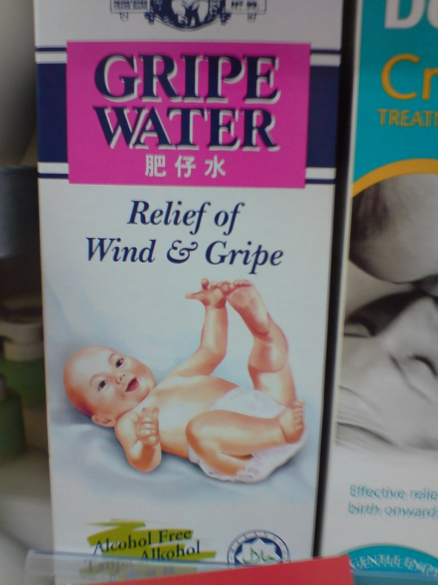
- The myth table
- Three "myths" with a kernel of truth
- The immune-and-detox aisle
- The two myths that are actually dangerous
The myth table
Eleven of the most common things people will tell you, marked with what the evidence actually says and how confident that verdict is. The short version: most are harmless folklore, a few waste money, and a couple point the wrong way on safety. None of them require you to buy anything.
Evidence grades: strong = reviews, multiple trials, or official consensus; good = a solid single trial or guideline; mixed = observational, contested, or one small study; weak = anecdotal or marketing-only.
| The claim | What the evidence says | Verdict |
|---|---|---|
| Teething causes fever (and diarrhea, and serious illness) | Teething can bring mild gum symptoms, drooling, irritability, and a temperature up to about 38 C, but a true fever (38 C / 100.4 F and above) is not caused by teething and should be evaluated on its own. Blaming a real fever on teeth can delay care for an actual infection. Jhunjhunwala 2025 | Mostly false strong |
| You will spoil a baby by holding them or answering every cry | You cannot spoil a young baby. In the first months crying is pure need-signaling, and prompt, consistent response builds trust and produces less crying. In a randomized trial, babies carried more cried 43% less. The warning traces to 1920s behaviorism. Hunziker 1986 | False good |
| Cereal in the bottle helps a baby sleep through the night | Adding cereal to a bottle does not improve sleep, and it adds a choking risk, can overfeed, and is not how solids should start. Trials find no sleep benefit; the AAP advises against it. (When thickening is medically needed for reflux, use oatmeal, not rice, and follow your pediatrician.) AAP | False good |
| Baby walkers help a baby learn to walk sooner | Walkers do not speed walking and may slightly delay it; more importantly they are a leading cause of serious infant injury (falls down stairs, burns, poisonings reached from a new height). The AAP has called for a ban; Canada banned their sale in 2004. AAP 2018 | False, and unsafe strong |
| This premium formula is "closer to breast milk" | No formula is breast milk, and the marketed add-ins (HMO, MFGM, DHA/ARA, probiotics) range from "limited evidence" to "no clear benefit for healthy term infants." The cheapest iron-fortified standard formula meets the same nutritional bar. Safe preparation matters far more than brand. Cheung 2023, BMJ | Marketing good |
| Amber teething necklaces ease teething pain | No evidence they relieve pain, and a real strangulation and choking hazard worn on a baby. The FDA warned against teething jewelry in 2018 after reported deaths and injuries. FDA 2018 | False, and unsafe strong |
| Playing Mozart makes a baby smarter (the "Mozart effect") | No. The original 1990s finding was a tiny, brief spatial-task bump in college students that did not replicate and was never about babies or lasting IQ. No baby media or "enrichment" product raises intelligence or synapse counts. Nature 1999 | Myth strong |
| Gripe water settles colic and gas | No clinical trials show it works, it is sold as an unregulated supplement, and it has a history of contamination and recalls, so "harmless" is not guaranteed. Plain comfort measures are the better bet. AAFP 2015 | No evidence weak |
| Immune "boost" drops keep a baby from getting sick (elderberry, echinacea, zinc, vitamin C) | None is recommended for healthy infants, the evidence in children is thin or absent, and several carry infant hazards (lozenge choking, cyanide in raw elderberry, dosing errors). "Immune support" is a permitted vague phrase, not a proven effect. Cochrane 2014 | Mostly marketing mixed |
| The five-second rule: food off the floor is safe if grabbed fast | Bacteria transfer effectively instantly (at under one second in the lab), and how much depends most on how wet the food is and what surface it hit. A faster grab helps only at the margin. For a young baby, just toss floor-dropped food. Miranda 2016 | False strong |
| You must burp a baby after every feed or they will be in pain | Burping is fine and harmless to try, but not proven necessary. The one randomized trial found no reduction in colic and slightly more spit-up in the burped group. Do not wake a sleeping baby to burp them. Kaur 2015 | Overstated good |
Several of these have their own fuller treatment elsewhere: spoiling and gripe water in Soothing, "closer to breast milk" and cereal-in-the-bottle in Feeding, teething products and amber necklaces in Daily care, walkers in Growth and development, and the Mozart and screen-enrichment claims in Growth and development.
Go deeper on the table
Teething. A 2025 meta-analysis of 25 studies put the global prevalence of teething symptoms at about 80% of episodes, with increased biting (about 66%) and irritability (about 61%) as the commonest, and gum rubbing, drooling, and a mildly raised temperature also common. Jhunjhunwala 2025 strong evidence The key word is "mildly raised." A genuine fever of 38 C / 100.4 F or higher, especially in a baby under three months, is never "just teething" and should be assessed on its own merits. The danger of the teething-fever myth is delay.
Cereal in the bottle. The sleep claim was tested decades ago and failed: adding rice cereal to bedtime bottles did not help infants sleep through the night. Macknin 1989 It also encourages overfeeding, can pose a choking risk in a bottle, and bypasses the spoon-feeding that solids should begin with. The one legitimate use of thickened feeds is for diagnosed reflux, and even there the AAP now prefers oatmeal over rice cereal because of inorganic arsenic in rice, or a commercial anti-reflux formula, on a pediatrician's advice. FDA
Walkers. Mobile baby walkers are associated with thousands of injuries a year, the worst from tumbling down stairs, and they do not advance motor development (if anything they delay sitting and walking slightly, because the baby practices an unnatural movement and cannot see their own feet). AAP 2018 strong evidence Stationary activity centers (no wheels) are a safer alternative, used in moderation. The AAP supports a US ban; Canada banned sale, importation, and advertising of walkers in 2004.
The Mozart effect. The 1993 study reported a small, roughly 10- to 15-minute improvement on one spatial-reasoning task in college students after listening to Mozart, never an IQ gain and never in infants. Rauscher 1993 A large meta-analysis later found the effect is negligible and likely just a short-term arousal-and-mood bump from any music you enjoy. Chabris 1999 strong evidence The wider "baby genius" media category collapsed under the same scrutiny: Disney offered refunds on Baby Einstein videos in 2009. Music with your baby is lovely. It is not a brain investment, and you do not need a special CD.
Three "myths" with a kernel of truth
Being honest about folk wisdom means admitting when it is not 100% wrong. Three of the classics have a real, much-misunderstood signal underneath. Naming the kernel does not change the practical advice, and it keeps the debunk credible.
"You catch a cold from cold air, drafts, or wet hair"
The strong claim is false. A cold is an infection. More than 200 viruses can cause it (rhinovirus most often), and you catch it by getting virus into your nose or eyes from another person or a contaminated surface, not from chilly air. Most children get about 8 to 10 colds in their first two years, which is normal, not a sign of a weak baby. AAP 2025 strong evidence If no virus is present, no amount of chilling produces a cold.
The kernel of truth. Colds really are seasonal, but the driver in winter is people crowding indoors plus very dry heated air (which helps virus particles linger), not the outdoor temperature itself. humidity-seasonality review good evidence Rhinovirus also replicates better at the cool temperature of the nose (about 33 to 35 C) than at core body temperature, partly because the local antiviral response is weaker when cool. Foxman 2015 mixed evidence And one small randomized study found that chilling the feet triggered cold symptoms in about 10% of people, the theory being that it reactivates a virus a person is already carrying, not that it creates an infection from nothing; older, better-controlled challenge studies found no chilling effect at all. Johnson 2005 mixed evidence So a weak, contested "chilling can tip a carrier into symptoms" signal exists; "cold air gives you a cold" does not. See the unsafe-myths note below for why the folk fix (bundling the baby up) actually points the wrong way.
"Feed a cold, starve a fever"
The strong claim is false and, for a baby, potentially harmful. There is no evidence that deliberately under-feeding a feverish child helps, and fever actually raises fluid needs, so the real risk runs toward dehydration. For any cold or fever in a baby, keep breast milk or formula going on demand, and for an older baby on solids, offer food without forcing it. Watch wet diapers, not calories. AAP strong evidence
The kernel of truth. A baby's appetite naturally dips for a day or two during an infection; that is normal and not the same as a caregiver restricting food on purpose. The proverb is sometimes "vindicated" by a single tiny lab experiment in healthy volunteers in which a meal shifted one immune marker, but the authors themselves cautioned readers not to change behavior based on it. van den Brink 2002 mixed evidence It is a curiosity about cytokines, not a feeding rule. The practical line stays: fluids, and feed to appetite.
"Suck-cleaning your baby's pacifier protects them from allergies" (a genuine stand-off)
This is the one entry that is not a clean debunk. It is a real, unresolved tension between two bodies of evidence, and the honest move is to name both and explain why the practical guidance still lands where it does.
One side, the dental concern. Cavity-causing bacteria (especially Streptococcus mutans) pass from a caregiver's saliva to the baby, and saliva-sharing habits like "cleaning" a pacifier in your own mouth seed the baby's mouth earlier, which is linked to more early-childhood cavities once teeth come in. Dental bodies advise against mouth-cleaning pacifiers for this reason. AAPD 2024 good evidence
The other side, the famous allergy finding. A small Swedish study of 184 infants reported that babies whose parents suck-cleaned the pacifier had less asthma and eczema at 18 months, proposing that saliva microbes "train" the infant immune system. Hesselmar 2013 mixed evidence It was a single, small, observational study with wide error bars and obvious confounding (suck-cleaning parents may differ in many ways), and attempts to replicate it have not reproduced the benefit. A larger Australian cohort found the opposite direction, with pacifier use (especially with antiseptic cleaning) linked to more food allergy. Barwon Infant Study 2021 mixed evidence
Net guidance (unchanged). Both the cavity concern and the failed allergy replication point the same practical way: do not clean a pacifier in your own mouth, rinse it with water or use a clean spare. And keep using a pacifier if you like, because offering one at sleep is separately linked to lower SIDS risk. The single much-publicized 2013 study suggested saliva might help, but it has not held up, so it does not override the cavity concern. AAPD 2024
The immune-and-detox aisle
A whole shelf is sold to "boost immunity" or "detox" a baby. For a healthy term infant, the settled supplement list stays tiny (vitamin D, iron when indicated, the vitamin K shot at birth), and this entire category sits outside it. The most useful durable fact is the regulatory one: these are supplements, not FDA-approved drugs, and "supports the immune system" is a phrase chosen precisely because "prevents colds" would be illegal without proof. FTC 2022 strong evidence
The evidence, product by product
Elderberry. A small meta-analysis suggested it may ease upper-respiratory symptoms in adults, but the national body (NCCIH) is far more guarded, and there is insufficient evidence to know if it helps with COVID-19. NCCIH 2024 mixed evidence The infant-relevant hazard: raw or unripe elderberries and other parts of the plant contain compounds that release cyanide; cooking destroys them, so commercial products are processed, but home preparations are a poisoning risk.
Echinacea. The Cochrane review (24 trials, 4,631 participants) found echinacea has not been shown to treat colds, with at most a possible weak prevention effect, and the evidence in children is insufficient (some children developed rashes). Cochrane 2014 strong evidence Not recommended for infants.
Zinc. The Cochrane review (34 studies, 8,526 participants) found zinc may shorten a cold by roughly two days in adults but with low certainty and more side effects, and "little or no" prevention effect; the dose and the pediatric evidence are both unsettled. Cochrane 2024 mixed evidence Either way, lozenges are a choking hazard and the high doses studied are not for babies.
Vitamin C. Routine vitamin C does not prevent colds in the general population; the modest effect on duration applies to ongoing daily dosing in specific groups, not to babies, and no pediatric body recommends vitamin C drops to prevent infant colds. good evidence (it does not prevent colds)
"Detox," heavy-metal cleanses, and chelation supplements. Healthy babies do not need "detoxing"; the liver and kidneys do that. There is no credible evidence behind these products, and the FDA has never approved any over-the-counter chelation product for any condition (it warned eight firms in 2010). This is a safety line, not just wasted money: chelation given to a child for unproven "detox" has caused deaths. FDA strong evidence
The emblem of the category: Airborne. The "miracle cold buster" was a dietary supplement whose "clinical trial" was run by a two-man company with no doctors or scientists. A class action and the FTC brought the total settlement to $30 million in 2008, with the FTC concluding there was "no credible evidence" the product reduced colds. CSPI 2008 strong evidence The FTC has run similar cases since, returning more than $930,000 to buyers of a "detox" tea that falsely claimed to prevent colds and flu.
The two myths that are actually dangerous
Most busted myths are harmless. Two are not, because the folk "fix" points away from safety. These are worth knowing clearly.
Safe, and what to do instead
- Dress your baby in no more than one layer more than an adult would wear to be comfortable in the same room
- Keep the baby's head uncovered for sleep after the first hours of life
- Watch for overheating: sweating, flushed skin, a chest that is hot to the touch
- Trust the liver and kidneys to handle "toxins"; give only the supplements your pediatrician recommends
Stop doing
- Over-bundling to "prevent a cold": overheating and head-covering are risk factors for SIDS, so warmth-as-cold-prevention is both useless and hazardous
- Giving any "detox," heavy-metal cleanse, or chelation product to a baby
- Treating a real fever as "just teething" and waiting it out
- Putting a baby in a mobile walker or an amber necklace
What turns folklore into a hazard: when the "remedy" adds heat, an object near the airway, a toxic dose, or a delay in real care. That is the line between a harmless myth and an unsafe one.
The evidence on the two safety inversions
Over-bundling. The folk fix for "catching cold" is to wrap the baby up warmly, and the safe-sleep evidence inverts it. The AAP advises dressing an infant in no more than one layer more than an adult would wear to be comfortable, avoiding head-covering, and watching for overheating, because overheating and head-covering are recognized contributors to SIDS. AAP 2022 strong evidence So a slightly cooler, lighter-dressed, uncovered-head sleep setup is the safer one. This matters most for sleep; for a cold outdoors, normal warm clothing is fine, the point is simply that bundling does not prevent illness and overheating during sleep is a real risk.
"Detox" for a baby. Covered above: there is no condition in a healthy infant that "detoxing" treats, the products are unproven, and pediatric chelation for unproven indications has been fatal. FDA If you are worried about a specific exposure (lead, for example), that is a real conversation with your pediatrician and a blood test, not a supplement.
As of June 2026, the myth-busting evidence on this page is stable; product names and enforcement actions change, so check the linked source for the latest on any specific product.
Sources
- Jhunjhunwala R, Garima, et al. Signs and symptoms of teething (meta-analysis). Int J Paediatr Dent 2025;35(3):608. PMID 39344021
- Hunziker UA, Barr RG. Increased Carrying Reduces Infant Crying (RCT). Pediatrics 1986;77(5):641. PMID 3517799; AAP HealthyChildren, Responding to Your Baby's Cries. link
- Macknin ML, et al. Infant sleep and bedtime cereal. Am J Dis Child 1989;143(9):1066. PMID 2748584; AAP, Switching to Solid Foods. link; FDA, Arsenic in Rice. link
- AAP. Injuries Associated With Infant Walkers (policy and data). Pediatrics 2018;142(4):e20174332. link
- Cheung KY, et al. Health and nutrition claims for infant formula. BMJ 2023;380:e071075. link
- FDA. Safely Soothing Teething Pain (teething jewelry warning, 2018). link
- Rauscher FH, Shaw GL, Ky KN. Music and spatial task performance. Nature 1993;365:611. link; Chabris CF. Prelude or requiem for the "Mozart effect"? Nature 1999;400:826. link
- American Academy of Family Physicians. Infantile Colic (gripe water). AFP 2015. link
- Karsch-Volk M, et al. Echinacea for preventing and treating the common cold. Cochrane 2014, CD000530. link; Nault D, et al. Zinc for the common cold. Cochrane 2024, CD014914. link; NCCIH, Elderberry; Echinacea (2024). elderberry, echinacea
- Miranda RC, Schaffner DW. Longer Contact Times Increase Cross-Contamination (the five-second rule). Appl Environ Microbiol 2016;82(21):6490. PMC5066366
- Kaur R, Bharti B, Saini SK. RCT of burping for colic and regurgitation. Child Care Health Dev 2015;41(1):52. PMID 24910161
- AAP HealthyChildren. Children & Colds (2025). link; Coughs and Colds: Medicines or Home Remedies? link
- Roles of Humidity and Temperature in Influenza Seasonality (review). PMC4097773; Foxman EF, et al. Temperature-dependent innate defense against the common cold virus. PNAS 2015;112(3):827. link; Johnson C, Eccles R. Acute cooling of the feet and the onset of common cold symptoms. Fam Pract 2005;22(6):608. link
- van den Brink GR, et al. Feed a Cold, Starve a Fever? Clin Diagn Lab Immunol 2002;9(1):182. link
- American Academy of Pediatric Dentistry. Policy on Pacifiers (Reference Manual 2024-2025). PDF; Hesselmar B, et al. Pacifier Cleaning Practices and Risk of Allergy. Pediatrics 2013;131(6):e1829. PMID 23650304; Barwon Infant Study. Pacifier sanitization and food allergy. JACI 2021. PMID 33810856
- FTC. Health Products Compliance Guidance (Dec 2022). link; FDA, Questions and Answers on Unapproved Chelation Products. link; CSPI, Airborne settlement (2008). link
- Moon RY, et al. Sleep-Related Infant Deaths: Updated 2022 Recommendations (overbundling, head-covering). Pediatrics 2022;150(1):e2022057990. link
How the world does it
all of it
Almost every confident rule you have been handed about feeding, sleep, and affection is recent, local, and reversible. For most of human history and across most of the world today, babies are carried in near-constant contact, fed on cue, sleep beside their mothers, are answered within seconds, and are raised by a web of kin rather than one exhausted parent. Knowing that does one job here: it separates the handful of things that genuinely keep a baby alive (and travel everywhere) from the much larger pile of style, where the global and historical record shows many good ways to raise a healthy child.
- The one line that organizes everything
- It really does take a village
- Where babies sleep (and the cosleeping question)
- The supported mother: confinement traditions
- The biggest fact in the history of infancy
- The advice pendulum: a century of reversals
- How other rich countries run well-baby care
The one line that organizes everything
If a practice is about keeping a baby alive (clean water and clean feeding, vaccination, back-sleeping, feeding a hungry baby, responding to distress), it is a near-universal and the evidence travels everywhere. If it is about how you arrange sleep, schedule feeds, stimulate, swaddle, wean, or share the work, it is cultural style, and there is no single right answer. This is the line the guide draws so it can respect other ways of parenting without ever relativizing safety.
The field that studies this is called ethnopediatrics (the term is Carol Worthman's; the popular touchstone is Meredith Small's Our Babies, Ourselves, 1998). Its most useful idea comes from the anthropologist Robert LeVine: the goals of parenting are nearly universal (survival and health first, then the capacity to support oneself, then becoming a culturally valued person), while the strategies are local, and many very different strategies raise healthy children without inflicting harm. LeVine 1988 strong, durable framing A baby soothed and carried and protected (LeVine's "pediatric" model) and a baby talked-to and stimulated and put on a schedule (the Western "pedagogical" model) are two routes to the same end.
Go deeper: the WEIRD caveat, and where it stops
There is a reason to hold mainstream baby science a little loosely. A landmark 2010 paper showed that the people behavioral science actually studies are a global outlier: about 96% of study samples came from Western countries, drawn from a slice of humanity (Western, educated, industrialized, rich, democratic, the acronym is WEIRD) that is roughly 12% of the world's population, and a frequently cited companion figure is that about 68% of subjects were from the United States alone. Henrich, Heine and Norenzayan 2010 strong evidence So when a source tells you what a "well-developed" or "well-adjusted" baby looks like, or that infants should sleep alone or feed on a clock, some of that may be encoding WEIRD values rather than human universals.
But the caveat has an edge, and the edge matters. The 2020s correction (from within the same field) is that "WEIRD" is now sometimes overused as a rhetorical move, and that not everything fails to generalize. The honest posture is humility about scope, not nihilism. It does not license ignoring back-sleeping, vaccination, or clean feeding, which are exactly the findings that do travel. The cleanest illustration is back-sleeping itself: it is often heard as a stern Western recommendation, but the West actually adopted it late, learning from cultures that already put babies on their backs (Hong Kong's customary supine sleep went with very low SIDS long before Western campaigns). The Netherlands launched a back-sleeping campaign in 1987 and the US "Back to Sleep" campaign followed in 1994; SIDS then fell by more than half in country after country that switched. Safe to Sleep / NICHD strong evidence A survival universal the West was slow to learn is the opposite of a Western imposition.
It really does take a village
"It takes a village" is not a slogan, it is literal evolutionary anthropology. Across hunter-gatherer societies, helpers other than the mother (fathers, grandmothers, older siblings, aunts, unrelated campmates) provide roughly 40% to 50% of a young child's care. Humans are what biologists call cooperative breeders: mothers were never meant to do this alone. Chaudhary, Page et al. 2024 good evidence
The most intensively measured case is the !Kung (Ju/'hoansi) of the Kalahari, studied by Melvin Konner. Young infants there are in physical contact with someone about 90% of the time in the first months, declining only gradually to around 25% by the middle of the second year, and caregivers respond to crying within an average of about six seconds. Konner In a closer analysis, 88% of crying bouts got a response within 3 seconds and essentially all within ten, almost always with comfort or a feed, with scolding vanishingly rare. Kruger and Konner 2010 good evidence This is the cross-cultural answer to the "am I spoiling my baby" worry: the worry has no support, and fast, warm response to distress is the human norm.
Go deeper: who actually holds the baby (it is not always the mother, or the grandmother)
The "village" is real but it is not a uniform picture, and the variation is the point. Different societies fill the roles differently:
- The intimate-father outlier. Among the Aka of Central Africa, fathers hold their infants about 47% of the time and are within arm's reach roughly half the day, among the highest documented direct paternal care anywhere, tied to a husband-wife net-hunting subsistence that keeps fathers near babies. Hewlett 1991 single society, classic
- The Hadza. By interaction time, fathers and older sisters each account for roughly 18%, older brothers about 8%, maternal grandmothers about 9%, and a wide "others" category about 29%, with the mother making up the rest. After fathers, grandmothers are the helper category spending the most time. Marlowe 2005 The more closely related a helper is, the more they hold the child, and a Hadza child under four who is held is cared for by an average of about 2.3 different helpers (range 1 to 17). Crittenden and Marlowe 2008 good evidence
- The modern, sensor-measured version. Using portable proximity sensors on 49 children under four in two foraging societies (Agta and BaYaka), mothers accounted for only about 22% and 21% of children's close-proximity time; the average child's close network was 12 to 14 people, with relatives about 70% of proximity and unrelated campmates and siblings the rest. Chaudhary, Page et al. 2024 good evidence
The grandmother question. The famous "grandmother hypothesis" (Hawkes and colleagues, from Hadza data) proposes that the unusually long human post-menopausal lifespan evolved because grandmothers who could no longer reproduce raised their fitness by provisioning grandchildren, which also let mothers wean early and have the next baby sooner. The systematic test of who keeps children alive, a review of 45 natural-fertility and historical populations, found that a mother's presence almost always matters (her death sharply raises child mortality), maternal grandmothers reliably help in a majority of studies, and, strikingly, fathers help in only about a third of studies and made no significant difference in about half. Sear and Mace 2008 strong evidence So the broad point (allomaternal help, with grandmothers prominent, materially improves child survival) is well supported. The narrow claim that grandmothering specifically drove the evolution of menopause remains a fascinating but contested hypothesis, not settled fact. Hawkes and Smith The practical takeaway is unambiguous: getting help is not a luxury or a weakness, it is the arrangement our biology assumes.
Where babies sleep (and the cosleeping question)
Solitary infant sleep, the baby alone in its own room, is a modern, mostly Western arrangement. In systematic codings of the ethnographic record, the infant sleeping beside the mother is the norm in roughly two-thirds to four-fifths of documented societies. This is a clean example of cultural style: where a baby sleeps is genuinely variable, even though the safety of any given arrangement (covered separately, in the sleep section) is not.
The best comparable data come from one survey instrument applied across many places at once. A study of 29,287 children from birth to 36 months across 17 countries and regions found bed-sharing ranging from 5.8% in New Zealand to 83.2% in Vietnam, with families in predominantly-Asian countries far more likely to both bed-share and room-share. Mindell et al. 2010 good evidence Older systematic codings agree on the historical pattern: in one classic sample of 136 societies, mother and infant shared a sleep surface in about two-thirds, and in another the infant shared the parents' room in about 79% of societies and the same sleeping surface in about 44%, with cosleeping near-universal in non-industrial societies. HRAF, Whiting 1964; Barry and Paxson 1971 strong, cross-cultural coding
Cosleeping: a cultural birthright, or a safety hazard to prohibit?
The cultural-birthright camp (anthropologists McKenna, Small): cosleeping is the historical and majority-world human norm, it supports breastfeeding and responsiveness, and treating it as deviant pathologizes ordinary parenting and ignores how most of the species sleeps.
The safety camp (the US AAP): in the modern Western context the pooled data cannot show that bed-sharing is safe for the youngest infants, and because no parent can guarantee a hazard-free surface every night, the clean public-health message is a separate sleep surface.
Where the evidence sits (dated 2026): these are answering two different questions and both can be right at once. The anthropology is correct that cosleeping is normal and ancient; the safety bodies are right that the modern arrangement carries real, hazard-dependent risk. The detailed safety evidence (and a fuller harm-reduction fork) is in the sleep section; the takeaway there is that the sofa or armchair is by far the most dangerous surface, so a tired night-feeder should plan a safer arrangement rather than rely on staying awake. two questions, not one fight
A reasonable default: let culture supply the reassurance that wanting your baby close is normal and human, and let the safety section supply the specifics of how to do sleep safely wherever your baby ends up. Do not let either erase the other.
The supported mother: postpartum confinement traditions
Many cultures institutionalize, as ritual, exactly the help that cooperative-breeding biology assumes and that the isolated Western postpartum often strips away: a defined recovery window of about a month in which the new mother rests, is fed warming and nourishing food, has visitors limited, and is tended by a network of (mostly female) kin who do the work so she can heal and establish feeding.
Two of the best-known examples: zuo yuezi ("sitting the month") in China and the Chinese diaspora is a structured recovery period of about 30 to 40 days (today Chinese medical opinion often advises at least 42), documented over two thousand years ago in the Book of Rites, in which the mother rests, stays warm, limits activity and visitors, eats warming nutrient-dense foods, and is cared for by a family elder or, increasingly, a paid confinement nurse. Postpartum confinement La cuarentena ("the quarantine") across Mexico and Latin America is the 40 days after birth in which the mother rests, observes dietary and activity restrictions, and is helped with the household by female kin. Waugh 2011 ethnographic
The biggest fact in the history of infancy
The single most important thing to know about the history of having a baby is that the thing parents fear most, their baby dying, became roughly twenty times rarer within living memory. In 1900 about 1 in 10 US infants died before their first birthday; today it is closer to 1 in 180. Almost every other risk number in this guide should be read against that backdrop.
Two honesties keep this chart truthful. First, the 1900 number is an estimate, not a count: the US had no national birth registration until 1915 (the first reliable figure is 99.9 per 1,000 in 1915), and because the early registration area left out the rural South and most Black families, the true national rate around 1900 was probably nearer 140 per 1,000, or about 1 in 7. Eriksson, Niemesh and Thomasson 2017 Second, the line is not perfectly smooth: the US rate ticked up from 2021 to 2022 (5.44 to 5.60), and the final 2023 figure is 5.61, so the chart does not pretend the only direction is down. CDC NCHS 2024 strong evidence
Go deeper: what actually saved the babies (and the disparity that never closed)
The collapse was driven mainly by plumbing, milk safety, and medicine, not by stricter or more loving parenting: clean water and pasteurized milk, sewage and sanitation, refrigeration, vaccination, antibiotics from the 1940s, and later neonatal intensive care. Cunningham et al. This is the calm frame underneath the whole guide: babies stopped dying because the world got safer and cleaner, which means most of what an individual parent agonizes over is not the lever that moved this number.
The same century saw an almost equally dramatic fall in maternal death, from about 6 to 9 deaths per 1,000 live births in 1900 to a small fraction of that today (the unit shifted from per-thousand to per-hundred-thousand). The sober modern coda: the US maternal rate rose again in the 21st century, the only such reversal among wealthy nations. How much of that rise is real versus an artifact of a 2003 death-certificate change is genuinely debated, but the part nobody disputes is the racial gap. The infant-mortality gap is just as stubborn: in 1916 the Black infant rate was 184.9 versus 99.0 for white infants, and in 2023 the Black rate (10.93) was still more than double the white rate. Singh and Yu strong evidence Both rates fell about 95%; the gap between them did not close.
The advice pendulum: a century of reversals
If today's rule feels absolute, it helps to know that the expert consensus on how to feed, hold, and put a baby to sleep has reversed direction at least four times in a hundred years. The advice is a pendulum, which is permission to hold any single rule a little more loosely, and a reminder to expect the rules to keep updating.
The strict, clock-driven, unaffectionate era ran roughly from the 1910s to the 1940s. The New Zealand reformer Frederic Truby King ("Feeding and Care of Baby," 1913) prescribed feeding by the clock every four hours, "preferably never at night," with cuddling famously held to a few minutes a day, on the theory that the early months were for eating, sleeping, and growing, not bonding. Truby King 1913 The behaviorist John B. Watson ("Psychological Care of Infant and Child," 1928) went further: "Never hug and kiss them, never let them sit on your lap... Shake hands with them in the morning." Watson 1928 primary sources Both are now discredited on affection. The honest historicist note is that this advice arose when infant death from infection and bad feeding was still rampant, so the obsession with hygiene and regularity was not pure cruelty, and historians caution against treating one author as the whole era.
The counter-revolution was Benjamin Spock, whose "Baby and Child Care" (1946) opened with "Trust yourself. You know more than you think you do," sold about 500,000 copies in its first six months and 50 million by his death in 1998, and gave a generation permission to relax the schedule and show affection. Spock 1946 strong, well-documented
Were the experts wrong, or just keeping up with the science?
The "advice did real harm" reading: confident experts told parents not to hug their babies and, later, to put them to sleep face-down, and people followed, so the genre has a track record of authoritative, damaging error.
The charitable reading: advice updates as evidence accumulates, and much of the old guidance (hygiene, regularity) was a reasonable response to a world where babies routinely died of infection; calling it villainy flattens the history.
Where the evidence sits: both are defensible, and the single sharpest case study sits right in the middle. The same Spock book that was right about hugging was, from its 1956 edition into the late 1970s and beyond, wrong about sleep position, recommending babies sleep on their fronts. A 2005 historical analysis attributed over 60,000 infant deaths worldwide (between the 1950s and early 1990s) to the broad prone-sleeping advice of that era, of which his book was the most influential single vector, and the recommendation persisted in revisions for years after the epidemiological evidence had turned. Gilbert et al. 2005, via "Rethinking Dr. Spock" historical attribution
A reasonable default: the lesson is not "experts are useless," it is "advice is provisional, so expect it to update, and weight current, well-sourced safety guidance heavily while holding the style advice loosely." The best-selling parenting book of the century was right about love and wrong about sleep, and it took decades and tens of thousands of deaths to fix the second part. That is humility-inducing, not paralyzing.
Go deeper: the breastfeeding U-turn, and the swaddling round-trip
The clearest proof that infant-feeding norms track culture rather than nature is the US breastfeeding curve. Breastfeeding was near-universal in 1900, collapsed across the 20th century to a nadir of about 22% of mothers in 1972 (as bottle-feeding became the modern, doctor-advised, aspirational choice, what the historian Rima Apple called "scientific motherhood"), then climbed back to about 86% ever-breastfed by 2022. CDC NIS; IOM; Ross Mothers Survey A biological behavior swung from near-universal to a minority practice and back, driven by commerce, medicine, work, and policy, not by changing biology. The policy hinges that pushed the recovery (the 1977 Nestle boycott, the 1981 WHO marketing Code adopted 118 to 1 with the US the lone "no," and the 1991 Baby-Friendly Hospital Initiative) reframed formula marketing worldwide, though the US climb is a multi-cause, decades-long story, not a single switch. good evidence
Swaddling is the neat round-trip. Near-universal for millennia, attacked by Rousseau in 1762 as cruel binding and largely abandoned in Britain by about 1800, then medically revived in the 1990s as a soothing tool and a way to keep back-sleeping babies on their backs, and now re-restricted again (stop once a baby can roll; leave the hips free). The same practice has been "natural," then "barbaric," then "scientific," then "fine with limits," which is the pendulum in miniature. Swaddling history historian synthesis
How other rich countries run well-baby care
Every wealthy country outside the US built a universal, mostly free well-baby system that does three things the US system does not reliably do: it sends a clinician into the home in the first days to weeks, it hands the family a single portable health record they own and carry, and it leans on nurses for routine surveillance, reserving the doctor for a few anchor visits. The same vaccines and checkups, delivered by different people, in different places, recorded on different paper.
The starkest contrast is postpartum support for the mother. The US model historically reduced it to a single office visit "by about six weeks" (and roughly 40% of US women did not attend even that, which is why ACOG now urges earlier and ongoing contact). Elsewhere, a professional comes to you:
- Netherlands, kraamzorg: a trained maternity nurse comes to the home for a statutory 24 to 80 hours (about 49 typical) over the first 8 to 10 days, guiding feeding, monitoring mother and baby, and doing light household support so the mother can rest. ACCESS-NL
- Germany, the Hebamme: every family is entitled to midwife home visits, daily for the first ten days and then to about 8 to 12 weeks on need, fully covered with no copay. §134a SGB V
- Finland, neuvola: a century-old maternity-and-child clinic system used by 99.7% of pregnant people, with about 20 nurse-and-doctor checks across the pre-school years; the maternity grant has been conditional on attending care early in pregnancy since 1949. thisisFINLAND
- Ireland, the public health nurse: a home visit usually within 72 hours of discharge, plus GP checks and ongoing developmental assessments. HSE
And almost every system gives the family a single booklet they keep for life: Germany's yellow Gelbes Heft, France's carnet de sante, Japan's boshi techo (the Maternal and Child Health Handbook, invented in Japan in 1948 and since exported, with WHO endorsement of the home-based-record idea in 2018, to dozens of countries). MCH Handbook good evidence The US has no equivalent universal national record; a child's data lives in the practice's electronic system and in separate immunization registries.
Does the famous "baby box" actually save babies?
The box advocates (some governments, and US commercial sellers): Finland's cardboard maternity box, which doubles as a bassinet, is part of why Finnish infant mortality is so low, so distributing boxes should promote safe sleep and reduce sleep-related death.
The SIDS researchers and child-welfare academics: there is no trial showing a box reduces death or even changes how babies sleep, Finland's low mortality predates and parallels box-free Sweden and Denmark, and a box marketed as a safe-sleep device oversells a welfare gift.
Where the evidence sits (dated 2026): the best evidence is Scotland's national scheme, evaluated as a natural experiment on 182,122 mother-infant pairs. It found no effect on infant sleeping position, no effect on hospital admissions, and no effect on population breastfeeding (only small early reductions in tobacco-smoke exposure and a small breastfeeding rise among mothers under 25), and case numbers were too low to even measure infant mortality. The authors' verdict: real but "small" effects. McCabe et al., Lancet Public Health 2023 strong, within the study's scope Finland itself never formally evaluated its box for safe sleep. Bartick review
A reasonable default: a baby box is a lovely welfare gesture and a fine way to deliver a starter kit and a safe-sleep message, but it is not a proven SIDS device, and any product implying otherwise is overselling. What reduces SIDS is the message (back, alone, on a flat firm surface), not the cardboard. See the sleep section for what actually works.
That last chart is why the guide is US-first but keeps looking outward. The risks a parent should actually plan for depend on where they live: in much of the world the top killers are infections and the dangers of being born too small, while in the US they are congenital conditions, prematurity, SIDS, and injury. Importing the wrong fears (or the wrong reassurances) helps no one. The cross-country systems above are not a scorecard of who parents "right," they are a reminder that the same safe, healthy babies are raised in many different ways, and that needing help, closeness, and rest is built into how our species does this.
Go deeper: a quirk worth knowing (the Dutch "three R's")
Dutch infant care is organized around rust, reinheid, regelmaat (rest, cleanliness, regularity), and it is one of the few cases where a cultural style produces a measurable difference: in matched studies, Dutch babies slept about two hours more per day at six months than a US comparison group, on a more regular schedule, and were more often in calm "quiet arousal" while US babies were in alert "active arousal." van Schaik et al. 2020 good evidence The crucial caveat, from the researchers themselves, is that the three R's work only inside the whole Dutch setting (low ambient stimulation, a predictable society, strong parental leave, shared belief). It is a coherent cultural whole, not a detachable "one weird trick" you can bolt onto a different life. The lesson is not "raise your baby like the Dutch," it is that calm, regular, well-rested and alert, engaged, stimulated are both legitimate goals, and your culture is quietly choosing one for you.
· · ·
Turning one
month 12
Around the first birthday a handful of feeding rules change at once: whole cow's milk can now be the drink, breast milk or formula stops being the main meal, the bottle starts giving way to an open cup, and your baby eats more or less what the family eats. None of it has to happen on the birthday itself. The first year is a soft edge, not a switch, and a baby who is thriving on a varied diet has already done the hard part.
Whole milk as a drink
From twelve months you can offer plain whole (full-fat) cow's milk as a drink, roughly two cups (about 16 oz) a day, alongside water and food. Whole milk, not low-fat, until at least age two, because the fat matters for a growing brain. This is also the line that ends the "no cow's milk before one" rule for the bottle or cup.
Go deeper
The reason cow's milk waited until now was never the milk fat, it was iron. Plain cow's milk is a poor source of iron, its calcium and casein actively block iron absorption from other foods, and in infancy it causes microscopic intestinal blood loss in roughly 40% of otherwise healthy babies, a bleed that fades and stops after about age one. Ziegler, Nutrition Reviews 2011 In one controlled feeding study the share of stools with hidden blood rose from 3% to 30% over the first month of cow-milk feeding. Ziegler, J Pediatr 1990 good evidence By the first birthday the gut has matured, iron stores are topped up from food, and the bleeding stops, which is why the same milk that was a problem at nine months is fine at twelve. The "small amounts in food are fine earlier" exception still holds: whole-milk yogurt and cheese as table foods, and a splash of milk in cooking or on cereal, were always allowed from about six months. It is cow's milk as the main beverage, replacing breast milk or formula, that waits for one. CDC 2026 strong evidence
Two cups a day (about 16 oz) is plenty. Much more than that fills a toddler up, displaces iron-rich food, and is itself a classic cause of toddler iron-deficiency anemia, so milk is a food among foods now, not the meal. AAP HealthyChildren good evidence
Do toddlers need a "follow-on" or toddler "growing-up" milk?
The makers say: stage-two and toddler milks are nutritional insurance for picky eaters and a gentle bridge from formula to cow's milk.
Public-health bodies say: healthy children over twelve months do not need them. They are often sweetened (commonly around 20% added sugar by some measures), the research behind them is heavily industry-funded, and the "stage 3" numbering is a marketing device that piggybacks on infant-formula trust.
Where the evidence sits (dated, 2026): the AAP, WHO, NHS, and independent reviewers call them unnecessary and potentially harmful, while the category is one of the fastest-growing in the grocery aisle and the subject of active US litigation. About 60% of caregivers wrongly believe they are uniquely nutritious. UConn Rudd Center
A reasonable default: skip them. After twelve months, plain whole cow's milk (or fortified soy), water, and a varied diet of family food cover what a healthy toddler needs. This is the clearest case of marketing outrunning evidence in the whole feeding aisle.
The breast and formula taper
Formula's job is essentially done at twelve months; whole milk and food take over, and there is no nutritional reason to keep buying it. Breastfeeding is different: it can continue as long as you and your baby both want, with WHO and the AAP supporting it into the second year and beyond. Either way, milk shifts from the center of the diet to the edge of it.
Go deeper
Stopping formula. At one year, fortified whole cow's milk plus a normal toddler diet supplies what formula used to. You can switch over a week or two, mixing increasing amounts of cow's milk with decreasing formula if your baby resists the taste change, or simply swap if they do not mind. There is no need for a toddler formula step in between (see the fork above).
Continuing to breastfeed. Nothing about turning one means weaning. WHO recommends continued breastfeeding "up to 2 years or beyond" alongside family food, and the AAP supports breastfeeding for as long as mother and child wish; second-year nursing still delivers immune factors, comfort, and real nutrition. WHO 2023 good evidence Because milk supply is set by milk removal, if you do choose to wean, dropping one feed every few days lets your body wind production down gently and avoids engorgement or a clogged duct. Many toddlers self-wean gradually as food and cup-drinking take over; some keep a morning or bedtime feed for a long time. Both are normal.
Whichever you do, the headline change is the same: from about twelve months, food is the main event and milk (breast, cow, or fortified soy) is a supporting drink, not the meal.
Bottle to open cup
The goal is to be off the bottle by around twelve to eighteen months, with twelve months as the target to start in earnest. Offering water and milk in an open cup (or a straw cup), and moving milk feeds out of the bottle, protects emerging teeth and helps a toddler learn to drink, not suck, their fluids.
Go deeper
The AAP frames the weaning window as roughly twelve to eighteen months, with earlier generally easier than later. AAP HealthyChildren expert guidance Two reasons drive it. First, a bottle (or a no-spill spout cup sipped all day) bathes the teeth in milk or juice sugars far longer than cup-drinking does, which raises early-childhood tooth-decay risk; this is the same logic behind never putting a baby to bed with a bottle. Second, prolonged bottle use is linked with drinking too much milk and with iron-deficiency anemia in toddlers. Practical moves that work: introduce an open or straw cup with water from around six months so the skill is already there, drop the daytime bottles first and the comfort bottle (usually bedtime) last, and offer milk in the cup at meals rather than the bottle between them.
You can actually start the open-cup habit well before one. Around six months, alongside breast milk or formula, a baby can be offered a little plain water, about 4 to 8 oz (half a cup to a cup) a day, in an open or straw cup; that is the on-ramp to being bottle-free by the second year. There is still no fruit juice before twelve months, and after one, juice should be capped at about 4 oz a day. AAP HealthyChildren strong evidence
Table foods
By around twelve months most babies are eating soft versions of family meals: chopped, mashed, or strip-shaped pieces of whatever you are eating, three meals plus snacks, with their own appetite as the guide. The aim of the whole first year of solids was to land here, on real food at the family table.
Go deeper
Keep advancing texture. If anything, the second half of the first year is the time not to get stuck on smooth purees. Large prospective cohorts (the UK ALSPAC study, 7,821 children followed to age seven) found that babies introduced to lumpy, textured food only after about ten months were fussier eaters and ate a narrower range of fruits and vegetables years later, pointing to a sensitive window for learning to handle texture roughly between six and ten months. Coulthard, Maternal & Child Nutrition 2009 mixed evidence So by one year, soft finger foods and family textures should be well underway. Gagging during this stretch is expected and protective, not a reason to retreat to purees.
Responsive feeding still rules. You decide what is offered and when; your toddler decides whether and how much. Watch for fullness cues and stop when they turn away or slow down, do not push the last spoonful or insist on a clean plate, and do not use food as a reward, a punishment, or a pacifier. New foods often take 8 to 15 or more exposures before acceptance, so keep calmly re-offering rejected foods without pressure. WHO 2023 strong evidence This also defuses portion anxiety: a toddler's appetite swings wildly day to day, and your job is to offer, not to make them hit a target.
Keep allergens in rotation. Once you introduced common allergens (egg, peanut, dairy, soy, wheat, fish, tree nuts) in the first year, the win is keeping them in the regular diet, ideally a few times a week, not introducing once and dropping them. Early, sustained peanut exposure cut peanut allergy at age five by about 81% in the landmark LEAP trial. Du Toit, NEJM 2015 strong evidence Occasional or one-off exposure can fail.
The few foods that still wait or never belong
Some rules outlast the first birthday:
- Honey is now safe. The no-honey rule was only ever about infant botulism under twelve months; from one year honey, including in baked goods, is fine. CDC 2026
- No added sugar, still. The US Dietary Guidelines now advise avoiding added sugars not just under two but through age ten, so this rule extends well past toddlerhood. Dietary Guidelines for Americans 2025 to 2030 strong evidence
- Keep salt low. Skip adding salt and go easy on salty processed and adult foods (cured meats, many cheeses, canned soups, savory snacks); a toddler's kidneys handle sodium poorly.
- Choking shapes still need cutting. The shape rules run to about age four: quarter grapes and cherry tomatoes lengthwise, cut hot dogs and sausages lengthwise then into small pieces, no whole nuts, popcorn, hard raw carrot, or hard candy, and only thinned smooth nut butter, never a glob. CDC good evidence
The supplement summary
For a healthy term baby the evidence-backed supplement list stays short and cheap: vitamin D, iron at the right time, and (only for some children, only after this point) a fluoride decision. Almost everything else on the baby-supplement shelf, the immunity drops, the "brain-building" omega gummies, the gripe water, is marketing, not medicine.
Go deeper
Vitamin D. Breast milk is naturally very low in vitamin D, so in the US every breastfed or partly breastfed infant should get 400 IU a day from the first days of life. At twelve to twenty-four months the recommendation rises to 600 IU/day. A formula-fed baby drinking enough fortified formula (the AAP states the threshold as both 32 oz and "more than 27 oz" across its materials, so think roughly a quart a day) is already covered. AAP HealthyChildren strong evidence Get it from the standard 400 IU infant product: vitamin D overdoses in babies have come from concentrated drops dosed by the dropperful instead of the drop.
Iron. A term baby is born with iron stores that, with breast milk, last about four to six months; after that, iron has to come from food (or a supplement), which is the real reason solids exist and "food before one is just for fun" is a myth. In the US the AAP recommends 1 mg/kg/day of iron for breastfed and partly breastfed infants from four months until iron-rich foods are well established, and a universal anemia (hemoglobin) check at twelve months. AAP 2010 via AAFP good evidence Standard infant formula is already iron-fortified (about 10 to 12 mg per liter), so formula-fed babies generally need no separate iron drop. By the first birthday the lever shifts almost entirely to food: iron-rich meats, beans and lentils, tofu, egg, and fortified cereals, helped along by not letting milk crowd them out.
Fluoride. This is the one that finally becomes a question around now, and only for some children. There is no fluoride for any baby under six months. For high-cavity-risk children whose drinking water has little fluoride (under about 0.3 ppm, classically well water), a small prescription supplement was historically an option from six months. As of late 2025 the US FDA restricted ingestible fluoride drug products to children age three and older at high decay risk, so for a one-year-old the practical answer is usually topical, not swallowed. FDA 2025 strong evidence The everyday fluoride lever is toothpaste: from the first tooth, brush twice a day with a rice-grain smear of fluoride toothpaste (a pea-sized amount from age three). For a healthy baby on fluoridated tap water, nothing changes, they were never a supplement candidate. AAPD strong evidence
As of June 2026, the US fluoride-supplement and vaccine-schedule landscape is actively changing; check the linked source for the current rule.
What you can skip. The AAP holds that a healthy baby on a normal diet needs no multivitamin and no routine supplement beyond vitamin D and iron-when-indicated. Term-infant DHA drops and "brain-building" formula show no consistent IQ or vision benefit in trials. Cochrane 2017 Gripe water and homeopathic teething tablets are unregulated and have caused real harm (the teething tablets prompted an FDA warning over more than 400 adverse events including 10 infant deaths from inconsistent belladonna). weak / marketing One genuine exception lives at the edges: a strictly vegan or vegetarian breastfeeding mother needs reliable vitamin B12 (her own supplement, with provider guidance), because an exclusively breastfed baby of a B12-deficient mother can suffer lasting neurological injury.
The twelve-month visit
The one-year well-child visit is a real checkpoint: growth and development are reviewed, vaccines are due, and two routine screens (anemia and lead-exposure risk) typically happen here. It is also the natural moment to talk through the milk, cup, and feeding changes above.
Go deeper
What usually happens at the twelve-month visit in the US Bright Futures schedule:
- Growth and development. Weight, length, and head circumference plotted (expect the growth curve to flatten compared with the first six months), plus a developmental check. Remember milestones are a band, not a line, and the one always-act red flag is loss of a skill the baby already had.
- Anemia screen. A hemoglobin check is the standard universal iron screen at this age. AAP 2010 via AAFP
- Lead-risk assessment. A risk-factor check, with a blood-lead test if indicated (and a universal test in many areas and for Medicaid-enrolled children); the CDC's blood-lead reference value is 3.5 ug/dL.
- Vaccines. The twelve-month cluster typically includes MMR, varicella (chickenpox), hepatitis A, and often Hib and pneumococcal boosters. Combined MMRV versus separate MMR plus varicella for this first dose is a small, reasonable values choice your clinician will discuss.
- Feeding and safety talk. A good time to confirm the move to whole milk, the open cup, and table foods, and to revisit childproofing now that your baby is mobile.
One world note: the number and timing of well-child visits varies a lot by country (the US schedule is visit-heavy, others lighter), but the core checks around the first birthday, growth, development, immunization, and iron, are broadly shared.
What changes next
Twelve months is where this guide hands off. The shape of the work changes more than it ends: feeding becomes ordinary family meals, sleep consolidates toward one or two naps, and the central project shifts from keeping a fragile newborn safe to following a walking, babbling toddler who has opinions.
Go deeper
A few things on the near horizon, just past the edge of this guide:
- Walking and talking. Most children walk somewhere between about nine and eighteen months and have a first word or two around now; both are wide ranges, not deadlines.
- Sleep. Many toddlers drop from two naps to one in the second year and may have a fresh round of night waking around developmental leaps; the safe-sleep basics relax (a pillow and blanket become reasonable closer to age two, and a toddler bed comes when they climb out of the crib).
- Eating like a toddler. Appetite drops with the slowing growth, food "jags" and neophobia (suddenly refusing once-loved foods) peak in the toddler years, and steady, no-pressure re-offering is still the answer.
- Autonomy. Tantrums, "no," and big feelings arrive as language and independence do; the eighteen-month and two-year well-child visits add formal autism screening (M-CHAT-R/F in the US).
If there is one thing to carry forward, it is the posture that has worked all year: offer structure and warmth, respond to your child, trust their cues, and treat the milestone calendar as a range rather than a race. The newborn fog lifts, the toddler arrives, and most of what you learned in the first year still applies.
Sources, evidence, and a note on trust
Every health claim in this guide is tied to an authoritative source, cited where it appears. This section explains how to read those citations, what the evidence grades mean, and which bodies the guide leans on.
What the evidence grades mean
Rigor should be felt, not taxing, so instead of bare letters each important claim carries a plain-language chip:
Where bodies disagree, the guide shows each side and a dated status rather than papering over it. Where a topic is moving fast (the US vaccine schedule most of all), a freshness note tells you to check the linked source, because this page is a snapshot and the world keeps moving. Last reviewed June 2026.
The bodies this guide leans on
United States, the default lens: the American Academy of Pediatrics (HealthyChildren.org), the CDC, the American College of Obstetricians and Gynecologists, the American Academy of Family Physicians, and the FDA. Other countries, for the forks: the UK NHS and NICE, the Canadian Paediatric Society, Australia's Royal Children's Hospital Melbourne, and the World Health Organization and UNICEF. For the strength of evidence behind specific questions: Cochrane systematic reviews and the primary trial literature on PubMed. Charts ride wherever possible on public data (CDC, NCHS, WHO, UN IGME, OECD); journal figures are rebuilt from the reported numbers and cited.
A short glossary
· · ·
How this was made
This guide was researched, written, fact-checked, and built almost entirely by AI agents (Anthropic's Claude), running in parallel and supervised by one human who is not a doctor. In the spirit of showing the work, here is what went into it.
It is an accumulation of roughly 2,500 distinct sources:
- ~580 peer-reviewed studies, clinical trials, and meta-analyses
- ~620 guidelines and position statements from national health bodies (AAP, CDC, WHO, NHS, NICE, the Canadian Paediatric Society, Australia's RCH, ACOG, the AAFP, the FDA, and Cochrane)
- dozens of public datasets (CDC WONDER, the WHO Child Growth Standards, OECD, UN IGME, US WISQARS)
- ~2 dozen of the field's canonical parenting books, mined through summaries, reviews, interviews, and the primary studies they cite
- 6+ countries' official guidance, so the places they disagree could be shown honestly rather than flattened
The method, in six moves
- 1Map the whole field into 22 domains and every question a new parent could have.
- 2Deep-dive each corner: 74 research dossiers, about 1,200 individual claims, every number pinned to a primary source.
- 3Verify adversarially: every safety and numeric claim was sent to several independent agents trying to refute it from different angles (the primary source, whether it is current, whether other countries agree), more than 7,000 checks in all.
- 4Hunt the gaps: critic agents looked for what was missing or thin, and whatever they found became the next round, repeated until the passes turned up nothing new.
- 5Synthesize and build: the corpus became this one page, 21 sections, 23 charts on real cited data, and 6 interactive tools.
- 6Fact-check the finished page, fix every issue found, and only then publish.
Two things are worth saying plainly. First, the page you just read is the visible tip of a much larger private research corpus; most of the reading never made it onto the screen, by design. Second, AI can still be confidently wrong. Every health claim here is cited and was checked against the primary literature, but this is educational, not medical advice, and your pediatrician knows your baby and this guide does not. If you find an error, that is worth more to me than a compliment.
Built with Claude (Anthropic). Last reviewed June 2026.